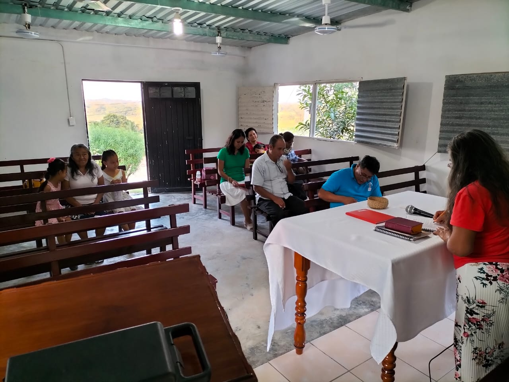
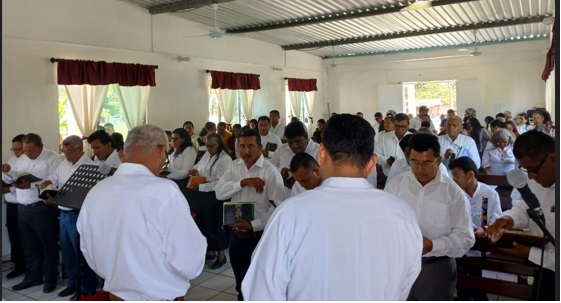
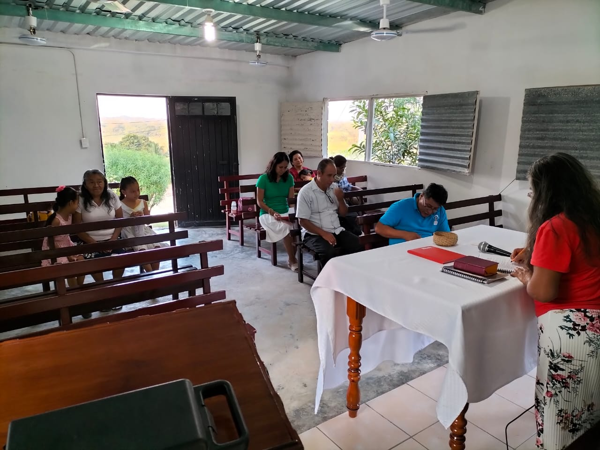
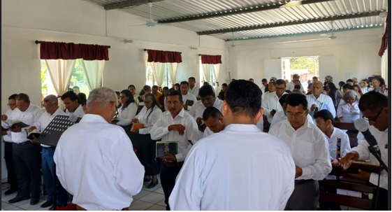

Videos
Próximamente agregaremos nuestros videos de alabanzas, predicaciones y actividades del grupo. ¡Vuelve pronto!
Audios
Cuando te conocí
Artista: Grupo Ministerial Yireh
De ti necesito
Artista: Grupo Ministerial Yireh
Siempre junto a mi
Artista: Grupo Ministerial Yireh
Descargar PDF
Contacto
Nuestra Identidad
Somos asociados de la Iglesia de Cristo del Séptimo Día , una organización fundada en 1956, con sede actualmente en el municipio de Jalapa,Tabasco, México, con un nombre basado en la Biblia y reconociendo a Jesucristo como la cabeza de la Iglesia. Estamos legalmente constituidos como Asociación SGAR-1972/94. Desde entonces, nos dedicamos a instruir y capacitar a la feligresía, guiándola en sus responsabilidades espirituales y preparándola para la venida de Cristo y las bodas del Cordero.
Nuestra misión
Guiar a las personas hacia la verdad bíblica, ofreciendo enseñanza clara y fundamentada en las Sagradas Escrituras, para que puedan alcanzar la salvación y formar parte del Reino de Dios, promoviendo un estudio profundo y personal de la Biblia bajo la dirección del Espíritu Santo.
Nuestra visión
Ser una comunidad espiritual sólida y creciente, que vive conforme a la voluntad de Dios, capacitando a sus miembros para vivir en santidad y consagración, y preparándolos para el encuentro glorioso con Jesucristo.
Nuestro objetivo
Ofrecer orientación doctrinal verdadera y confiable que contrarreste las interpretaciones erróneas y distorsionadas, apoyando a los creyentes a conocer la mente de Dios, fortalecer su fe y vivir una vida en conformidad con su Palabra.
La Biblia fundamento de la Verdad
La Biblia: Inspiración Divina y Testimonio de Salvación
La Biblia es una recopilación de textos sagrados que originalmente fueron documentos independientes (llamados "libros"), escritos a lo largo de un extenso periodo de tiempo en hebreo, arameo y griego. Posteriormente, estos escritos fueron reunidos para conformar lo que hoy conocemos como el Antiguo y el Nuevo Testamento. Popularmente conocida como “Biblia”, está compuesta por 66 libros y se divide en dos grandes partes: Antiguo Testamento: Consta de 39 libros, clasificados en: Pentateuco (5 libros), Históricos (12 libros), Proféticos (17 libros: 5 profetas mayores y 12 menores), Sapienciales o poéticos (5 libros). Nuevo Testamento: Compuesto por 27 libros, incluyendo: 4 Evangelios canónicos, Hechos de los Apóstoles (1 libro), Epístolas (14 de San Pablo, 1 de Santiago, 2 de San Pedro, 3 de San Juan, 1 de San Judas), Apocalipsis (1 libro).
Los autores de estos libros provenían de diversos contextos, pero todos compartían el mismo objetivo: revelar el plan de redención de Dios para la humanidad. El mensaje central es Jesucristo, el Mesías, testificado por todos los escritores del Antiguo y del Nuevo Testamento, bajo la inspiración del Espíritu Santo.
Fundamento doctrinal: la Biblia como Palabra de Dios
Nuestra doctrina afirma con convicción que los 66 libros de la Biblia son inspirados por Dios, como lo declara: 2 Timoteo 3:16-17: “Toda Escritura está inspirada por Dios y es útil para enseñar y reprender, para corregir y educar en una vida de rectitud, para que el hombre de Dios esté capacitado y completamente preparado para hacer toda clase de bien.” 2 Pedro 1:21: “Porque los profetas nunca hablaron por iniciativa humana; al contrario, eran hombres que hablaban de parte de Dios, dirigidos por el Espíritu Santo.” Diversos pasajes muestran cómo Dios mandó escribir Su palabra: Éxodo 17:14: “Jehová dijo a Moisés: Escribe esto en un libro, para que se recuerde…” Isaías 8:1: “El Señor me dijo: Toma una tabla grande y escribe en ella…” Isaías 30:8: “Ven ahora y escríbelo en una tabla... como testimonio eterno.”
También los escritores del Nuevo Testamento, como Lucas y Juan, dan testimonio de haber escrito guiados por el Espíritu: Lucas 1:3-4: “Yo también, excelentísimo Teófilo, lo he investigado todo con cuidado desde el principio, y me ha parecido conveniente escribirte estas cosas ordenadamente, para que conozcas bien la verdad de lo que te han enseñado.” Juan 20:31: “Pero éstas se han escrito para que ustedes crean que Jesús es el Mesías, el Hijo de Dios, y para que creyendo tengan vida por medio de él.” Juan 21:24: “Éste es el mismo discípulo que da testimonio de estas cosas, y que las ha escrito. Y sabemos que dice la verdad.” Apocalipsis 1:19: “Escribe lo que has visto: lo que ahora hay y lo que va a haber después.”
Exégesis
Las Sagradas Escrituras son la única fuente verdadera de revelación divina. Son completamente inspiradas por Dios y constituyen el único medio seguro para comprender su voluntad, su plan de salvación, y el regalo supremo: la vida eterna. Por ello, nuestra enseñanza se basa únicamente en la Escritura, estudiada con reverencia, fidelidad y la guía constante del Espíritu Santo.
Fe
La fe significa creer; es tener la firme convicción en las promesas que Dios nos ha hecho y que un día disfrutaremos plenamente.
Hoy, nuestra sociedad vive una profunda descomposición causada por la corrupción del pecado, misma que distorsiona el verdadero concepto de la fe.
Origen de la fe verdadera; la fe se obtiene a través del oír, tal como nos enseña Romanos 10:14: “¿Cómo, pues, invocarán a aquel en el cual no han creído? ¿Y cómo creerán en aquel de quien no han oído? ¿Y cómo oirán sin haber quien les predique?”
Problema de la fe humana; debido a la corrupción del pecado, el hombre ha creado una fe basada en su propia voluntad y no en la de Dios, como dice Eclesiastés 8:29: “He aquí, solamente esto he hallado: que Dios hizo al hombre recto, pero ellos buscaron muchas perversiones.” Cada persona ha formado su propia idea de fe, por lo que Proverbios 3:7 nos advierte: “No seas sabio en tu propia opinión; Teme a Jehová, y apártate del mal.”
Ejemplo histórico: Israel Como efecto del pecado, el pueblo de Israel también basaba su fe en su propia opinión, ignorando que esta actitud los llevaría a la destrucción. A pesar de ello, cegados por el pecado, creían tener la fe verdadera que Dios les había enseñado. Así lo muestra 1 Reyes 18:28-29: “Y ellos clamaban a grandes voces, y se sajaban con cuchillos y con lancetas conforme a su costumbre, hasta chorrear la sangre sobre ellos. Pasó el mediodía, y ellos siguieron gritando frenéticamente hasta la hora de ofrecerse el sacrificio, pero no hubo ninguna voz, ni quien respondiese ni escuchase.”
Recomendamos estudiar todo el capítulo para comprender bien esta historia, que muestra una fe humana equivocada, basada en falsas creencias surgidas del pecado. Influenciados por doctrinas falsas de los baales, pensaban que al lastimarse y derramar sangre, su dios les respondería. Sin embargo, su dios nunca respondió porque su fe no era verdadera.
Advertencia bíblica sobre la fe vana. La fe del hombre actual muchas veces se funda en argumentos vanos, como advierte Jeremías 17:5: “Así ha dicho Jehová: Maldito el varón que confía en el hombre, y pone carne por su brazo, y su corazón se aparta de Jehová.”
Fe en quien confiar. Por ello, Dios nos enseña en quién debemos confiar, como está escrito en Jeremías 17:7: “Bendito el varón que confía en Jehová, y cuya confianza es Jehová.” La fe que Dios nos ofrece la aprendemos en Apocalipsis 14:12: “Aquí está la paciencia de los santos, los que guardan los mandamientos de Dios y la fe de Jesús.”
La fe de nuestro Señor Jesucristo va acompañada de la obediencia a los diez mandamientos, como explica Romanos 3:31: “¿Luego por la fe invalidamos la ley? En ninguna manera, sino que confirmamos la ley.”
Fe y obediencia a la ley. Al oír la Palabra de Dios, se obtiene la fe que es la certeza de la vida eterna, un concepto que muchos no comprenden. Crear la fe es producto de guardar los diez mandamientos, que son la base primordial para alcanzar la vida eterna y todas las promesas divinas.
Fe como resultado del estudio de las Escrituras. Para entender qué tipo de fe opera en nuestra vida diaria, leemos en 2 Timoteo 3:15-17: “y que desde la niñez has sabido las Sagradas Escrituras, las cuales te pueden hacer sabio para la salvación por la fe que es en Cristo Jesús. Toda la Escritura es inspirada por Dios, y útil para enseñar, para redargüir, para corregir, para instruir en justicia, a fin de que el hombre de Dios sea perfecto, enteramente preparado para toda buena obra.”
La responsabilidad humana. El ser humano tiene en sus manos la posibilidad de crear una fe conforme a lo que Dios demanda, pero muchas veces no estudian Su palabra, prefiriendo las palabras vanas del hombre. Sin darse cuenta, olvidan que todo lo que se enseña acerca de la salvación debe estar completamente sustentado en las Escrituras, sin alterar ni omitir ningún texto relevante, como nos recuerda 1 Pedro 1:9: “Obteniendo el fin de vuestra fe, que es la salvación de vuestras almas.”
Resultados de practicar la fe verdadera. Practicar la fe nos dará certeza en lo que creemos y nos permitirá obtener la salvación y todas las promesas que Dios nos ha dado.
Tipos de fe: Existen dos tipos de fe: la fe humana, producto de una sociedad corrompida, y la fe que se obtiene al oír la Palabra de Dios. Hebreos 11:1 nos define la fe verdadera: “Es, pues, la fe la certeza de lo que se espera, la convicción de lo que no se ve.” Y Apocalipsis 14:12 añade: “Aquí está la paciencia de los santos, los que guardan los mandamientos de Dios y la fe de Jesús.”
Exortación final. Exhórtese a examinar cuál fe está practicando: ¿la que va en orden a la obediencia a los diez mandamientos o la que se ajusta a sus necesidades y conveniencias? Atienda a la advertencia de Isaías 55:8-9: “Porque mis pensamientos no son vuestros pensamientos, ni vuestros caminos mis caminos, dijo Jehová. Como son más altos los cielos que la tierra, así son mis caminos más altos que vuestros caminos, y mis pensamientos más que vuestros pensamientos.”
No es lo mismo querer alcanzar la salvación según nuestros deseos, que hacerlo conforme al plan que Dios tiene para nosotros. Le invitamos a obedecer Su palabra, a dejarse iluminar y a que Dios le guíe de Su mano para gozar las bendiciones que Él ha prometido. Amén.
Creer en la Trilogía Divina (Padre, Hijo y Espíritu Santo)
Creer en el Padre, el Hijo (Jesucristo) y el Espíritu Santo es el único camino para acceder al Reino de los Cielos. Sin esta fe plena y completa, nuestra vida carece de sentido en la búsqueda de las promesas eternas de Dios.
Debemos creer en el Padre, tal como lo declara Isaías 45:21-22: "Proclamad y hacedlos acercarse, y entren todos en consulta; ¿quién hizo oír esto desde el principio y lo tiene dicho desde entonces, sino yo Jehová? Y no hay más Dios que yo; Dios justo y Salvador; ningún otro fuera de mí. Mirad a mí, y sed salvos, todos los términos de la tierra, porque yo soy Dios, y no hay más."
Asimismo, es esencial creer en Jesucristo, el Hijo, quien afirmó en Juan 14:6: "Yo soy el camino, y la verdad, y la vida; nadie viene al Padre, sino por mí."
Y también debemos creer en el Espíritu Santo, cuya obra fue prometida por Jesús en Juan 14:26: "Mas el Consolador, el Espíritu Santo, a quien el Padre enviará en mi nombre, él os enseñará todas las cosas, y os recordará todo lo que yo os he dicho."
La doctrina que anunciamos no es humana, sino celestial. Así lo enseña Juan 7:16-17: "Jesús les respondió y dijo: Mi doctrina no es mía, sino de aquel que me envió. El que quiera hacer la voluntad de Dios, conocerá si la doctrina es de Dios, o si yo hablo por mi propia cuenta."
Por eso, nuestra prioridad como creyentes es afirmar nuestra fe en la Trinidad: el Padre, el Hijo y el Espíritu Santo. Como lo enseña 1 Juan 5:7: "Porque tres son los que dan testimonio en el cielo: el Padre, el Verbo y el Espíritu Santo; y estos tres son uno." Amén.
Gracia
La Gracia: Don divino de salvación y libertad.La Gracia es el don inmensurable por el cual Dios envió a su Hijo unigénito para rescatarnos del pecado y darnos vida. A través de Cristo, todos hemos recibido la oportunidad de ser libres, de romper las cadenas del enemigo, y de ejercer nuestro libre albedrío para decidir entre seguir en el pecado o recibir a Jesús en nuestro corazón, caminar en sus huellas y alcanzar la vida eterna.
Efesios 2:8 nos recuerda: "Porque por gracia sois salvos por medio de la fe; y esto no de vosotros, pues es don de Dios." La Palabra revela que somos salvos por gracia, es decir, por Cristo mismo. Tito 2:11 dice: "Porque la gracia de Dios se ha manifestado para salvación a todos los hombres." Y en Efesios 2:5 se confirma: "Aun estando nosotros muertos en pecados, nos dio vida juntamente con Cristo (por gracia sois salvos)."
Pero esta gracia se recibe por medio de la fe. Tener fe significa creer en el Autor de la salvación, y esa gracia es Cristo. Tito 2:12-14 nos instruye cómo vivir bajo esta gracia: "Enseñándonos que, renunciando a la impiedad y a los deseos mundanos, vivamos en este siglo sobria, justa y piadosamente, aguardando la esperanza bienaventurada y la manifestación gloriosa de nuestro gran Dios y Salvador Jesucristo, quien se dio a sí mismo por nosotros para redimirnos de toda iniquidad y purificar para sí un pueblo propio, celoso de buenas obras."
¿Anula la gracia la ley? Recibir la gracia no significa que dejemos de obedecer la ley de Dios. Algunos piensan que al tener a Cristo ya no es necesario guardar los mandamientos. Sin embargo, Romanos 6:1-2 advierte: "¿Perseveraremos en el pecado para que la gracia abunde? En ninguna manera. Porque los que hemos muerto al pecado, ¿cómo viviremos aún en él?"
La muerte de Cristo no elimina el pecado del mundo, sino que nos salva del poder del pecado, y nos llama a no volver a caer en él. Como enseña Romanos 6:13: "Ni tampoco presentéis vuestros miembros al pecado como instrumentos de iniquidad, sino presentaos vosotros mismos a Dios como vivos de entre los muertos, y vuestros miembros a Dios como instrumentos de justicia."
La función de la ley es hacernos conscientes del pecado. Romanos 7:7 lo aclara: "Pero yo no conocí el pecado sino por la ley; porque tampoco conociera la codicia, si la ley no dijera: No codiciarás." 1 Juan 3:4 también afirma: "Todo aquel que comete pecado, infringe también la ley; pues el pecado es infracción de la ley."
Dios, en su amor, envió a su Hijo para darnos libertad y una nueva oportunidad. 1 Juan 2:1-2 dice: "Hijitos míos, estas cosas os escribo para que no pequéis; y si alguno hubiere pecado, abogado tenemos para con el Padre, a Jesucristo el justo. Y él es la propiciación por nuestros pecados; y no solamente por los nuestros, sino también por los de todo el mundo."
El llamado a decidir. Cristo, en su infinita misericordia, nos dio la capacidad de elegir. En Deuteronomio 11:26-28 declara: "He aquí yo pongo hoy delante de vosotros la bendición y la maldición: la bendición, si oyereis los mandamientos de Jehová vuestro Dios... y la maldición, si no oyereis..."
Sigamos el ejemplo de Josué, quien proclamó con firmeza: "Yo y mi casa serviremos a Jehová" (Josué 24:15).Finalmente, la Escritura nos exhorta a no recibir en vano la gracia de Dios: 2 Corintios 6:1: "Os exhortamos también a que no recibáis en vano la gracia de Dios." 2 Timoteo 2:1: "Tú, pues, hijo mío, esfuérzate en la gracia que es en Cristo Jesús."
Luchemos con firmeza, con fe, y con obediencia, hasta el fin, para recibir la vida eterna prometida a quienes permanezcan fieles hasta la venida gloriosa de nuestro Señor Jesucristo. Amén.
El Admirable Poder de la Palabra
El Poder Ilimitado de la Palabra de Dios
La Palabra de Dios es viva, poderosa y creadora. Por medio de ella fueron formados los cielos y todo cuanto existe. Así lo declara el salmista en Salmo 33:6-8: "Por la palabra de Jehová fueron hechos los cielos, y todo el ejército de ellos por el aliento de su boca. Él junta como montón las aguas del mar; Él pone en depósitos los abismos. Tema a Jehová toda la tierra; teman delante de Él todos los habitantes del mundo."
Este poder creativo también se confirma en Colosenses 1:16-17: "Porque en Él fueron creadas todas las cosas, las que hay en los cielos y las que hay en la tierra, visibles e invisibles... todo fue creado por medio de Él y para Él. Y Él es antes de todas las cosas, y todas las cosas en Él subsisten."
No sólo tiene poder para crear, sino también para transformar vidas. Salmo 119:9 pregunta: "¿Con qué limpiará el joven su camino? Con guardar tu palabra." Esto nos recuerda que solo la Palabra puede purificar nuestros caminos y guiarnos hacia una vida recta delante de Dios.
La única forma de ser limpiados del pecado y restaurados en nuestra relación con Dios es creyendo y permitiendo que su Palabra actúe en nosotros. Como afirma Hebreos 4:12: "Porque la palabra de Dios es viva y eficaz, y más cortante que toda espada de dos filos; y penetra hasta partir el alma y el espíritu, las coyunturas y los tuétanos, y discierne los pensamientos y las intenciones del corazón."
Por eso, debemos abrir el corazón a su Palabra y permitirle obrar profundamente en nuestra vida. Ella revela si estamos viviendo con temor reverente, haciendo la voluntad de nuestro Padre celestial.
Que la Palabra de Dios sea nuestro alimento diario, nuestra guía constante y la luz que alumbra nuestro caminar. Amén.
Salvación gratuita
Jesucristo: El único medio para la salvación
La salvación del ser humano no se encuentra en obras, religiones, ni méritos propios. La Escritura enseña con claridad que Jesucristo es el único mediador entre Dios y los hombres, y que a través de Él se ofrece el camino hacia la vida eterna.
En 1 Timoteo 2:4-6 leemos: "El cual quiere que todos los hombres sean salvos y vengan al conocimiento de la verdad. Porque hay un solo Dios, y un solo mediador entre Dios y los hombres, Jesucristo hombre, el cual se dio a sí mismo en rescate por todos, de lo cual se dio testimonio a su debido tiempo."
Este pasaje revela el deseo de Dios: que todos sean salvos. Pero también establece un principio fundamental: sólo hay un mediador, y ese es Jesucristo. Él se entregó voluntariamente como rescate por toda la humanidad, y su sacrificio es la base de nuestra redención.
La salvación, además, no tiene precio humano. No puede comprarse con dinero ni ganarse con méritos. Es un regalo de Dios, ofrecido gratuitamente a todo aquel que lo desee. Así lo expresa Isaías 55:1: "A todos los sedientos: Venid a las aguas; y los que no tienen dinero, venid, comprad y comed. Venid, comprad sin dinero y sin precio, vino y leche."
Dios extiende su invitación a todos. No se necesita riqueza, posición o influencia. Solo un corazón dispuesto a creer y recibir a Cristo.
Ahora bien, recibir a Jesús como Salvador es el comienzo, no el final del camino. La salvación implica una vida de obediencia, perseverancia y reverencia. Filipenses 2:12 nos exhorta: "Ocupaos en vuestra salvación con temor y temblor."
Esto no significa que nos salvamos por nuestras obras, sino que, una vez salvos por gracia, debemos cuidar nuestra fe con seriedad y responsabilidad espiritual.
El llamado final de Dios está vigente hoy, como lo declara Apocalipsis 22:17: "Y el Espíritu y la Esposa dicen: Ven. Y el que oye, diga: Ven. Y el que tiene sed, venga; y el que quiera, tome del agua de la vida gratuitamente." La salvación está disponible. Jesús es el camino. La decisión es personal.
Arrepentimiento y obediencia
El Arrepentimiento: El Camino a una Nueva Vida en Cristo
El verdadero arrepentimiento implica mucho más que sentir remordimiento por el pecado; significa un cambio de vida, una decisión firme de abandonar toda práctica pecaminosa y vivir conforme a la voluntad de Dios. Pecado es toda infracción de la ley divina, como lo revelan los mandamientos contenidos en Éxodo 20:1–17.
Arrepentirse es renunciar a la antigua manera de vivir, marcada por los deseos de la carne, y recibir a Cristo en el corazón, permitiendo que Él transforme nuestra vida desde adentro.
En Hechos 2:38, el apóstol Pedro lo declara con claridad: "Arrepentíos, y bautícese cada uno de vosotros en el nombre de Jesucristo para perdón de los pecados; y recibiréis el don del Espíritu Santo."
El arrepentimiento también incluye reconocer nuestra condición de pecado y acudir a Dios con un corazón humillado. Así lo expresó David en el Salmo 51:1–3: "Ten piedad de mí, oh Dios, conforme a tu misericordia... Lávame más y más de mi maldad, y límpiame de mi pecado. Porque yo reconozco mis rebeliones, y mi pecado está siempre delante de mí."
Reconocer nuestros pecados es aceptar que solo Jesús puede limpiarnos y restaurarnos. Por eso, Isaías 1:16 nos llama a la acción: "Lavaos y limpiaos; quitad la iniquidad de vuestras obras de delante de mis ojos; dejad de hacer lo malo."
Dios, en su amor y paciencia, no desea que nadie se pierda, sino que todos procedan al arrepentimiento. "El Señor no retarda su promesa... sino que es paciente para con nosotros, no queriendo que ninguno perezca, sino que todos procedan al arrepentimiento." – 2 Pedro 3:9
Jesús mismo nos llama a esta transformación espiritual. En Marcos 1:15 dijo: "El tiempo se ha cumplido, y el reino de Dios se ha acercado; arrepentíos, y creed en el evangelio."
Creer en el evangelio es obedecer la Palabra de Dios, y esto incluye el bautismo como símbolo de un nuevo nacimiento. "El que creyere y fuere bautizado, será salvo; más el que no creyere, será condenado." – Marcos 16:16
El arrepentimiento nos conduce al perdón, el bautismo nos introduce a una nueva vida, y la obediencia constante nos encamina hacia la vida eterna. Es un llamado a ser fieles hasta el final, renacidos en Cristo, para entrar en el Reino de Dios.
La Esperanza del pecador y la herencia de los salvados
Recibe a Cristo: La Verdad Presente que No Debes Ignorar
La única verdad que no puedes despreciar es esta: recibir a Jesucristo en tu corazón. Él es el regalo más valioso que Dios ha dado a la humanidad. Dios envió a su Hijo a este mundo para traer esperanza, vida y salvación. Si deseas que tu vida tenga un propósito eterno y no sea solo un transcurso pasajero en este mundo, debes considerar con seriedad este regalo maravilloso: la vida eterna.
La Biblia afirma que Cristo es poderoso para salvar completamente a todos los que se acercan a Dios por medio de Él:"Por lo cual puede también salvar perpetuamente a los que por él se acercan a Dios, viviendo siempre para interceder por ellos." – Hebreos 7:25
Y el testimonio de los profetas lo confirma: "De éste dan testimonio todos los profetas, que todos los que en él creyeren, recibirán perdón de pecados por su nombre." – Hechos 10:43
Hoy es el día de salvación. Aprovecha esta oportunidad. El boleto a la vida eterna está disponible, y no se compra con dinero, sino con fe, arrepentimiento y entrega total al Señor.
La Herencia de los Redimidos
Lo que Dios tiene preparado para aquellos que le aman es inmensurable y glorioso. La herencia eterna está reservada para los que vencen, para quienes perseveran en la fe hasta el final: "Pero nosotros esperamos, según sus promesas, cielos nuevos y tierra nueva, en los cuales mora la justicia." – 2 Pedro 3:13
"Al que venciere, yo lo haré columna en el templo de mi Dios... y escribiré sobre él el nombre de mi Dios, y el nombre de la ciudad de mi Dios, la nueva Jerusalén..." – Apocalipsis 3:12
"Al que venciere, le daré a comer del árbol de la vida, el cual está en medio del paraíso de Dios." – Apocalipsis 2:7
Aún los elementos más salvajes de la creación estarán en armonía en ese Reino de justicia y paz: "Morará el lobo con el cordero, y el leopardo con el cabrito se acostará... el niño de pecho jugará sobre la cueva del áspid... No harán mal ni dañarán en todo mi santo monte; porque la tierra será llena del conocimiento de Jehová, como las aguas cubren el mar." – Isaías 11:6–9
Una Realidad que Puede Ser Tuya. Es difícil describir con palabras todas las bondades que Dios ha preparado para sus hijos. Solo pensar en un mundo donde todo viva en perfecta paz, donde incluso los animales feroces convivan en armonía con el ser humano, nos llena de asombro y esperanza.
Por eso, hoy te hacemos esta invitación: Abre la puerta de tu corazón. Recibe a Cristo como tu Señor y Salvador. Haz real esta herencia en tu vida. No dejes pasar esta oportunidad. Dios te ama, y ha preparado para ti un futuro glorioso junto a Él.
La Oración
El Poder de la Oración
La oración es el canal sagrado por medio del cual fluye hacia nosotros el amor, la fortaleza y la gracia de Cristo. A través de ella, el alma se conecta con el Creador, recibe respuestas, encuentra soluciones a sus necesidades y halla alivio en medio de las aflicciones. Así lo afirmó nuestro Señor Jesucristo: “Pedid, y se os dará; buscad, y hallaréis; llamad, y se os abrirá.” (Mateo 7:7)
La oración es una de las llaves virtuosas que Dios ha entregado a su pueblo. Por medio de ella, expresamos nuestras necesidades, elevamos peticiones, pedimos sabiduría, suplicamos perdón y buscamos dirección para vivir en armonía con su voluntad.
El apóstol Santiago nos exhorta: “Y si alguno de vosotros tiene falta de sabiduría, pídala a Dios, el cual da a todos abundantemente y sin reproche, y le será dada. Pero pida con fe, no dudando nada…” (Santiago 1:5-6)
Además, la oración es un arma espiritual poderosa, indispensable para resistir las artimañas del enemigo. Hay luchas espirituales que solo pueden vencerse mediante oración y ayuno. Así lo enseñó el Señor: “Pero este género no sale sino con oración y ayuno.” (Mateo 17:21)
Cuando el pueblo de Dios ora con fidelidad, Él manifiesta su poder con milagros, sanidades, consuelo y fortaleza celestial. Sin embargo, estas bendiciones se otorgan bajo una condición: permanecer en obediencia y comunión con Cristo. El mismo Jesús declaró: “Si permanecéis en mí, y mis palabras permanecen en vosotros, pedid todo lo que queréis, y os será hecho.” (Juan 15:7)
Dios también multiplica la provisión, consuela al angustiado y restaura al quebrantado. Tal como ocurrió con Job, quien al orar por sus amigos fue restaurado y bendecido: “Y quitó Jehová la aflicción de Job, cuando él hubo orado por sus amigos; y aumentó al doble todas las cosas que habían sido de Job.” (Job 42:10)
Enseñanzas Humanas
Las Escrituras nos advierten que muchas de las prácticas religiosas actuales no provienen de Dios, sino que son enseñanzas propias del hombre, imitaciones de la antigua doctrina farisea, caracterizada por la apariencia externa y la hipocresía espiritual.
Desde los tiempos de nuestro Señor Jesucristo, ya se evidenciaban estas actitudes. Él mismo denunció a los que oraban de pie en lugares públicos, no por devoción, sino por exhibicionismo espiritual: Mateo 6:5 “Y cuando ores, no seas como los hipócritas; porque ellos aman el orar en pie en las sinagogas y en las esquinas de las calles, para ser vistos de los hombres; de cierto os digo que ya tienen su recompensa.”
Este tipo de práctica —en cuanto a la postura y la intención— no nace de la humildad ni de la obediencia, sino de la concupiscencia del hombre natural, motivado por orgullo y vanagloria. Es la sabiduría falsa que describe Santiago: Santiago 3:15 “Porque esta sabiduría no es la que desciende de lo alto, sino terrenal, animal, diabólica.”
Aquel que ora conforme a sus propias preferencias, sin considerar el mandato divino, demuestra que aún no se ha humillado verdaderamente ante Dios. Rechaza el modelo bíblico de reverencia y se convierte en esclavo de su ego y razonamiento carnal.
La Postura en la Oración y el Peligro de las Enseñanzas Humanas
En la actualidad, muchas doctrinas enseñan que la postura física al orar no tiene importancia, promoviendo una adoración basada en la comodidad personal. Sin embargo, esta idea carece de respaldo bíblico y pasa por alto la reverencia que merece Dios.
El ser humano, influenciado por su naturaleza pecaminosa, crea una fe a su medida, justificándose con frases como: “lo importante es que lo hagas de corazón”, ignorando que Cristo mandó amarlo con todo el corazón, alma, mente y fuerzas (Marcos 12:30). Esta entrega implica tanto una actitud interna como una expresión externa de humildad, como lo es arrodillarse o postrarse ante Dios.
La verdadera obediencia no cuestiona lo que ya fue establecido por Dios, sino que se somete con reverencia. La postura corporal en la oración, por tanto, no es un acto ritual, sino una manifestación de amor, entrega y respeto al Altísimo.
Además, existe el peligro de mezclar la verdad divina con mandamientos de hombres. Hoy, como en los días de los jueces (Jueces 17:6), cada quien hace lo que mejor le parece, formando doctrinas agradables al oído pero apartadas de la voluntad de Dios. Esto conduce a una espiritualidad engañosa, donde se confunde la emoción con la verdad, y se pierde el discernimiento espiritual (Proverbios 16:2).
Frente a este panorama, los verdaderos creyentes deben mantenerse firmes en la verdad revelada por Cristo. No todo lo que parece espiritual viene de Dios. Por eso, debemos escudriñar las Escrituras, orar con humildad y adorar conforme al Espíritu y a la verdad (Juan 4:24), como el Padre lo demanda.
¡Cuidado con oraciones incorrectas!
• Juan se postró ante un ángel, y fue corregido: “Adora a Dios” (Apocalipsis 22:8–9)
• Los soldados se burlaron de Jesús arrodillándose sin reverencia. (Marcos 15:19)
• Amán quería que se postraran ante él por orgullo. (Ester 3:2)
• Aun el diablo exige adoración postrada. (Lucas 4:6–8)
El Mandato de Dios es Claro
Dios ha establecido con claridad su voluntad sobre la reverencia debida en la adoración. Él declaró con firmeza: Isaías 45:22–23 “Mirad a mí, y sed salvos, todos los términos de la tierra, porque yo soy Dios, y no hay más. Por mí mismo hice juramento... Que a mí se doblará toda rodilla, y jurará toda lengua.”
Este mandato no ha sido revocado, ni puede ser reemplazado por argumentos humanos o preferencias personales. Sin embargo, muchos en estos tiempos han rechazado la sana doctrina, cumpliéndose así lo que fue profetizado: 2 Timoteo 4:3 “Porque vendrá tiempo cuando no sufrirán la sana doctrina, sino que teniendo comezón de oír, se amontonarán maestros conforme a sus propias concupiscencias.”
No debe sorprendernos esta desviación. La Palabra de Dios ya lo había anticipado. Por eso, hoy más que nunca, es necesario estar alertas, discernir y escudriñar las Escrituras, para confirmar si lo que se enseña es conforme a la revelación de nuestro Señor Jesucristo.
Aclaración de Algunos Versículos Interpretados Erróneamente
En muchos círculos religiosos, se ha difundido la idea de que la postura en la oración no es importante, enseñando que puede hacerse de pie, sentado, acostado o como cada quien lo prefiera, mientras "sea de corazón". Para sostener esta afirmación, algunos citan versículos bíblicos que, lamentablemente, son interpretados fuera de su contexto, generando confusión y desviación doctrinal.
Sin embargo, a la luz de las Escrituras y con un estudio cuidadoso y reverente, se puede evidenciar la verdad que Dios ha revelado acerca del modo correcto de orar, incluyendo la postura física, que refleja la humildad y reverencia del corazón.
Ejemplo 1: El Rey Salomón, muchos citan 1 Reyes 8:22–23 para afirmar que Salomón oró de pie: “Luego se puso Salomón delante del altar de Jehová, en presencia de toda la congregación de Israel, y extendiendo sus manos al cielo, dijo: Jehová Dios de Israel…” A simple vista, parecería que Salomón oró de pie. Pero es incorrecto tomar un solo versículo como base doctrinal, sin considerar el contexto completo, tal como enseña la Escritura: Isaías 28:10 “Porque mandamiento tras mandamiento, mandato sobre mandato, renglón tras renglón, línea sobre línea, un poquito allí, otro poquito allá.”
También se nos exhorta a usar toda la Escritura como guía y fundamento: 2 Timoteo 3:16–17 “Toda la Escritura es inspirada por Dios, y útil para enseñar, para redargüir, para corregir, para instruir en justicia…” Por tanto, al continuar la lectura del capítulo, encontramos el detalle revelador: 1 Reyes 8:54–55 “Cuando acabó Salomón de hacer a Jehová toda esta oración y súplica, se levantó de estar de rodillas delante del altar de Jehová, con sus manos extendidas al cielo; y puesto en pie, bendijo a toda la congregación…”
Esto deja claro que Salomón oró de rodillas, y luego se puso en pie para bendecir al pueblo. Por lo tanto, no oró de pie como muchos enseñan, sino que adoptó una postura de reverencia y humillación ante Dios, como corresponde al siervo obediente.
Ejemplo 2: 1 Timoteo 2:8, Otro versículo frecuentemente malinterpretado es: 1 Timoteo 2:8 “Quiero, pues, que los hombres oren en todo lugar, levantando manos santas, sin ira ni contienda.”
Algunos utilizan este texto para justificar que la postura física no importa. Sin embargo, este pasaje no hace ninguna referencia explícita a orar de pie, sentado o acostado. Más bien, el énfasis está en la pureza espiritual del orante: "manos santas, sin ira ni contienda".
Lamentablemente, se cae en el error de añadir sentido al texto que no está presente. La Palabra de Dios es clara: Eclesiastés 3:14 “He entendido que todo lo que Dios hace será perpetuo; sobre aquello no se añadirá, ni de ello se disminuirá; y lo hace Dios, para que delante de él teman los hombres.” Apocalipsis 22:18–19 “Si alguno añadiere a estas cosas, Dios traerá sobre él las plagas que están escritas... y si alguno quitare... Dios quitará su parte del libro de la vida…”
Enseñar que este versículo autoriza cualquier postura es alterar el mensaje bíblico, y eso acarrea consecuencias serias. No debemos añadir ni quitar, sino enseñar conforme a lo que está escrito.
Conclusión
El Espíritu Santo nos guía a toda verdad cuando escudriñamos las Escrituras con reverencia y obediencia, no con liviandad ni por conveniencia doctrinal. Si hemos de enseñar sobre la oración, debemos hacerlo con fidelidad bíblica, no bajo razonamientos humanos. “Examinadlo todo; retened lo bueno.” (1 Tesalonicenses 5:21)
La postura en la oración sí importa, porque revela el corazón que se rinde, se humilla y honra a Dios. No debemos guiarnos por interpretaciones humanas, sino por el ejemplo bíblico que nos fue dejado por los siervos fieles… y principalmente por nuestro Señor Jesucristo, quien oraba postrado sobre su rostro (Mateo 26:39).
¿Qué significa Consultar a Dios?
Consultar a Dios implica buscar su voluntad, dirección o juicio ante una situación específica, especialmente cuando se necesita una respuesta divina clara. A través de las Escrituras, vemos que esta consulta podía hacerse por medio de profetas, sacerdotes, sueños o el uso del Urim y Tumim.
Caso de Josafat – 2 Crónicas 20:5-6 “Entonces Josafat se puso de pie en la asamblea de Judá y de Jerusalén, en la casa de Jehová, delante del atrio nuevo; y dijo: Jehová Dios de nuestros padres, ¿no eres tú Dios en los cielos…?”
Algunos citan este pasaje para afirmar que el rey Josafat oró de pie. No obstante, es importante leer todo el capítulo y analizar el contexto completo, no sólo un versículo aislado. El pasaje no muestra una oración común, sino una consulta solemne a Dios en medio de una crisis nacional (la amenaza de guerra).
¿Cómo se consultaba a Dios en el Antiguo Testamento?
o Por medio del Urim y Tumim: Esdras 2:63 – “Hasta que hubiese sacerdote para consultar con Urim y Tumim.” Números 27:21 – “…le consultará por el juicio del Urim delante de Jehová…”
o Por medio de profetas: 1 Samuel 9:9 – “Antiguamente en Israel… decía: Venid y vamos al vidente…” 2 Crónicas 18:6-7 – Josafat pide que se consulte a Jehová por medio del profeta Micaías.
o Por medio de sueños: 1 Samuel 28:6 – “Consultó Saúl a Jehová; pero Jehová no le respondió ni por sueños, ni por Urim, ni por profetas.”
o A través de los sacerdotes: Éxodo 18:15 – Moisés atendía al pueblo y consultaba a Dios por ellos.
¿Qué ocurrió en el caso de Josafat?
Josafat, en su temor, convocó a todo Judá a un ayuno solemne y oración: 2 Crónicas 20:3-4 “Entonces él tuvo temor; y Josafat humilló su rostro para consultar a Jehová, e hizo pregonar ayuno a todo Judá…”
Al consultar a Dios de pie, en asamblea, Josafat testificaba públicamente de las obras de Dios y suplicaba una señal para enfrentar el conflicto. Luego, Dios respondió por medio del profeta Jahaziel, lleno del Espíritu: 2 Crónicas 20:14-15 “Y estaba allí Jahaziel… sobre el cual vino el Espíritu de Jehová… y dijo: Oíd, Judá… no temáis… porque no es vuestra la guerra, sino de Dios.”
Ante esta respuesta, Josafat y el pueblo no permanecieron de pie, sino que reaccionaron con reverencia y humildad: Versículo 18 “Entonces Josafat se inclinó rostro a tierra, y asimismo todo Judá se postró delante de Jehová y adoraron.”
Esto confirma que la consulta se hizo inicialmente de pie, pero la adoración fue postrados. La respuesta divina movió al pueblo al quebrantamiento y reverencia total.
Diferencia entre consultar y orar
Es necesario distinguir entre consultar a Dios y orar directamente. Cuando el rey o el pueblo deseaba conocer la voluntad de Dios, acudían a un profeta o sacerdote, como en: Ezequiel 20:1 “…vinieron algunos de los ancianos de Israel a consultar a Jehová, y se sentaron delante de mí.”
Esto no era oración personal, sino consulta mediante un intermediario autorizado. Por ello, la postura no era relevante, ya que no se dirigían a Dios en oración personal, sino que esperaban respuesta por medio del profeta.
¿Qué sucede con 2 Samuel 7:18? “Y entró el rey David y se puso delante de Jehová…” Algunos afirman que David oró sentado. Sin embargo: El texto no menciona postura alguna específica.
Otras traducciones solo dicen “se puso delante de Jehová”, sin indicar si estaba de pie o sentado.
• Contextualmente, se trata de una respuesta de David a un mensaje del profeta Natán (v.4), es decir, un diálogo o consulta, no necesariamente una oración formal.
Exégesis: ¿Cómo debemos actuar hoy?
• Consultar a Dios es buscar su voluntad a través de su palabra o siervos autorizados.
• En el caso de Josafat, consultó de pie, pero adoró postrado al recibir respuesta.
• Cuando la consulta era por medio de profetas o sacerdotes, la postura no era determinante.
• La oración personal sí implica reverencia y entrega; en los ejemplos bíblicos, los siervos de Dios se postraban o arrodillaban.
Lucas 5:8 “Viendo esto Simón Pedro, cayó de rodillas ante Jesús, diciendo: Apártate de mí, Señor, porque soy hombre pecador.”
La Oración: Posturas Correctas y Reverencia al Orar
La actitud correcta al orar: Humildad y obediencia
“Si hasta los demonios se postran ante Jesús” (Marcos 3:11), ¿cómo no lo haremos nosotros?
La verdadera reverencia nace del entendimiento de quién es Dios. Por lo tanto, el corazón, mediante la obediencia, refleja la postura de adoración: postrarse o arrodillarse. No es una obligación vacía, sino una muestra externa de una convicción interna de quién es nuestro Creador y Redentor. Honremos a Dios no solo con los labios, sino también con nuestro cuerpo y espíritu, reconociendo su majestad.
Posturas correctas para orar
De rodillas
Arrodillarse es más que flexionar ambas rodillas: es ser humilde, manso, paciente, sumiso, despojado de todo pensamiento vano. Es permitir que todo mandamiento de Dios sea obrado en nuestras vidas.
Ejemplos bíblicos:
• Daniel: oraba de rodillas tres veces al día. (Daniel 6:10)
• Esteban: cayó de rodillas y rogó al Señor antes de morir. (Hechos 7:60)
• Pedro: se arrodilló y oró ante el cuerpo de Tabita. (Hechos 9:40)
• Pedro: se arrodilló y oró ante el cuerpo de Tabita. (Hechos 9:40)
Ejemplo de Esdras: "Y a la hora del sacrificio de la tarde me levanté de mi aflicción... me postré de rodillas y extendí mis manos a Jehová mi Dios" (Esdras 9:5)
Postrados totalmente
Estar postrado implica estar horizontalmente con el rostro en tierra y los brazos extendidos.
Ejemplos bíblicos: Moisés y Aarón en el tabernáculo (Levítico 9:23–24)
• Los 24 ancianos y seres vivientes (Apocalipsis 19:4)
• Moisés intercediendo por Israel (Deuteronomio 9:25)
Reflexión: muchas veces el ser humano se humilla ante otros por interés, pero no lo hace ante Dios. No es una actitud de debilidad, sino un reconocimiento de su majestad.
Oraciones en circunstancias especiales
Orar dentro del pez (Jonás) Jonás oró desde el vientre del pez, mostrando que Dios escucha cuando las circunstancias lo impiden físicamente.
"Invoqué en mi angustia... desde el seno del Seol clamé, y mi voz oíste" (Jonás 2:1–2) Pero si estás físicamente bien, y no te postras por orgullo, ¡cuidado! tu oración no será atendida
Acostado hacia la pared (Ezequías) Una postura justificada por enfermedad: "Entonces volvió Ezequías su rostro a la pared, e hizo oración a Jehová" (Isaías 38:2) Dios conoce nuestras limitaciones, pero también nuestras excusas.
Lugares donde se puede orar
En el templo; Salomón lo expresó al inaugurar el templo: “Oye la oración... cuando oren en este lugar” (1 Reyes 8:30, 37–39) “Mi nombre estará allí para siempre” (1 Reyes 9:3); Ana, profetisa, servía de día y noche en oración. (Lucas 2:36–37)
En el monte Carmelo; Elías se postró en oración. (1 Reyes 18:42)
En cualquier lugar
Por la tribulación, llegará un tiempo donde no se podrá orar en templos: “Los que estén en Judea, huyan a los montes…” (Mateo 24:16–17) Jesús anticipó esto a la samaritana: “La hora viene... cuando los verdaderos adoradores adorarán al Padre en espíritu y en verdad” (Juan 4:20–24); Pedro oraba en la azotea. (Hechos 10:9)
Oración en la eternidad: En la Tierra Nueva “Yo los llevaré a mi santo monte... mi casa será llamada casa de oración” (Isaías 57:7)
En el hogar; Daniel oraba de rodillas en su casa. (Daniel 6:10); Jesús recomienda hacerlo en secreto. (Mateo 6:6)
En la playa; Pablo oró de rodillas en la playa. (Hechos 21:5)
En el Monte de los Olivos; Jesús, nuestro ejemplo: “Se apartó... y puesto de rodillas oró” (Lucas 22:41–46); “Porque ejemplo os he dado…” (Juan 13:15)
Frecuencia de la oración
Orar sin cesar; “Orad sin cesar” (1 Tesalonicenses 5:17); “Me acuerdo de ti... noche y día” (2 Timoteo 1:3); Moisés intercedió 40 días. (Deuteronomio 9:25)
También cuando estás alegre; “Me alegré con los que me decían: A la casa de Jehová iremos” (Salmos 122:1); “Adoremos y postrémonos” (Salmos 95:6)
Modelo de oración; David oraba tres veces al día. (Salmos 55:17); Jesús nos dejó el Padre Nuestro como ejemplo. (Mateo 6:9–13); “No uséis vanas repeticiones... vuestro Padre sabe de qué cosas tenéis necesidad…” (Mateo 6:6–8)
Pide con fe; “Todo lo que pidiereis en oración, creyendo, lo recibiréis” (Mateo 21:22) “La oración de fe salvará al enfermo…” (Santiago 5:15–18) “Confesaos vuestras ofensas… la oración eficaz del justo puede mucho” (Santiago 5:16)
¿Qué oración escucha Dios? “Vivid sabiamente... para que vuestras oraciones no tengan estorbo” (1 Pedro 3:7); “El que aparta su oído de la ley, su oración es abominable” (Proverbios 28:9); “Dios no oye a los pecadores, pero sí al que hace Su voluntad” (Juan 9:31) “Si en mi corazón hubiese mirado la iniquidad, el Señor no me habría escuchado” (Salmo 66:18–19)
Palabras correctas al orar; No digas: "Apártala Señor", sino como Jesús: “Padre mío, si es posible, pase de mí esta copa; pero no sea como yo quiero, sino como tú” (Mateo 26:39) La oración es como incienso delante de Dios: “Copas de oro llenas de incienso, que son las oraciones de los santos” (Apocalipsis 5:8); “Suba mi oración... como el incienso” (Salmos 141:2)
El Bautismo
Puerta de Entrada al Reino de Dios
El bautismo es la condición irrevocable establecida por Dios para tener acceso a Su Reino. Así lo declara el evangelio según San Marcos 16:16: “El que creyere y fuere bautizado, será salvo; mas el que no creyere, será condenado.”
También en Juan 3:3, Jesús afirma con solemnidad: “De cierto, de cierto te digo, que el que no naciere de nuevo, no puede ver el Reino de Dios.”
Estas palabras nos enseñan que el bautismo no es una opción, sino un paso necesario en la vida de todo creyente. Así como el Maestro instruyó a Nicodemo, nos muestra hoy que todo aquel que recibe a Cristo en su corazón debe, como primer acto de fe y obediencia, someterse a este sagrado rito. El mismo Jesús fue bautizado, dejándonos ejemplo de obediencia y compromiso con el Padre.
El bautismo representa el inicio de una vida nueva en Cristo, una vida guiada por el Espíritu Santo. Jesús explicó claramente a Nicodemo en Juan 3:5: “De cierto, de cierto te digo, que el que no naciere de agua y del Espíritu, no puede entrar en el Reino de Dios.”
Nacer de nuevo significa morir al pecado y comenzar una nueva vida espiritual. Tus pecados pasados quedan en el olvido; son borrados, y ya no se tomarán en cuenta. Desde ese momento, toda obra que realices empezará a ser registrada en el cielo, por lo tanto, es vital procurar sembrar para el bien y vivir conforme al Espíritu.
El bautismo de Jesús
La Palabra de Dios nos muestra que el bautismo de Jesús es un ejemplo perfecto y digno de ser seguido por todo creyente. Aunque Él no tenía pecado, se sometió voluntariamente al bautismo como un acto de obediencia y como señal del camino que todos debemos transitar.
En Marcos 1:9-11, se nos relata este momento sagrado: “Aconteció en aquellos días, que Jesús vino de Nazaret de Galilea, y fue bautizado por Juan en el Jordán. Y luego, cuando subía del agua, vio abrirse los cielos, y al Espíritu como paloma que descendía sobre él. Y vino una voz de los cielos que decía: Tú eres mi Hijo amado; en ti tengo complacencia.”
Este pasaje confirma que Jesús fue bautizado por inmersión en agua, ya que el texto dice claramente “cuando subía del agua”, lo que indica que estuvo completamente sumergido, siguiendo el modelo que luego sería enseñado a su Iglesia. También leemos en Juan 3:23: “Juan bautizaba también en Enón, junto a Salim, porque había allí muchas aguas; y venían, y eran bautizados.”
Esto nos demuestra que el bautismo requería abundancia de agua, lo cual concuerda con la práctica de sumergir completamente al creyente como símbolo de muerte al pecado, sepultura y resurrección espiritual.
El apóstol Pablo lo explica con claridad en Romanos 6:3-4: “¿O no sabéis que todos los que hemos sido bautizados en Cristo Jesús, hemos sido bautizados en su muerte? Porque somos sepultados juntamente con él para muerte por el bautismo, a fin de que, como Cristo resucitó de los muertos por la gloria del Padre, así también nosotros andemos en vida nueva.”
El ejemplo que debemos seguir
El bautismo de Jesús no solo fue un acto de obediencia, sino una declaración pública del inicio de su ministerio. Asimismo, todo creyente debe seguir este ejemplo, bautizándose por inmersión en aguas abundantes, como lo hizo nuestro Señor, y comenzar una vida nueva conforme a la voluntad del Padre.Dios mismo expresó su aprobación desde los cielos al decir: “Tú eres mi Hijo amado; en ti tengo complacencia.” Esa misma complacencia espera Dios de cada uno de nosotros cuando damos este paso de fe y obediencia.
Bautismo por Inmersión,
La forma correcta de realizar el bautismo es por inmersión total en agua, tal como lo enseñan las Escrituras y lo practicó nuestro Señor Jesucristo. Este acto sagrado debe ser llevado a cabo por una persona debidamente ordenada al ministerio eclesiástico, con autoridad espiritual para oficiar este rito solemne. El candidato al bautismo es tomado de la mano por el ministro, quien previamente le ha dado instrucciones claras sobre cómo actuar tanto dentro como fuera del agua. La persona es sumergida completamente bajo el agua y levantada de inmediato, cumpliendo así el simbolismo de la muerte, sepultura y resurrección en Cristo
Este acto representa el entierro de la vieja vida, de la misma manera que, al morir físicamente, un cuerpo es sepultado cubriéndolo con tierra. Así, al ser sumergido en el agua, el creyente muere al pecado; y al ser levantado, nace a una nueva vida en Cristo.
Un nuevo comienzo en Cristo
Al bautizarse, se cumple lo escrito en la Palabra: somos bautizados con Cristo en su muerte (Romanos 6:3-4), iniciando desde ese momento una nueva vida espiritual con el propósito de llegar al encuentro con el Señor Jesús al final de nuestra carrera. Sin embargo, es esencial guardar nuestra vestidura sin mancha, vivir en santidad y nunca negar a Cristo como nuestro Salvador.
Un solo bautismo.
La Escritura es clara al respecto: Efesios 4:5 “Un Señor, una fe, un bautismo.” Esto significa que el bautismo debe realizarse una sola vez en la vida. Por eso, quien se bautiza debe hacerlo con plena fe, entendimiento, arrepentimiento genuino y compromiso de corazón. Es necesario dejar atrás la vida antigua, dominada por los deseos de la carne, y comenzar una vida santa conforme al Espíritu de Dios.
¿Y si caes en pecado después del bautismo?
Aunque el objetivo es no pecar, sabemos que como humanos podemos fallar. Pero no debemos caer en desesperación ni sentirnos condenados. Dios tiene un plan de redención y restauración para sus hijos. En 1 Juan 2:1 encontramos una promesa llena de gracia: “Hijitos míos, estas cosas os escribo para que no pequéis; y si alguno hubiere pecado, abogado tenemos para con el Padre, a Jesucristo el justo.”
Cristo intercede por nosotros y nos ofrece perdón cuando hay arrepentimiento verdadero. Él no nos desecha, sino que extiende su misericordia para que nos levantemos y continuemos firmes en el camino de la fe.
Solución para Cuando Caes en Pecado Aun Siendo Bautizado.
La vida cristiana no está exenta de luchas ni de caídas. Incluso después del bautismo, que representa el inicio de una vida nueva en Cristo, el creyente puede, por debilidad o descuido, cometer pecado e infringir la Ley de Dios. Sin embargo, la Palabra no nos deja sin esperanza: nos muestra el camino para restaurar nuestra comunión con Dios.
El primer paso es un arrepentimiento genuino, reconociendo nuestra falta y confesándola sinceramente delante del Señor. Dios, en su misericordia, no desprecia al corazón contrito y humillado, y está dispuesto a perdonar a quien se vuelve a Él con sinceridad.
El caso de Simón el mago: una advertencia y una enseñanza.
Un ejemplo claro se encuentra en el caso de Simón el mago, quien creyó en Jesús y fue bautizado. Sin embargo, en su inmadurez espiritual, cometió un pecado grave al querer comprar el don del Espíritu Santo con dinero. Este relato lo encontramos en Hechos 8:17-24: “Entonces les imponían las manos, y recibían el Espíritu Santo. Cuando vio Simón que por la imposición de las manos de los apóstoles se daba el Espíritu Santo, les ofreció dinero, diciendo: Dadme también a mí este poder, para que cualquiera a quien yo impusiere las manos reciba el Espíritu Santo.” “Entonces Pedro le dijo: Tu dinero perezca contigo, porque has pensado que el don de Dios se obtiene con dinero. No tienes tú parte ni suerte en este asunto, porque tu corazón no es recto delante de Dios. Arrepiéntete, pues, de esta tu maldad, y ruega a Dios, si quizás te sea perdonado el pensamiento de tu corazón; porque en hiel de amargura y en prisión de maldad veo que estás.”
La exhortación del apóstol Pedro fue clara: “Arrepiéntete… y ruega a Dios”. Esta es la vía que todo creyente debe seguir cuando ha caído: arrepentimiento sincero, oración, y corrección del rumbo. El mismo Simón, tocado por la amonestación, respondió humildemente: “Rogad vosotros por mí al Señor, para que nada de esto que habéis dicho venga sobre mí.”
Dios ofrece restauración al que se arrepiente.
Este pasaje nos enseña que aunque el creyente haya sido bautizado, si su corazón se desvía, necesita regresar a Dios con humildad. El Señor no rechaza al que se arrepiente de corazón. Como dice 1 Juan 2:1: “Hijitos míos, estas cosas os escribo para que no pequéis; y si alguno hubiere pecado, abogado tenemos para con el Padre, a Jesucristo el justo.”
Jesús sigue intercediendo por nosotros. Su gracia está disponible para restaurarnos, limpiarnos y fortalecernos para seguir adelante. La caída no debe ser el final; con fe y arrepentimiento, podemos volver al camino y mantenernos firmes hasta el final.
El Rito del Bautismo Debe Ser practicado en Ríos o en el Mar.
A través de las Sagradas Escrituras aprendemos que la doctrina correcta establece que el bautismo debe realizarse en aguas corrientes, como ríos o el mar. Este acto sagrado debe realizarse una sola vez en la vida, como testimonio de fe, obediencia y arrepentimiento.
Además, la participación en este rito está reservada para personas adultas, que hayan alcanzado un nivel de madurez y responsabilidad espiritual, capaces de tomar esta decisión por convicción propia. No debe aplicarse a menores de edad que aún dependen de las decisiones e instrucciones de sus padres.
El bautismo, además, debe realizarse en aguas corrientes: ríos o el mar, tal como lo respalda la Escritura. En Miqueas 7:19 leemos: “Él volverá a tener misericordia de nosotros; sepultará nuestras iniquidades, y echará en lo profundo del mar todos nuestros pecados.”
Y en Eclesiastés 1:7 se menciona el ciclo natural del agua como símbolo de purificación continua: “Todos los ríos van al mar, y el mar no se llena; al lugar de donde los ríos vinieron, allí vuelven para correr de nuevo.”
Este acto no es simplemente simbólico, sino un pacto solemne entre el creyente y Dios. Es el primer paso de obediencia que marca el inicio de una vida transformada por la gracia.
Los Tres Bautismos que Todo Fiel Creyente Debe Tener.
En los evangelios y en el resto de las Escrituras encontramos la enseñanza sobre tres bautismos esenciales en la vida de todo verdadero creyente. Cada uno representa una etapa distinta en la transformación espiritual del cristiano y revela la profundidad del camino que Dios ha trazado para quienes le siguen fielmente.
A continuación, se detallan estos tres bautismos:
1. Bautismo en Agua: Arrepentimiento y Perdón
Este es el primer paso en la vida del creyente, un acto de obediencia que simboliza el arrepentimiento genuino y la confesión de pecados. Fue ministrado primeramente por Juan el Bautista, quien preparó el camino del Señor predicando en el desierto.
Marcos 1:4-5 “Bautizaba Juan en el desierto, y predicaba el bautismo de arrepentimiento para perdón de pecados. Y salían a él toda la provincia de Judea, y todos los de Jerusalén; y eran bautizados por él en el río Jordán, confesando sus pecados.”
Este bautismo debe realizarse en aguas corrientes (ríos o mar)
Como lo muestra el ejemplo del propio Jesús y como Él mismo enseñó en su conversación con Nicodemo:
Juan 3:5 “De cierto, de cierto te digo, que el que no naciere de agua y del Espíritu, no puede entrar en el Reino de Dios.”
2. Bautismo del Espíritu Santo: Unción y Poder de lo Alto
Este segundo bautismo es ministrado por Jesucristo, y se trata del derramamiento del Espíritu Santo sobre el creyente. Es un bautismo espiritual que capacita, fortalece y guía al cristiano para vivir en santidad y cumplir con el propósito divino.
El Espíritu Santo puede ser recibido de diferentes maneras: mediante la oración, la predicación de la Palabra, un estruendo como de un viento recio del Espíritu (como en Pentecostés) o por imposición de manos, como lo practicaron los apóstoles.
Mateo 3:11 “Yo a la verdad os bautizo en agua para arrepentimiento; pero el que viene tras mí, cuyo calzado yo no soy digno de llevar, es más poderoso que yo; él os bautizará en Espíritu Santo y fuego.”
Este bautismo da testimonio de la presencia activa de Dios en la vida del creyente y lo equipa con dones espirituales para el servicio dentro del cuerpo de Cristo.
3. Bautismo de Fuego: Prueba y Purificación Espiritual
El tercer bautismo, el bautismo de fuego, no se refiere a fuego literal, sino a las pruebas, aflicciones y padecimientos que el creyente atraviesa en su caminar con Cristo. Estas pruebas son permitidas por Dios para refinar el carácter, fortalecer la fe y producir obediencia.
1 Pedro 4:12-13 “Amados, no os sorprendáis del fuego de prueba que os ha sobrevenido, como si alguna cosa extraña os aconteciese; sino gozaos por cuanto sois participantes de los padecimientos de Cristo, para que también en la revelación de su gloria os gocéis con gran alegría.”
También Juan el Bautista se refirió a este bautismo al hablar del poder y la obra transformadora de Jesús:
Lucas 3:16 “Yo a la verdad os bautizo en agua; pero viene uno más poderoso que yo, de quien no soy digno de desatar la correa de su calzado; él os bautizará en Espíritu Santo y fuego.” Este bautismo de fuego no debe ser temido, sino entendido como parte del proceso que Dios permite para perfeccionar a sus hijos, prepararlos para la gloria venidera, y hacerlos más semejantes a Cristo.
Exégesis:
Los tres bautismos —agua, Espíritu Santo y fuego— son parte del proceso completo de crecimiento espiritual que todo cristiano debe vivir:
• El agua limpia y marca el inicio.
• El Espíritu Santo guía, capacita y fortalece.
• El fuego purifica y consolida la fe.
Siguiendo el ejemplo de Jesús y las enseñanzas apostólicas, el creyente es llamado a recibir y abrazar estos tres bautismos con humildad, fe y obediencia, sabiendo que al final le espera la corona de vida y la gloria eterna junto a su Salvador.
Bautismo del Espíritu Santo
El bautismo del Espíritu Santo es una de las bendiciones más sublimes que el creyente puede recibir. Se trata de una unción divina que viene directamente de Jesucristo, para fortalecer, guiar y capacitar al cristiano en su caminar espiritual.
Jesús lo recibió como ejemplo para nosotros
Nuestro Señor Jesucristo nos dio el ejemplo perfecto. Después de ser bautizado en agua, el Espíritu Santo descendió sobre Él en forma corporal, siendo ungido por el Padre para iniciar su ministerio. Desde ese momento, Él quedó investido de poder, y a partir de su resurrección, es Jesús mismo quien ministra este bautismo a sus seguidores.
La Promesa del Consolador.
Antes de ascender al cielo, el Señor prometió a sus discípulos que no los dejaría solos, sino que enviaría al Consolador, es decir, al Espíritu Santo, quien guiaría a la Iglesia en toda verdad. Juan 14:26 “Mas el Consolador, el Espíritu Santo, a quien el Padre enviará en mi nombre, él os enseñará todas las cosas, y os recordará todo lo que yo os he dicho.” Esta promesa se cumple en cada creyente que ha nacido de nuevo, y que abre su corazón para recibir esta unción celestial.
Jesús ministra el Espíritu a sus discípulos
Después de resucitar, Jesús impartió el Espíritu Santo a sus discípulos en una manifestación directa y personal: Juan 20:21-23 “Entonces Jesús les dijo otra vez: Paz a vosotros. Como me envió el Padre, así también yo os envío. Y habiendo dicho esto, sopló, y les dijo: Recibid el Espíritu Santo. A quienes remitiereis los pecados, les son remitidos; y a quienes se los retuviereis, les son retenidos.”
Este acto marca el inicio del ministerio apostólico en el poder del Espíritu. Desde entonces, el Espíritu Santo ha sido el guía, el maestro y la fortaleza de la Iglesia, capacitando a los creyentes para vivir en santidad, ejercer dones espirituales, y proclamar el Evangelio con autoridad.
Exégesis
El bautismo del Espíritu Santo no es una opción, sino una necesidad para todo aquel que desea vivir en plenitud espiritual. Es el sello de Dios sobre el creyente y la evidencia de su presencia activa en nuestras vidas. Es también la manifestación de que Cristo vive en nosotros y nos equipa para cumplir la misión del Reino.
Bautizados en el Nombre de Jesús
El libro de los Hechos nos revela cómo, desde los inicios de la Iglesia, los apóstoles obedecieron fielmente las instrucciones del Señor Jesucristo respecto al bautismo y al recibimiento del Espíritu Santo. A través de sus experiencias, entendemos que el bautismo en el nombre de Jesús y la llenura del Espíritu Santo son elementos esenciales en la vida del creyente.
Jesús da instrucciones antes de ascender al cielo.
El autor del libro de Hechos, Lucas, nos relata que, antes de su ascensión, Jesús se manifestó resucitado a sus discípulos durante cuarenta días, enseñándoles acerca del Reino de Dios y dándoles mandamientos por medio del Espíritu Santo:
Hechos 1:1-5 “En el primer tratado, oh Teófilo, hablé acerca de todas las cosas que Jesús comenzó a hacer y a enseñar, hasta el día en que fue recibido arriba, después de haber dado mandamientos por el Espíritu Santo a los apóstoles que había escogido... Y estando juntos, les mandó que no se fueran de Jerusalén, sino que esperasen la promesa del Padre... Porque Juan ciertamente bautizó con agua, mas vosotros seréis bautizados con el Espíritu Santo dentro de no muchos días.”
Jesús dejó en claro que los apóstoles recibirían el bautismo del Espíritu Santo como cumplimiento de la promesa del Padre, lo cual sucedió poco después, en el día de Pentecostés.
La llenura del Espíritu Santo en Pentecostés.
El cumplimiento de esta promesa se da en el capítulo 2 de Hechos, donde se relata con detalle la manifestación del Espíritu Santo sobre los creyentes reunidos: Hechos 2:1-4 “Cuando llegó el día de Pentecostés, estaban todos unánimes juntos. Y de repente vino del cielo un estruendo como de un viento recio... Y fueron todos llenos del Espíritu Santo, y comenzaron a hablar en otras lenguas, según el Espíritu les daba que hablasen.”
Este acontecimiento marcó el nacimiento de la Iglesia y estableció el modelo para recibir la unción del Espíritu: un corazón dispuesto, la unidad en oración y la soberana intervención divina.
Otros ejemplos de la llenura del Espíritu Santo.
Los Hechos continúan mostrando cómo los creyentes eran llenos del Espíritu en diferentes circunstancias. Por ejemplo: Hechos 4:31 “Cuando hubieron orado, el lugar en que estaban congregados tembló; y todos fueron llenos del Espíritu Santo, y hablaban con denuedo la palabra de Dios.” Esta experiencia demuestra que la oración ferviente y la búsqueda espiritual son claves para recibir la plenitud del Espíritu.
Bautizados en el nombre de Jesús y luego llenos del Espíritu.
En el capítulo 8 de Hechos, vemos que los creyentes en Samaria habían sido bautizados en el nombre de Jesús, pero aún no habían recibido el Espíritu Santo. Los apóstoles Pedro y Juan fueron enviados desde Jerusalén para ministrarles:
Hechos 8:14-17 “Cuando los apóstoles que estaban en Jerusalén oyeron que Samaria había recibido la palabra de Dios, enviaron allá a Pedro y a Juan; los cuales, habiendo venido, oraron por ellos para que recibiesen el Espíritu Santo; porque aún no había descendido sobre ninguno de ellos, sino que solamente habían sido bautizados en el nombre de Jesús. Entonces les imponían las manos, y recibían el Espíritu Santo.”
Este pasaje nos enseña que el bautismo en el nombre de Jesús es válido y fundamental, pero que también se requiere la llenura del Espíritu Santo, la cual puede ser impartida a través de la oración y la imposición de manos, según la dirección divina.
Exégesis
La enseñanza apostólica es clara:
• El bautismo en el nombre de Jesús es el modelo seguido por los primeros creyentes.
• La promesa del Espíritu Santo es para todo aquel que cree, se arrepiente y se bautiza.
• La llenura del Espíritu puede recibirse por oración, por imposición de manos o de manera sobrenatural, como en Pentecostés.
Jesucristo continúa bautizando con el Espíritu Santo a quienes le buscan con sinceridad y fe. Es el sello de Dios sobre sus hijos, y la fuente de poder para vivir una vida cristiana victoriosa.
La doctrina del bautismo en el nombre de Jesús está firmemente respaldada por las enseñanzas y prácticas de la Iglesia primitiva, conforme lo relatan las Escrituras. A través del libro de los Hechos, observamos cómo el bautismo en el nombre del Señor Jesús y la unción del Espíritu Santo se ministraban bajo la dirección divina, de distintas maneras, pero siempre conforme a la voluntad de Dios.
La experiencia de Saulo (Pablo).
Uno de los ejemplos más significativos es el del apóstol Pablo, antes llamado Saulo de Tarso. Luego de su encuentro con Cristo camino a Damasco, fue visitado por el siervo Ananías, quien obedeciendo la instrucción divina, le ministró la vista y la unción del Espíritu Santo:
Hechos 9:17-18 “Fue entonces Ananías y entró en la casa, y poniendo sobre él las manos, dijo: Hermano Saulo, el Señor Jesús… me ha enviado para que recibas la vista y seas lleno del Espíritu Santo. Y al momento le cayeron de los ojos como escamas… y levantándose, fue bautizado.”
Aquí vemos cómo por medio de la imposición de manos, Saulo recibió la unción, y después fue bautizado en agua en el nombre del Señor.
La experiencia en casa de Cornelio.
Otro ejemplo clave lo hallamos en la casa del centurión Cornelio, donde el apóstol Pedro, al predicar el evangelio, fue testigo de cómo los oyentes gentiles recibieron el Espíritu Santo mientras escuchaban la Palabra:
Hechos 10:44-48 “Mientras aún hablaba Pedro… el Espíritu Santo cayó sobre todos los que oían el discurso... Entonces respondió Pedro: ¿Puede acaso alguno impedir el agua, para que no sean bautizados estos que han recibido el Espíritu Santo también como nosotros? Y mandó bautizarles en el nombre del Señor Jesús.”
En este caso, el Espíritu Santo descendió primero, y luego se les ministró el bautismo en agua. Este orden muestra que Dios no se sujeta a una secuencia humana, sino que Él concede su Espíritu según su soberana voluntad.
Formas en que se ministró el Espíritu Santo.
A lo largo del libro de los Hechos, observamos diversas maneras en las que se ministró la unción del Espíritu Santo:
1. Por el soplo de Jesús: Juan 20:22 – “Sopló, y les dijo: Recibid el Espíritu Santo.”
2. Como un viento recio del cielo en el día de Pentecostés: Hechos 2:2-4 – “Y fueron todos llenos del Espíritu Santo…”
3. Mediante la oración colectiva: Hechos 4:31 – “El lugar donde estaban congregados tembló… y todos fueron llenos del Espíritu Santo.”
o Por imposición de manos: Pedro y Juan en Samaria (Hechos 8:17); Ananías con Saulo (Hechos 9:17); Pablo con los creyentes en Éfeso (Hechos 19:6)
o Durante la predicación del evangelio: Pedro en casa de Cornelio (Hechos 10:44)
Importancia del verdadero bautismo.
Es importante tener discernimiento espiritual. Aunque existen hoy en día personas que afirman ministrar el Espíritu Santo, no todo lo que se presenta como unción es genuino. Hay falsos ministros que simulan experiencias espirituales para su propio beneficio, haciendo del mover de Dios un espectáculo. Gálatas 6:7 – “No os engañéis; Dios no puede ser burlado...” La verdadera unción del Espíritu Santo proviene solo de Dios, y se manifiesta con fruto y poder conforme a Su propósito. No se compra ni se manipula.
El Espíritu Santo como sello de salvación.
Actualmente, muchos creyentes reciben la unción del Espíritu al momento de su bautismo en agua, cumpliéndose así lo enseñado por Jesús: Juan 3:5 – “El que no naciere de agua y del Espíritu, no puede entrar en el Reino de Dios.” Mateo 28:19 – “Bautizándolos en el nombre del Padre, y del Hijo, y del Espíritu Santo.”
También lo confirma el apóstol Pablo: Efesios 1:13-14 “Habiendo creído en él, fuisteis sellados con el Espíritu Santo de la promesa, que es las arras de nuestra herencia…” Efesios 4:30 “Y no contristéis al Espíritu Santo de Dios, con el cual fuisteis sellados para el día de la redención.”
Exégesis
El bautismo en el nombre de Jesús es el acto de obediencia que abre la puerta a la vida nueva en Cristo, y la unción del Espíritu Santo es el sello divino que capacita y confirma a los hijos de Dios. Ambas experiencias están íntimamente relacionadas y son esenciales para entrar en el Reino de los cielos. Debemos anhelar y buscar sinceramente esta unción, no por emoción, sino por convicción, sabiendo que es Dios quien da el Espíritu a los que le obedecen (Hechos 5:32).
Bautismo de Fuego.
Después de haber recibido el bautismo en agua y la unción del Espíritu Santo, todo creyente debe prepararse espiritualmente para enfrentar el siguiente paso en su caminar con Dios: el bautismo de fuego. Esta etapa representa las pruebas, tribulaciones y aflicciones que Dios permite para fortalecer, purificar y comprobar la fe del creyente.
El fuego prueba la obra de cada uno
El apóstol Pablo nos enseña que cada creyente construye su vida espiritual sobre el fundamento que es Cristo, pero su obra será probada por fuego para revelar su verdadera naturaleza:
1 Corintios 3:12-13 “Y si sobre este fundamento alguno edificare oro, plata, piedras preciosas, madera, heno, hojarasca, la obra de cada uno se hará manifiesta; porque el día la declarará, pues por el fuego será revelada; y la obra de cada uno cuál sea, el fuego la probará.”
Aquí, el fuego simboliza las pruebas que revelan si nuestra fe es firme o superficial. Solo lo que es auténtico y duradero permanecerá.
El bautismo de fuego como proceso necesario.
Este bautismo no es opcional. Todo hijo de Dios pasará por momentos difíciles, porque es parte del proceso de purificación y crecimiento espiritual. Las pruebas llegan sin previo aviso, por eso el Señor nos exhorta a estar en constante vigilancia espiritual: Mateo 26:41 “Velad y orad, para que no entréis en tentación; el espíritu a la verdad está dispuesto, pero la carne es débil.” La oración y la comunión con Dios son las armas para vencer en medio del fuego. La debilidad de la carne es una realidad, pero el Espíritu Santo nos fortalece si permanecemos en Él.
Una lucha espiritual constante.
Las pruebas no solo son circunstancias externas; muchas veces son resultado de una guerra espiritual invisible, pero muy real. El apóstol Pablo lo explica claramente: Efesios 6:12 “Porque no tenemos lucha contra sangre y carne, sino contra principados, contra potestades, contra los gobernadores de las tinieblas de este siglo, contra huestes espirituales de maldad en las regiones celestes.” Estas luchas son parte del bautismo de fuego. Son necesarias para formar el carácter de Cristo en nosotros y enseñarnos a depender de la fuerza de Dios, no de la nuestra.
Exégesis
El bautismo de fuego no es un castigo, sino una etapa de formación espiritual. Es donde se revela lo que verdaderamente hay en el corazón del creyente. Como el oro que es purificado al pasar por el fuego, así también nuestra fe será fortalecida si permanecemos firmes.
Por eso, no desmayes en la prueba, ni pienses que Dios te ha olvidado. Él está contigo en medio del fuego, como lo estuvo con los tres jóvenes hebreos en el horno (Daniel 3). Recuerda que esta prueba tiene como propósito llevarte a una fe más pura, a una vida más firme y a una victoria más gloriosa.
1 Pedro 1:7 “Para que sometida a prueba vuestra fe, mucho más preciosa que el oro… sea hallada en alabanza, gloria y honra cuando sea manifestado Jesucristo.”
Vestiduras Espirituales.
El apóstol Pablo exhorta a todo creyente a mantenerse vestido con la armadura espiritual de Dios, ya que nuestra lucha no es física, sino espiritual. Es una batalla constante contra fuerzas malignas que operan en el mundo espiritual: Efesios 6:12 “Porque no tenemos lucha contra sangre y carne, sino contra principados, contra potestades, contra los gobernadores de las tinieblas de este siglo, contra huestes espirituales de maldad en las regiones celestes.”
Por eso, el cristiano debe permanecer vestido con las armas espirituales, las cuales incluyen la verdad, la justicia, el evangelio de la paz, la fe, la salvación y la Palabra de Dios. Estas vestiduras representan nuestra identidad espiritual en Cristo, y sin ellas, no podremos resistir las artimañas del enemigo.
El valor de permanecer fiel.
Durante la carrera cristiana, inevitablemente se presentarán momentos de prueba: padecimientos, aflicciones, persecución, tribulación e incluso el martirio. Todo esto con el propósito de hacerte dudar, desanimarte o incluso negarle al Señor. Pero es justamente en esos momentos cuando estás atravesando el bautismo de fuego, un proceso que purifica y prueba tu fe.
La promesa de Dios es clara para los que resisten hasta el fin: Santiago 1:12 Bienaventurado el varón que soporta la tentación; porque cuando haya resistido la prueba, recibirá la corona de vida, que Dios ha prometido a los que le aman.”
Superando las pruebas.
Si el creyente no logra superar las pruebas espirituales, corre el riesgo de ser hallado sin fruto. La Escritura advierte sobre las consecuencias de no perseverar: Lucas 3:9 “Y ya también el hacha está puesta a la raíz de los árboles; por tanto, todo árbol que no da buen fruto se corta y se echa en el fuego.” Mateo 25:41 “Entonces dirá también a los de la izquierda: Apartaos de mí, malditos, al fuego eterno preparado para el diablo y sus ángeles.”
Por eso, no te quedes postrado en el desierto espiritual. Aunque el camino sea difícil, lucha, ora, ayuna, y mantén tu mirada en Cristo. Ármate del mismo pensamiento de Jesús, que padeció por nosotros, y deja atrás la antigua manera de vivir.
1 Pedro 4:1-3 “Puesto que Cristo ha padecido por nosotros en la carne, vosotros también armaos del mismo pensamiento... para no vivir el tiempo que resta en la carne, conforme a las concupiscencias de los hombres, sino conforme a la voluntad de Dios.”
La prueba como parte del proceso
El bautismo de fuego es una evidencia de que estás siendo tratado por Dios como hijo legítimo. Es una etapa necesaria en la formación del verdadero cristiano, pues allí es donde se demuestra si tu fe es genuina:
1 Pedro 1:6-7 “En lo cual vosotros os alegráis, aunque ahora por un poco de tiempo, si es necesario, tengáis que ser afligidos en diversas pruebas, para que sometida a prueba vuestra fe, mucho más preciosa que el oro... sea hallada en alabanza, gloria y honra cuando sea manifestado Jesucristo.”
Exégesis
Las vestiduras espirituales son símbolo de la santidad, perseverancia y obediencia del creyente. No te quites la armadura de Dios ni te despojes de tu vestido espiritual por las luchas de este mundo. Recuerda que, si permaneces firme en medio de la prueba, te espera una corona de vida y la gloria eterna con Cristo.
Aclaración sobre Hechos 19:5
El pasaje de Hechos 19:5-7 dice: “Cuando oyeron esto, fueron bautizados en el nombre del Señor Jesús. Y habiéndoles impuesto Pablo las manos, vino sobre ellos el Espíritu Santo; y hablaban en lenguas, y profetizaban. Eran por todos unos doce hombres.”
Este texto ha generado confusión en algunas interpretaciones. Algunos creen que los doce hombres mencionados fueron rebautizados en agua. Sin embargo, al examinar el contexto y el mensaje completo, vemos una enseñanza más profunda relacionada con el bautismo del Espíritu Santo, y no con una repetición del bautismo en agua.
El bautismo de Juan y el bautismo en el nombre de Jesús
Durante el ministerio de Juan el Bautista, los que acudían a él se bautizaban en agua, como símbolo de arrepentimiento y confesión de pecados. Este bautismo fue aprobado incluso por nuestro Señor Jesucristo, quien se presentó ante Juan y fue bautizado por él, dándole así validez y cumplimiento a ese rito.
Posteriormente, tras el inicio del ministerio de Cristo, la enseñanza sobre el bautismo fue perfeccionada. Ya no se trataba únicamente de un bautismo de arrepentimiento, sino de ser bautizados en el nombre de Jesús y recibir el Espíritu Santo, tal como Juan mismo lo profetizó: “Él os bautizará en Espíritu Santo y fuego.” (Mateo 3:11)
¿Fueron rebautizados en agua los doce?
En Hechos 19, el apóstol Pablo encuentra a doce hombres que habían recibido el bautismo de Juan, pero no conocían el bautismo del Espíritu Santo. Al hablar con ellos, Pablo no desautoriza el bautismo de agua que ya habían recibido; más bien, completa su enseñanza y les ministra el bautismo que solo Jesús puede dar: el del Espíritu Santo.
Notemos que el texto no dice que fueron sumergidos nuevamente en agua, sino que “fueron bautizados en el nombre del Señor Jesús”, y en seguida, Pablo les impone las manos y reciben el Espíritu Santo.
Esto concuerda con la forma en que, en otras partes del libro de Hechos, el Espíritu Santo era ministrado: a través de la oración, la predicación o la imposición de manos, según la dirección del Espíritu.
Por lo tanto, no se trata de un rebautismo en agua, sino del cumplimiento del bautismo prometido por Cristo mismo. Afirmar que fueron rebautizados sería tanto como decir que el bautismo de Juan, e incluso el de Jesús mismo, no fue válido, lo cual sería una interpretación equivocada.
El bautismo de agua es único.
La Escritura enseña claramente que el bautismo de agua es un mandamiento que se realiza una sola vez en la vida del creyente: Efesios 4:5 “Un solo Señor, una sola fe, un solo bautismo.” Este bautismo en agua no se repite, incluso si una persona cae en pecado. La solución para el pecado no es volver a bautizarse, sino arrepentirse sinceramente y buscar el perdón mediante Jesucristo.
Ejemplo: Simón el mago.
Un ejemplo claro se encuentra en Simón el mago, quien después de haber creído y sido bautizado, cometió pecado al intentar comprar el don del Espíritu Santo. Pedro no le ordenó volver a bautizarse, sino que le dijo: “Arrepiéntete, pues, de esta tu maldad, y ruega a Dios, si quizás te sea perdonado el pensamiento de tu corazón.” (Hechos 8:22)
Cuidado con la interpretación errónea.
Es importante no malinterpretar Hechos 19:5 como un rebautismo en agua. Lo que ocurrió fue una ministra¬ción del Espíritu Santo en el nombre de Jesús, cumpliendo así la promesa de Cristo. Afirmar lo contrario sería negar la validez del bautismo de Juan e incluso del mismo Señor Jesús.
Recordemos que la restauración del cristiano que ha pecado no depende de repetir el bautismo, sino de un arrepentimiento genuino. Como nos recuerda el apóstol Juan: 1 Juan 2:1-2 “Hijitos míos, estas cosas os escribo para que no pequéis; y si alguno hubiere pecado, abogado tenemos para con el Padre, a Jesucristo el justo. Y él es la propiciación por nuestros pecados…”
Menores de edad no deben ser bautizados
¿Qué pasa si un niño muere sin ser bautizado?
Ante esta pregunta frecuente, la Palabra de Dios nos brinda esperanza y consuelo, mostrando que Su amor es justo y compasivo. Existe una garantía divina limitada, es decir, válida mientras el niño no haya llegado a una edad en la que pueda tomar decisiones con madurez y responsabilidad espiritual.
Si durante su crecimiento, y por circunstancias de la vida, un menor fallece antes de recibir el bautismo, la Escritura nos muestra que su vida puede ser santificada por la fidelidad de sus padres creyentes. En 1 Corintios 7:13-14 se afirma: “Y si una mujer tiene marido que no sea creyente, y él consiente en vivir con ella, no lo abandone. Porque el marido incrédulo es santificado en la mujer, y la mujer incrédula en el marido; pues de otra manera vuestros hijos serían inmundos, mientras que ahora son santos.”
Este pasaje revela que la santidad del hogar, expresada en la fidelidad y obediencia de uno de los padres, alcanza a los hijos, otorgándoles una cobertura espiritual mientras estén bajo su cuidado y formación.
La esperanza para los menores fieles
Así, aquellos menores que aún no han sido bautizados, pero han sido instruidos en la fe, constantes en la casa de Dios, obedientes y de buena conducta, quedan cubiertos por la fidelidad de sus padres o tutores creyentes. Si llegaran a morir antes de alcanzar la edad para decidir por sí mismos, Dios, en Su justicia y amor, les reconoce el derecho a la salvación, santificándolos mediante la fe de su hogar.
Ahora bién, la responsabilidad recae en nosotros como Padres, Proverbios 22: 6 Instruye al niño en su camino, Y aun cuando fuere viejo no se apartará de él. De aquí, la importancia necesaria de vivir conforme es la voluntad de Dios; sobre todo para que nos de mérito para guiar espiritualmente y preparar a nuestros hijos, para que cuando llegue la edad idónea de discernimiento entre el bien y el mal; donde se adquiere madurez y responsabilidad propia; misma que comienza a conocer el pecado en su vida personal; es entonces, el momento idóneo para que nuestros hijos procedan a participar en este rito solemne.
Significado del Bautismo
El bautismo es mucho más que un rito exterior; es una declaración espiritual profunda. El nuevo creyente debe comprender que el bautismo simboliza la muerte, sepultura y resurrección con Cristo, tal como lo enseña el apóstol Pablo en Romanos 6:3-4: “¿O no sabéis que todos los que hemos sido bautizados en Cristo Jesús, hemos sido bautizados en su muerte? Porque somos sepultados juntamente con él para muerte por el bautismo, a fin de que, como Cristo resucitó de los muertos por la gloria del Padre, así también nosotros andemos en vida nueva.” A través del bautismo, el creyente testifica que ha muerto al pecado, ha sido sepultado con Cristo y ahora resucita a una vida nueva, guiada por el Espíritu de Dios.
Una nueva vida en Cristo
Después del bautismo, comienza un camino de transformación. Es vital que el creyente cuide su "vestido espiritual", es decir, su testimonio, su conducta y su fidelidad a Dios. Debe procurar vivir en santidad, siguiendo el camino que Dios le ha trazado con amor.
Sin embargo, si en algún momento su vestido espiritual se mancha estando en la gracia —es decir, si cae en pecado— hay esperanza: Cristo sigue intercediendo por nosotros. Él ofrece la oportunidad de volver a Él con un corazón arrepentido y sincero.
Vigilancia, oración y comunión con Dios
El nuevo creyente debe mantenerse firme en la fe mediante:
• La oración constante
• El ayuno
• La alabanza sincera al Creador
• Una relación íntima y diaria con Dios
No debemos dar lugar al adversario, quien siempre busca ocasión para desviarnos del propósito divino. Por eso, debemos velar en todo tiempo y confiar plenamente en Dios.
La promesa gloriosa: La vida eterna
Aquellos que perseveran fielmente, guardando su comunión con Cristo, recibirán la recompensa prometida: la vida eterna. Esta es la esperanza gloriosa que Dios ha preparado para los que le aman.
Santa Cena (Pascua)
La Santa Cena (Pascua)
La Pascua, conocida hoy como la Santa Cena, es un rito indispensable en la vida del discípulo del Señor. Participar de ella requiere cumplir con los requisitos que Dios demanda.
Sus orígenes se remontan a la época en que el pueblo de Israel fue esclavizado en Egipto. En Génesis 15:13 leemos: "Entonces Jehová dijo a Abram: Ten por cierto que tu descendencia morará en tierra ajena, y será esclava allí, y será oprimida cuatrocientos años."
Dios no olvidó las promesas hechas a Abraham. En su tiempo, levantó a Moisés como libertador para guiar a su pueblo hacia la tierra prometida: Canaán, una tierra que fluye leche, miel y es rica en frutos.
Antes de ser liberados, aún siendo esclavos en Egipto, los israelitas celebraron por primera vez la Pascua, en honor a la libertad de la opresión vivida durante 400 años. Para ser librados del yugo del Faraón, debían celebrar la Pascua siguiendo las instrucciones que el Señor dio a Moisés.
En Éxodo 12:11-14, leemos: "Y lo comeréis así: ceñidos vuestros lomos, vuestro calzado en vuestros pies, y vuestro bordón en vuestra mano; y lo comeréis apresuradamente; es la Pascua de Jehová. Pues yo pasaré aquella noche por la tierra de Egipto, y heriré a todo primogénito en la tierra de Egipto, así de los hombres como de las bestias; y ejecutaré mis juicios en todos los dioses de Egipto. Yo Jehová. Y la sangre os será por señal en las casas donde vosotros estéis; y veré la sangre y pasaré de vosotros, y no habrá en vosotros plaga de mortandad cuando hiera la tierra de Egipto. Y este día os será en memoria, y lo celebraréis como fiesta solemne para Jehová durante vuestras generaciones; por estatuto perpetuo lo celebraréis."
Esta primera y única vez que se celebró la Pascua en Egipto, el pueblo aún habitaba en la tierra de Gosén, como se indica en Génesis 47:27: "Así habitó Israel en la tierra de Egipto, en la tierra de Gosén; y tomaron posesión de ella, y se aumentaron, y se multiplicaron en gran manera."
Este rito solemne tenía instrucciones muy específicas. Comenzaba el día 10 del mes con la selección de un cordero sin defecto, que era apartado del resto y mantenido hasta el día 14, cuando sería sacrificado entre las dos tardes.
Debía considerarse si el cordero bastaba para una familia o si era necesario unirse con otra. La sangre del cordero se colocaba en los dos postes y en el dintel de la puerta.
La carne se comía asada al fuego, junto con panes sin levadura y hierbas amargas. Lo que quedara hasta la mañana debía quemarse. Todos debían estar preparados para salir: con los lomos ceñidos, calzado en los pies y el bordón en la mano. Esa noche, el ángel de Jehová pasaría por Egipto y ejecutaría la última plaga: la muerte de todos los primogénitos.
Sobre esta celebración leemos en Éxodo 12:26-27: "Y cuando os dijeren vuestros hijos: ¿Qué es este rito vuestro?, vosotros responderéis: Es la víctima de la pascua de Jehová, el cual pasó por encima de las casas de los hijos de Israel en Egipto, cuando hirió a los egipcios, y libró nuestras casas. Entonces el pueblo se inclinó y adoró."
La Pascua representa para Israel la salida de la esclavitud de Egipto. Para nosotros hoy, representa la libertad de la opresión de Satanás y del pecado. Ya no estamos sujetos a los deseos de la carne, que ciegan la mente y nos mantienen cautivos. Como dice Gálatas 5:1: "Estad, pues, firmes en la libertad con que Cristo nos hizo libres, y no estéis otra vez sujetos al yugo de esclavitud." Este es el tiempo de servir al Señor con temor y temblor.
La fecha establecida para celebrar este rito solemne es el 14 de abril entre las dos tardes, según nuestro calendario gregoriano. En el calendario hebreo, este mes se llama Abib. Así lo vemos en Levítico 23:5: "En el mes primero, a los catorce del mes, entre las dos tardes, pascua es de Jehová"; y también en Éxodo 13:4: "Vosotros salís hoy en el mes de Abib."
Para comprender en profundidad el significado de la Pascua, debemos entender que el cordero que se comía representaba a nuestro Señor Jesucristo. En Juan 1:29, Juan el Bautista declaró: "He aquí el Cordero de Dios, que quita el pecado del mundo." Y en Isaías 53:6-7: "Todos nosotros nos descarriamos como ovejas, cada cual se apartó por su camino; mas Jehová cargó en él el pecado de todos nosotros. Angustiado él, y afligido, no abrió su boca; como cordero fue llevado al matadero; y como oveja delante de sus trasquiladores, enmudeció, y no abrió su boca."
El Significado Espiritual del Cordero y los Elementos de la Pascua
El cordero que se apartaba desde el día 10 hasta el día 14 representa un tiempo de meditación constante y profunda en los cuatro evangelios: Mateo, Marcos, Lucas y Juan. En ellos se revela el nacimiento, la vida, la obra y el sacrificio de nuestro Señor Jesucristo, quien nos otorga la vida eterna. Durante estos días, el creyente debe reflexionar sobre los requisitos que Dios demanda: obediencia fiel a sus mandamientos, práctica del ayuno para alcanzar purificación, y oración constante como preparación espiritual.
Para participar dignamente en la Cena del Señor, es necesario estar prevenido y preparado, ya que el enemigo hará lo posible para impedirnos tomar parte en esta ceremonia solemne, intentando encerrarnos nuevamente en la esclavitud del pecado.
Preparación espiritual para la Cena del Señor
Prepararse implica estar alerta ante las asechanzas del Diablo, quien busca arrastrarnos nuevamente al pecado y alejarnos de esta ceremonia solemne.
Ejemplo de Cornelio
Hechos 10:30-31: "Hace cuatro días que a esta hora yo estaba en ayunas; y a la hora novena, mientras oraba en mi casa, vi que se puso delante de mí un varón con vestido resplandeciente, y dijo: Cornelio, tu oración ha sido oída, y tus limosnas han sido recordadas delante de Dios."
Cornelio nos muestra que la obediencia con ayuno, oración y limosna abre las puertas de la gracia divina.
La sangre en los postes y el dintel representa la sangre derramada por Cristo para nuestra redención. 1 Pedro 1:18-19 nos recuerda: sabiendo que fuisteis rescatados de vuestra vana manera de vivir, la cual recibisteis de vuestros padres, no con cosas corruptibles, como oro o plata, sino con la sangre preciosa de Cristo, como de un cordero sin mancha y sin contaminación.”
La carne asada al fuego simboliza las pruebas y aflicciones que todo cristiano debe afrontar.
1 Pedro 4:12-13: “Amados, no os sorprendáis del fuego de prueba que os ha sobrevenido, como si alguna cosa extraña os aconteciese, sino gozaos por cuanto sois participantes de los padecimientos de Cristo, para que también en la revelación de su gloria os gocéis con gran alegría.”
Así como el cordero era consumido por el fuego, también nuestras obras serán probadas por fuego (1 Corintios 3:13 “la obra de cada uno se hará manifiesta; porque el día la declarará, pues por el fuego será revelada; y la obra de cada uno cuál sea, el fuego la probará.”), y Jesús mismo nos bautiza en Espíritu Santo y fuego (Mateo 3:11“Yo a la verdad os bautizo en agua para arrepentimiento; pero el que viene tras mí, cuyo calzado yo no soy digno de llevar, es más poderoso que yo; él os bautizará en Espíritu Santo y fuego;”).
Si quedaba carne del cordero para la mañana, debía ser quemada, lo cual simboliza el juicio final que vendrá sobre los impíos cuando Cristo regrese: Salmo 101:8: “De mañana destruiré a todos los impíos de la tierra, para exterminar de la ciudad de Jehová a todos los que hagan iniquidad.” Mateo 3:12 “Su aventador está en su mano, y limpiará su era; y recogerá su trigo en el granero, y quemará la paja en fuego que nunca se apagará.” Mateo 7:19 “Todo árbol que no da buen fruto, es cortado y echado en el fuego.” Mateo 25:41 “Entonces dirá también a los de la izquierda: Apartaos de mí, malditos, al fuego eterno preparado para el diablo y sus ángeles.”
Panes sin levadura: pureza de vida
Un corazón sincero que se deshace de toda malicia.
Los panes sin levadura representan una vida sin pecado, sin hipocresía ni doctrinas falsas. Éxodo 12:8 “Y aquella noche comerán la carne asada al fuego, y panes sin levadura; con hierbas amargas lo comerán.” Mateo 16:6, 12 “Y Jesús les dijo: Mirad, guardaos de la levadura de los fariseos y de los saduceos. (…) Entonces entendieron que no les había dicho que se guardasen de la levadura del pan, sino de la doctrina de los fariseos y de los saduceos.” Lucas 12:1 “En esto, juntándose por millares la multitud, tanto que unos a otros se atropellaban, comenzó a decir a sus discípulos, primeramente: Guardaos de la levadura de los fariseos, que es la hipocresía.”
1 Corintios 5:6–8 “¿No sabéis que un poco de levadura leuda toda la masa? Limpiaos, pues, de la vieja levadura, para que seáis nueva masa, sin levadura, como sois; porque nuestra pascua, que es Cristo, ya fue sacrificada por nosotros.Así que celebremos la fiesta, no con la vieja levadura, ni con la levadura de malicia y de maldad, sino con panes sin levadura, de sinceridad y de verdad.”
Frutos del Espíritu — vivir sin malicia
Por eso, el cristiano debe vivir una vida sin malicia ni engaño, mostrando amor sincero a Dios y al prójimo, manifestando los frutos del Espíritu: amor, gozo, paz, paciencia, benignidad, bondad, fe, mansedumbre y templanza; Gálatas 5:22–23 nos enseña a manifestar el carácter de Cristo: “Mas el fruto del Espíritu es: amor, gozo, paz, paciencia, benignidad, bondad, fe, mansedumbre, templanza; contra tales cosas no hay ley.”
Así celebramos la Cena del Señor con verdad y pureza.
Hierbas amargas: representación del sufrimiento del mundo
Reflejan la esclavitud, el llanto y las pruebas del pecado. Éxodo 1:14 “y amargaron su vida con dura servidumbre, en hacer barro y ladrillo, y en toda labor del campo y en todo su servicio, al cual los obligaban con rigor.” Éxodo 2:23 “Aconteció que después de muchos días murió el rey de Egipto, y los hijos de Israel gemían a causa de la servidumbre, y clamaron; y subió a Dios el clamor de ellos con motivo de su servidumbre.” Efesios 4:31 “Quítense de vosotros toda amargura, enojo, ira, gritería y maledicencia, y toda malicia.” Hebreos 12:15 “Mirad bien, no sea que alguno deje de alcanzar la gracia de Dios; que brotando alguna raíz de amargura, os estorbe, y por ella muchos sean contaminados.”
El verdadero cristiano, al celebrar la Cena del Señor, debe fortalecerse en medio de las pruebas, sabiendo que así como Cristo padeció, también nosotros debemos llevar nuestra cruz con convicción, sabiendo que un día nuestro llanto se convertirá en gozo.
Cruz y calvario personal
Como Cristo, el creyente acepta su cruz en esta vida con esperanza.
Mateo 16:24–25 “Entonces Jesús dijo a sus discípulos: Si alguno quiere venir en pos de mí, niéguese a sí mismo, y tome su cruz, y sígame. Porque todo el que quiera salvar su vida, la perderá; y el que pierda su vida por causa de mí, la hallará.”
Ceñidos de lomos: vestirnos con justicia simboliza estar vestidos con la justicia de Dios, con pureza espiritual. Efesios 6:14 “Estad, pues, firmes, ceñidos vuestros lomos con la verdad, y vestidos con la coraza de justicia.” Apocalipsis 3:5 “El que venciere será vestido de vestiduras blancas; y no borraré su nombre del libro de la vida, y confesaré su nombre delante de mi Padre, y delante de sus ángeles.” Lucas 12:35 “Estén ceñidos vuestros lomos, y vuestras lámparas encendidas.”
Calzado en los pies
Es deber y responsabilidad cuando aceptas a Cristo en tu corazón, de predicar y testificar el evangelio, llevando el mensaje de salvación a todas las naciones, tribu, lengua y pueblo. Efesios 6:15 “y calzados los pies con el apresto del evangelio de la paz.” 1 Pedro 1:12 “a éstos se les reveló que no para sí mismos, sino para nosotros, administraban las cosas que ahora os son anunciadas por los que os han predicado el evangelio por el Espíritu Santo…” Apocalipsis 14:6 “Vi volar por en medio del cielo a otro ángel, que tenía el evangelio eterno para predicarlo a los moradores de la tierra, a toda nación, tribu, lengua y pueblo.”
Bordón en la mano
La Palabra de Dios como una espada, es nuestra guía y defensa espiritual. Simboliza tener la Ley de Dios como guía y apoyo. Es vivir conforme a su Palabra, permanecer en comunión con Cristo, y mantenernos firmes en la fe. Efesios 6:17 “Y tomad el yelmo de la salvación, y la espada del Espíritu, que es la palabra de Dios.”
Juan 15:4–5 “Permaneced en mí, y yo en vosotros. Como el pámpano no puede llevar fruto por sí mismo, si no permanece en la vid, así tampoco vosotros, si no permanecéis en mí. Yo soy la vid, vosotros los pámpanos; el que permanece en mí, y yo en él, ése lleva mucho fruto; porque separados de mí nada podéis hacer.”
La Cena del Señor – Institución por Jesucristo
El Pan – Representación del cuerpo de Cristo entregado en la cruz por nuestros pecados. Mateo 26:26 "Y mientras comían, tomó Jesús el pan, y bendijo, y lo partió, y dio a sus discípulos, y dijo: Tomad, comed; esto es mi cuerpo." Lucas 22:19"Y tomó el pan y dio gracias, y lo partió y les dio, diciendo: Esto es mi cuerpo, que por vosotros es dado; haced esto en memoria de mí."
1 Corintios 11:23–24 "Porque yo recibí del Señor lo que también os he enseñado: Que el Señor Jesús, la noche que fue entregado, tomó pan; y habiendo dado gracias, lo partió, y dijo: Tomad, comed; esto es mi cuerpo que por vosotros es partido; haced esto en memoria de mí."
El Vino o Jugo de Uva – Representación de la sangre del nuevo pacto
El vino o jugo de uva representa su sangre, derramada para el perdón de los pecados y para establecer el nuevo pacto. Mateo 26:27–28 "Y tomando la copa, y habiendo dado gracias, les dio, diciendo: Bebed de ella todos; porque esto es mi sangre del nuevo pacto, que por muchos es derramada para remisión de los pecados." Lucas 22:20 "De igual manera, después que hubo cenado, tomó la copa, diciendo: Esta copa es el nuevo pacto en mi sangre, que por vosotros se derrama." 1 Corintios 11:25 "Asimismo tomó también la copa, después de haber cenado, diciendo: Esta copa es el nuevo pacto en mi sangre; haced esto todas las veces que la bebiereis, en memoria de mí."
El Lavatorio de los Pies – Humildad y servicio fraternal
Es un acto de humildad, pureza y servicio mutuo entre hermanos.
Juan 13:4–5, 12–15 “Se levantó de la cena, y se quitó su manto, y tomando una toalla, se la ciñó. Luego puso agua en un lebrillo, y comenzó a lavar los pies de los discípulos, y a enjugarlos con la toalla con que estaba ceñido. (…) Así que, después que les hubo lavado los pies, tomó su manto, volvió a la mesa, y les dijo: ¿Sabéis lo que os he hecho? Vosotros me llamáis Maestro, y Señor; y decís bien, porque lo soy. Pues si yo, el Señor y el Maestro, he lavado vuestros pies, vosotros también debéis lavaros los pies los unos a los otros. Porque ejemplo os he dado, para que como yo os he hecho, vosotros también hagáis.”
Instrucciones para el Lavatorio de los Pies en la Cena del Señor
La ceremonia del lavatorio de pies debe realizarse en orden y con profundo respeto, siguiendo el ejemplo que nos dejó nuestro Señor Jesucristo. Quien preside la ceremonia inicia dando el ejemplo. Este se coloca una toalla ceñida a la cintura, toma un recipiente (palangana) previamente preparado y lo llena con agua limpia y fresca.
Luego, con actitud humilde y reverente, se aproxima al hermano (según corresponda) que le lavará los pies. El participante está sentado, y el que realiza el lavatorio se arrodilla con ambas rodillas, en señal de humillación cristiana.
A continuación, toma con cuidado uno de los pies del participante y lo introduce en el recipiente con agua. Procede a lavarlo con sus manos, mientras pronuncia en voz clara las siguientes palabras: “En el nombre de nuestro Señor Jesucristo, le ruego me perdone si en algo le he ofendido. De mi parte, usted está perdonado.”
El participante responde:
“Amén.”
Después se seca el pie cuidadosamente con una toalla, y se procede del mismo modo con el otro pie. Al finalizar el lavatorio de ambos pies, quien sirvió da gracias a Dios con una breve oración, reconociendo el privilegio de cumplir este acto solemne de servicio, humildad y perdón mutuo.
Así cumplimos el mandato de nuestro Maestro, perdonándonos los unos a los otros como Él nos perdonó. Después de cada lavatorio, el agua usada se desecha en un lugar previamente destinado para ello, y se repone el recipiente con agua limpia para el siguiente hermano o hermana.
Todos los participantes deben estar sentados y organizados con anticipación, para que el proceso se realice decentemente y con orden, como enseña la Escritura: 1 Corintios 14:40 “Pero hágase todo decentemente y con orden.”
Una vez que el hermano que inició la ceremonia ha terminado de lavar los pies a todos los hermanos participantes, cada uno de los presentes procede a hacer lo mismo, lavando los pies de los demás hermanos, incluyendo a aquel que inicialmente les sirvió. De esta manera, se cumple el mandato del Señor Jesús de lavarnos los pies los unos a los otros, en un acto de humildad, servicio y perdón mutuo, tal como Él mismo nos enseñó con su ejemplo. Juan 13:4–5 “Se levantó de la cena, y se quitó su manto, y tomando una toalla, se la ciñó. Luego puso agua en un lebrillo, y comenzó a lavar los pies de los discípulos, y a enjugarlos con la toalla con que estaba ceñido.”
📌 Nota importante: El lavatorio de los pies debe realizarse entre varones con varones y mujeres con mujeres, por respeto al orden y a la santidad del acto.
Fecha de Celebración de la Cena del Señor en la Actualidad
La Cena del Señor, también conocida anteriormente como la Pascua, debe celebrarse una vez al año, conforme al mandato bíblico, en la fecha establecida por Dios: el día 14 del mes de Abib, el primer mes del calendario hebreo, entre las dos tardes (es decir, al atardecer). Éxodo 12:6 “Y lo guardaréis hasta el día catorce de este mes, y lo inmolará toda la congregación del pueblo de Israel entre las dos tardes.” Éxodo 13:10 “Por tanto, tú guardarás este rito en su tiempo, de año en año.”
Dado que en la actualidad no todos tienen la posibilidad de calcular con precisión el inicio del mes hebreo (basado en la luna nueva), y para evitar confusiones o errores doctrinales, nuestra Iglesia ha determinado celebrar la Cena del Señor cada 14 de abril, mes que corresponde generalmente al mes de Abib en el calendario gregoriano.
De la Pascua a la Cena del Señor – Cambios establecidos por Cristo
La Cena del Señor sustituye la antigua celebración de la Pascua, conforme a la enseñanza y ejemplo de Jesús. Él instituyó nuevos elementos simbólicos en esta ceremonia solemne:
• El Cordero pascual, que antes se sacrificaba y comía, ahora es sustituido por el Pan sin levadura, que representa el cuerpo de Cristo.
• La sangre del cordero, que era rociada para santificar, ahora es representada por el vino o jugo de uva, símbolo de la sangre del nuevo pacto en Cristo.
• Se añadió como nuevo mandamiento el lavatorio de pies, en señal de humildad, limpieza espiritual y perdón mutuo entre hermanos.
1 Corintios 11:26 “Así, pues, todas las veces que comiereis este pan, y bebiereis esta copa, la muerte del Señor anunciáis hasta que él venga.”
Excepción de Celebración en el Segundo Mes
Para quienes no puedan participar en la Cena del Señor el 14 de abril, por causa justificada, como:
• Estar inmundo por contacto con muerto,
• O estar de viaje lejos,
La Palabra de Dios autoriza celebrar en el segundo mes, es decir, el 14 de mayo, también entre las dos tardes.
Números 9:9–11 "Y Jehová habló a Moisés, diciendo: Habla a los hijos de Israel, diciendo: Cualquiera de vosotros o de vuestros descendientes, que estuviere inmundo por causa de muerto, o estuviere de viaje lejos, celebrará la pascua a Jehová. En el mes segundo, a los catorce días del mes, entre las dos tardes, la celebrarán; con panes sin levadura y hierbas amargas la comerán."
Requisitos para Participar
• Solo pueden participar en la Cena del Señor quienes han sido bautizados en Cristo.
• El número mínimo de participantes es de doce personas. En caso de no alcanzarse este número, se debe procurar asistir o unirse a una iglesia cercana para cumplir con el rito en comunión.
Conclusión
Por claridad doctrinal y unidad congregacional, nuestra Iglesia celebra la Cena del Señor cada 14 de abril, considerando este día como el más apropiado y ordenado dentro del calendario actual. En este acto proclamamos con fe: (1 Corintios 11:26) “La muerte del Señor anunciáis, hasta que Él venga.”
Participar Indignamente de la Cena del Señor
Participar indignamente de la Cena del Señor significa hacerlo sin discernimiento, sin reverencia y sin valorar el sacrificio de Cristo. Es tomar el pan y la copa sin haber examinado primero nuestra conducta delante de Dios. Quien vive una vida cristiana a medias —sirviendo a Dios pero también al mundo— y aun así participa en esta ceremonia sagrada, incurre en una grave falta.
Este tipo de actitud trae consecuencias espirituales y físicas:
• Enfermedades,
• Debilidad espiritual,
• Y muerte física,
Como resultado del juicio divino sobre quienes toman a la ligera el cuerpo y la sangre del Señor.
1 Corintios 11:27–30 “De manera que cualquiera que comiere este pan o bebiere esta copa del Señor indignamente, será culpado del cuerpo y de la sangre del Señor. Por tanto, pruébese cada uno a sí mismo, y coma así del pan, y beba de la copa. Porque el que come y bebe indignamente, sin discernir el cuerpo del Señor, juicio come y bebe para sí. Por lo cual hay muchos enfermos y debilitados entre vosotros, y muchos duermen.”
Algunos, al vivir en pecado sin corregirse, no comprenden por qué sufren tales consecuencias. No se dan cuenta de que, al participar sin reverencia, están despreciando el sacrificio de Cristo, tratando como cosa común la sangre del pacto y actuando con arrogancia, provocando divisiones, murmuraciones y falta de amor al prójimo.
Hebreos 10:29 “¿Cuánto mayor castigo pensáis que merecerá el que pisoteare al Hijo de Dios, y tuviere por inmunda la sangre del pacto en la cual fue santificado, e hiciere afrenta al Espíritu de gracia?”
No dejes de participar, pero examínate
Dios no quiere que dejemos de participar, sino que nos examinemos con sinceridad, enderecemos nuestras sendas y volvamos a Él con corazón limpio y espíritu contrito. Su propósito es corregirnos a tiempo, para que no seamos condenados junto con el mundo cuando Cristo regrese.
1 Corintios 11:31–32 “Si, pues, nos examinásemos a nosotros mismos, no seríamos juzgados; más siendo juzgados, somos castigados por el Señor, para que no seamos condenados con el mundo.”
La Cena del Señor: Un Pacto Perpetuo
La Cena del Señor se celebra una vez cada año, como un pacto perpetuo, en memoria del sacrificio de Cristo. En tiempos antiguos, la Pascua se realizaba con el sacrificio de un cordero sin defecto. Sin embargo, Jesús, el Cordero de Dios, cumplió esa figura y estableció una nueva institución para su Iglesia:
• El cordero físico es ahora sustituido por el Pan, símbolo del cuerpo de Cristo.
• La sangre del cordero es reemplazada por el Vino (jugo de uva), figura de la sangre del nuevo pacto.
• Y se añade el lavatorio de pies, como muestra de humildad, limpieza y perdón entre los hermanos.
Juan 6:51 “Yo soy el pan vivo que descendió del cielo; si alguno comiere de este pan, vivirá para siempre; y el pan que yo daré es mi carne, la cual yo daré por la vida del mundo.”
Así, al participar dignamente de la Cena del Señor, honramos el sacrificio de Cristo, fortalecemos nuestra comunión con Dios y con los hermanos, y anunciamos su muerte hasta que Él venga.
1 Corintios 11:26 “Así, pues, todas las veces que comiereis este pan, y bebiereis esta copa, la muerte del Señor anunciáis hasta que él venga.”
Requisitos para Ser un Digno Participante de la Cena del Señor
Para participar dignamente en la Cena del Señor, todo miembro debe cumplir con requisitos espirituales establecidos por la Palabra de Dios. Así como en el antiguo pacto era necesaria la circuncisión física, hoy, bajo el nuevo pacto en Cristo, es necesario estar bautizado, lo cual representa la circuncisión espiritual del corazón.
Colosenses 2:11-12 “En él también fuisteis circuncidados con circuncisión no hecha a mano, al echar de vosotros el cuerpo pecaminoso carnal, en la circuncisión de Cristo; sepultados con él en el bautismo, en el cual fuisteis también resucitados con él, mediante la fe en el poder de Dios que le levantó de los muertos.”
Fecha y forma de participación
La Cena del Señor debe celebrarse anualmente el día 14 del mes de Abib, entre las dos tardes, según el calendario hebreo. En nuestro calendario actual (gregoriano), esto corresponde al 14 de abril. Esta fecha no debe ser cambiada ni postergada, salvo por causas excepcionales como lo indica la Escritura: si alguien se encuentra inmundo por causa de muerto o está de viaje lejos, puede celebrarla en el segundo mes (14 de mayo).
Números 9:10-11 “Cualquiera de vosotros o de vuestros descendientes, que estuviere inmundo por causa de muerto o estuviere de viaje lejos, celebrará la pascua a Jehová. En el mes segundo, a los catorce días del mes, entre las dos tardes, la celebrarán...”
Pureza espiritual y preparación
El pueblo que participa debe estar en constante proceso de purificación espiritual y carnal, mediante:
• La oración,
• El ayuno,
• Y el examen personal diario.
2 Corintios 7:1 “Así que, amados, puesto que tenemos tales promesas, limpiémonos de toda contaminación de carne y de espíritu, perfeccionando la santidad en el temor de Dios.” Juan 11:55 “Y estaba cerca la pascua de los judíos; y muchos subieron de aquella región a Jerusalén antes de la pascua para purificarse.” Esdras 8:21 “Y publiqué ayuno allí junto al río Ahava, para afligirnos delante de nuestro Dios, para solicitar de él camino derecho para nosotros, y para nuestros niños, y para todos nuestros bienes.”
Requisitos espirituales fundamentales:
1. Ser bautizado (Marcos 16:16; Juan 1:12-13).
2. Tener una vida limpia, sincera y sin hipocresía.
3. Participar con discernimiento y reverencia.
4. Haber ayunado como preparación espiritual.
5. Haber perdonado y pedido perdón a otros (lavatorio de pies incluido).
6. Celebrarla con sinceridad y verdad:
1 Corintios 5:8 “Así que celebremos la fiesta, no con la vieja levadura, ni con la levadura de malicia y de maldad, sino con panes sin levadura, de sinceridad y de verdad.”
Mínimo de participantes en la Santa Cena: 12
La Cena debe celebrarse con un mínimo de doce personas, tomando como modelo a Cristo con sus doce apóstoles:
Mateo 26:19-20 “Y los discípulos hicieron como Jesús les mandó, y prepararon la pascua. Cuando llegó la noche, se sentó a la mesa con los doce.” Si una congregación local no alcanza ese número, se debe invitar a miembros de otras filiales, como se hizo en el tiempo del Éxodo cuando se compartía el cordero entre familias:
Éxodo 12:4 “Mas si la familia fuere tan pequeña que no baste para comer el cordero, entonces él y su vecino inmediato a su casa tomarán uno según el número de las personas; conforme al comer de cada hombre, haréis la cuenta sobre el cordero.”
Profecía cumplida: Cristo, el Cordero sin huesos quebrados
En la Pascua original no se debía quebrar hueso alguno del cordero: Éxodo 12:46 “Ni quebraréis hueso suyo.” Esta figura se cumplió en Jesús, cuando fue crucificado: Juan 19:33 “Mas cuando llegaron a Jesús, como le vieron ya muerto, no le quebraron las piernas.” Cristo murió tal como fue profetizado: sin que se le quebrara un solo hueso, confirmando así que Él es el verdadero Cordero de Dios.
El simbolismo de la noche y el primogénito
La Pascua fue celebrada en la noche, cuando Dios hirió a los primogénitos de Egipto. Asimismo, Jesús —el Primogénito entre los muertos— fue entregado en la noche. Éxodo 12:29 “Y aconteció que a la medianoche Jehová hirió a todo primogénito en la tierra de Egipto...” 1 Corintios 11:23 “Que el Señor Jesús, la noche que fue entregado, tomó pan...” Apocalipsis 1:5 “Jesucristo... el primogénito de los muertos...”
Así como el enemigo hirió a los primogénitos, hoy también busca apartar a los fieles de esta ceremonia. Pero el poder de Cristo nos sostiene, y por eso debemos perseverar.
Ley de Dios
La Ley de Dios es eterna, santa e inviolable. El cristiano está llamado a obedecerla fielmente, ya que por medio de ella conocemos el pecado. Así lo enseña la Escritura: 1 Juan 3:4 "Todo aquel que comete pecado, infringe también la ley; pues el pecado es infracción de la ley."
Los Diez Mandamientos: el pacto escrito por Dios
La Ley está compuesta por los Diez Mandamientos, entregados por Dios en el monte Sinaí como parte de su pacto con su pueblo. Esta Ley fue escrita directamente por el dedo de Dios, mostrando su origen divino y carácter eterno: Deuteronomio 4:13 "Y él os anunció su pacto, el cual os mandó poner por obra; los diez mandamientos, y los escribió en dos tablas de piedra."
Deuteronomio 9:9-10 "Cuando yo subí al monte para recibir las tablas de piedra, las tablas del pacto que Jehová hizo con vosotros, estuve entonces en el monte cuarenta días y cuarenta noches, sin comer pan ni beber agua; y me dio Jehová las dos tablas de piedra escritas con el dedo de Dios; y en ellas estaba escrito según todas las palabras que os habló Jehová en el monte, de en medio del fuego, el día de la asamblea."
El hecho de que Dios mismo escribiera los mandamientos con su dedo (Mateo 12:28 "Pero si yo por el Espíritu de Dios echo fuera los demonios, ciertamente ha llegado a vosotros el reino de Dios.") revela que no son una simple tradición, sino un pacto perpetuo que refleja su voluntad y carácter. Esto está en armonía con lo dicho por Jesús:
Aquí Jesús relaciona el poder de Dios (Espíritu Santo) con la autoridad divina. Así también, los mandamientos son obra del Espíritu de Dios, y su cumplimiento no está basado en letra muerta, sino en el poder del Espíritu.
⚖️ ¿Está abolida la Ley?
Muchos en esta época de gracia creen que la Ley fue abolida, pero la Biblia nos aclara lo contrario. A través de las palabras del apóstol Pablo, vemos que la Ley sigue siendo útil y necesaria para guiar, corregir y enseñar.
1 Timoteo 1:7–10 "Queriendo ser doctores de la ley, sin entender ni lo que hablan ni lo que afirman. Pero sabemos que la ley es buena, si uno la usa legítimamente; conociendo esto, que la ley no fue dada para el justo, sino para los transgresores y desobedientes, para los impíos y pecadores, para los irreverentes y profanos, para los parricidas y matricidas, para los homicidas, para los fornicarios, para los sodomitas, para los secuestradores, para los mentirosos y perjuros, y para cuanto se oponga a la sana doctrina."
Una invitación a la verdad
Te invitamos a dejarte instruir por el Espíritu Santo, permitir que Él ilumine tu entendimiento y te conduzca a la verdad. La Ley no es enemiga del creyente, sino una guía que nos lleva a Cristo. Es un reflejo del carácter de Dios y del amor que Él espera que tengamos hacia Él y hacia los demás.
Obedecer la Ley no es legalismo, sino una respuesta de amor a quien nos salvó.
Mensaje por Mandamiento
Éxodo 20:1–2 "Y habló Dios todas estas palabras, diciendo: Yo soy Jehová tu Dios, que te saqué de la tierra de Egipto, de casa de servidumbre."
Antes de dar los mandamientos, Dios se presenta como libertador: el que sacó a su pueblo de la esclavitud. Esto nos recuerda que la obediencia a su Ley no es para esclavizarnos, sino para liberarnos del pecado y de la idolatría.
A continuación, explicaremos el significado y la importancia espiritual de cada uno de los Diez Mandamientos, comenzando por el primero.
Primer Mandamiento
Éxodo 20:3 "No tendrás dioses ajenos delante de mí."
Este primer mandamiento es una declaración de exclusividad y fidelidad hacia Dios. Significa que no debemos adorar, servir, ni rendir culto a ningún otro dios, figura, ídolo, o idea que intente ocupar el lugar que solo le pertenece a Jehová.
⚠️ Advertencia Bíblica:
En el Antiguo Testamento, la idolatría era una abominación severamente castigada. La ley establecía que quien adorara a otros dioses debía ser juzgado: Deuteronomio 17:2–5 "Cuando se hallare en medio de ti, en alguna de tus ciudades que Jehová tu Dios te da, hombre o mujer que haya hecho mal ante los ojos de Jehová tu Dios traspasando su pacto, que hubiere ido y servido a dioses ajenos, y se hubiere inclinado a ellos, ya sea al sol, o a la luna, o a todo el ejército del cielo, lo cual yo he prohibido; y te fuere dado aviso, y después que oyeres y hubieres indagado bien, si pareciera verdad, que tal abominación ha sido hecha en Israel; entonces sacarás a tus puertas al hombre o la mujer que hubiere hecho esta mala cosa, sea hombre o mujer, y los apedrearás, y así morirán."
Este castigo ejemplificaba la gravedad de la idolatría ante Dios, ya que significaba una traición directa al pacto con Él.
Gracia y juicio en la actualidad
Hoy, vivimos bajo la gracia de Dios por medio de Jesucristo, quien intercede por nosotros para darnos tiempo de arrepentimiento. Sin embargo, esta gracia no elimina la justicia divina, sino que nos llama a la conversión mientras hay oportunidad. Romanos 2:6–8 "El cual pagará a cada uno conforme a sus obras: vida eterna a los que, perseverando en bien hacer, buscan gloria y honra e inmortalidad; pero ira y enojo a los que son contenciosos y no obedecen a la verdad, sino que obedecen a la injusticia."
✅ Aplicación
• ¿Reconozco a Dios como único Señor de mi vida? • ¿He permitido que otras cosas ocupen el primer lugar en mi corazón (dinero, fama, personas, ideologías)? • ¿Estoy dispuesto a renunciar a toda forma de idolatría?
Segundo Mandamiento
Éxodo 20:4–6 "No te harás imagen, ni ninguna semejanza de lo que esté arriba en el cielo, ni abajo en la tierra, ni en las aguas debajo de la tierra. No te inclinarás a ellas, ni las honrarás; porque yo soy Jehová tu Dios, fuerte, celoso, que visito la maldad de los padres sobre los hijos hasta la tercera y cuarta generación de los que me aborrecen, y hago misericordia a millares, a los que me aman y guardan mis mandamientos."
📌 Significado del Mandamiento
Este mandamiento prohíbe de manera clara y directa la fabricación de imágenes o cualquier figura con fines de adoración o veneración espiritual. La idolatría no solo es una desobediencia externa, sino una traición interna al carácter santo y celoso de Dios. No debemos inclinarnos ni rendir ningún tipo de culto a imagen alguna, por más que represente lo celestial o lo espiritual.
⚠️ Consecuencias de la idolatría
Dios advierte que la idolatría trae consecuencias espirituales y familiares. Así lo confirma la Palabra: Deuteronomio 27:15 "Maldito el hombre que hiciere escultura o imagen de fundición, abominación a Jehová, obra de mano de artífice, y la pusiere en oculto. Y todo el pueblo responderá y dirá: Amén." Ezequiel 6:4 "Y vuestros altares serán asolados, y vuestras imágenes del sol serán quebradas; y haré que caigan vuestros muertos delante de vuestros ídolos."
La historia de Israel nos enseña que, por causa de la idolatría, vino sobre ellos destrucción, exilio y juicio. Estas no fueron simples consecuencias humanas, sino el resultado de provocar la ira del Dios vivo al rendir culto a lo creado en lugar del Creador.
La Gracia todavía está abierta
Hoy, gracias a la misericordia de Cristo, vivimos bajo un tiempo de gracia, donde el juicio no cae de inmediato. Sin embargo, eso no significa que Dios ha cambiado su postura frente a la idolatría. Más bien, este tiempo es una oportunidad para arrepentirse y volver al Dios verdadero.
Si una persona continúa adorando imágenes, aunque lo haga con sinceridad o costumbre, está violando este mandamiento. Esta desobediencia, aunque no siempre se manifieste con muerte física inmediata, puede reflejarse en aflicciones espirituales, emocionales, enfermedades, escasez o conflictos, fruto de la separación de Dios.
Llamado al arrepentimiento
Dios no desea la destrucción del pecador, sino su arrepentimiento y restauración. Él es rico en misericordia y está dispuesto a perdonar a todo el que se aparta de los ídolos y vuelve a Él con corazón sincero.
Isaías 55:7 "Deje el impío su camino, y el hombre inicuo sus pensamientos, y vuélvase a Jehová, el cual tendrá de él misericordia, y al Dios nuestro, el cual será amplio en perdonar."
✅ Aplicación
• ¿He hecho de algún objeto, imagen, persona o costumbre un "ídolo" en mi vida? • ¿Estoy adorando a Dios en espíritu y en verdad, sin intermediarios ni representaciones físicas? • ¿Estoy dispuesto a renunciar a toda forma de idolatría para agradar a Dios?
Tercer Mandamiento
Éxodo 20:7 “No tomarás el nombre de Jehová tu Dios en vano; porque no dará por inocente Jehová al que tomare su nombre en vano.”
¿Qué significa tomar el nombre de Dios en vano?
Tomar el nombre de Dios en vano no se limita a usarlo de forma ligera o irreverente (como en juramentos vacíos o bromas), sino que también implica:
• Usar el nombre de Dios sin honrar su santidad.
• Desobedecer su Palabra mientras se dice representarlo.
• Predicar o enseñar en su nombre sin haber sido enviado.
• Atribuirle palabras o actos que Él no ha dicho ni aprobado.
En pocas palabras, tomar su nombre en vano es no valorar quién es Él realmente, y abusar de su autoridad, su Palabra y su identidad santa.
⚠️ Advertencia seria: no quedará impune
El mandamiento es claro: “no dará por inocente Jehová al que tomare su nombre en vano.” Es decir, no habrá excusa ni justificación válida ante Dios cuando alguien mal use su nombre.
Mateo 15:9 "Pues en vano me honran, enseñando como doctrinas, mandamientos de hombres." Jesús denunció que incluso dentro del pueblo de Dios surgirían enseñanzas y prácticas humanas disfrazadas de adoración verdadera. Esto es una forma moderna de tomar su nombre en vano: adorar sin obedecer, enseñando falsedades en nombre de Dios.
🧿 El falso profeta y la advertencia profética
Deuteronomio 18:20 "El profeta que tuviere la presunción de hablar palabra en mi nombre, a quien yo no le haya mandado hablar, o que hablare en nombre de dioses ajenos, el tal profeta morirá." Este versículo muestra cómo Dios trataba con seriedad a quienes hablaban en su nombre sin haber sido enviados. Hoy, el juicio puede no ser inmediato, pero sigue vigente en el plano espiritual.
📖 Advertencia final del Apocalipsis
Apocalipsis 22:18–19 "Yo testifico a todo aquel que oye las palabras de la profecía de este libro: Si alguno añadiere a estas cosas, Dios traerá sobre él las plagas que están escritas en este libro; y si alguno quitare de las palabras del libro de esta profecía, Dios quitará su parte del libro de la vida, y de la santa ciudad, y de las cosas que están escritas en este libro."
Modificar la Palabra de Dios —ya sea para suavizarla, acomodarla, o agregarle enseñanzas humanas— es una violación directa de este mandamiento y una ofensa grave ante el Señor.
Aplicación y llamado al arrepentimiento
Este mandamiento nos llama a respetar profundamente el nombre de Dios y a representarlo con santidad. También nos advierte sobre la ligereza con la que muchos hoy usan su nombre para justificar errores, manipulación religiosa o falsa doctrina. Dios sigue siendo Santo, y su nombre merece ser tratado con honor, obediencia y reverencia.
Cuarto Mandamiento
Éxodo 20:8–11 “Acuérdate del día de reposo para santificarlo. Seis días trabajarás, y harás toda tu obra; mas el séptimo día es reposo para Jehová tu Dios; no hagas en él obra alguna, tú, ni tu hijo, ni tu hija, ni tu siervo, ni tu criada, ni tu bestia, ni tu extranjero que está dentro de tus puertas. Porque en seis días hizo Jehová los cielos y la tierra, el mar, y todas las cosas que en ellos hay, y reposó en el séptimo día; por tanto, Jehová bendijo el día de reposo y lo santificó.”
📌 ¿Qué significa este mandamiento?
Dios nos ordena recordar y santificar el día de reposo, el séptimo día, conocido como Sábado. "Acuérdate" implica que no debemos olvidarlo, reemplazarlo ni cambiarlo. Es una ordenanza sagrada, establecida desde la creación, y reafirmada en la Ley. No es simplemente un descanso físico, sino un tiempo apartado para Dios: para adorarlo, reflexionar, congregarnos, y reconocer su autoridad como Creador.
📖 Ratificación del Sábado como pacto perpetuo
Éxodo 31:16–17 “Guardarán, pues, el día de reposo los hijos de Israel, celebrándolo por sus generaciones por pacto perpetuo. Señal es para siempre entre mí y los hijos de Israel; porque en seis días hizo Jehová los cielos y la tierra, y en el séptimo día cesó y reposó.” El día de reposo no es solo una costumbre, sino un pacto eterno y una señal entre Dios y su pueblo, que lo distingue como su especial tesoro. Guardarlo es honrar ese pacto.
Sábado en la tierra nueva
El día de reposo no es una práctica antigua abolida. La Biblia profetiza que en la nueva creación también se guardará: Isaías 66:22–23 “Porque como los cielos nuevos y la nueva tierra que yo hago permanecerán delante de mí, dice Jehová, así permanecerá vuestra descendencia y vuestro nombre. Y de mes en mes, y de día de reposo en día de reposo, vendrán todos a adorar delante de mí, dijo Jehová.”
⚠️ Advertencia sobre no guardar el mandamiento
No honrar este mandamiento tiene consecuencias espirituales. Jesús mismo enseñó: Mateo 5:19 “De manera que cualquiera que quebrante uno de estos mandamientos muy pequeños, y así enseñe a los hombres, muy pequeño será llamado en el reino de los cielos; mas cualquiera que los haga y los enseñe, éste será llamado grande en el reino de los cielos.”
Ser llamado "pequeño" no significa humildad, sino pérdida de valor ante Dios. Él busca gigantes espirituales que honren y defiendan su Palabra, no creyentes tibios que minimicen sus mandamientos.
Aplicación y llamado
Dios nos está llamando a restaurar la verdadera adoración. El Sábado no es una carga, sino una bendición. Es un tiempo para volver a nuestro origen, al corazón de Dios, al reposo del alma. En un mundo agitado, el día de reposo nos recuerda que dependemos de Él y no de nuestras obras.
✅ Reflexión
Estoy santificando el día que Dios santificó? • ¿He reemplazado el mandamiento de Dios por tradiciones humanas? • ¿Reconozco el Sábado como señal de pertenecer a su pueblo?
Quinto Mandamiento
Éxodo 20:12 “Honra a tu padre y a tu madre, para que tus días se alarguen en la tierra que Jehová tu Dios te da.”
📌 ¿Qué significa honrar?
Honrar a los padres es mucho más que obedecerlos: significa amar, respetar, agradecer y cuidar de ellos mientras vivan. Ellos nos dieron la vida, nos criaron con esfuerzo y sacrificio, y por eso merecen nuestra honra en palabras, acciones y actitud. Efesios 6:1–3 “Hijos, obedeced en el Señor a vuestros padres, porque esto es justo. Honra a tu padre y a tu madre, que es el primer mandamiento con promesa; para que te vaya bien, y seas de larga vida sobre la tierra.” Este mandamiento trae consigo una promesa divina: quien honra a sus padres, recibirá bendición y larga vida.
⚠️ Advertencia espiritual
Gálatas 6:7 “No os engañéis; Dios no puede ser burlado: pues todo lo que el hombre sembrare, eso también segará.” Si despreciamos a nuestros padres, seremos también despreciados. Si los deshonramos, recogeremos deshonra. No permitas que la indiferencia o la ingratitud te aparte del cumplimiento de este mandamiento sagrado.
Aplicación práctica
• Reflexiona sobre la relación que tienes con tus padres: ¿les muestras amor y respeto diariamente? • Ayuda y cuida a tus padres en lo que necesiten, especialmente en su vejez. • Evita palabras o actitudes que puedan herirlos o deshonrarlos. • Si estás lejos de ellos, busca mantener contacto frecuente y demuéstrales tu cariño. • Recuerda que honrar a tus padres también implica reconocer su esfuerzo y sacrificio. • Ten presente que al honrarlos, también honras a Dios y recibes su bendición.
Sexto Mandamiento
Éxodo 20:13 “No matarás.” Este mandamiento prohíbe quitar la vida a otra persona, y sigue vigente hoy. La mayoría de las leyes civiles del mundo lo reconocen: asesinar es un crimen. Pero Jesús profundizó su significado: 1 Juan 3:15 “Todo aquel que aborrece a su hermano es homicida; y sabéis que ningún homicida tiene vida eterna permanente en él.”
Es decir, el odio y el rencor son formas internas de asesinato. Dios no solo ve nuestras acciones, sino también lo que hay en nuestro corazón. Hebreos 10:30 “Pues conocemos al que dijo: Mía es la venganza, yo daré el pago, dice el Señor.”
Aplicación
• Perdonemos en lugar de odiar. • Amemos aún a nuestros enemigos. • Dejemos la justicia en manos de Dios.
Séptimo Mandamiento
Éxodo 20:14 “No cometerás adulterio.” El adulterio destruye matrimonios, familias y comunidades. En la ley antigua, el castigo era severo: Levítico 20:10 “Si un hombre cometiere adulterio con la mujer de su prójimo, el adúltero y la adúltera indefectiblemente serán muertos.”
Aunque hoy no se aplica pena de muerte, Dios sigue juzgando con justicia a quienes destruyen la santidad del matrimonio. Hebreos 13:4 “Honroso sea en todos el matrimonio, y el lecho sin mancilla; pero a los fornicarios y a los adúlteros los juzgará Dios.”
⚠️ Adulterio espiritual y mental
No solo se adultera físicamente, sino también con los ojos y los pensamientos: Mateo 5:27–28 “Oísteis que fue dicho: No cometerás adulterio. Pero yo os digo que cualquiera que mira a una mujer para codiciarla, ya adulteró con ella en su corazón.”
Además, también es adulterio espiritual cuando se altera la Palabra de Dios, cambiando o quitando mandamientos para justificar el pecado.
Cuidemos nuestra mente
Solo la Palabra de Dios puede guardar nuestro corazón limpio: “Lámpara es a mis pies tu palabra, y lumbrera a mi camino.” (Salmo 119:105)
Octavo Mandamiento
Éxodo 20:15 “No hurtarás.” Este mandamiento, que prohíbe el robo, sigue vigente y es fundamental. La sociedad misma lo sanciona, reconociendo la gravedad de tomar lo que no nos pertenece.
Espiritualmente, somos responsables de ser honestos con Dios. No dar los diezmos al alfolí —el lugar destinado para las ofrendas al Creador— es considerado robar a Dios. Malaquías nos advierte: Malaquías 3:8-9 ¿Robará el hombre a Dios? Pues vosotros me habéis robado. Y dijisteis: ¿En qué te hemos robado? En vuestros diezmos y ofrendas. 9 Malditos sois con maldición, porque vosotros, la nación toda, me habéis robado.”
En tiempos de Moisés, esta práctica era tan grave que quien la cometía era digno de muerte. Además, la Palabra nos recuerda que los hurtadores serán destruidos: Mateo 15:19 Porque del corazón salen los malos pensamientos, los homicidios, los adulterios, las fornicaciones, los hurtos, los falsos testimonios, las blasfemias." Zacarías 5:3 "Entonces me dijo: Esta es la maldición que sale sobre la faz de toda la tierra; porque todo aquel que hurta, como está de un lado del rollo, será destruido; y todo aquel que jura falsamente, como está del otro lado del rollo, será destruido."
Advertencia
El robo, en cualquiera de sus formas, rompe la relación con Dios y con el prójimo. Dios es justo y no dejará sin castigo a quienes hurtan, ya sea bienes materiales o espirituales. Quienes persisten en esta práctica enfrentan la destrucción tanto espiritual como material.
Aplicación práctica
• Sé íntegro y honesto en todas tus acciones y relaciones. • Cumple fielmente con la entrega de tus diezmos y ofrendas, reconociendo la autoridad y provisión de Dios en tu vida. • Evita cualquier forma de robo, desde lo material hasta lo intangible como el tiempo o la confianza. • Reflexiona sobre tus actitudes diarias y busca arrepentirte si alguna vez has tomado algo que no te pertenece.
Noveno Mandamiento
Éxodo 20:16 “No hablarás contra tu prójimo falso testimonio.” El falso testimonio es una grave ofensa que puede tener consecuencias muy graves, incluso llegar a causar la muerte, como ocurrió con Jesús cuando fue acusado falsamente y condenado a muerte. Por eso, debemos cuidar nuestras palabras y evitar causar daño a nuestro prójimo mediante mentiras o calumnias.
En el Antiguo Testamento, en Deuteronomio 19:15-19, se establecía un procedimiento claro para determinar la veracidad de un testimonio. Los litigantes debían presentarse ante Dios y los jueces, y si se comprobaba que la acusación era falsa, el falso testigo recibía el mismo castigo que habría merecido su víctima. Este método buscaba eliminar la injusticia y proteger a los inocentes.
Por eso, es fundamental ser prudentes y comprometernos a hacer la voluntad de Dios, siguiendo el mandato de Romanos 13:9 que nos recuerda que este mandamiento es parte de la ley del amor al prójimo.
Advertencia
El falso testimonio destruye vidas, provoca injusticias y daña comunidades enteras. Quien miente y calumnia será juzgado y enfrentará consecuencias severas, tanto ante los hombres como ante Dios. La palabra falsa es un pecado grave que no quedará sin castigo.
Aplicación práctica
• Cuida tus palabras y evita difundir rumores o mentiras. • Antes de hablar o juzgar a alguien, asegúrate de conocer la verdad. • Promueve la justicia y defiende la verdad en tus relaciones y comunidad. • Ora por un corazón sincero y pide a Dios sabiduría para hablar con honestidad.
Décimo Mandamiento
Éxodo 20:17 “No codiciarás la casa de tu prójimo, no codiciarás la mujer de tu prójimo, ni su siervo, ni su criada, ni su buey, ni su asno, ni cosa alguna de tu prójimo.” La codicia es el deseo insaciable de poseer lo que pertenece a otros: bienes materiales, animales, personas o cualquier cosa ajena. Este mandamiento nos enseña a respetar la propiedad y las relaciones de nuestro prójimo, y a cultivar un corazón agradecido y contento con lo que Dios nos ha dado.
Jesús nos recuerda en Mateo 5:18 la importancia de cumplir toda la ley de Dios, y Pedro nos advierte en 2 Pedro 2:14 que los codiciosos son considerados hijos de maldición y están destinados a la muerte eterna.
Advertencia
La codicia corrompe el corazón y conduce a la destrucción espiritual. Desear lo ajeno puede llevar a cometer otros pecados como el robo, el adulterio o la envidia, alejándonos de Dios y de sus bendiciones. Quienes persisten en la codicia se exponen a graves consecuencias eternas.
Aplicación práctica
• Cultiva un espíritu de gratitud por lo que tienes, reconociendo que todo proviene de Dios. • Evita compararte con los demás y desear lo que no te pertenece. • Aprende a ser generoso y compartir con los que tienen menos. • Pide a Dios que sane tu corazón de deseos egoístas y te ayude a vivir en contentamiento y honestidad.
Conclusión
Entendemos claramente que seremos enjuiciados por la Ley de Dios, representada en los diez mandamientos dados en Éxodo 20:1-17, en el tribunal de Cristo. Apocalipsis 14:12 nos dice: "Aquí está la paciencia de los santos, los que guardan los mandamientos de Dios y la fe de Jesús."
Es indispensable guardar los diez mandamientos, tal como se le recomendó al joven rico en Mateo 19:16-17: "Entonces vino uno y le dijo: Maestro bueno, ¿qué bien haré para tener la vida eterna? Él le dijo: ¿Por qué me llamas bueno? Ninguno hay bueno sino uno: Dios. Más si quieres entrar en la vida, guarda los mandamientos."
Estos mandamientos, expresados claramente en Éxodo 20:1-17, siguen vigentes hoy en día y serán la base sobre la cual se juzgará a los impíos en el juicio final. Por consiguiente, en aquel día compareceremos ante el tribunal de Cristo, como lo establece 2 Corintios 5:10: "Porque es necesario que todos nosotros comparezcamos ante el tribunal de Cristo, para que cada uno reciba según lo que haya hecho mientras estaba en el cuerpo, sea bueno o sea malo."
Además, Santiago 2:12-13 nos exhorta: "Así hablad, y así haced, como los que habéis de ser juzgados por la ley de la libertad. Porque juicio sin misericordia se hará con aquel que no hiciere misericordia." Por ello, vivamos en obediencia a la Ley de Dios con fe y misericordia, conscientes de que nuestras acciones tendrán consecuencia en la eternidad.
Sábado Verdadero día de reposo
El verdadero día de descanso es el Sábado, establecido desde la creación del mundo para todas las generaciones. Así lo enseña la Escritura: Génesis 2: Y acabó Dios en el día séptimo la obra que hizo; y reposó el día séptimo de toda la obra que hizo. 3 Y bendijo Dios al día séptimo, y lo santificó, porque en él reposó de toda la obra que había hecho en la creación.
Este día fue confirmado más adelante en el pacto de los Diez Mandamientos, como lo señala el siguiente pasaje: Éxodo 20:8 Acuérdate del día de reposo para santificarlo. 9 Seis días trabajarás, y harás toda tu obra; 10 más el séptimo día es reposo para Jehová tu Dios; no hagas en él obra alguna, tú, ni tu hijo, ni tu hija, ni tu siervo, ni tu criada, ni tu bestia, ni tu extranjero que está dentro de tus puertas. 11 Porque en seis días hizo Jehová los cielos y la tierra, el mar, y todas las cosas que en ellos hay, y reposó en el séptimo día; por tanto, Jehová bendijo el día de reposo y lo santificó.
Este mandamiento es parte de los Diez Mandamientos, escritos por el dedo de Dios (Espíritu Santo) en piedra,( Mateo 12:28 "Pero si yo por el Espíritu de Dios echo fuera los demonios, ciertamente ha llegado a vosotros el reino de Dios.") lo cual simboliza su carácter eterno e inmutable (Éxodo 31:18).
¿Cómo debe guardarse el día de reposo?
Dios dio instrucciones claras sobre cómo debe observarse el sábado:
Éxodo 16:23 Y él les dijo: Esto es lo que ha dicho Jehová: Mañana es el santo día de reposo, el reposo consagrado a Jehová; lo que habéis de cocer, cocedlo hoy, y lo que habéis de cocinar, cocinadlo; y todo lo que os sobrare, guardadlo para mañana. Éxodo 31:14 Así que guardaréis el día de reposo, porque santo es a vosotros; el que lo profanare, de cierto morirá; porque cualquiera que hiciere obra alguna en él, aquella persona será cortada de en medio de su pueblo. Éxodo 35: 2 Seis días se trabajará, más el día séptimo os será santo, día de reposo para Jehová; cualquiera que en él hiciere trabajo alguno, morirá. 3 No encenderéis fuego en ninguna de vuestras moradas en el día de reposo.
Éxodo 31: (Pacto perpetuo) 16 Guardarán, pues, el día de reposo los hijos de Israel, celebrándolo por sus generaciones por pacto perpetuo. 17 Señal es para siempre entre mí y los hijos de Israel; porque en seis días hizo Jehová los cielos y la tierra, y en el séptimo día cesó y reposó.
Dios llama al sábado una "señal para siempre" entre Él y su pueblo. La palabra "perpetuo" indica vigencia continua, no temporal. Isaías 56:1 Así dijo Jehová: Guardad derecho, y haced justicia; porque cercana está mi salvación para venir, y mi justicia para manifestarse. 2 Bienaventurado el hombre que hace esto, y el hijo de hombre que lo abraza; que guarda el día de reposo para no profanarlo, y que guarda su mano de hacer todo mal.
Jesús y el Sábado
Jesús reafirmó el propósito del sábado como un regalo para la humanidad: Mateo 24:20 (Jesús profetiza su vigencia en el futuro) Orad, pues, que vuestra huida no sea en invierno ni en día de reposo.
Jesús habló esto 40 años antes de la destrucción de Jerusalén (70 d.C.), dando por hecho que los cristianos aún guardarían el sábado en ese tiempo. Lucas 4:16 (Jesús guardaba el sábado) Vino a Nazaret, donde se había criado; y en el día de reposo entró en la sinagoga, conforme a su costumbre, y se levantó a leer.
La costumbre de Jesús era guardar el sábado. Como nuestro ejemplo, no hay evidencia de que lo cambiara. Marcos 2: 27 También les dijo: El día de reposo fue hecho por causa del hombre, y no el hombre por causa del día de reposo. 28 Por tanto, el Hijo del Hombre es Señor aun del día de reposo.
El ejemplo de los Apóstoles
Los apóstoles siguieron el ejemplo del Maestro, observando el sábado incluso después de la resurrección: Hechos 13:42 Cuando salieron ellos de la sinagoga de los judíos, los gentiles les rogaron que el siguiente día de reposo les hablasen de estas cosas.
Hechos 17:2;(Pablo guardaba el sábado) Y Pablo, como acostumbraba, fue a ellos, y por tres días de reposo discutió con ellos desde las Escrituras… Y discutía en la sinagoga todos los días de reposo, y persuadía a judíos y a griegos. (18:4)
El apóstol Pablo, que predicaba a los gentiles, seguía guardando el sábado y lo enseñaba también a los no judíos.
Adoración sabática en la Tierra Nueva
La adoración en sábado no es solo para esta vida. En la nueva tierra, todos adorarán a Dios de sábado en sábado: Isaías 66: 22 Porque como los cielos nuevos y la nueva tierra que yo hago permanecerán delante de mí, dice Jehová, así permanecerá vuestra descendencia y vuestro nombre. 23 Y de mes en mes, y de día de reposo en día de reposo, vendrán todos a adorar delante de mí, dijo Jehová.
Una invitación a vivir conforme a la voluntad de Dios
El sábado es una oportunidad para honrar y deleitarnos en Jehová, dejando a un lado nuestra voluntad y caminos: Isaías 58:13 Si retrajeres del día de reposo tu pie, de hacer tu voluntad en mi día santo, y lo llamares delicia, santo, glorioso de Jehová; y lo venerares, no andando en tus propios caminos, ni buscando tu voluntad, ni hablando tus propias palabras, 14 entonces te deleitarás en Jehová; y yo te haré subir sobre las alturas de la tierra, y te daré a comer la heredad de Jacob tu padre; porque la boca de Jehová lo ha hablado.
Por tanto, nuestra fiel obediencia consiste en guardar el sábado tal como lo manda Dios: no haciendo nuestras propias obras ni buscando nuestros propios caminos, sino dedicándonos a adorar a nuestro Creador, honrándolo con reverencia y alegría en su gran día: el Sábado. Amén.
Conclusión
La Biblia enseña, de manera clara y consistente, que el sábado es el día de reposo instituido por Dios para la humanidad desde la creación, confirmado en la ley, practicado por Cristo y los apóstoles, y aún vigente en la eternidad. Dios no cambia (Malaquías 3:6), y tampoco cambia su ley. Guardar el sábado es un acto de fidelidad, adoración y deleite en el Creador.
¿Por qué es importante este versículo?
Este texto es clave para entender que Dios no cambia, lo cual incluye su carácter, su ley y sus mandamientos. Como el sábado fue establecido por Dios como día de reposo y santificado desde la creación (Génesis 2:2-3), y fue reafirmado como mandamiento eterno (Éxodo 20:8-11; Éxodo 31:16-17), no hay base bíblica para afirmar que haya sido cambiado o anulado. El hecho de que Dios sea inmutable es un fundamento sólido para defender la vigencia continua del sábado como el día santo del Señor.
El Ayuno
El Ayuno: Un Acto de Humillación y Comunión con Dios>
El ayuno es mucho más que abstenerse de alimentos. Es un acto espiritual profundo donde se despoja el "viejo hombre", esa naturaleza carnal que constantemente nos arrastra hacia el pecado. Ayunar es dejar de alimentar la carne para fortalecer el espíritu, es buscar una relación íntima y sincera con Dios, donde presentamos nuestras peticiones, reconocemos nuestras fallas y buscamos ser renovados en Cristo.
Es una herramienta poderosa que nos permite derribar obstáculos que impiden una verdadera adoración, y nos conduce hacia la santidad, hacia el Monte Santo de Dios. Es un camino de humillación, clamor, y búsqueda de misericordia, para que podamos entrar confiadamente ante el trono de la gracia y hallar oportuno socorro, sobre todo para el día de su venida.
📖 1. El Ayuno como Estatuto Perpetuo
Levítico 16:29-31 "Y esto tendréis por estatuto perpetuo: En el mes séptimo, a los diez días del mes, afligiréis vuestras almas, y ninguna obra haréis, ni el natural ni el extranjero que mora entre vosotros. Porque en este día se hará expiación por vosotros, y seréis limpios de todos vuestros pecados delante de Jehová. Día de reposo es para vosotros, y afligiréis vuestras almas."
Este mandato tiene una poderosa enseñanza espiritual: afligir el alma (ayunar) para ser limpiados de nuestros pecados y estar en paz con Dios.
2. El Ayuno como Humillación Genuina
1 Reyes 21:27-29 "Y sucedió que cuando Acab oyó estas palabras, rasgó sus vestidos y puso cilicio sobre su carne, ayunó, y durmió en cilicio, y anduvo humillado. Entonces vino palabra de Jehová a Elías tisbita, diciendo: ¿No has visto cómo Acab se ha humillado delante de mí? Pues por cuanto se ha humillado delante de mí, no traeré el mal en sus días; en los días de su hijo traeré el mal sobre su casa."
El rey Acab, a pesar de su maldad, se humilló con ayuno y Dios respondió a su quebrantamiento. ¡Cuánto más responderá a quienes sinceramente lo buscan hoy!
3. Ayuno con Arrepentimiento Verdadero
Joel 2:12-13 "Por eso pues, ahora, dice Jehová, convertíos a mí con todo vuestro corazón, con ayuno y lloro y lamento. Rasgad vuestro corazón, y no vuestros vestidos, y convertíos a Jehová vuestro Dios; porque misericordioso es y clemente, tardo para la ira y grande en misericordia, y que se duele del castigo." El ayuno debe nacer del corazón, no solo de una práctica externa. Dios busca corazones contritos y arrepentidos.
4. Ayuno con Propósito Espiritual
Quienes no puedan ayunar totalmente por razones médicas pueden hacerlo parcialmente, según su capacidad. Lo importante es la intención y la entrega a Dios. Mateo 17:21 "Pero este género no sale sino con oración y ayuno." El ayuno rompe ataduras espirituales, libera a los oprimidos y fortalece al creyente para enfrentar batallas espirituales.
5. Ayuno y Expiación en el Antiguo Testamento
Levítico 23:26-27 "También habló Jehová a Moisés, diciendo: A los diez días de este mes séptimo será el día de expiación; tendréis santa convocación, y afligiréis vuestras almas, y ofreceréis ofrenda encendida a Jehová." Daniel 10:2-3 "En aquellos días yo Daniel estuve afligido por espacio de tres semanas. No comí manjar delicado, ni entró en mi boca carne ni vino, ni me ungí con ungüento, hasta que se cumplieron las tres semanas." Jueces 20:26 "Entonces subieron todos los hijos de Israel, y todo el pueblo, y vinieron a la casa de Dios, y lloraron, y se sentaron allí en presencia de Jehová, y ayunaron aquel día hasta la noche; y ofrecieron holocaustos y ofrendas de paz delante de Jehová."
6. El Cuerpo como Sacrificio
Romanos 12:1 "Así que, hermanos, os ruego por las misericordias de Dios, que presentéis vuestros cuerpos en sacrificio vivo, santo, agradable a Dios, que es vuestro culto racional." El ayuno es una forma de ofrecer nuestro cuerpo en sacrificio a Dios, negándonos a nosotros mismos para buscar su rostro.
7. Ejemplos del Ayuno
Lucas 2:36-37 "Estaba también allí Ana, profetisa, hija de Fanuel, de la tribu de Aser, de edad muy avanzada… y no se apartaba del templo, sirviendo de noche y de día con ayunos y oraciones." Esdras 8:21 "Y publiqué ayuno allí junto al río Ahava, para afligirnos delante de nuestro Dios, para solicitar de él camino derecho para nosotros, y para nuestros niños, y para todos nuestros bienes."
8. Ayuno para Agradecer y Fortalecer la Iglesia
2 Crónicas 30:22-23 "Y habló Ezequías al corazón de todos los levitas que tenían buena inteligencia en el servicio de Jehová. Y comieron de lo sacrificado en la fiesta solemne por siete días, ofreciendo sacrificios de paz, y dando gracias a Jehová el Dios de sus padres. Y toda aquella asamblea determinó que celebrasen la fiesta por otros siete días; y la celebraron otros siete días con alegría." 1 Crónicas 13:3-4 "Y traigamos el arca de nuestro Dios a nosotros, porque desde el tiempo de Saúl no hemos hecho caso de ella. Y dijo toda la asamblea que se hiciese así, porque la cosa parecía bien a todo el pueblo."
La Iglesia Primitiva Ayunaba
Hechos 13:2-3: "Ministrando éstos al Señor y ayunando, dijo el Espíritu Santo: Apartadme a Bernabé y a Saulo para la obra a que los he llamado. Entonces, habiendo ayunado y orado, les impusieron las manos y los despidieron."
Con base en todas estas Escrituras, la Iglesia ha establecido que, además del ayuno individual que cada creyente practica de manera personal, es necesario también llevar a cabo el ayuno congregacional en todas las iglesias. Este ayuno colectivo tiene como propósito fortalecer la comunión con Dios, promover el crecimiento espiritual y edificar la unidad del Cuerpo de Cristo. En la Iglesia primitiva, el ayuno fue parte fundamental del proceso para tomar decisiones importantes, lo cual nos enseña que esta práctica sigue siendo esencial en la vida espiritual y en la dirección de la Iglesia hoy.
Conclusión
El ayuno no es una carga, sino una bendición. Es un acto de fe, humildad, y entrega. Nos prepara para batallas espirituales, renueva nuestra mente, fortalece nuestra fe y nos acerca al corazón de Dios. Practícalo con sinceridad, con un corazón rendido, y verás grandes resultados en tu vida. ¡Amén!
El Matrimonio
El matrimonio es una ley divina, establecida por Dios desde el principio de la creación. Es un pacto sagrado y necesario para todos aquellos que no tienen el don de continencia, es decir, la capacidad dada por Dios para vivir en celibato.
Esta institución no solo cumple un propósito emocional y físico, sino también espiritual, pues forma una unión que refleja la relación entre Cristo y su Iglesia. El matrimonio no debe tomarse a la ligera, ya que implica responsabilidad, entrega y compromiso delante de Dios.
La Palabra de Dios declara que el matrimonio es indisoluble, y solo la muerte puede liberar a uno de los cónyuges para volverse a casar, si así lo decide. Esta verdad resalta la seriedad y permanencia del compromiso matrimonial ante Dios.
Como está escrito: Génesis 2:24 "Por tanto, dejará el hombre a su padre y a su madre, y se unirá a su mujer, y serán una sola carne."
Este versículo establece el diseño original de Dios para el matrimonio: una unión íntima, completa y permanente entre un hombre y una mujer. Al casarse, ambos dejan sus hogares de origen para formar una nueva familia, unidos no solo en cuerpo, sino también en propósito, fe y vida espiritual.
Conceptos definidos que debes tener presente antes de una Separación Matrimonial por Cualquier Causal
Antes de considerar una separación matrimonial, es fundamental comprender y aplicar ciertos principios bíblicos y legales que rigen el matrimonio, tanto en el contexto espiritual como civil. Estos conceptos permiten tomar decisiones con responsabilidad y a la luz de la voluntad de Dios.
Casamiento Legalizado ante las Autoridades Superiores
I) El papel de las autoridades en el pueblo de Israel
En el antiguo Israel, los ancianos o jueces actuaban como autoridades superiores, con la responsabilidad de legalizar, juzgar y resolver asuntos relacionados con el matrimonio. La intervención de estas autoridades se realizaba bajo ciertas condiciones y premisas legales.
Un ejemplo claro lo encontramos en el caso del matrimonio por levirato (cuñado):
Deuteronomio 25:5-10 “Cuando hermanos habitaren juntos, y muriere alguno de ellos, y no tuviere hijo, la mujer del muerto no se casará fuera con hombre extraño; su cuñado se llegará a ella, y la tomará por su mujer, y hará con ella parentesco. Y el primogénito que ella diere a luz sucederá en el nombre de su hermano muerto, para que el nombre de éste no sea borrado de Israel. Y si el hombre no quisiere tomar a su cuñada, irá entonces su cuñada a la puerta, a los ancianos, y dirá: Mi cuñado no quiere suscitar nombre en Israel a su hermano; no quiere emparentar conmigo. Entonces los ancianos de aquella ciudad lo harán venir, y hablarán con él; y si él se levantare y dijere: No quiero tomarla, se acercará entonces su cuñada a él delante de los ancianos, y le quitará el calzado del pie, y le escupirá en el rostro, y hablará y dirá: Así será hecho al varón que no quiere edificar la casa de su hermano. Y se le dará este nombre en Israel: La casa del descalzado.”
Este relato demuestra cómo la intervención de las autoridades era determinante en asuntos matrimoniales, asegurando la legalidad y justicia en la aplicación de la ley.
II) Obediencia a las autoridades civiles hoy
El apóstol Pablo enseña claramente que los creyentes deben sujetarse a las autoridades civiles, ya que estas han sido puestas por Dios. No cumplir con las leyes civiles del matrimonio trae consecuencias legales, morales y espirituales, que pueden afectar tanto a la pareja como a sus descendientes.
Romanos 13:1-2 “Sométase toda persona a las autoridades superiores; porque no hay autoridad sino de parte de Dios, y las que hay, por Dios han sido establecidas. De modo que quien se opone a la autoridad, a lo establecido por Dios resiste; y los que resisten, acarrean condenación para sí mismos.”
Por lo tanto, aquellos que no contraen matrimonio conforme a las leyes vigentes de su país pueden exponerse a penalidades, pérdida de derechos y falta de reconocimiento legal para ellos y sus hijos.
III) Recomendación de la Iglesia: casarse legalmente
La Iglesia recomienda firmemente que toda pareja debe contraer matrimonio legalmente ante las autoridades civiles de su país. Estas leyes no contradicen la voluntad de Dios, sino que ofrecen una estructura similar a la establecida en los tiempos de Moisés, garantizando derechos y deberes justos para ambos cónyuges.
Casarse legalmente protege a la familia, facilita el acceso a derechos civiles, y honra el principio bíblico de orden y sujeción a la autoridad. Además, permite a la pareja disfrutar de los beneficios legales, sociales y espirituales que Dios ha provisto a través del matrimonio.
Este principio va de la mano con el llamado bíblico al orden en el hogar, tal como lo expresa el apóstol Pablo:
Efesios 5:22-24 “Las casadas estén sujetas a sus propios maridos, como al Señor; porque el marido es cabeza de la mujer, así como Cristo es cabeza de la iglesia, la cual es su cuerpo, y él es su Salvador. Así que, como la iglesia está sujeta a Cristo, así también las casadas lo estén a sus maridos en todo.”
✅ Conclusión: Antes de considerar una separación matrimonial, es indispensable examinar si el matrimonio fue contraído bajo el marco legal y espiritual correcto. Un matrimonio que ha sido establecido conforme a la voluntad de Dios y a las leyes de los hombres merece ser cuidado, respetado y fortalecido, en lugar de disuelto sin razón justa.
La Carta de Divorcio según la Escritura 📜 1. Fundamento Bíblico en la Ley Mosaica
En la ley de Moisés se contemplaba la posibilidad de emitir una carta de divorcio, permitiendo la separación legal entre un hombre y una mujer bajo ciertas condiciones:
Deuteronomio 24:1-2 “Cuando alguno tomare mujer y se casare con ella, si no le agradare por haber hallado en ella alguna cosa indecente, le escribirá carta de divorcio, y se la entregará en su mano, y la despedirá de su casa. Y salida de su casa, podrá ir y casarse con otro hombre.”
Asimismo, se instruía cómo actuar en caso de no querer mantener una relación con una mujer tomada como esposa en circunstancias especiales:
Este pasaje:
• Reconoce el derecho del hombre a divorciarse si encontraba en su esposa "alguna cosa indecente" (en hebreo: ervat davar, que puede referirse a algo vergonzoso o deshonroso, pero no necesariamente fornicación o adulterio). • Una vez divorciada, la mujer queda libre legalmente y tiene derecho a volver a casarse.
Deuteronomio 21:14 “Y si no te agradare, la dejarás en libertad; no la venderás por dinero, ni la tratarás como esclava, por cuanto la humillaste.”
Este texto aplica a una mujer tomada como esposa de entre los cautivos de guerra. Si el hombre luego decidía no quedarse con ella, debía dejarla libre, respetando su dignidad y sin venderla, porque ya había tenido relaciones con ella.
🏛️ 2. El uso de la Carta de Repudio en Israel
I) En el pueblo de Israel, el hombre podía repudiar a su esposa por simple desagrado, entregándole una carta de divorcio. En tales casos, no se consideraba pecado que la mujer se volviera a casar. Sin embargo, cuando la causa era fornicación, el proceso era diferente:
• Se presentaba ante los ancianos o jueces del pueblo. • Si la acusación era comprobada, la mujer era condenada a muerte. • Si era inocente, el hombre era castigado por difamación, pagaba una multa al padre de la joven y debía quedarse con ella como su esposa para toda la vida. Esto se encuentra en Deuteronomio 22:13–21.
3. Enseñanza de Jesús sobre el Divorcio
El Señor Jesús corrigió el uso abusivo de la carta de divorcio y restringió su aplicación solo al caso de fornicación: Mateo 5:31-32 “También fue dicho: Cualquiera que repudie a su mujer, dele carta de divorcio. Pero yo os digo que el que repudia a su mujer, a no ser por causa de fornicación, hace que ella adultere; y el que se casa con la repudiada, comete adulterio.”
La fornicación, en este contexto, se refiere a descubrir que la mujer no era virgen al momento del matrimonio, habiendo tenido relaciones sexuales previamente. Este pecado debía evidenciarse inmediatamente después de la consumación del matrimonio, de lo contrario no era causal válida posteriormente.
En resumen
• Sí, en el Antiguo Testamento el divorcio era permitido, incluso por motivos de desagrado o razones no explícitamente inmorales.
• Ambos quedaban libres para volverse a casar, y no se les imputaba pecado por ello según la ley de Moisés.
• Esta práctica fue limitada por Jesús en el Nuevo Testamento, quien enseñó que el divorcio solo es válido por causa de fornicación (Mateo 5:31-32).
• Jesús también trajo una enseñanza de misericordia, como en el caso de la mujer sorprendida en adulterio: Juan 8:11 “Ni yo te condeno; vete, y no peques más.”
4. Posición y responsabilidad de la Iglesia
III) La Iglesia sostiene como principio original evitar toda separación matrimonial. Su deber es mediar, aconsejar y promover la reconciliación. Solo en casos extremos, si la pareja decide separarse, deben permanecer sin volverse a casar, pues lo contrario implica pecado.
Recomendación: Medita, reflexiona y busca la dirección de Dios. Reconciliarse es siempre el camino preferible ante el Señor.
📖 5. Jesús amplía el concepto en Marcos
Marcos 10:2-4, 10-12; “Y se acercaron los fariseos y le preguntaron, para tentarle, si era lícito al marido repudiar a su mujer. Él, respondiendo, les dijo: ¿Qué os mandó Moisés? Ellos dijeron: Moisés permitió dar carta de divorcio, y repudiarla. [...] Y les dijo: Cualquiera que repudia a su mujer y se casa con otra, comete adulterio contra ella; y si la mujer repudia a su marido y se casa con otro, comete adulterio.”
Aquí Jesús amplía el principio, enseñando que la mujer también puede repudiar, pero solo por causa de fornicación, aplicando la misma norma para ambos.
❗ 6. ¿Qué es la fornicación?
I) En el Antiguo Testamento, la fornicación se refiere a una mujer que ha tenido relaciones sexuales antes del matrimonio, como se enseña en: Deuteronomio 22:13–21
II) En términos más amplios, incluye cualquier relación sexual entre personas solteras o que cohabitan sin casarse.
III) En el Nuevo Testamento, se añade el caso de relaciones sexuales con alguien casado, lo que también es considerado adulterio: 1 Corintios 5:1 “De cierto se oye que hay entre vosotros fornicación [...] tanto que alguno tiene la mujer de su padre.”
🔹 Si al casarse se descubre que la esposa cometió fornicación previamente, el esposo puede presentar su evidencia y solicitar el divorcio bajo esta causa, conforme a: Mateo 5:31-32 (ya citado arriba) Deuteronomio 22:13–21; Sin embargo, si el esposo decide continuar con la relación, ya no puede usar este argumento en el futuro como excusa para separarse. Si lo hace, estaría viviendo en pecado.
⚠️ 7. ¿Qué es el adulterio?
El adulterio es: • Toda relación sexual entre una persona casada y otra que no es su cónyuge. • Incluye tanto relaciones con personas solteras como casadas, según algunos registros bíblicos.
Romanos 7:2-3 “Porque la mujer casada está sujeta por la ley al marido mientras éste vive; pero si el marido muere, ella queda libre [...] Así que, si en vida del marido se uniere a otro varón, será llamada adúltera; pero si su marido muriere, es libre de esa ley [...]”
También Jesús enseñó que el deseo lujurioso es adulterio en el corazón: Mateo 5:27-28 “Oísteis que fue dicho: No cometerás adulterio. Pero yo os digo que cualquiera que mira a una mujer para codiciarla, ya adulteró con ella en su corazón.”
✅ Conclusión
El divorcio no es el deseo de Dios. Fue permitido por causa de la dureza del corazón humano, pero Jesús restauró el principio original: la fidelidad y permanencia en el matrimonio. La Iglesia está llamada a proteger, orientar y restaurar los matrimonios, evitando la separación y promoviendo la reconciliación bajo la guía de Dios.
“Lo que Dios juntó, no lo separe el hombre.” (Mateo 19:6)
Matrimonio en el Nuevo Testamento
1.- Principio de unidad y separación según la creación
El matrimonio mantiene el mismo principio establecido por Dios desde la creación de la humanidad. El hombre y la mujer deben dejar a sus padres para unirse y convertirse en una sola carne. Como dice la Escritura: Génesis 2:24 "Por tanto, dejará el hombre a su padre y a su madre, y se unirá a su mujer, y serán una sola carne." Efesios 5:31 "Por esto dejará el hombre a su padre y a su madre, y se unirá a su mujer, y los dos serán una sola carne."
2.- El nuevo pacto y la magnificación de la ley
Con la llegada del nuevo pacto, Dios magnifica y engrandece la ley para nuestro beneficio y santidad, como se expresa en: Isaías 42:21 "Jehová se complació por amor de su justicia en magnificar la ley y engrandecerla." Jesús reafirma el valor y la santidad del matrimonio al responder a sus discípulos: Marcos 10:10-12 "En casa volvieron los discípulos a preguntarle de lo mismo, y les dijo: Cualquiera que repudia a su mujer y se casa con otra, comete adulterio contra ella; y si la mujer repudia a su marido y se casa con otro, comete adulterio."
A) En tiempos de Israel, solo el hombre tenía la potestad de dar la carta de divorcio; sin embargo, en el Nuevo Testamento Cristo permite que también la mujer pueda ejercer esta acción, es decir, hoy ambos pueden extender la carta de repudio.
B) En la ley antigua, quienes cometían actos de fornicación o adulterio eran condenados a muerte, como una medida para contener el pecado y mantener la santidad del pueblo. Pero en el nuevo pacto abunda la misericordia y el perdón, con el propósito de redimirnos y acercarnos a Cristo.
Considerando los cambios en algunos aspectos de la ley del matrimonio
1. Derecho del hermano del difunto en el pueblo de Israel
En el pueblo de Israel, cuando una mujer enviudaba y no tenía hijos, el derecho de dar descendencia correspondía al hermano del esposo fallecido. Esta práctica estaba orientada a preservar la descendencia y el nombre de la familia del difunto.
Sin embargo, en nuestros tiempos, si en una familia hay varios hermanos y la cuñada quedó viuda sin hijos, ninguno está obligado a casarse con ella para cumplir esta ley, pues ¡esto ya no está vigente! Esta disposición aplicaba exclusivamente para el pueblo de Israel.
Como se explica en: Romanos 7:6 "Pero ahora estamos libres de la ley, por haber muerto para aquella en que estábamos sujetos, de modo que sirvamos bajo el régimen nuevo del Espíritu y no bajo el régimen viejo de la letra."
2. Matrimonio dentro del pueblo de Dios
Otro aspecto importante era que los israelitas debían casarse únicamente dentro de su pueblo. En el libro de Esdras, capítulo 10, se relata cómo el pueblo de Israel había tomado mujeres extranjeras, lo cual estaba prohibido, y tuvieron que despedir a esas mujeres y a sus hijos, a pesar del gran dolor que esto les causó, para cumplir el mandato de Dios.
En contraste, para nuestros días, el apóstol Pablo recomienda que si un creyente está casado con un incrédulo, puede permanecer en ese matrimonio si la otra parte está dispuesta a vivir en unión:
1 Corintios 7:12-14 "Y a los demás yo digo, no el Señor: Si algún hermano tiene mujer que no sea creyente, y ella consiente en vivir con él, no la abandone. Y si una mujer tiene marido que no sea creyente, y él consiente en vivir con ella, no lo abandone. Porque el marido incrédulo es santificado en la mujer, y la mujer incrédula en el marido; pues de otra manera vuestros hijos serían inmundos, mientras que ahora son santos." De todas maneras, la recomendación es casarse dentro del mismo pueblo cristiano que profesa la misma fe.
3. La gracia divina en el matrimonio
Jesús mostró la gracia y el perdón en situaciones donde la ley era estricta y castigaba con severidad: Juan 8:3-11 narra el caso de una mujer sorprendida en adulterio, a quien la ley de Moisés mandaba apedrear. Jesús, sin condenarla, le dice: "Ni yo te condeno; vete, y no peques más."
Hoy en día, la infidelidad suele ocurrir cuando la pareja no comparte la misma fe, sea hombre o mujer. Por ello, la Iglesia recomienda la unidad espiritual, la oración constante y el cuidado pastoral de su comunidad para fortalecer los matrimonios.
Reflexión final:
Examina con sinceridad si tu matrimonio está alineado con los mandatos de Dios. En caso de estar viviendo en adulterio o fornicación, es responsabilidad tuya apartarte de esos pecados, pues solo Cristo puede salvarte. Reflexionar es de sabios. Recuerda que el enemigo ataca la mente para inducirte al pecado, buscando tu destrucción. El pecado trae remordimiento, desintegración familiar, problemas morales, psicológicos y sociales, además de enemistades.
Es posible que hoy quieras regresar el tiempo y evitar el sufrimiento actual, pero la realidad es que debes enfrentar el presente, entregar tus cargas a Jesús y permitir que Él gobierne tu vida para obtener perdón y restauración. Recuerda: lo que siembras, cosechas.
Servicio Ministerial
La Iglesia recomienda que el ministerio sea ocupado únicamente por personas que cumplan estrictamente con los requisitos establecidos en las Escrituras. El apóstol Pablo exhorta que quienes desempeñen cargos ministeriales sean maridos de una sola mujer, además de poseer otras cualidades esenciales para el liderazgo espiritual.
La elección de estos ministros debe realizarse a través de la Asamblea, con la aprobación de la Honorable Mesa Directiva y los representantes oficiales de la Iglesia, asegurando siempre que no se contravengan los principios divinos.
Algunos pasajes bíblicos que fundamentan estos requisitos son los siguientes:
• Tito 1:6 "El que fuere irreprensible, marido de una sola mujer, y tenga hijos creyentes que no estén acusados de disolución ni de rebeldía." • 1 Timoteo 3:2 "Pero es necesario que el obispo sea irreprensible, marido de una sola mujer, sobrio, prudente, decoroso, hospedador, apto para enseñar." • 1 Timoteo 3:12 "Los diáconos sean maridos de una sola mujer, y que gobiernen bien sus hijos y sus casas."
Por otra parte, la ley mosaica también estableció normas claras para quienes ejercen el sacerdocio:
• Levítico 21:7, 13-15 "Con mujer ramera o infame no se casarán, ni con mujer repudiada de su marido; porque el sacerdote es santo a su Dios. Tomará por esposa a una mujer virgen. No tomará viuda, ni repudiada, ni infame ni ramera, sino tomará de su pueblo una virgen por mujer, para que no profane su descendencia en sus pueblos; porque yo Jehová soy el que los santifico."
Estos principios reflejan la importancia de la santidad, la integridad y el buen testimonio en quienes sirven en el ministerio, procurando la edificación espiritual de la Iglesia y la gloria de Dios.
Solución para los que se casan por primera vez
1. Infidelidad antes o en la primera noche de matrimonio
Si al casarte, ya sea en la primera noche o durante el primer día, descubres que tu pareja te fue infiel (fornicación previa al matrimonio), tienes el derecho de extenderle una carta de divorcio. Posteriormente, podrás casarte con otra persona sin estar en pecado.
2. Aceptar a la pareja a pesar de la infidelidad previa
Si decides aceptar a tu pareja a pesar de esta causal (infidelidad previa), no podrás despedirla por ese motivo en el futuro. Hacerlo implicaría vivir en pecado.
3. El propósito del matrimonio es para toda la vida
El modelo de Dios es que el matrimonio sea para toda la vida. Si, por debilidad de la carne y después de haber buscado reconciliación con la ayuda de las autoridades correspondientes (iglesia, sociedad), la relación no mejora y se encuentra muy deteriorada, puedes separarte, siempre y cuando no exista causa de fornicación. En este caso, no se permite volverse a casar, pues hacerlo sería pecado.
Mateo 5:31-32 "También fue dicho: Cualquiera que repudie a su mujer, dele carta de divorcio. Pero yo os digo que el que repudia a su mujer, a no ser por causa de fornicación, hace que ella adultere; y el que se casa con la repudiada, comete adulterio."
4. Infidelidad durante el matrimonio (adulterio)
Si con el paso del tiempo una de las parejas comete adulterio y, a pesar de los esfuerzos por mantener la relación, esta termina, la víctima tiene derecho a extender la carta de divorcio. Se recomienda, preferentemente, no volver a casarse.
Mateo 5:31-32 (reiterado) "Cualquiera que repudie a su mujer, dele carta de divorcio. Pero yo os digo que el que repudia a su mujer, a no ser por causa de fornicación, hace que ella adultere; y el que se casa con la repudiada, comete adulterio."
En caso de no poder controlar la incontinencia sexual o cualquier debilidad, sométete a Dios y busca ayuda con el consejo eclesiástico para recibir apoyo y guía espiritual. Santiago 4:7 "Someteos, pues, a Dios; resistid al diablo, y huirá de vosotros."
5. La gracia divina para quienes no cumplen con los mandatos de Dios
Para quienes han incumplido con los mandatos de Dios en el matrimonio por alguna causa descrita, recordamos el ejemplo de la mujer adúltera. Aunque estaba condenada a muerte, fue perdonada por la gracia de Dios con la condición de que no pecara más.
Creemos firmemente que la gracia de Dios también intercede por quienes, por desconocimiento o debilidad ante la tentación, se encuentran unidos en relaciones que no cumplen con su voluntad.
Por ello, la recomendación es que permanezcan juntos con su pareja actual y se sometan a la voluntad de Dios, buscando su bendición y guía. Eso sí, deberán esforzarse con lágrimas y arrepentimiento sinceros por alcanzar la salvación, tal como ocurrió en el caso de la primogenitura de Esaú. En todo momento, recuerden que la responsabilidad recae en ustedes y en Dios.
Pasos a seguir en caso de estar en alguna irregularidad matrimonial
a) Si antes de conocer a Jesús vivías en unión libre con tu pareja, quien aún vive, y te separaste, pero ahora tienes una nueva pareja y vives en unión libre, tu primer paso debe ser buscar el perdón ante tu primera pareja. Posteriormente, debes legalizar tu nuevo matrimonio, pues Dios sabe que actuaste sin conocimiento, pero ahora es necesario hacerlo correctamente.
Se recomienda aplicar la Guía Metódica para Resolver Irregularidades Matrimoniales.
b) Si antes de conocer a Jesús estabas legalmente casado y te separaste con carta de divorcio, pero ahora tienes una nueva pareja con matrimonio legalizado, es necesario constatar esta situación con al menos dos testigos, preferentemente un anciano y un diácono de la Iglesia. Ellos, en comunión con la directiva, valorarán si es necesario ratificar la reconciliación y el perdón con tu primera pareja para evitar rencores, y comunicarán a la Iglesia para evitar malentendidos y orar por tu nuevo hogar conforme a los principios de Dios.
c) Si aún vives en unión libre, tu deber es regularizar y legalizar tu matrimonio ante las autoridades civiles correspondientes en tu país.
d) Para cristianos que tienen un nuevo matrimonio legalizado pero su pareja anterior vive, y la separación fue por infidelidad (fornicación), la enseñanza bíblica, conforme al apóstol Pablo, es que permanezcan sin casarse nuevamente. Sin embargo, Dios provee gracia y comprensión; se recomienda estudiar La Gracia Divina Ni yo te Condeno.
e) Para quienes conocen a Dios y viven un nuevo matrimonio legalizado pero su pareja anterior vive y la separación no fue por infidelidad, según la Escritura, están en pecado. No obstante, Dios provee gracia. En ambos casos (d y e) se recomienda confiar en Dios y estudiar La Gracia Divina Ni yo te Condeno.
La Gracia Divina Ni yo te Condeno
En tiempos de Moisés, el adulterio o la fornicación eran castigados con la muerte; sin embargo, en la época de Jesús, Su gracia abunda y Él intercede por nosotros. Recordemos el episodio de la mujer adúltera (Juan 8:3-11), donde Jesús le dice: “Ni yo te condeno; vete y no peques más”.
Romanos 7:4-6 nos recuerda que, aunque hemos muerto a la ley a través de Cristo, estamos libres para servir bajo el nuevo régimen del Espíritu, no bajo la letra de la ley.
Jesús nos redimió de la maldición de la ley; el perdón está disponible, pero no debemos usar esa libertad como licencia para pecar.
Consideraciones importantes sobre la gracia y el pecado:
a) La enmienda sincera implica reconocer la bondad inmerecida de Dios y decidir no pecar nuevamente (2 Pedro 2:20-22).
b) La reincidencia en el pecado trae consecuencias, pues “Dios no puede ser burlado” (Gálatas 6:7-8). Jesús también advirtió: “No peques más, para que no te venga algo peor” (Juan 5:14).
c) Pecar voluntariamente tras conocer la verdad acarrea un juicio severo (Hebreos 10:26-27).
d) Quien peca debe asumir las consecuencias, como David, quien fue perdonado pero enfrentó dificultades en su vida (Hebreos 12:17). Se recomienda cultivar los frutos del Espíritu y vivir piadosamente para recibir la corona de vida eterna.
Guía Metódica para resolver irregularidades matrimoniales
Primer paso:
Habla con tu primera pareja para exponer la situación y buscar el perdón y la carta de divorcio, considerando las circunstancias de la separación. Si te es difícil, sigue al siguiente paso.
Segundo paso:
Si la contraparte no coopera, visita con dos o tres testigos de la Iglesia (anciano, diácono, diaconisa) para mediar la reconciliación y la extensión de la carta de divorcio.
Tercer paso:
Si no se resuelve, la Iglesia interviene como testigo y mediadora para facilitar el proceso. Si la contraparte se niega, constará ante los testigos que tú has mostrado buena voluntad.
Cuarto paso:
Con estos pasos cumplidos, acude a la autoridad civil para tramitar legalmente la carta de divorcio y proceder a legalizar tu matrimonio actual.
Enmiendas a casos irregulares dentro de la Iglesia
a) Es necesario casarse ante Dios (por la Iglesia) para estar legítimamente bien. Es correcto primero cumplir con las leyes civiles y luego celebrar la ceremonia religiosa.
b) Legalizar el matrimonio ante la autoridad civil cumple el mandato bíblico y evita condenación (Romanos 13:1-2).
c) Los que vivían en unión libre antes de conocer a Dios deben legalizar su matrimonio para recibir las bendiciones divinas (1 Corintios 7:10-15).
d) Las personas que contraen un nuevo matrimonio mientras su pareja anterior sigue viva y no existe un divorcio legítimo por causa de fornicación, se encuentran en estado de pecado, según la enseñanza bíblica. Por ello, se recomienda que permanezcan sin casarse y se sometan a la voluntad de Dios, tal como lo indican las Escrituras en Romanos 7:2-6 y Mateo 5:31-32.
Sin embargo, exhortamos a estudiar con atención los pasos y enseñanzas contenidos en La Gracia Divina: Ni yo te condeno, que ofrecen guía y esperanza para quienes buscan reconciliación y perdón bajo la misericordia de Dios.
e) Los que viven en unión libre según las leyes locales están en desacato a Dios y deben legalizar su unión para evitar condenación y recibir derechos civiles (Romanos 13:1-2).
Participación en la Iglesia y derechos civiles
Quienes viven en unión libre deben legalizar su matrimonio para participar plenamente en la Iglesia y reclamar derechos legales como herencia, seguro social y pensiones. Aunque la gracia de Dios los cubre, es sabio obedecer Su mandato para estar en paz.
Autoridad de la Iglesia
La Iglesia participa en ceremonias matrimoniales solo cuando se ha cumplido con las leyes locales. Dios ha dado autoridad a la Iglesia para atar y desatar en la tierra conforme a Su voluntad (Mateo 16:19; 2 Crónicas 30:23).
Diezmo y ofrendas
a) Nacimiento del Diezmo>
Meditemos cabalmente los siguientes textos bíblicos: Génesis 14:18-20 Entonces Melquisedec, rey de Salem, sacó pan y vino; él era sacerdote del Dios Altísimo. Y lo bendijo, diciendo: Bendito sea Abram del Dios Altísimo, creador del cielo y de la tierra; y bendito sea el Dios Altísimo que entregó a tus enemigos en tu mano. Y le dio {Abram} el diezmo de todo. Génesis 28:22 Y esta piedra que he puesto por señal será casa de Dios; y de todo lo que me des, te daré el diezmo.
Analicemos metódicamente y leamos:
Con estos textos comprendemos que, aunque las leyes aún no estaban escritas o formalmente entregadas por medio de Moisés al pueblo de Israel (ya que ni siquiera habían nacido en el tiempo de Abraham), las Escrituras ya testifican la existencia de leyes, mandamientos, estatutos y ordenanzas. Es decir, ya existía una instrucción divina que los siervos de Dios conocían y obedecían.
Cuando en Génesis 26:5 se afirma: "Porque Abraham me obedeció, y guardó mi ordenanza, mis mandamientos, mis estatutos y mis leyes"..
Queda claro que estas disposiciones divinas no se originaron con Moisés, sino que eran parte del conocimiento y práctica espiritual desde mucho antes. Abraham vivió siglos antes de Moisés, y aun así fue obediente a leyes que ya existían. Por lo tanto, no podemos decir con fundamento bíblico que todas las leyes pertenecen únicamente a la llamada "ley mosaica".
Esta comprensión se refuerza con textos como: Salmos 32:8 "El Señor dice: Yo te instruiré, yo te mostraré el camino que debes seguir; yo te daré consejos y velaré por ti." Isaías 55:8 "Porque mis pensamientos no son los de ustedes, ni sus caminos son los míos." Eclesiastés 11:5 "Como tú no sabes cuál es el camino del viento, o cómo crecen los huesos en el vientre de la mujer encinta, así ignoras la obra de Dios, el cual hace todas las cosas."
Hebreos 13:8 "Jesucristo es el mismo ayer, y hoy, y por los siglos." Juan 8:58 "Jesús les dijo: De cierto, de cierto os digo: Antes que Abraham fuese, yo soy."
Todos estos versículos nos muestran que Dios no cambia, y que su voluntad y sus principios eternos han estado presentes desde el principio. Por lo tanto, cuando hablamos del diezmo, los mandamientos, o cualquier otra instrucción divina, debemos entender que su origen no está limitado al monte Sinaí ni al pacto dado por medio de Moisés. La revelación formal y escrita dada a Israel fue una manifestación más estructurada de leyes que ya eran conocidas y practicadas por los fieles siervos de Dios desde tiempos antiguos.
En resumen, afirmar que estas leyes solo aplican desde Moisés es ignorar que ya estaban vigentes en los tiempos de los patriarcas, como lo demuestran las Escrituras. Por ello, al estudiar el tema del diezmo y otros mandamientos, debemos reconocer que su raíz es divina y eterna, no meramente "mosaica".
En este tema particular nos enfocaremos específicamente en el diezmo. Hebreos 7:5 Ciertamente los que de entre los hijos de Leví reciben el sacerdocio, tienen mandamiento de tomar del pueblo los diezmos según la ley, es decir, de sus hermanos, aunque éstos también hayan salido de los lomos de Abraham. Levítico 27:34 Estos son los mandamientos que ordenó Jehová a Moisés para los hijos de Israel, en el monte de Sinaí.
Estos versículos nos muestran que el diezmo fue formalizado como mandamiento dentro del sistema legal dado por Dios al pueblo de Israel. Sin embargo, como ya hemos visto anteriormente, su práctica se remonta a los tiempos de Abraham, lo que evidencia que no fue originado únicamente en la ley mosaica. Dios, en su sabiduría y soberanía, estableció un plan perfecto mediante el cual hizo un pacto con el pueblo de Israel. En ese pacto, les entregó diversas leyes, mandamientos, estatutos y ordenanzas. Es importante aclarar que no se trató de una sola ley, como algunos erróneamente suponen, sino de una serie de leyes con propósitos distintos. A continuación, mencionamos algunas de ellas:
• La Ley de los Diez Mandamientos, la base moral por la cual todos seremos juzgados ante el tribunal de Dios.
• Leyes civiles, destinadas a regular el comportamiento dentro de la sociedad israelita.
• Leyes civiles, destinadas a regular el comportamiento dentro de la sociedad israelita.
• La Ley del diezmo, establecida para el sostenimiento del ministerio y del servicio sagrado en todo tiempo.
• Las leyes ceremoniales, también llamadas rituales o “de sombra de los bienes venideros”, que contenían instrucciones sobre sacrificios, ofrendas, holocaustos y expiaciones por el pecado.
Todas estas leyes, junto con otros mandamientos y estatutos, constituyen lo que conocemos como el Antiguo Pacto, un sistema completo entregado por Dios a través de Moisés, pero basado en principios eternos que ya venían manifestándose desde antes, como es el caso del diezmo.
¿En qué consiste el Nuevo Pacto?
Para entender el Nuevo Pacto, primero debemos considerar el propósito y la limitación de la antigua ley ceremonial, como lo explica el libro de Hebreos: Hebreos 10:1-9 Porque la ley, teniendo la sombra de los bienes venideros, no la imagen misma de las cosas, nunca puede, por los mismos sacrificios que se ofrecen continuamente cada año, hacer perfectos a los que se acercan. 2 De otra manera cesarían de ofrecerse, pues los que tributan este culto, limpios una vez, no tendrían ya más conciencia de pecado. 3 Pero en estos sacrificios cada año se hace memoria de los pecados; 4 porque la sangre de los toros y de los machos cabríos no puede quitar los pecados. 5 Por lo cual, entrando en el mundo dice: Sacrificio y ofrenda no quisiste; Mas me preparaste cuerpo. 6 Holocaustos y expiaciones por el pecado no te agradaron. 7 Entonces dije: He aquí que vengo, oh Dios, para hacer tu voluntad, Como en el rollo del libro está escrito de mí. 8 Diciendo primero: Sacrificio y ofrenda y holocaustos y expiaciones por el pecado no quisiste, ni te agradaron (las cuales cosas se ofrecen según la ley), 9 y diciendo luego: He aquí que vengo, oh Dios, para hacer tu voluntad; Quita lo primero, para establecer esto último.
Este pasaje deja claro que la ley ceremonial, también llamada "ley ritual" o "ley de sombra de los bienes venideros", no podía hacer perfectos a los que se acercaban a Dios, ya que los sacrificios de animales solo recordaban el pecado, pero no lo quitaban. Por eso, al venir Cristo al mundo, declaró que venía a hacer la voluntad de Dios, y con su sacrificio en la cruz quitó lo primero (los sacrificios y rituales) para establecer lo último (el sacrificio perfecto de Cristo mismo).
Lo que Verdaderamente Contiene el Nuevo Pacto
Muchos enseñan que con la muerte de Cristo fueron abolidas todas las leyes que Dios dio al pueblo de Israel. Sin embargo, esto es un grave error. Una lectura cuidadosa del libro de Hebreos demuestra que no fueron eliminadas todas las leyes, sino solamente las leyes ceremoniales, es decir, aquellas relacionadas con sacrificios, ofrendas, holocaustos y expiaciones por el pecado. Estas prácticas fueron cumplidas y concluidas en Cristo.
Hebreos 10:8-9 Sacrificio y ofrenda y holocaustos y expiaciones por el pecado no quisiste, ni te agradaron (las cuales cosas se ofrecen según la ley), y diciendo luego: He aquí que vengo, oh Dios, para hacer tu voluntad; quita lo primero, para establecer esto último.
Este pasaje representa el cambio central que Jesús llevó a cabo en la cruz del Calvario. Él no anuló la ley moral ni los principios eternos de Dios, sino que puso fin al sistema de sacrificios, el cual era solo una sombra profética de su obra redentora.
La Esencia del Nuevo Pacto: La Ley en el Corazón
El Nuevo Pacto no elimina la ley, sino que la lleva a un plano más profundo: ya no está escrita en tablas de piedra, sino en la mente y el corazón del creyente, a través del Espíritu Santo. Hebreos 8:9-10 No como el pacto que hice con sus padres el día que los tomé de la mano para sacarlos de la tierra de Egipto; porque no permanecieron en mi pacto, y yo me desentendí de ellos, dice el Señor. Porque este es el pacto que yo haré con la casa de Israel después de aquellos días, dice el Señor: Pondré mis leyes en la mente de ellos, y las escribiré sobre sus corazones. Y yo seré su Dios, y ellos serán mi pueblo.
Este es el verdadero fundamento del Nuevo Pacto: la ley de Dios permanece vigente, pero ahora internalizada y vivida con sinceridad, no por obligación ritual, sino como fruto de una relación íntima con Dios.
Nota Aclaratoria: El Diezmo es Mandamiento, No Costumbre
Es importante señalar que el diezmo no debe considerarse una costumbre o práctica cultural, como algunos enseñan. La Biblia lo presenta como una ley o mandamiento establecido por Dios, y no como una tradición humana. Hebreos 7:5 Ciertamente los que de entre los hijos de Leví reciben el sacerdocio, tienen mandamiento de tomar del pueblo los diezmos según la ley, es decir, de sus hermanos, aunque éstos también hayan salido de los lomos de Abraham.
Levítico 27:34 Estos son los mandamientos que ordenó Jehová a Moisés para los hijos de Israel, en el monte de Sinaí.
Estos versículos confirman que el diezmo fue una disposición divina vigente desde los tiempos de Abraham y Jacob, mucho antes de ser codificada en la ley de Moisés. Más adelante fue formalmente entregado al pueblo de Israel como parte del sistema legal divino. Incluso hoy, el pueblo judío sigue guardando este principio.
Con la muerte de nuestro Señor Jesucristo, el Nuevo Pacto no elimina este mandamiento, sino que lo establece de forma más profunda y espiritual: ya no como una obligación escrita, sino como una expresión de obediencia y fe, escrita en nuestros corazones.
Hebreos 7:4, 6 Considerad, pues, cuán grande era éste, a quien aún Abraham el patriarca dio diezmos del botín... Pero aquel cuya genealogía no es contada de entre ellos, tomó de Abraham los diezmos, y bendijo al que tenía las promesas.
La Palabra nos muestra que Abraham entregó el diezmo voluntariamente a Melquisedec, figura de Cristo, demostrando que este principio es anterior a la ley mosaica, y está basado en la fe, la obediencia y la revelación de Dios.
Promesa Final: El Plan Eterno de Dios
Para los que creen en Él, Dios ha prometido bienestar y esperanza. Su plan no es de condenación, sino de restauración y vida eterna. Jeremías 29:11 Porque yo sé muy bien los planes que tengo para ustedes —afirma el Señor—, planes de bienestar y no de calamidad, a fin de darles un futuro y una esperanza.
Esta promesa está dirigida a todos aquellos que creen y aceptan a Jesucristo como su único y verdadero Salvador, y que deciden vivir según su voluntad, guiados por el Espíritu Santo.
b) ¿Quiénes ofrecieron diezmo?
Para comprender el origen y la práctica del diezmo, es útil analizar el relato de Caín y Abel, quienes ofrecieron ofrendas al Señor desde los tiempos más antiguos: Génesis 4:3-4 Y aconteció andando el tiempo, que Caín trajo del fruto de la tierra una ofrenda a Jehová. Y Abel trajo también de los primogénitos de sus ovejas, de lo más gordo de ellas. Y miró Jehová con agrado a Abel y a su ofrenda.
Esto nos lleva a preguntarnos: ¿fue una ocurrencia de ellos? ¿Actuaron por intuición o alguien les enseñó? La Escritura nos da una pista importante: Deuteronomio 29:29 Las cosas secretas pertenecen al SEÑOR nuestro Dios; más las cosas reveladas nos pertenecen a nosotros y a nuestros hijos para siempre, a fin de que guardemos todas las palabras de esta ley.
Es evidente que Abel estaba cumpliendo el principio de las primicias y de los primogénitos, algo que más adelante se establecería formalmente en la Ley: Deuteronomio 18:12 y 17 De aceite, de mosto y de trigo, todo lo más escogido, las primicias de ello, que presentarán a Jehová, para ti las he dado. Mas el primogénito de vaca, el primogénito de oveja y el primogénito de cabra, no redimirás; santificados son; la sangre de ellos rociarás sobre el altar, y quemarás la grosura de ellos, ofrenda encendida en olor grato a Jehová.
Así como Abel, también Abraham, Jacob, el pueblo de Israel, y los judíos, han practicado el diezmo en obediencia. Y nosotros, bajo el Nuevo Pacto, también debemos diezmar, no por obligación legalista, sino porque Dios ha puesto su ley en nuestros corazones: Hebreos 8:10 (última parte) Porque este es el pacto que yo haré con la casa de Israel después de aquellos días, dice el Señor: Pondré mis leyes en la mente de ellos, y las escribiré sobre sus corazones; y yo seré su Dios, y ellos serán mi pueblo.
c) ¿Qué se diezmaba?
La Biblia nos muestra claramente que el diezmo se aplicaba a diferentes áreas: bienes materiales, productos agrícolas, y animales. A continuación, veamos qué dice la Escritura:
Génesis 14:18-20 Entonces Melquisedec, rey de Salem, sacó pan y vino; él era sacerdote del Dios Altísimo. Y lo bendijo, diciendo: Bendito sea Abram del Dios Altísimo, creador del cielo y de la tierra; y bendito sea el Dios Altísimo que entregó a tus enemigos en tu mano. Y le dio {Abram} el diezmo de todo. Génesis 28:22 Y esta piedra que he puesto por señal será casa de Dios; y de todo lo que me des, te daré el diezmo.
Mateo 23:23 ¡Ay de vosotros, escribas y fariseos, hipócritas! Porque pagáis el diezmo de la menta, del eneldo y del comino, y habéis descuidado los preceptos de más peso de la ley: la justicia, la misericordia y la fidelidad. Éstas son las cosas que debíais haber hecho, sin descuidar aquéllas. Lucas 18:12 Yo ayuno dos veces por semana; doy el diezmo de todo lo que gano. Levítico 27:30-32 Y el diezmo de la tierra, así de la simiente de la tierra como del fruto de los árboles, de Jehová es; es cosa dedicada a Jehová. Y si alguno quisiere rescatar algo del diezmo, añadirá la quinta parte de su precio por ello. Y todo diezmo de vacas o de ovejas, de todo lo que pasa bajo la vara, el diezmo será consagrado a Jehová.
Resumen:
• Abraham dio el diezmo de todo lo que contenía el botín. • Jacob prometió dar el diezmo de todo lo que Dios le diera. • El pueblo de Israel debía entregar a Jehová la décima parte de todos los productos del campo, del fruto de los árboles, y del ganado. • En tiempos de Jesús, los judíos religiosos diezmaban aún las hierbas pequeñas como menta, eneldo y comino. • Incluso ciertos creyentes diezmaban de todo lo que ganaban (Lucas 18:12).
Esto demuestra que el principio del diezmo siempre ha estado presente como una forma de honrar a Dios con lo primero y lo mejor, reconociendo que todo proviene de Él.
d) ¿Quiénes debían diezmar?
La Palabra de Dios nos muestra que el diezmo no es una práctica limitada a un grupo específico, sino un mandamiento extendido a todos los que han sido llamados por su nombre. Leamos: Isaías 43:7 Todos los llamados de mi nombre; para gloria mía los he creado, los formé y los hice. Juan 8:58 Jesús les dijo: De cierto, de cierto os digo: Antes que Abraham fuese, yo soy
Hebreos 7:5 Ciertamente los que de entre los hijos de Leví reciben el sacerdocio, tienen mandamiento de tomar del pueblo los diezmos según la ley, es decir, de sus hermanos, aunque éstos también hayan salido de los lomos de Abraham. 1 Pedro 2:9 Mas vosotros sois linaje escogido, real sacerdocio, nación santa, pueblo adquirido por Dios, para que anunciéis las virtudes de aquel que os llamó de las tinieblas a su luz admirable. Isaías 42:21 Jehová se complació por amor de su justicia en magnificar la ley y engrandecerla.
Resumen
Desde los tiempos de Abraham y Jacob, el diezmo fue practicado con fidelidad. Posteriormente, fue entregado como mandamiento al pueblo de Israel, lo continuaron practicando los judíos, y hoy, bajo el Nuevo Pacto, también nosotros, como pueblo adquirido por Dios, debemos diezmar. Así lo declara: Hebreos 8:10; Por tanto, todos los que hemos recibido su llamado y lo hemos aceptado en el corazón, debemos honrar este mandamiento como parte de nuestra obediencia y adoración a Dios.
e) ¿Qué significaba el diezmo para Israel? ¿Era solo una forma de ofrenda?
El diezmo no era simplemente una ofrenda voluntaria, sino una institución divina con un propósito específico: el sostenimiento del ministerio. Números 18:21 Y he aquí que yo he dado a los hijos de Leví todos los diezmos en Israel por heredad, a cambio de su ministerio en el cual sirven, el ministerio de la tienda de reunión.
Este principio fue también reafirmado en el Nuevo Testamento:
1 Timoteo 5:17-18 Los ancianos que gobiernan bien sean considerados dignos de doble honor, principalmente los que trabajan en la predicación y en la enseñanza. Porque la Escritura dice: No pondrás bozal al buey cuando trilla, y: El obrero es digno de su salario. Y vemos cómo la comunidad cristiana primitiva vivía este principio con generosidad: Hechos 2:44-45 Todos los que habían creído estaban juntos, y tenían en común todas las cosas; y vendían sus propiedades y sus bienes, y lo repartían a todos según la necesidad de cada uno.
Hechos 4:34-35 Así que no había entre ellos ningún necesitado; porque todos los que poseían heredades o casas, las vendían, y traían el precio de lo vendido, y lo ponían a los pies de los apóstoles; y se repartía a cada uno según su necesidad. 1 Corintios 9:13-14 ¿No sabéis que los que trabajan en el santuario, comen del santuario; y que los que sirven al altar, del altar participan? Así también ordenó el Señor a los que anuncian el evangelio, que vivan del evangelio.
Resumen
En el Nuevo Pacto, el diezmo sigue siendo uno de los mandamientos y estatutos que Dios ha dejado a su pueblo, para sostener el ministerio y cubrir las necesidades de los creyentes. Los apóstoles enseñaron el principio de compartir generosamente, y la iglesia primitiva lo practicó con fidelidad.
Te invitamos a reflexionar: ¿Qué sería más difícil: cumplir con el diezmo o vender todos tus bienes para compartirlos con los demás creyentes?
La verdadera respuesta es que Dios espera obediencia en ambas cosas, según nos guía el Espíritu. Isaías 42:21 Jehová se complació por amor de su justicia en magnificar la ley y engrandecerla. Lucas 18:27 Él respondió: Lo que es imposible para los hombres, es posible para Dios.
Otras maneras de ofrendar
Además del diezmo, la Biblia nos presenta otras formas de ofrendas, tales como: • La ofrenda de Aarón • La ofrenda del pueblo • La ofrenda por el pecado • Las ofrendas encendidas, entre otras.
Levítico 6:14 Esta es la ley de la ofrenda: La ofrecerán los hijos de Aarón delante de Jehová ante el altar. Estos tipos de ofrenda conforman un estudio más amplio que puede desarrollarse en profundidad, pero todos tienen en común una cosa: eran ofrecidos a Jehová con reverencia, obediencia y gratitud.
f) ¿Es el diezmo un mandamiento para la Iglesia actual?
Sí, el diezmo sigue siendo un mandamiento vigente, también bajo el Nuevo Pacto. La Escritura nos enseña: Isaías 42:21 Jehová se complació, por amor de su justicia, en magnificar la ley y engrandecerla. Hebreos 8:10 [… pondré mis leyes (diezmo) en la mente de ellos, y las escribiré sobre sus corazones; y yo seré su Dios, y ellos serán mi pueblo…]
Cuando el pueblo olvida este mandamiento, como sucedía con Israel rebelde, es deber de los ministros recordar y predicar fielmente esta verdad: Tito 2:1 Tú, en cambio, predica lo que va de acuerdo con la sana doctrina.
El diezmo pertenece al Sacerdote del Dios Altísimo, y ahora, bajo el ministerio de Cristo, sigue siendo parte de nuestra adoración. Jesús mismo respaldó su práctica:
Mateo 23:23 ¡Ay de vosotros, escribas y fariseos, hipócritas! Porque pagáis el diezmo de la menta, del eneldo y del comino, y habéis descuidado lo más importante de la ley: la justicia, la misericordia y la fidelidad. Esto debíais hacer, sin dejar de hacer aquello.
g) ¿El diezmo es una forma de ofrenda, o una ley? ¿Cuál es el principio y cuál es el mandato?
Algunos consideran el diezmo solo como una expresión voluntaria, pero la Biblia lo define claramente como una ley: Hebreos 7:5 Ciertamente los que de entre los hijos de Leví reciben el sacerdocio, tienen mandamiento de tomar del pueblo los diezmos según la ley...
Génesis 26:5 Porque Abraham me obedeció, y guardó mi ordenanza, mis mandamientos, mis estatutos y mis leyes. Desde Abraham, que vivió antes de la ley de Moisés, el diezmo fue parte de la obediencia a Dios. Y aunque no se había escrito aún la ley en tablas, ya existía en el corazón del siervo fiel. Recordemos que: Isaías 55:8 Porque mis pensamientos no son los de ustedes, ni sus caminos son los míos. Con la venida de Cristo, bajo el Nuevo Pacto, esta ley no fue eliminada, sino grabada en los corazones por medio del Espíritu Santo:
Hebreos 8:8, 10 […He aquí vienen días, dice el Señor, en que estableceré con la casa de Israel un nuevo pacto... pondré mis leyes (diezmo) en la mente de ellos, y las escribiré sobre sus corazones…] Hebreos 7:4,6 Considerad, pues, cuán grande era este, a quien aun Abraham el patriarca dio diezmos del botín... y bendijo al que tenía las promesas. El diezmo es ley, no solo un principio. No anulado, sino profundizado en el Nuevo Pacto. Jeremías 29:11 Porque yo sé muy bien los planes que tengo para ustedes —afirma el Señor—, planes de bienestar y no de calamidad, a fin de darles un futuro y una esperanza.
h) ¿Qué se debe enseñar a la Iglesia: a diezmar o a ofrendar?
Ambas cosas deben enseñarse. No se trata de escoger una sobre la otra, sino de obedecer en todo lo que Cristo mandó: Mateo 28:19-20 Por tanto, vayan y hagan discípulos de todas las naciones... enseñándoles a obedecer todo lo que les he mandado. Y yo estaré con ustedes todos los días, hasta el fin del mundo. Debemos enseñar a diezmar como mandamiento, y a ofrendar como expresión voluntaria de amor, generosidad y compromiso con la obra del Señor.
i) ¿Por dónde se debe empezar a ofrendar?
2 Corintios 9:7 Cada uno dé como propuso en su corazón: no con tristeza ni por obligación, porque Dios ama al dador alegre. El principio de la ofrenda es dar de forma voluntaria y con alegría, como expresión de gratitud. Pero esto no anula el diezmo, que es una porción apartada por ley. Ambas prácticas son complementarias.
Diferencia entre diezmo y ofrenda
• El diezmo es la décima parte de todo lo que Dios te da. Es una ley establecida para sostener el ministerio, asegurar la expansión del Evangelio y bendecir al pueblo.
• La ofrenda, en cambio, es un acto de entrega más amplio y voluntario. En el contexto bíblico, algunos creyentes ofrecieron todas sus posesiones (Hechos 4), como lo enseñaron y practicaron los apóstoles.
Resumen
El deber del creyente fiel es diezmar y ofrendar. Sabemos que cumplir ambas cosas no es fácil cuando se vive conforme al "viejo hombre", pero cuando vivimos como nueva criatura en Cristo, todo lo que Dios manda, Él también nos capacita para cumplir. Efesios 1:17 Pido que el Dios de nuestro Señor Jesucristo, el Padre glorioso, les dé el Espíritu de sabiduría y de revelación, para que lo conozcan mejor. Dios no busca solo cumplimiento externo, sino un corazón obediente, transformado por su Espíritu, que vive según su verdad.
Predicación del Evangelio
La predicación del Evangelio es un deber sagrado para todo cristiano. Jesús mismo nos lo encomendó antes de ascender al cielo, como está escrito en Mateo 28:18-20: "Toda potestad me es dada en el cielo y en la tierra. Por tanto, id, y haced discípulos a todas las naciones, bautizándolos en el nombre del Padre, y del Hijo, y del Espíritu Santo; enseñándoles que guarden todas las cosas que os he mandado; y he aquí yo estoy con vosotros todos los días, hasta el fin del mundo. Amén."
Este mandato es claro: salir, predicar, enseñar, bautizar y discipular. No es una sugerencia, sino una misión encomendada directamente por nuestro Señor.
Responder al llamado de Dios
Desde tiempos antiguos, Dios ha buscado mensajeros dispuestos a llevar su palabra. Leemos en Isaías 6:8: “¿A quién enviaré, y quién irá por nosotros? Entonces respondí yo: Heme aquí, envíame a mí.”
Hoy, como Isaías, debemos responder al llamado de Dios con valentía y disposición. El mensaje del Evangelio debe ser anunciado en todo el mundo, como lo dice Jesús en Mateo 24:14: “Y será predicado este evangelio del reino en todo el mundo, para testimonio a todas las naciones; y entonces vendrá el fin.”
Confesar a Cristo delante de todos
Jesús advierte en Mateo 10:32-33: “A cualquiera, pues, que me confiese delante de los hombres, yo también le confesaré delante de mi Padre que está en los cielos. Pero a cualquiera que me niegue delante de los hombres, yo también le negaré delante de mi Padre que está en los cielos.”
Confesar a Cristo públicamente no es solo un acto de fe, sino una evidencia de que verdaderamente le pertenecemos. Callar su nombre es negarlo.
Una necesidad impuesta: predicar
El apóstol Pablo lo expresa con urgencia en 1 Corintios 9:16: “Pues si anuncio el evangelio, no tengo por qué gloriarme; porque me es impuesta necesidad; y ¡ay de mí si no anunciare el evangelio!”
No se trata de una opción, sino de una responsabilidad espiritual. Somos portadores del mensaje de vida y esperanza, y debemos compartirlo sin temor ni vergüenza.
Confesar y creer para salvación
En Romanos 10:8-10 leemos: “Cerca de ti está la palabra, en tu boca y en tu corazón. Esta es la palabra de fe que predicamos: que si confesares con tu boca que Jesús es el Señor, y creyeres en tu corazón que Dios le levantó de los muertos, serás salvo. Porque con el corazón se cree para justicia, pero con la boca se confiesa para salvación.”
Por eso, debemos predicar con urgencia. No podemos quedarnos callados, porque la salvación está al alcance de todo aquel que crea, pero ¿cómo creerán si no oyen? (Romanos 10:14).
La invitación es para todos
Finalmente, recordamos la hermosa invitación de Isaías 55:1: “A todos los sedientos: Venid a las aguas; y los que no tienen dinero, venid, comprad y comed. Venid, comprad sin dinero y sin precio, vino y leche.”
La gracia de Dios es gratuita. Su palabra es un manantial de vida, y la predicación es el canal para que otros puedan beber de esa fuente.
Conclusión
La predicación del Evangelio no es una tarea de unos pocos; es un compromiso para todos los creyentes. Jesús nos ha dado autoridad, el Espíritu Santo nos capacita, y el mundo necesita oír. Hoy es el tiempo de decir como Isaías: “Heme aquí, envíame a mí.”
Nueva Vida en Cristo
La vida en Cristo es una transformación profunda y verdadera. No se trata solo de una creencia, sino de una nueva manera de vivir, marcada por el fruto del Espíritu Santo. Como dice Gálatas 5:22-23: “Mas el fruto del Espíritu es amor, gozo, paz, paciencia, benignidad, bondad, fe, mansedumbre, templanza; contra tales cosas no hay ley.”
Este fruto no es algo que forzamos con nuestras fuerzas humanas; nace naturalmente cuando vivimos guiados por el Espíritu de Dios. Una nueva vida en Cristo produce buenos frutos, relaciones sanas y acciones que glorifican a nuestro Creador.
Un cambio real desde adentro
La evidencia de que alguien está en Cristo no es solo lo que dice, sino lo que vive. Por eso, la nueva vida implica dejar atrás todo lo que no honra a Dios. 2 Corintios 5:17 lo dice claramente: “De modo que si alguno está en Cristo, nueva criatura es; las cosas viejas pasaron; he aquí todas son hechas nuevas.”
Tu pasado no te define. Si estás en Cristo, eres una nueva creación. No permitas que tus errores o caídas anteriores te controlen mentalmente. La gracia de Dios es más grande que cualquier culpa.
Una mente renovada en Dios
Para vivir plenamente esta nueva vida, también debemos llenar nuestra mente con lo que agrada a Dios. Por eso, el apóstol Pablo nos exhorta en Filipenses 4:8: “Por lo demás, hermanos, todo lo que es verdadero, todo lo honesto, todo lo justo, todo lo puro, todo lo amable, todo lo que es de buen nombre; si hay virtud alguna, si algo digno de alabanza, en esto pensad.”
Tu enfoque determina tu dirección. Medita en lo bueno, lo puro y lo eterno. Eso te dará paz interior, firmeza espiritual y descanso para tu alma.
Viviendo solo por Él y para Él
Una vida renovada en Cristo no es un cambio superficial. Es una entrega completa. Cuando vives solo para Él y por Él, encontrarás descanso, propósito y plenitud que el mundo no puede ofrecer.
Resumen
• Nueva vida = nuevos frutos del Espíritu. • Tu pasado quedó atrás; eres una nueva criatura. • Llena tu mente de lo que es digno, puro y verdadero. • Vive para Dios, y hallarás descanso y propósito.
La Misión de Cristo Actualmente
Nuestro Señor Jesucristo continúa cumpliendo una misión activa y poderosa en favor de la humanidad. Su obra no terminó en la cruz; actualmente, es nuestro intercesor, mediador y abogado ante el Padre.
Jesús: el único camino al Padre
Jesús dejó claro que nadie puede tener acceso a Dios sin pasar por Él. Como leemos en Juan 14:6: "Yo soy el camino, y la verdad, y la vida; nadie viene al Padre, sino por mí." Y el apóstol Pablo lo confirma en 1 Timoteo 2:5: "Porque hay un solo Dios, y un solo mediador entre Dios y los hombres, Jesucristo hombre."
No hay múltiples caminos. Cristo es el único mediador, el puente directo entre Dios y nosotros.
Intercesor y abogado fiel
Jesús no solo murió por nuestros pecados; resucitó y está ahora a la diestra del Padre, intercediendo por nosotros. Romanos 8:34 lo dice así: "Cristo es el que murió; más aún, el que también resucitó, el que además está a la diestra de Dios, el que también intercede por nosotros."
Y en 1 Juan 2:1-2, encontramos un mensaje de aliento: “Hijitos míos, estas cosas os escribo para que no pequéis; y si alguno hubiere pecado, abogado tenemos para con el Padre, a Jesucristo el justo.” “Y él es la propiciación por nuestros pecados; y no solamente por los nuestros, sino también por los de todo el mundo.”
Hoy, en este tiempo de gracia, Jesús sigue actuando como nuestro defensor, abogando por cada creyente arrepentido.
📖 ¿Estás haciendo la voluntad de Dios?
Tómate unos segundos y reflexiona:
¿Estás viviendo de acuerdo con los mandamientos de Dios?
Como dice 1 Juan 2:3: “Y en esto sabemos que nosotros le conocemos, si guardamos sus mandamientos.” Dios no cambia. Su Ley sigue vigente. El Decálogo (Éxodo 20:1-17) sigue siendo la norma de justicia por la cual seremos juzgados, como dice Santiago 2:10-13: “Cualquiera que guardare toda la ley, pero ofendiere en un punto, se hace culpable de todos.” “Así hablad, y así haced, como los que habéis de ser juzgados por la ley de la libertad.” “Porque juicio sin misericordia se hará con aquel que no hiciere misericordia; y la misericordia triunfa sobre el juicio.”
⏳ Aprovecha el tiempo de gracia
Aunque Cristo intercede hoy, el juicio vendrá. Hebreos 9:27 nos advierte: “Está establecido para los hombres que mueran una sola vez, y después de esto el juicio.”
Aunque Cristo intercede hoy, el juicio vendrá. Hebreos 9:27 nos advierte: “Está establecido para los hombres que mueran una sola vez, y después de esto el juicio.” Este es el momento para arrepentirse, creer y vivir conforme a la voluntad de Dios. No dejes pasar esta oportunidad. Recibe a Cristo en tu corazón, entrégale tu vida, y empieza a caminar como nueva criatura, con esperanza y propósito eterno.
Conclusión
• Cristo es el único mediador y abogado ante el Padre. • Él intercede por nosotros hoy, pero pronto vendrá como juez. • La Ley de Dios sigue siendo el estándar de juicio. • Este es el tiempo para vivir en obediencia y aceptar a Cristo como tu Salvador y Señor.
El Templo del Espíritu Santo
La Biblia nos enseña que el Espíritu Santo es una persona divina, no una fuerza impersonal. Él es el Representante de Dios en la tierra y forma parte de la Divinidad (Padre, Hijo y Espíritu Santo).
Jesús mismo lo prometió en Juan 14:16: “Y yo rogaré al Padre, y os dará otro Consolador, para que esté con vosotros para siempre.” El término "otro Consolador" indica que el Espíritu Santo es como Jesús, con personalidad, poder y propósito divino.
📖 El Espíritu enseña, guía y recuerda
Jesús explicó las funciones del Espíritu Santo antes de ascender al cielo. En Juan 14:26 leemos: “Mas el Consolador, el Espíritu Santo, a quien el Padre enviará en mi nombre, él os enseñará todas las cosas, y os recordará todo lo que yo os he dicho.”
Él es nuestro maestro, guía y recordador de la verdad eterna. Pero también es sensible a nuestro comportamiento, como lo demuestra Isaías 63:10: “Mas ellos fueron rebeldes, e hicieron enojar su santo espíritu; por lo cual se les volvió enemigo, y él mismo peleó contra ellos.”
⚠️ Advertencia contra blasfemar al Espíritu Santo
El Espíritu Santo merece respeto absoluto. Jesús hizo una advertencia muy seria en Mateo 12:31-32: “La blasfemia contra el Espíritu no será perdonada... ni en este siglo ni en el venidero.”
Esto nos llama a tener temor reverente. No debemos hablar mal, ni pensar livianamente del Espíritu, pues Él es Dios mismo en acción en nosotros.
El Espíritu Santo y el creyente
Cuando creemos en Jesús y somos bautizados, el Espíritu Santo nos sella como propiedad de Dios. En Efesios 1:13 dice: “Habiendo oído la palabra de verdad... fuisteis sellados con el Espíritu Santo de la promesa.” Este sello es una garantía de nuestra redención y salvación.
Nuestro cuerpo: templo del Espíritu
La Escritura nos declara como templo de Dios. En 1 Corintios 3:16-17 leemos: “¿No sabéis que sois templo de Dios, y que el Espíritu de Dios mora en vosotros?” “Si alguno destruyere el templo de Dios, Dios le destruirá a él; porque el templo de Dios, el cual sois vosotros, santo es.”
Así como cuidamos la limpieza de nuestro hogar físico, con mayor razón debemos conservar puro nuestro cuerpo, porque es morada del Espíritu Santo.
Ser llenos del Espíritu
Pablo también nos exhorta a vivir una vida llena del Espíritu, no dominada por placeres o desórdenes: • Efesios 5:18: “No os embriaguéis con vino... antes bien sed llenos del Espíritu.” • Romanos 8:14: “Porque todos los que son guiados por el Espíritu de Dios, éstos son hijos de Dios.” Vivir guiados por el Espíritu es vivir como verdaderos hijos de Dios.
Una invitación abierta
Finalmente, el mensaje del Espíritu es una invitación a todos. En Apocalipsis 22:17 se nos llama: “Y el Espíritu y la Esposa dicen: Ven. Y el que oye, diga: Ven. Y el que tiene sed, venga; y el que quiera, tome del agua de la vida gratuitamente.” El Espíritu Santo anhela habitar en nosotros, guiarnos y santificarnos para gloria de Dios.
Conclusión
• El Espíritu Santo es una persona divina que habita en los creyentes. • Somos su templo, por eso debemos vivir en santidad. • No debemos contristarlo ni ignorarlo, sino llenarnos de Él y seguir su guía. • Su presencia es una garantía de salvación y una fuente de poder espiritual.
El Perdón entre los cristianos
Una de las virtudes más esenciales que todo cristiano debe practicar es el perdón. Fue instituido por nuestro divino Maestro como un medio para superar conflictos, eliminar resentimientos y vivir en unidad. Jesús lo dejó establecido en la oración modelo: Mateo 6:12 “Y perdónanos nuestras deudas, como también nosotros perdonamos a nuestros deudores.”
Al decir esta oración, nos comprometemos delante de Dios a perdonar a quienes nos ofenden. Si no lo hacemos, estamos pidiendo que Dios actúe con nosotros de la misma manera: sin perdón. Por eso, el perdón no es opcional, es un principio vital de vida cristiana.
Perdonar como Cristo nos perdonó
La base del perdón cristiano es el ejemplo de Cristo. Pablo nos exhorta: Colosenses 3:13 “Soportándoos unos a otros, y perdonándoos unos a otros si alguno tuviere queja contra otro. De la manera que Cristo os perdonó, así también hacedlo vosotros.”
No es fácil olvidar agravios, especialmente cuando nos han herido profundamente. A veces, la dificultad para perdonar nace de nuestro propio orgullo, mal carácter o egocentrismo. Sin embargo, el secreto para poder perdonar radica en nuestra relación con Dios: cuando estamos cerca de Él, perdonar se hace más natural.
>El poder del perdón transforma
El perdón no solo sana relaciones; libera nuestro corazón del odio, la amargura y el rencor. El Señor Jesús nos llama a vivir soportándonos unos a otros, es decir, teniendo paciencia y tolerancia, recordando su ejemplo:
Si Cristo sufrió en el "árbol verde", ¿qué no nos tocará a nosotros, que somos ramas secas? Él llevó en su cuerpo las marcas del pecado del mundo, y aún así perdonó desde la cruz.
Mandato claro: perdona siempre
Jesús dejó instrucciones directas sobre cómo actuar cuando alguien nos ofende: Lucas 17:3-4 “Si tu hermano pecare contra ti, repréndele; y si se arrepintiere, perdónale. Y si siete veces al día pecare contra ti... y siete veces al día volviere a ti, diciendo: Me arrepiento; perdónale.” El número no es lo importante, sino la disposición permanente a perdonar, sin guardar rencor ni llevar cuentas.
El perdón antes de la adoración
Dios no acepta nuestra adoración si estamos en conflicto con otro. Jesús lo dejó muy claro: Mateo 5:23-24 “Si traes tu ofrenda al altar, y allí te acuerdas de que tu hermano tiene algo contra ti, deja allí tu ofrenda... y ve, reconcíliate primero con tu hermano.” Perdonar y reconciliarse es un requisito para acercarse a Dios con un corazón limpio.
El proceso del perdón bíblico
Jesús nos dio un método sabio y progresivo para resolver los conflictos: Mateo 18:15-17 Ve y habla directamente con la persona.
1. Si no escucha, lleva uno o dos testigos. 2. Si aún así no se resuelve, preséntalo ante la iglesia. 3. Si no escucha a la iglesia, entonces se le considera como gentil y publicano (es decir, alguien fuera de comunión).
Esto muestra que el perdón y la reconciliación son deberes que deben ser perseguidos activamente. Aun si la otra persona no acepta, tú quedaste libre, porque hiciste lo que a ti te corresponde.
Una comunidad marcada por la misericordia
Finalmente, Pablo nos recuerda cómo debe ser nuestra actitud: Efesios 4:32 “Antes sed benignos unos con otros, misericordiosos, perdonándoos unos a otros, como Dios también os perdonó a vosotros en Cristo.”
El amor, la misericordia y el perdón son las marcas del verdadero cristiano. Así como Dios nos perdonó en Cristo, nosotros debemos perdonar siempre a nuestros hermanos.
Conclusión
• El perdón no es una opción, es un mandato del Señor Jesús. • Perdonar libera al alma y fortalece la unidad del cuerpo de Cristo. • Aunque la reconciliación no siempre sea posible, el perdón debe ser ofrecido siempre. • Al practicar el perdón, reflejamos el carácter de Cristo y vivimos en paz con Dios y con los demás.
Por sus frutos los conoceréis
Todo verdadero cristiano debe manifestar en su vida diaria los frutos del Espíritu. Jesús enseñó que no se conoce a una persona solo por sus palabras, sino por su conducta, carácter y acciones. Así lo declaró en Mateo 7:16: “Por sus frutos los conoceréis.”
🌱 De los frutos de la carne a los frutos del Espíritu
Antes de conocer a Cristo, vivíamos conforme a los deseos de la carne. Gálatas 5:19-21 describe estas obras como: “Adulterio, fornicación, inmundicia, lascivia, idolatría, hechicerías, enemistades, pleitos, celos, iras, contiendas, disensiones, herejías, envidias, homicidios, borracheras, orgías, y cosas semejantes a estas...”
Pero al recibir a Jesús como Salvador y nacer de nuevo, se espera que nuestros frutos cambien radicalmente. Gálatas 5:22-23 lo afirma: “Mas el fruto del Espíritu es amor, gozo, paz, paciencia, benignidad, bondad, fe, mansedumbre, templanza; contra tales cosas no hay ley.”
🌾 Si no hay fruto… algo debe morir
Jesús nos da una profunda lección en Juan 12:24: “De cierto, de cierto os digo, que si el grano de trigo no cae en la tierra y muere, queda solo; pero si muere, lleva mucho fruto.” Este pasaje nos invita a morir al viejo hombre: dejar atrás el carácter mundano, los malos hábitos, palabras ofensivas, chismes, egoísmo o cualquier manifestación de la carne. Si aún como cristianos esos frutos persisten, es necesario hacer un autoexamen honesto y permitir que Cristo renueve nuestra vida completamente.
Somos cartas vivas ante el mundo
El apóstol Pablo nos recuerda que somos testimonio vivo del evangelio. No solo hablamos de Cristo, lo representamos con nuestro ejemplo: 2 Corintios 3:3 “Siendo manifiesto que sois carta de Cristo... escrita no con tinta, sino con el Espíritu del Dios vivo; no en tablas de piedra, sino en tablas de carne del corazón.”
Nuestras acciones deben reflejar la vida de Jesús. La gente nos observa, nos escucha, nos evalúa. Por eso es vital que el fruto que damos sea bueno, dulce y fiel al carácter de Cristo.
Conclusión
• Un verdadero cristiano se reconoce por sus frutos. • Si aún hay manifestaciones del viejo hombre, es necesario morir al yo y dejar que Cristo viva en nosotros. • Debemos ser cartas vivas, ejemplos visibles del carácter de Jesús ante el mundo. • Hoy es un buen momento para revisar nuestra vida, pedir la ayuda del Espíritu Santo y comenzar a dar frutos dignos del Reino de Dios.
La Conducta del Cristiano
La vida cristiana no se limita solo a creencias o palabras, sino que se manifiesta a través de una conducta ejemplar. El apóstol Pablo instruyó al joven Timoteo sobre este principio fundamental:
1 Timoteo 4:12 “Ninguno tenga en poco tu juventud, sino sé ejemplo de los creyentes en palabra, conducta, amor, espíritu, fe y pureza.”
Este llamado no era solo para Timoteo, sino para todos los creyentes en todas las generaciones. Nuestra conducta debe ser un reflejo visible de nuestra fe, especialmente en un mundo que constantemente nos observa.
El testimonio en la sociedad
Cada cristiano es una carta abierta leída por los demás. Nuestra actitud, palabras, amabilidad, y respeto dicen mucho más que cualquier discurso. Pedro lo expresa así: 1 Pedro 3:2 “Considerando vuestra conducta casta y respetuosa.”
El testimonio es aún más poderoso cuando se mantiene firme incluso frente a críticas o calumnias. Por eso Pedro continúa diciendo: 1 Pedro 3:16-17 “Teniendo buena conciencia, para que en lo que murmuran de vosotros como de malhechores, sean avergonzados los que calumnian vuestra buena conducta en Cristo. Porque mejor es que padezcáis haciendo el bien, si la voluntad de Dios así lo quiere, que haciendo el mal.”
🕊️ Principios de una buena conducta cristiana
>Una buena conducta incluye:
• Palabras limpias y edificantes • Respeto por los demás, incluso si no piensan igual • Fe sincera y activa • Actitud amorosa y hospitalaria • Pureza en pensamiento y en acciones • Humildad y mansedumbre
Así lo enseña también Pablo a Tito: Tito 3:2 “Que a nadie difamen, que no sean pendencieros, sino amables, mostrando toda mansedumbre para con todos los hombres.”
Testimonio ante Dios y ante los hombres
La buena conducta no solo es importante delante de los hombres, sino principalmente ante Dios, quien conoce las intenciones del corazón. El creyente debe procurar vivir de forma íntegra, de manera que su vida glorifique a Cristo en todo momento y lugar.
Recordemos las palabras de Jesús en Mateo 5:16: “Así alumbre vuestra luz delante de los hombres, para que vean vuestras buenas obras, y glorifiquen a vuestro Padre que está en los cielos.”
Conclusión
• La conducta del cristiano es su testimonio viviente. • Debe ser ejemplo en palabra, fe, amor, pureza y espíritu. • Aun en medio de críticas o burlas, mantener una conciencia limpia y una actitud digna. • En todo momento, recordar que representamos a Cristo y que nuestra vida puede ser una inspiración para otros.
El Carácter del cristiano
Uno de los rasgos más visibles y poderosos en la vida de un creyente es su carácter transformado por Cristo. Jesús enseñó que los pacificadores serán reconocidos como hijos de Dios:
Mateo 5:9 “Bienaventurados los pacificadores, porque ellos serán llamados hijos de Dios.” Si una persona lucha con un carácter irritable, áspero o impulsivo, debe permitir que Cristo lo moldee en mansedumbre y humildad, siguiendo su ejemplo: Mateo 11:29 “Llevad mi yugo sobre vosotros, y aprended de mí, que soy manso y humilde de corazón; y hallaréis descanso para vuestras almas.”
🌿 El buen carácter trae paz y alegría
Un carácter cristiano equilibrado trae como resultado paz interna, descanso espiritual y bendición externa. El sabio lo expresa así: Proverbios 15:13 “El corazón alegre hermosea el rostro; mas por el dolor del corazón el espíritu se abate.”
Lo que ocurre en el corazón se refleja en el rostro. Las personas con carácter apacible transmiten serenidad, mientras que quienes guardan rencor, ira o amargura, también lo evidencian físicamente.
⚠️ Un mal carácter puede traer consecuencias graves
La Biblia presenta ejemplos claros de cómo un carácter descontrolado puede llevar al fracaso o a la ruina. Uno de ellos es Nabal, el esposo de Abigail. La Escritura lo describe como áspero y necio, negado a compartir, incluso cuando se trataba de ayudar a David.
1 Samuel 25:37-38 “Por la mañana, cuando ya a Nabal se le habían pasado los efectos del vino, le refirió su mujer estas cosas; y desmayó su corazón en él, y se quedó como una piedra. Y diez días después, Jehová hirió a Nabal, y murió.”
La dureza de corazón y la arrogancia de Nabal lo llevaron a la muerte. En cambio, su esposa Abigail mostró prudencia, generosidad y buen juicio —frutos de un carácter noble.
🚫 Separados del carácter del mundo
Un cristiano debe vivir diferente del mundo, no adoptando su forma de pensar ni su conducta egoísta o superficial. El apóstol Juan exhorta con claridad: 1 Juan 2:15-17 “No améis al mundo, ni las cosas que están en el mundo... Porque todo lo que hay en el mundo, los deseos de la carne, los deseos de los ojos, y la vanagloria de la vida, no proviene del Padre...”
El carácter cristiano se forma al rechazar la influencia mundana y vivir conforme a la voluntad de Dios, con firmeza, pero también con humildad y amabilidad.
El sabio refleja carácter en su rostro y en su trato
Un carácter bien formado no solo se nota en las decisiones, sino también en la actitud diaria. La Escritura lo resume con belleza: Eclesiastés 8:1 (TLA) “No hay quien pueda compararse al sabio, ni quien sepa todas las respuestas. El que es sabio siempre se ve sonriente y amable.”
Esto nos recuerda que el carácter cristiano no es hostil ni altivo, sino afable, sereno y lleno de sabiduría práctica.
Conclusión
• El cristiano debe reflejar un carácter pacífico, manso y humilde, como el de Jesús. • Las emociones y actitudes se evidencian en el rostro y el trato hacia los demás. • Un mal carácter puede traer consecuencias negativas, como lo muestra el ejemplo de Nabal. • Estamos llamados a separarnos del mundo y vivir conforme a la voluntad de Dios. • La verdadera sabiduría y carácter se manifiestan en un espíritu amable, alegre y constante.
Hogar Cristiano
El hogar cristiano debe ser un reflejo del orden, el amor y la obediencia a Dios. Uno de los primeros ejemplos lo encontramos en la vida de Abraham, a quien Dios honró por su fidelidad en instruir a su familia en el camino divino: Génesis 18:19 “Porque yo sé que mandará a sus hijos y a su casa después de sí, que guarden el camino de Jehová, haciendo justicia y juicio, para que haga venir Jehová sobre Abraham lo que ha hablado acerca de él.”
Este pasaje nos recuerda que la responsabilidad espiritual del hogar recae en los padres, quienes deben encaminar a sus hijos y su casa en la obediencia al Señor.
Responsabilidad espiritual de los padres
Muchos hogares hoy en día descuidan la formación espiritual desde la niñez. Los padres, por diversas razones, permiten que sus hijos hagan “lo que quieren”, sin una guía firme basada en la Palabra de Dios. Sin embargo, las Escrituras nos enseñan que la educación espiritual debe comenzar en el hogar y desde temprana edad:
Deuteronomio 6:6-9 “Y estas palabras que yo te mando hoy, estarán sobre tu corazón; y las repetirás a tus hijos... y hablarás de ellas estando en tu casa, y andando por el camino, y al acostarte, y cuando te levantes.”
La enseñanza de la Palabra no debe limitarse a los templos o reuniones dominicales, sino ser una práctica diaria, constante y visible en la vida familiar.
Formar hogares con principios firmes
Cuando los padres asumen su rol espiritual, se forman familias con principios sólidos, temor de Dios, amor, respeto y justicia. Esto trae bendición y paz al hogar. La instrucción en el camino del Señor no solo edifica espiritualmente a los hijos, sino que fortalece la relación conyugal y familiar en general.
La falta de interés espiritual en los hogares cristianos ha contribuido al alejamiento de la sociedad de Dios, y muchas veces, la razón es la omisión del compromiso de los propios creyentes en sus hogares.
Un modelo bíblico a imitar
Un ejemplo de hogar cristiano lo encontramos en Cornelio, un hombre temeroso de Dios que influía espiritualmente en toda su familia: Hechos 10:1-2 “Había en Cesarea un hombre llamado Cornelio... piadoso y temeroso de Dios con toda su casa, y que hacía muchas limosnas al pueblo, y oraba a Dios siempre.”
Cornelio no solo era temeroso de Dios a título personal, sino que su familia compartía su devoción. Este es el modelo a seguir: hogares que oran juntos, sirven, dan ejemplo y permanecen unidos en la fe.
Conclusión
• El hogar cristiano debe estar fundamentado en la obediencia a la Palabra de Dios. • Los padres tienen la responsabilidad de enseñar, corregir y guiar espiritualmente a sus hijos desde temprana edad. • La adoración, la oración y el temor de Dios deben ser prácticas cotidianas en la familia. • Cornelio es un ejemplo actual de lo que significa vivir en familia para Dios.
Es momento de reactivar este mandato sagrado y formar hogares donde reine la fe, la justicia, la oración y el amor de Dios. Un hogar que sirve a Dios no solo será bendecido, sino que será luz en medio de un mundo cada vez más apartado de su Creador.
Uniones prohibidas
Dios, en su sabiduría, ha establecido principios claros sobre con quién deben unirse en matrimonio sus hijos. Las Escrituras enseñan que la base de una relación sólida no es solamente el amor humano, sino también la unidad espiritual y doctrinal. Esto lo vemos claramente en la siguiente pregunta retórica:
Amós 3:3 “¿Andarán dos juntos, si no estuvieren de acuerdo?”
La respuesta es evidente: la verdadera unidad comienza con el acuerdo en lo esencial, especialmente en la fe.
⚖️ El peligro del yugo desigual
El apóstol Pablo advierte seriamente sobre las uniones entre creyentes e incrédulos: 2 Corintios 6:14-16 “No os unáis en yugo desigual con los incrédulos... ¿qué comunión la luz con las tinieblas?... Porque vosotros sois el templo del Dios viviente...”
El “yugo desigual” representa una unión que no es equilibrada espiritualmente. Cuando un creyente se une con alguien que no comparte su fe, tarde o temprano surgen conflictos de valores, prioridades y principios, lo cual puede afectar tanto su relación con Dios como la estabilidad del hogar.
Consecuencias de una mala elección
Casarse fuera del mismo cuerpo de fe puede traer consecuencias dolorosas:
• Falta de comunión espiritual. • Dificultades en la educación cristiana de los hijos. • Obstáculos para el servicio en la Iglesia. • Debilitamiento de la vida de oración y devoción.
Aunque algunas personas han logrado mantener su fe en matrimonios mixtos, la realidad es que la mayoría enfrentan luchas espirituales que podrían haberse evitado al seguir la guía de Dios desde el principio.
La voluntad de Dios para su pueblo
Dios desea que su pueblo esté unido en cuerpo, espíritu y verdad. Él habita en medio de quienes le obedecen: “…Habitaré y andaré entre ellos, y seré su Dios, y ellos serán mi pueblo.” (2 Corintios 6:16) Por esta razón, es sabio y recomendable que los creyentes busquen su pareja dentro del mismo pueblo de fe, es decir, con quienes comparten las mismas creencias, doctrina y servicio a Dios. Así se asegura una armonía espiritual que bendice no solo a la pareja, sino también a los hijos y a futuras generaciones.
Importancia para el hogar y la familia
Casarse con alguien fuera de la fe trae riesgos espirituales y prácticos: • La diferencia en valores puede llevar a desacuerdos constantes. • La educación espiritual de los hijos puede verse afectada. • Puede generar división en la iglesia y en la familia extendida.
Por el contrario, un hogar donde ambos cónyuges caminan en el Señor crea un ambiente propicio para la paz, el crecimiento espiritual y la bendición: Efesios 5:22-33 Aquí se enseña el respeto mutuo, amor y sumisión basada en la fe compartida.
Conclusión
• Dios no prohíbe el amor, pero sí advierte sobre las uniones sin base espiritual. • El yugo desigual trae consecuencias que pueden apartar a la familia del propósito divino. • Obedecer esta enseñanza traerá bendición y paz a la vida matrimonial y familiar. • Dios llama a sus hijos a una unión espiritual y moral sólida. • La pareja cristiana unida en fe es un testimonio vivo de la gracia y el poder transformador de Dios. • El matrimonio entre creyentes fortalece la fe, el hogar y la Iglesia. • Escoger una pareja conforme a la voluntad de Dios asegura bendición y estabilidad en el hogar.
Actitudes hacia las autoridades
La Iglesia está llamada a respetar y obedecer a las autoridades civiles siempre que sus mandatos no contravengan las buenas disposiciones que Dios ha establecido para nuestra adoración y vida espiritual.
En Romanos 13:1-7, el apóstol Pablo nos exhorta claramente: “Sométase toda persona a las autoridades superiores; porque no hay autoridad sino de parte de Dios, y las que hay, por Dios han sido establecidas. De modo que quien se opone a la autoridad, a lo establecido por Dios resiste; y los que resisten, acarrean condenación para sí mismos... Porque los magistrados no están para infundir temor al que hace el bien, sino al malo... Pagad a todos lo que debéis: al que tributo, tributo; al que impuesto, impuesto; al que respeto, respeto; al que honra, honra.”
Así, la autoridad es un ministerio que Dios ha puesto para el bien común, y debemos someternos a ella tanto por respeto al orden como por conciencia.
Oración y respeto por los gobernantes
El apóstol también nos anima a interceder por quienes gobiernan, para que podamos vivir en paz y dedicarnos a la santidad:
1 Timoteo 2:1-4 “Exhorto ante todo, a que se hagan rogativas, oraciones, peticiones y acciones de gracias, por todos los hombres; por los reyes y por todos los que están en eminencia, para que vivamos quieta y reposadamente en toda piedad y honestidad. Porque esto es bueno y agradable delante de Dios nuestro Salvador, el cual quiere que todos los hombres sean salvos y vengan al conocimiento de la verdad.”
La oración por los gobernantes es parte fundamental para que podamos vivir sin temor y en un ambiente propicio para el crecimiento espiritual.
Obedecer a Dios antes que a los hombres
Sin embargo, cuando las autoridades nos ordenan contradecir la palabra y los mandamientos de Dios, debemos seguir el ejemplo de los apóstoles Pedro y Juan, quienes respondieron con valentía: Hechos 5:26-29 “Es necesario obedecer a Dios antes que a los hombres.” De igual manera, cuando se nos prohíbe predicar o enseñar la verdad de Dios, debemos perseverar en la fidelidad: Hechos 4:19-20 “¿Juzgad si es justo delante de Dios obedecer a vosotros antes que a Dios; porque no podemos dejar de decir lo que hemos visto y oído.”
Conclusión
Debemos actuar con prudencia y respeto hacia las autoridades terrenales, pero jamás comprometiendo nuestra lealtad a Dios y su verdad. Cuando se nos presente la opción entre obedecer a Dios o a los hombres, nuestra decisión debe ser clara y firme: obedecer a Dios en todo momento. Por eso, clamemos a voz en trompeta, y sigamos testificando con valentía el nombre de nuestro Señor Jesucristo.
Indumentaria del Cristiano
Cuando hablamos de indumentaria, nos referimos al conjunto de prendas de vestir y elementos de adorno que utiliza una persona. En el contexto bíblico, el vestuario tiene un significado profundo que va más allá de lo meramente exterior. Desde el principio, la ropa ha sido símbolo de la condición humana frente a Dios. La primera mención del vestuario en la Biblia aparece tras la caída de Adán y Eva. Al desobedecer a Dios, sus ojos fueron abiertos y se dieron cuenta de que estaban desnudos.
En un intento de cubrir su vergüenza, cosieron hojas de higuera y se hicieron delantales. Esta escena está registrada en Génesis 3:7: "Entonces fueron abiertos los ojos de ambos, y conocieron que estaban desnudos; entonces cosieron hojas de higuera, y se hicieron delantales."
Sin embargo, Dios, en su misericordia, intervino para cubrirlos adecuadamente, proveyéndoles túnicas de piel, una vestimenta más duradera y resistente ante las nuevas condiciones del mundo fuera del Edén. Así lo leemos en Génesis 3:21: "Y Jehová Dios hizo al hombre y a su mujer túnicas de pieles, y los vistió."
Desde tiempos antiguos, el ser humano ha tratado de justificar sus propias decisiones, incluyendo la forma en que se viste, creyendo que lo que considera “apropiado” es suficiente. Sin embargo, esta actitud refleja el mismo error de Adán y Eva: pensar que las hojas de higuera eran suficientes para cubrir su desnudez.
No reconocieron que sólo Dios puede proveer lo que realmente necesitamos, tanto física como espiritualmente. Él ofrece la mejor cobertura, representada no solo en las túnicas de piel, sino también, más adelante, en la vestidura de justicia que recibimos por medio de Cristo.
Como cristianos, estamos llamados no solo a vestirnos con decoro y modestia exterior, sino a revestirnos del carácter de Cristo, quien es nuestra verdadera vestidura espiritual.
El Vestuario del Cristiano y su Significado Espiritual
Como consecuencia del pecado, el ser humano ha ido modificando progresivamente las normas relacionadas con el vestuario y las costumbres. Este cambio ha sido impulsado en gran parte por la influencia de una sociedad cada vez más alejada de Dios, cuya mentalidad corrompida promueve lo que antes era considerado inaceptable.
Hoy en día se ve como algo normal que la mujer vista como el hombre y viceversa. Sin embargo, la Palabra de Dios es clara en este aspecto: Deuteronomio 22:5 dice: “No vestirá la mujer traje de hombre, ni el hombre vestirá ropa de mujer; porque abominación es a Jehová tu Dios cualquiera que esto hace.”
Este mandato no es una simple sugerencia cultural del pasado, sino una instrucción divina que refleja el orden y el diseño establecidos por Dios para cada género.
Además del vestuario, es esencial considerar el adorno exterior. En tiempos antiguos, las culturas paganas que rodeaban al pueblo de Israel influenciaban sus prácticas, llevándolos a adoptar costumbres contrarias a la voluntad de Dios.
Lo mismo ocurre hoy: la moda y las tendencias culturales modernas, muchas veces originadas en entornos que no honran a Dios, están siendo adoptadas por el pueblo creyente, dejando de lado los principios de santidad y decoro que Dios demanda.
La advertencia profética en Isaías 3:18-24 describe cómo Dios juzgará ese afán desmedido por el adorno y la apariencia externa: “Aquel día quitará el Señor el atavío del calzado, las redecillas, las lunetas, los collares, los pendientes y los brazaletes... Y en lugar de los perfumes aromáticos vendrá hediondez... y quemadura en vez de hermosura.”
Todo esto nos muestra cómo la ostentación en el vestir y en el arreglo personal ya había contaminado al pueblo de Dios en el pasado, y tristemente, continúa ocurriendo hoy. Esta desviación se manifiesta en una indumentaria que, lejos de reflejar humildad y temor de Dios, promueve el orgullo, la vanidad y la sensualidad.
Actualmente, muchos miembros dentro del pueblo de Dios profesan ser verdaderos cristianos, pero su forma de vestir contradice esa confesión. Se observa el uso de ropa inapropiada: pantalones ajustados, faldas demasiado cortas, escotes pronunciados, prendas que marcan la figura de forma provocativa.
También es común ver peinados ostentosos y estilos llamativos en mujeres que incluso participan activamente en ministerios, lo que borra los límites de su identidad cristiana y da lugar a confusión e idolatría de la imagen personal.
Lo mismo ocurre con los hombres: el uso de ropa ajustada, camisas o pantalones que resaltan la figura, también provoca deseos desordenados y promueve la vanidad. Esta situación es lamentable y evidencia una falta de discernimiento espiritual dentro del pueblo de Dios.
La Escritura también advierte sobre esta condición en Isaías 4:1: “Echarán mano de un hombre siete mujeres en aquel tiempo, diciendo: Nosotras comeremos de nuestro pan, y nos vestiremos de nuestras ropas; solamente permítenos llevar tu nombre, quita nuestro oprobio.”
Este pasaje revela una actitud superficial: querer llevar el nombre de Dios sin aceptar el compromiso de vivir conforme a sus normas. Hoy muchos desean ser llamados cristianos, pero no están dispuestos a renunciar a las prácticas del mundo.
Reflexiona, pueblo de Dios:
No participes de las obras infructuosas de las tinieblas. Vive con integridad, obedeciendo a Dios también en tu manera de vestir. Porque al final, cada uno recibirá conforme a sus obras.
El Vestuario y el Adorno del Cristiano Según la Palabra de Dios
Nuestro Señor Jesucristo, a través de las enseñanzas apostólicas, nos instruye sobre el orden y el decoro en la apariencia del creyente, especialmente en cuanto al cabello y al vestuario.
En 1 Corintios 11:14-15, el apóstol Pablo nos recuerda: “La naturaleza misma ¿no os enseña que al varón le es deshonroso dejarse crecer el cabello? Por el contrario, a la mujer dejarse crecer el cabello le es honroso; porque en lugar de velo le es dado el cabello.”
Esto nos muestra que el cabello largo es una honra para la mujer y parte de su identidad dada por Dios, mientras que en el varón representa deshonra.
Además, en cuanto al adorno exterior, la Palabra exhorta a las mujeres a vestirse con modestia y sobriedad: 1 Timoteo 2:9 dice: “Asimismo que las mujeres se atavíen de ropa decorosa, con pudor y modestia; no con peinado ostentoso, ni oro, ni perlas, ni vestidos costosos.” Y también en 1 Pedro 3:3: “Vuestro atavío no sea el externo de peinados ostentosos, de adornos de oro o de vestidos lujosos.”
Estas instrucciones no prohíben embellecerse, pero enseñan a priorizar lo interior: el corazón apacible y temeroso de Dios.
Desde el principio, vemos que el vestuario tiene una carga espiritual importante. En el Huerto del Edén, cuando el hombre pecó, trató de cubrir su desnudez con hojas de higuera, creyendo haber hallado una solución. No obstante, Dios mismo intervino y le proveyó una túnica de pieles, más adecuada y duradera (Génesis 3:21). Esto demuestra que solo Dios puede vestirnos correctamente, tanto en lo físico como en lo espiritual.
Dios también dio instrucciones específicas para el vestuario sacerdotal. En Éxodo 28:4-7, se describen las vestiduras sagradas: el pectoral, el efod, el manto, la túnica bordada, la mitra y el cinturón. Todo debía ser hecho con materiales seleccionados y de manera primorosa, reflejando reverencia, pureza y obediencia. A lo largo de las Escrituras vemos cómo los siervos de Dios se vestían de acuerdo a su llamado:
• Elías, un profeta de Dios, vestía con ropa de pelo y un cinturón de cuero (2 Reyes 1:8). • Juan el Bautista usaba una vestidura similar: pelo de camello y un cinto de cuero (Mateo 3:4). • Los levitas ministraban vestidos de lino fino, junto con los sacerdotes (2 Crónicas 5:12). • En Apocalipsis 1:13, Jesús es descrito con una vestidura larga hasta los pies y ceñido con un cinto de oro.
Esto demuestra que el vestuario en el servicio a Dios no es algo indiferente, sino que tiene significado espiritual, representa pureza, santidad y propósito divino.
En la cultura hebrea, era común el uso de túnicas largas, mantos, vestidos de lino fino o púrpura, trajes reales y también cilicio en momentos de humillación: • Samuel era vestido con un efod de lino por su madre (1 Samuel 2:18-19). • Las hijas vírgenes de los reyes usaban vestidos especiales de diversos colores (2 Samuel 13:18). • Ester y otros personajes bíblicos usaban vestiduras específicas para diversas ocasiones, incluyendo el cilicio como símbolo de duelo o clamor (Ester 4:2).
Por tanto, la indumentaria del pueblo de Dios no debe tomarse a la ligera. No es simplemente una cuestión cultural, sino una manifestación externa de una vida sujeta a los principios de Dios. Desde el Edén, pasando por el sacerdocio levítico, hasta la enseñanza del Nuevo Testamento, Dios ha dejado claro que Su pueblo debe reflejar orden, santidad y distinción también en su manera de vestir.
Aun en la nueva dispensación, Dios exhorta a no apartarse de estos principios. En Efesios 4:24 se nos llama a: “Vestíos del nuevo hombre, creado según Dios en la justicia y santidad de la verdad.” Y Filipenses 4:8-9 añade: “Todo lo que es verdadero, todo lo honesto, todo lo justo, todo lo puro, todo lo amable... en esto pensad... y el Dios de paz estará con vosotros.” Estas palabras nos llaman a mantener una mente y un corazón enfocados en lo que agrada a Dios, lo cual debe reflejarse también en nuestra apariencia exterior.
Rogamos al Señor que vivamos conforme a Sus mandamientos, con temor y obediencia, sin dar lugar al enemigo a través de la vanidad, la sensualidad o la mundanalidad en nuestra vestimenta. Que nuestra ropa, nuestro arreglo y nuestro porte glorifiquen a Dios en todo momento, y que podamos ser un testimonio fiel de que vivimos para Aquel que nos llamó a ser santos, como Él es santo.
La Influencia de la Moda y el Vestuario en la Sociedad Actual
Hoy en día, la sociedad está profundamente corrompida, y sus tradiciones y costumbres paganas han influido de manera directa en la forma de vestir, tanto de hombres como de mujeres. A través de la constante imposición de modas y estilos, se ha sembrado en las mentes débiles y vanidosas la idea de que es necesario vestirse “a la moda” para verse bien o ser aceptado.
La Palabra de Dios nos advierte sobre estas influencias mundanas. Romanos 12:2 nos exhorta: “No os conforméis a este siglo, sino transformaos por medio de la renovación de vuestro entendimiento, para que comprobéis cuál sea la buena voluntad de Dios, agradable y perfecta.”
Esta mentalidad moderna ha desviado a muchos, incluso dentro del pueblo de Dios, llevándolos a adoptar formas de vestir que no reflejan santidad ni temor del Señor. La indumentaria actual, frecuentemente diseñada para exaltar el cuerpo y provocar miradas, seduce fácilmente a quienes carecen de firmeza espiritual. La vanidad se convierte en un ídolo, y el deseo de agradar al mundo termina reemplazando el deseo de agradar a Dios.
No olvidemos lo que dice 1 Juan 2:15-16: “No améis al mundo, ni las cosas que están en el mundo. Si alguno ama al mundo, el amor del Padre no está en él. Porque todo lo que hay en el mundo —los deseos de la carne, los deseos de los ojos y la vanagloria de la vida— no proviene del Padre, sino del mundo.”
Como creyentes, somos llamados a vestirnos con pudor, sencillez y sensatez, sin buscar la vanagloria ni dejarnos arrastrar por las corrientes de este mundo. Nuestro vestuario debe glorificar el nombre de Dios, reflejando humildad, respeto y reverencia hacia Él.
1 Timoteo 2:9-10 lo declara con claridad: “Asimismo que las mujeres se atavíen de ropa decorosa, con pudor y modestia; no con peinado ostentoso, ni oro, ni perlas, ni vestidos costosos, sino con buenas obras, como corresponde a mujeres que profesan piedad.”
La verdadera belleza no está en lo externo, sino en un corazón limpio y obediente. La indumentaria del cristiano debe ser un reflejo de su fe, no una imitación del mundo.
1 Pedro 3:3-4 añade: “Vuestro atavío no sea el externo... sino el interno, el del corazón, en el incorruptible ornato de un espíritu afable y apacible, que es de grande estima delante de Dios.”
Alimentación cristiana
Desde la creación del universo, los mandamientos de Dios y sus leyes ya estaban establecidos, aunque aún no hubieran sido escritos en tablas o pergaminos. Así lo afirma Génesis 26:5: “Por cuanto oyó Abraham mi voz, y guardó mi precepto, mis mandamientos, mis estatutos y mis leyes.”
Esto indica que, incluso antes de Moisés y de la entrega formal de la Ley en el Sinaí, ya existía una guía divina para la conducta del hombre, porque aún predominaba la espiritualidad y la perfección del ser humano en su relación con Dios.
Vemos también ejemplos de esa espiritualidad temprana en Génesis 5:24: “Caminó, pues, Enoc con Dios, y desapareció, porque le llevó Dios.”
O en el caso de Caín y Abel (Génesis 4:3-4), quienes ofrecieron sacrificios a Jehová. ¿Quién les enseñó que debían hacerlo? Esto nos muestra que, aunque las leyes no habían sido codificadas, el conocimiento espiritual aún estaba presente en los corazones de los primeros seres humanos.
Por lo tanto, muchas de las leyes reveladas en el tiempo de Moisés ya existían desde antes. Esto incluye la ley sobre la alimentación, que no comenzó con Israel, sino desde la misma creación. Dios no dio estas instrucciones solo a los israelitas, sino a todos aquellos que quisieran vivir conforme a su voluntad.
Alimentación en el Principio
Desde el principio, Dios indicó cuál debía ser el alimento adecuado para el ser humano. En Génesis 1:29-30 leemos: “He aquí que os he dado toda planta que da semilla... y todo árbol en que hay fruto y que da semilla; os serán para comer... y a todo lo que se arrastra sobre la tierra... toda planta verde les será para comer.”
La dieta original del hombre fue completamente vegetal, basada en frutas, semillas y plantas verdes. No se menciona el consumo de carne hasta después del diluvio.
Cuando Dios instruyó a Noé para salvar a los animales antes del diluvio, ya existía una distinción entre animales limpios e inmundos. En Génesis 7:2 se le ordena: “De todo animal limpio tomarás siete parejas... mas de los animales que no son limpios, una pareja.”
Esto demuestra que la categoría de animales permitidos o no permitidos para el consumo ya estaba establecida mucho antes de la Ley de Moisés.
Alimentación Después del Diluvio
Tras el diluvio, cuando la vegetación había sido destruida, Dios permite a Noé y su familia alimentarse también de carne. Leemos en Génesis 9:3-4: “Todo lo que se mueve y vive, os será para mantenimiento... pero carne con su vida, que es su sangre, no comeréis.”
Aunque Dios permite el consumo de carne, impone condiciones: no debe consumirse sangre, y más adelante, en Levítico 11;1 al 47; se detallan las reglas sobre los animales limpios e inmundos.
Esto confirma que la alimentación no es un asunto meramente físico o cultural, sino también espiritual. A Dios le importa lo que su pueblo consume, porque el cuerpo es templo del Espíritu Santo (1 Corintios 6:19-20).
Discernimiento Espiritual en la Alimentación
El verdadero pueblo de Dios debe ser capaz de discernir entre lo limpio y lo inmundo, entre lo santo y lo profano. Levítico 11:44-47 concluye con este mandato: “Porque yo soy Jehová vuestro Dios; vosotros por tanto os santificaréis, y seréis santos, porque yo soy santo... para hacer diferencia entre lo inmundo y lo limpio, y entre los animales que se pueden comer y los animales que no se pueden comer.”
Estas leyes no eran arbitrarias ni exclusivas del Antiguo Testamento, sino principios de salud, santidad y obediencia. Aunque en el Nuevo Testamento se debate el tema de la comida, el principio de discernimiento espiritual permanece. Dios desea que su pueblo sea santo en todo aspecto, incluyendo lo que consume.
La Ley de la Alimentación: Una Verdad Desde el Principio
Recordemos que cuando Dios ordenó a Noé guardar animales en el arca, le indicó llevar siete parejas de los animales limpios, porque estos serían utilizados no solo para sacrificios, sino también para alimento, como más adelante sería instruido.
Esta distinción entre lo limpio y lo inmundo no comenzó con Moisés, sino que ya existía desde los tiempos del diluvio (Génesis 7:2), confirmando que estas leyes no eran nuevas, sino conocidas por los siervos de Dios desde los orígenes.
Sin embargo, con el paso del tiempo, el ser humano, como es costumbre, rompió las reglas establecidas por Dios, guiado por sus propios deseos y conveniencias. Muchos comenzaron a comer de todo sin discernimiento, lo que hizo necesario que las leyes fueran escritas y detalladas para el pueblo. Así nace Levítico 11:1-47, donde se especifica con claridad qué animales son aptos para el consumo.
Citamos algunos versículos de Levítico 11:2-8: “Estos son los animales que comeréis de entre todos los animales que hay sobre la tierra. Todo el que tiene pezuña hendida y que rumia, éste comeréis...”
Luego, se enumeran los animales que no deben comerse, como el camello, el conejo, la liebre y el cerdo, catalogados como inmundos, y se ordena: “De la carne de ellos no comeréis, ni tocaréis su cuerpo muerto; los tendréis por inmundos.”
Esta es una ley establecida desde el principio, aunque algunos la consideran como abolida. Para aclarar esta confusión, es importante analizar las Escrituras con contexto y discernimiento espiritual.
¿Qué enseñó Jesús sobre la alimentación?
Uno de los pasajes más citados para invalidar esta ley es Mateo 15:11: “No lo que entra en la boca contamina al hombre; mas lo que sale de la boca, esto contamina al hombre.”
Pero al leer el contexto completo del capítulo, vemos que el tema no es el tipo de alimento, sino una discusión entre Jesús y los fariseos sobre comer sin lavarse las manos (versículos 1–2). Para los fariseos, no lavarse las manos era una violación a sus tradiciones humanas, no a la ley de Dios.
Por eso Jesús les responde: (Mateo 15:8–9) “Este pueblo de labios me honra; mas su corazón está lejos de mí. En vano me honran, enseñando como doctrinas, mandamientos de hombres”.
La visión de Pedro en Hechos 10
Otro pasaje mal interpretado es la visión del apóstol Pedro, en Hechos 10:10-16, donde ve un lienzo lleno de animales y se le dice: “Levántate, Pedro, mata y come.” Pedro, fiel a la ley de Dios, responde: “Señor, no; porque ninguna cosa común o inmunda he comido jamás.”
Esta visión no trata de comida literal, sino que Dios estaba preparando a Pedro para entender que el mensaje de salvación ahora también incluía a los gentiles, quienes antes eran considerados “inmundos” por los judíos. Esto queda claro cuando Pedro dice: “Dios me ha mostrado que a ningún hombre llame común o inmundo.” (Hechos 10:28)
Por tanto, el propósito de la visión fue revelar el plan divino de salvación para todas las naciones, y no autorizar el consumo de alimentos prohibidos por la ley.
Salvación para todos
Con la venida de Cristo, se cumple la promesa hecha a Abraham: la salvación ya no es exclusiva de Israel, sino también para los gentiles. Así lo dice Efesios 3:6: “Que los gentiles son coherederos y miembros del mismo cuerpo, y copartícipes de la promesa en Cristo Jesús por medio del evangelio.”
Dios no cambia. Lo que era abominación ayer, lo sigue siendo hoy. Las leyes de salud y alimentación siguen teniendo valor espiritual y físico para el creyente que desea vivir conforme a la voluntad de Dios. Sobre 1 Timoteo 4:3 Este pasaje también ha sido mal interpretado. Dice: “Prohibirán casarse, y mandarán abstenerse de alimentos que Dios creó para que con acción de gracias participasen de ellos los creyentes y los que han conocido la verdad.”
Aquí Pablo no se refiere a los animales inmundos, sino a los alimentos permitidos por Dios, los cuales algunos falsos maestros comenzaban a prohibir injustamente.
El contexto trata sobre doctrinas de demonios y apostasía, no sobre anular la ley de la alimentación. Por eso continúa: “Porque todo lo que Dios creó es bueno, y nada es de desecharse, si se toma con acción de gracias” (1 Timoteo 4:4), siempre y cuando, como dice el versículo 5, sea santificado por la Palabra de Dios —es decir, que esté aprobado por las Escrituras— y por la oración.
Reflexión final
Debemos leer la Palabra de Dios con entendimiento espiritual, no según las tradiciones humanas ni con la intención de justificar deseos carnales. Hoy, muchas doctrinas han desviado a los creyentes, introduciendo enseñanzas humanas que van en contra de la voluntad de Dios, tales como la prohibición del matrimonio en ciertos ministerios, o la permisividad con respecto a alimentos inmundos.
Te invitamos a investigar por ti mismo y a escudriñar las Escrituras con oración. Recuerda las palabras de Jesús en Juan 4:34: “Mi comida es que haga la voluntad del que me envió, y que acabe su obra.”
Así también nuestra vida debe estar orientada a hacer su voluntad, en todo, incluso en lo que comemos, para la gloria de Dios.
La Verdad Sobre la Alimentación Cristiana
Hoy en día, también existen doctrinas que prohíben ciertos alimentos que Dios ha permitido para la alimentación de su pueblo.
. Estas enseñanzas afirman que lo correcto es consumir únicamente frutas, verduras y legumbres, excluyendo el resto de los alimentos. Sin embargo, la Escritura nos da claridad al respecto en Romanos 14:1-3: “Recibid al débil en la fe, pero no para contender sobre opiniones. Porque uno cree que se ha de comer de todo; otro, que es débil, come legumbres. El que come, no menosprecie al que no come, y el que no come, no juzgue al que come; porque Dios le ha recibido.”
Aquí el apóstol Pablo exhorta a la iglesia a no juzgarse mutuamente por temas de alimentación, haciendo énfasis en la comprensión y respeto, pero dentro del marco de las leyes establecidas por Dios.
Muchos hoy aseguran que “todo alimento es bueno si se ora por él”, pero esta declaración debe entenderse con responsabilidad y en el contexto bíblico correcto.
Dios mismo estableció desde los tiempos antiguos leyes claras de alimentación (Levítico 11), que siguen vigentes para quienes desean vivir en obediencia. Pablo no recomienda comer de todo sin distinción, sino dentro de los límites que la ley de Dios ha establecido.
Estas enseñanzas erróneas ya circulaban en tiempos de Pablo, por eso sus cartas advierten al pueblo para que no se desvíe de la fe verdadera ni caiga en desobediencia.
¿Qué ocurrió con Daniel?
Algunos usan Daniel 1:12-13 para apoyar la alimentación a base exclusivamente de legumbres: “Te ruego que hagas la prueba con tus siervos por diez días, y nos den legumbres a comer, y agua a beber. Compara luego nuestros rostros...”
No obstante, al leer toda la historia, comprendemos que Daniel rechazó la comida del rey de Babilonia no por querer imponer una dieta vegetariana, sino porque esa comida era contraria a las leyes alimenticias de Dios.
Recordemos que estaban en cautiverio en un imperio pagano, donde se ofrecía comida sacrificada a ídolos o carnes inmundas.
Por tanto, la decisión de Daniel fue una muestra de fidelidad a los mandamientos de Dios, no un modelo de dieta para todo creyente.
Consideraciones modernas sobre la alimentación
Es cierto que en la actualidad, el consumo de carne y otros alimentos está altamente industrializado. Organismos de salud han descubierto que muchos productores de ganado inyectan sustancias químicas para engordar a los animales rápidamente y aumentar sus ganancias.
Estos animales son luego distribuidos en grandes comercios y terminan siendo consumidos por la población general.
El resultado ha sido el aumento de enfermedades relacionadas con la alimentación, lo cual ha llevado a las autoridades de salud a recomendar una dieta más balanceada y el consumo consciente de los alimentos.
Frente a esto, algunas doctrinas enseñan que solo las legumbres y vegetales son sanos, sin tomar en cuenta que incluso estos productos hoy en día, como el maíz, la soya o el tomate, son en muchos casos transgénicos —cultivados con químicos para acelerar su crecimiento.
Esto nos recuerda que el problema no es únicamente la carne, sino el abuso y la manipulación industrial de todos los alimentos.
¿Qué se puede hacer?
Recomendamos, si está en tus posibilidades, sembrar tus propias legumbres y verduras, cuidando que sean cultivadas de forma natural. Y si eres productor de ganado, evita el uso de productos químicos, pues aunque generan ganancias rápidas, conllevan consecuencias graves a la salud de quienes los consumen.
Más allá de las prácticas modernas, la ley de la alimentación permanece vigente para quienes quieren agradar a Dios. Leemos en Isaías 66:17: “Los que se santifican y los que se purifican en los huertos, unos tras otros, los que comen carne de cerdo y abominación y ratón, juntamente serán talados, dice Jehová.”
Este versículo deja en claro que Dios no ha cambiado su posición respecto a lo que es inmundo. Finalmente, Apocalipsis 18:2 advierte: “Ha caído, ha caído la gran Babilonia, y se ha hecho habitación de demonios y guarida de todo espíritu inmundo, y albergue de toda ave inmunda y aborrecible.”
Reflexión final
Dios quiere que su pueblo viva en santidad, incluso en los aspectos más cotidianos, como la alimentación. No se trata solo de salud física, sino de obediencia espiritual. Permite que la mente de Dios guíe tus decisiones. Recuerda que su deseo es la salvación de todos, y que su palabra es la mejor guía para vivir con sabiduría, equilibrio y en comunión con Él.
Asistencia, constancia y puntualidad
La asistencia constante y puntual a la casa de Dios es un aspecto fundamental en la vida del creyente, ya que nos prepara espiritualmente para la venida de Cristo. La Escritura nos exhorta claramente en Hebreos 10:25: “No dejando de congregarnos, como algunos tienen por costumbre, sino exhortándonos; y tanto más, cuanto veis que aquel día se acerca.”
Desde la antigüedad, el pueblo de Dios entendía el valor de presentarse diariamente ante el Señor. En 1 Crónicas 23:30 leemos: “Y para asistir cada mañana todos los días a dar gracias y tributar alabanzas a Jehová, y asimismo por la tarde.”
Asimismo, la iglesia apostólica vivía en una actitud de comunión diaria, como lo muestra Hechos 2:46-47: “Y perseverando unánimes cada día en el templo, y partiendo el pan en las casas, comían juntos con alegría y sencillez de corazón, alabando a Dios, y teniendo favor con todo el pueblo. Y el Señor añadía cada día a la iglesia los que habían de ser salvos.”
Nuestra responsabilidad como creyentes es mantenernos constantes en la asistencia, pues es en la congregación donde aprendemos más de la Palabra de Dios, fortalecemos nuestra fe y cultivamos la comunión con nuestros hermanos.
Es común que algunos se desanimen al ver poca asistencia, y decidan congregarse solo cuando hay una mayor cantidad de personas. Esto refleja una fe débil y superficial. Pero el Señor nos enseña en Mateo 18:20: “Porque donde están dos o tres congregados en mi nombre, allí estoy yo en medio de ellos.”
Y el salmista expresa con gozo en Salmos 84:10: “Porque mejor es un día en tus atrios que mil fuera de ellos. Escogería antes estar a la puerta de la casa de mi Dios, que habitar en las moradas de maldad.”
Por tanto, debemos enseñar y exhortar a los creyentes a ser constantes y firmes. Como dice 1 Corintios 15:58: “Así que, hermanos míos amados, estad firmes y constantes, creciendo en la obra del Señor siempre, sabiendo que vuestro trabajo en el Señor no es en vano.”
Finalmente, recordemos que la puntualidad también forma parte del orden y respeto hacia Dios. Llegar a tiempo a los servicios permite aprovechar al máximo la enseñanza y experimentar un mayor crecimiento espiritual.
Testimonio Personal de su Poder
Cuando una persona recibe a Cristo en su corazón, no puede permanecer en silencio. Es necesario testificar al mundo cuán grandes cosas ha hecho el Señor en su vida. La transformación interior produce gozo, paz y gratitud, como declara el salmista en Salmos 119:165: “Mucha paz tienen los que aman tu ley, y no hay para ellos tropiezo.”
Cuando Dios habita en nosotros, obedecer su Ley ya no es una carga, sino un deleite. Salmos 66:16 "Venid, oíd todos los que teméis a Dios, y contaré lo que ha hecho a mi alma." — Un llamado a contar y testificar las obras maravillosas que Dios hace en nuestra vida.
Muchas personas afirman que hacer la voluntad de Dios es difícil, y esto es cierto cuando aún se vive en la carne, pues la naturaleza carnal se opone a lo espiritual. Pero cuando el Espíritu Santo transforma el corazón, obedecer se vuelve posible y natural.
El verdadero creyente es capacitado para vivir según los principios divinos. Como enseña 2 Corintios 7:10: “Porque la tristeza que es según Dios produce arrepentimiento para salvación, de que no hay que arrepentirse; pero la tristeza del mundo produce muerte.”
A veces sentimos tristeza en la carne cuando debemos renunciar a ciertos deseos o hábitos, pero si caminamos guiados por Dios, esa tristeza se convierte en alegría duradera, porque Dios consuela, fortalece y bendice a quienes confían en Él.
Como testifica el apóstol Pablo en 1 Timoteo 1:13: “Habiendo yo sido antes blasfemo, perseguidor e injuriador; mas fui recibido a misericordia porque lo hice por ignorancia, en incredulidad.”
Isaías 43:10 "Vosotros sois mis testigos, dice Jehová, y mi siervo que yo escogí, para que me conozcáis, y creáis, y entendáis que yo mismo soy; antes de mí no fue formado dios, ni lo será después de mí." — Dios nos llama sus testigos para declarar su identidad y poder.
Todo creyente debe testificar cómo Cristo ha obrado en su vida, pues esa experiencia edifica a otros y glorifica al Señor. Leemos en 1 Juan 4:13-14: “En esto conocemos que permanecemos en él, y él en nosotros, en que nos ha dado de su Espíritu. Y nosotros hemos visto y testificamos que el Padre ha enviado al Hijo, el Salvador del mundo.”
Un ejemplo poderoso de testimonio lo encontramos en Marcos 1:40-45, cuando un leproso fue limpiado por Jesús. Aunque el Maestro le pidió que no lo divulgara, su gratitud fue tan grande que no pudo callar lo que había vivido: “...comenzó a publicarlo mucho y a divulgar el hecho, de manera que ya Jesús no podía entrar abiertamente en la ciudad...” (v. 45)
Este relato nos enseña que cuando somos tocados por el poder de Dios, nuestra vida cambia para siempre, y el testimonio de esa transformación debe compartirse. Es una forma de proclamar la salvación, como lo enseña Romanos 10:10: “Porque con el corazón se cree para justicia, pero con la boca se confiesa para salvación.”
Conclusión:
Hoy es el tiempo de testificar el amor y poder de Cristo. No solo con palabras, sino también con hechos, con una vida transformada, obediente, llena del fruto del Espíritu. Al hacerlo, otros también creerán, y el nombre de Dios será glorificado. Apocalipsis 12:11 "Y ellos le han vencido por medio de la sangre del Cordero y de la palabra del testimonio de ellos, y menospreciaron sus vidas hasta la muerte." — El testimonio es un arma poderosa para vencer al enemigo, basado en la sangre de Cristo.
El Destino de los Desobedientes
La Palabra de Dios revela claramente el destino final de los impíos, especialmente de aquellos que rehúsan obedecer a Dios. En Salmos 37:20 leemos: "Mas los impíos perecerán, y los enemigos de Jehová como la grasa de los carneros serán consumidos; se disiparán como el humo."
Este pasaje nos muestra que los desobedientes no tienen un final feliz; su destrucción es segura y definitiva. Asimismo, Malaquías 4:1 advierte: "Porque he aquí, viene el día ardiente como un horno, y todos los soberbios y todos los que hacen maldad serán estopa; aquel día que vendrá los abrasará, ha dicho Jehová de los ejércitos, y no les dejará ni raíz ni rama."
En el Nuevo Testamento, el Apóstol Juan nos describe el destino de los desobedientes y pecadores en Apocalipsis 21:8: "Pero los cobardes e incrédulos, los abominables y homicidas, los fornicarios y hechiceros, los idólatras y todos los mentirosos tendrán su parte en el lago que arde con fuego y azufre, que es la muerte segunda."
Además, Jesús nos advirtió sobre las consecuencias de no seguir Su palabra en Mateo 7:21-23: "No todo el que me dice: Señor, Señor, entrará en el reino de los cielos, sino el que hace la voluntad de mi Padre que está en los cielos. Muchos me dirán en aquel día: Señor, Señor, ¿no profetizamos en tu nombre...? Y entonces les declararé: Nunca os conocí; apartaos de mí, hacedores de maldad."
El apóstol Pablo también habla sobre el juicio de los desobedientes en Romanos 6:23: "Porque la paga del pecado es muerte, mas la dádiva de Dios es vida eterna en Cristo Jesús Señor nuestro."
Por lo tanto, queda demostrado que el destino de quienes rechazan obedecer a Dios es la destrucción eterna. Pero aún hay esperanza: hoy estás a tiempo para enderezar tus pasos, volver a Dios y elegir el camino que lleva a la vida eterna. Jesús mismo nos dice en Juan 14:6: "Yo soy el camino, y la verdad, y la vida; nadie viene al Padre, sino por mí."
Y el apóstol Pedro reafirma en Hechos 4:12: "Y en ningún otro hay salvación; porque no hay otro nombre bajo el cielo, dado a los hombres, en que podamos ser salvos."
La decisión está en tus manos: obedecer y seguir a Cristo para alcanzar la vida eterna, o rechazarlo y enfrentar la destrucción eterna. Que esta verdad te mueva a elegir con sabiduría.
Ley de Moisés
A la luz de las Escrituras, podemos definir que la Ley de Moisés es un libro sagrado que contiene estatutos, ordenanzas, testimonios, decretos, leyes, mandamientos e instrucciones, todos ellos dados por Jehová. Estos fueron escritos principalmente por Moisés y otros siervos fieles como Josué, bajo la inspiración divina, con el propósito de guiar al ser humano hacia la salvación.
Es fundamental recordar que estas instrucciones no fueron dadas solo para el pueblo de Israel, sino que su enseñanza y aplicación se extienden a toda la humanidad, en todo tiempo, lugar y generación. Nosotros, como creyentes en Cristo, somos coherederos de las promesas dadas a Israel.
📖 Romanos 15:4 “Porque las cosas que se escribieron antes, para nuestra enseñanza se escribieron, a fin de que por la paciencia y la consolación de las Escrituras, tengamos esperanza.”
Todas las disposiciones divinas descritas en el Libro de la Ley de Moisés tienen el propósito de regular nuestra relación con Dios. Es importante comprender que ninguno de los hombres que participaron en su redacción lo hizo por iniciativa propia; más bien, fueron guiados por el Espíritu de Dios para dejar este legado divino, válido para toda época, lugar y generación.
Existe cierta confusión respecto a la vigencia del Libro de la Ley de Moisés. Muchos creen que, debido a la antigüedad de sus escritos, esta ley fue dada exclusivamente para los israelitas y que, bajo la gracia de Cristo, ya no estamos obligados a guardarla.
Sin embargo, para comprender verdaderamente la voluntad de Dios, es fundamental no acercarse a las Escrituras con ideas preconcebidas. Hacerlo puede llevar a la autojustificación y a moldear el mensaje bíblico según la opinión personal, lo cual termina por confundir a los nuevos creyentes y a aquellos estudiantes que no verifican cuidadosamente lo que se enseña.
La Ley de Moisés en el Nuevo Testamento
Incluso durante el ministerio de nuestro Señor Jesucristo, se añadieron mandamientos e instrucciones que fueron registrados en los Evangelios y en los libros posteriores hasta Apocalipsis. Estos no contradicen la Ley de Moisés, sino que la complementan y la iluminan bajo el nuevo pacto de gracia.
Por tanto, el creyente debe estudiar tanto el contenido del Libro de la Ley de Moisés, como las enseñanzas de Cristo y sus apóstoles, entendiendo la armonía entre ambas revelaciones.
La mayoría de los estudiantes de la Palabra de Dios desconocen los diferentes nombres que las Escrituras utilizan para referirse a un mismo tema central: la Ley dada por Dios a través de Moisés. Esta diversidad de términos, lejos de ser irrelevante, es clave para el entendimiento correcto de los textos bíblicos. No obstante, para muchos, esta variedad de nombres puede generar confusión, dificultando su estudio y comprensión.
Por esta razón, el objetivo de esta enseñanza es brindar apoyo al lector mediante un bosquejo claro y útil, que facilite un mayor conocimiento y comprensión diaria de las Escrituras.
La Ley de Moisés y su contenido
Los cinco libros del Pentateuco (Génesis a Deuteronomio), inspirados por Dios, recogen una extensa colección de mandamientos, leyes, testimonios, estatutos, decretos, ordenanzas e instrucciones. Este conjunto forma el Libro de la ley de Moisés, base del sistema moral, legal y espiritual que Dios entregó a través de Moisés.
Estudiarlos requiere diligencia y reverencia, pues reflejan la diversidad, autenticidad, posibles adiciones o derogaciones, según la voluntad divina.
Nombres bíblicos de la Ley de Moisés
Estas variantes terminológicas —aunque refieren al mismo corpus— resaltan distintos aspectos de la ley:
Libro de la Ley — Deuteronomio 30:10
Libro de la Ley de Jehová — Nehemías 9:3
Libro de la Ley de Dios — Nehemías 8:1
Libro de la Ley de Moisés — Josué 8:30–31; Hebreos 10:28
Libro del Pacto — Éxodo 24:7
Palabras de la Ley — Nehemías 8:13
Ley del Señor (NT) — Lucas 2:22–23
Reconocerlos es esencial para comprender la riqueza semántica y evitar confusiones (por ejemplo, distinguir entre la Ley moral (los Diez Mandamientos) y la Ley ceremonial).
Contenido: ¿Qué incluye la Ley de Moisés?
Estas expresiones describen cómo estaba compuesta:
Estatutos (Levítico 10:11)
Ordenanzas (Levítico 18:4–5)
Testimonios y decretos (Deut. 4:44–45)
Leyes y mandamientos (Éxodo 16:28)
Vigencia de la Ley de Moisés
No es cierto que la Ley mosaica pertenezca únicamente a los judíos ni que quedó anulada al completarse la gracia. La Escritura muestra que sigue teniendo valor para todos los creyentes.
Algunos puntos a considerar:
Fue escrita para instruir a todos los creyentes (Rom. 15:4)
Ciertas leyes ceremoniales (sacrificios, purificaciones, fiestas rituales) fueron cumplidas y abrogadas en Cristo (Jn 1:29; Heb. 10:1–10; Col. 2:14–17)
La Ley moral permanece vigente, especialmente los Diez Mandamientos.(1 juan 3:4;Romanos 7:12)
Otras leyes civiles o rituales se mantienen solo en términos espirituales o simbólicos.
Inspiración divina y autoría humana
Aunque Moisés, Josué y otros escribieron los textos, lo hicieron bajo la dirección del Espíritu Santo (2 Ped. 1:20–21).
Moisés también recibió órdenes de escribir directamente de Dios (Éxodo 17:14), y Josué continuó este legado (Josué 24:25–26)
Relación entre Antiguo y Nuevo Pacto
La Ley mosaica no fue reemplazada, sino completada y elevada en Cristo:
Jesús cumplió la ley (Mateo 5:17–18)
Introdujo nuevos mandamientos universales (por ejemplo, el mandamiento del amor y el gran mandamiento de predicar el evangelio)
El creyente debe discernir con sabiduría qué leyes siguen vigentes, cuáles fueron modificadas y cuáles fueron abrogadas, siempre bajo dirección del Espíritu Santo.
Exégesis
La Ley de Moisés es un cuerpo inspirador, ordenado y vigente, que contiene más de 100 disposiciones divinas. Aunque muchas partes fueron ceremoniales y han sido cumplidas, la esencia moral y espiritual permanece intacta, orientando al creyente a una vida conforme a la voluntad divina (Josué 1:8).
Estudiarla con reverencia, comparar Antiguo y Nuevo Testamento, y discernir bajo el Espíritu, garantiza una comprensión equilibrada y una aplicación fiel de la Palabra de Dios.
⚖️ ¿Es correcto llamar “Ley ceremonial” a toda la Ley de Moisés?
No, no es correcto identificar toda la Ley de Moisés como “ley ceremonial”. Esa es una generalización errónea.
📖 ¿Qué es la Ley de Moisés?
La Ley de Moisés (Torá escrita) incluye una amplia gama de disposiciones divinas dadas al pueblo de Israel, y está compuesta por diferentes categorías de leyes:
1. Leyes morales: o Ejemplo: Los Diez Mandamientos (Éxodo 20) o Permanecen vigentes para todos los tiempos
2. Leyes civiles o judiciales: o Normas sobre justicia social, propiedad, castigos, herencias, etc. o Ejemplo: Éxodo 21–23
3. Leyes ceremoniales o rituales: o Regulaciones sobre sacrificios, el sacerdocio, el templo, las fiestas, la comida, etc. o Ejemplo: Levítico 1–7
¿Qué está mal en llamar “Ley ceremonial” a toda la Ley?
La expresión “ley ceremonial” se ha usado históricamente (especialmente en el cristianismo reformado y evangélico) para distinguir las leyes que fueron abolidas en Cristo, pero esto puede llevar a confusión porque:
• La Ley de Moisés no es exclusivamente ceremonial
• Hay mandamientos que siguen vigentes (como “amarás a tu prójimo” — Levítico 19:18)
• Cristo no abolió toda la Ley de Moisés, sino la parte que era sombra de lo que Él cumpliría (Hebreos 10:1)
¿Qué dicen las Sagradas Escrituras?
Jesús mismo reconoció esta complejidad: “No penséis que he venido para abrogar la ley o los profetas; no he venido para abrogar, sino para cumplir” — Mateo 5:17
Pablo hace distinción entre: • Mandamientos de valor eterno (Romanos 7:12,14) • Y los ritos que eran sombra de Cristo (Colosenses 2:16–17; Hebreos 9:9–10)
Exégesis
• La “Ley ceremonial” es solo una parte de la Ley de Moisés.
• Llamar a toda la Ley de Moisés “ceremonial” es teológicamente incorrecto y reductivo.
• Lo más exacto es hablar de Ley de Moisés como un todo e identificar sus partes: morales, civiles y ceremoniales.
• Para el creyente, algunas leyes fueron cumplidas y abrogadas (ceremoniales), otras adaptadas en su forma espiritual (civiles), y otras siguen plenamente vigentes (morales).
Dónde está hoy el Libro de la Ley de Moisés
Muchos se preguntan qué pasó con este libro. La respuesta es que su contenido se encuentra dentro de los 66 libros de la Biblia. Particularmente, los cinco primeros libros del Pentateuco contienen la mayor parte de los mandamientos que el hombre debe observar. Sin embargo, hoy día es necesario realizar un análisis completo de toda la Escritura, ya que durante el ministerio de nuestro Señor Jesucristo, algunas leyes y mandamientos fueron cumplidos, modificados, abrogados o adicionados.
Este estudio nos permite comprender la vigencia actual de ciertos mandamientos, estatutos y leyes, y distinguir entre los que permanecen y los que fueron abrogados por el cumplimiento de la ley en Cristo.
Con un entendimiento más amplio de este tratado sagrado, el lector podrá distinguir con claridad entre las leyes de sacrificios (ceremoniales o rituales) —la mayoría de las cuales fueron derogadas o abrogadas— y las leyes que siguen vigentes hasta nuestros días. Estas incluyen:
• La ley del alimento • El diezmo • Los Diez Mandamientos (ley moral) • La ley del sábado • La ley del matrimonio • Entre otras normas aún aplicables • La pascua (Cena del Señor)… entre otras…
📖 Efesios 2:15 “Aboliendo en su carne las enemistades, la ley de los mandamientos expresados en ordenanzas, para crear en sí mismo de los dos un solo y nuevo hombre, haciendo la paz.”
Vigencia y Modificaciones
Muchos argumentan que estas leyes ya no tienen vigencia en el Nuevo Testamento porque no se menciona su origen. Sin embargo, es necesario entender que Jesús hablaba con judíos, quienes ya conocían estas leyes, y por eso se centraba en su cumplimiento, no en su origen.
Ejemplo: 📖 Romanos 15:4 “Porque las cosas que se escribieron antes, para nuestra enseñanza se escribieron...”
Es crucial analizar qué leyes se derogaron, abrogaron, modificaron o se añadieron con el tiempo. Por ejemplo:
• Leyes del sacrificio y del templo: Derogadas por el sacrificio de Cristo (Juan 1:29, Hebreos 10:1-10)
• Ley de la circuncisión: Sustituida por el bautismo como señal de pertenencia al pueblo de Dios.
• Sábados rituales o ceremoniales: Cesaron con la cruz (Colosenses 2:14-17), quedando vigente el sábado del cuarto mandamiento.
• Leyes de purificación por lepra, flujo de sangre, presentación de niños: Ya no se practican, pues Cristo nos purifica (1 Juan 1:9)
Orígenes de las Leyes
Muchas leyes ya existían antes del Sinaí, aunque no estaban escritas:
• En Génesis, Adán y Eva pecaron al quebrantar leyes implícitas como el no codiciar, no desobedecer y no tomar lo prohibido.
• En Génesis 26:4-5, Dios dice que Abraham guardó sus mandamientos, aunque aún no estaban detallados en un libro.
• La ley del sábado, el matrimonio y la alimentación entre otras… ya estaban vigentes en el Edén, aunque luego fueron escritas formalmente en el Libro de Moisés. Aunque al referirnos a los diez mandamientos estos se escribieron como copia en el libro de Moisés pues el original fue escrito por el dedo(Mateo 12:28; Lucas 11:20) de Dios en tablas de piedra.
📖 Éxodo 20:8-11 confirma que el sábado es creación, no solo institución mosaica.
Transición al Nuevo Pacto
Con la venida de Cristo, muchas leyes ceremoniales y rituales fueron cumplidas en Él:
• El cordero pascual fue reemplazado por el Cordero de Dios (Juan 1:29)
• La Pascua fue transformada en la Santa Cena (Lucas 22:19-20)
• El lavamiento de pies fue instituido como símbolo de humildad y servicio (Juan 13:14)
Cristo no abolió la ley moral (Mateo 5:17-19), sino que la confirmó y dio su cumplimiento pleno a la ley ceremonial.
Leyes Vigentes Hoy
Entre las leyes que siguen vigentes para el creyente están:
1. Los Diez Mandamientos (Éxodo 20)
2. Ley del sábado (Génesis 2:2-3; Éxodo 20:8-11)
3. Ley del matrimonio (Génesis 2:24; Mateo 19:6)
4. Ley del alimento limpio e inmundo (Levítico 11)
5. Ley del diezmo (Levítico 27:30; Mateo 23:23)
6. Ofrendas (Hechos 4:32-35; 2 Corintios 9:7)
7. Santa Cena (1 Corintios 11:23-26)
8. Bautismo como entrada al reino de Dios (Juan 3:5; Hechos 2:38) Entre otros…
Exégesis
El Libro de la Ley de Moisés fue escrita por Moisés bajo la dirección de Jehová y registrada en un libro que contenía todos los procedimientos necesarios para la exoneración de los pecados.
En Deuteronomio 31:24-26 se nos dice: "Y cuando acabó Moisés de escribir las palabras de esta ley en un libro hasta concluirse, dio órdenes a los levitas que llevaban el arca del pacto de Jehová, diciendo: Tomad este libro de la ley, y ponedlo al lado del arca del pacto de Jehová vuestro Dios, y esté allí por testigo contra ti."
No es simplemente una colección de leyes antiguas, sino una base para entender la voluntad de Dios a lo largo de toda la historia bíblica. Muchas de sus leyes siguen siendo principios eternos. Por tanto, toda la Biblia, desde Génesis hasta Apocalipsis, forma parte de ese legado divino.
Finalmente, ponemos a su disposición un bosquejo con 100 elementos normativos relacionados con el contenido de la Ley de Moisés, así como un compendio de 189 mandamientos del Nuevo Testamento, enseñanzas dejadas por nuestro Señor Jesucristo como legado para su pueblo. El propósito de estas instrucciones es guiarnos en obediencia hacia la salvación, conforme a la voluntad de Dios.
Es importante aclarar que, aunque aquí se presentan 289 disposiciones divinas, la normatividad bíblica es aún más amplia. Sin embargo, nuestro deseo es brindarle un panorama general que le motive a profundizar en el conocimiento personal del amor de Dios y de su voluntad para nuestras vidas.
Este material puede descargarse en formato PDF desde la sección “Otros”, donde está disponible para su consulta y estudio personal. Le animamos a utilizarlo como herramienta para profundizar en la Palabra de Dios.
Sábados Ceremoniales
Antes de abordar el tema de los sábados ceremoniales, es importante aclarar que el sábado de la creación es independiente de los sábados ceremoniales, y no deben ser confundidos.
El estudio de las Sagradas Escrituras nos invita a reconocer que la Biblia emplea diversos géneros literarios para comunicar sus verdades divinas.
Entre ellos se encuentran el lenguaje narrativo, metafórico, poético, profético, apocalíptico, literal y espiritual.
Cada uno de estos géneros cumple un propósito específico y nos ayuda a comprender con mayor profundidad el mensaje bíblico, así como a discernir su aplicación en nuestra vida, tanto en el contexto histórico como en el presente.
El sábado creativo en el huerto del Edén
Uno de los relatos más fundamentales es el del sábado en el huerto del Edén, donde Dios culmina su obra creadora y establece un día de reposo. En Génesis 2:2-3 leemos: "Y acabó Dios en el día séptimo la obra que hizo; y reposó el día séptimo de toda la obra que hizo. Y bendijo Dios al día séptimo, y lo santificó, porque en él reposó de toda la obra que había hecho en la creación."
Este texto, narrativo y literal, presenta el sábado como un día especial instituido por Dios mismo, no como un mandato humano. La bendición y santificación del día séptimo indican su importancia sagrada desde el principio de la historia.
El sábado también es reiterado en la ley mosaica como un día de reposo obligatorio para todos: Éxodo 20:8-11 nos instruye: "Acuérdate del día de reposo para santificarlo. Seis días trabajarás, y harás toda tu obra; mas el séptimo día es reposo para Jehová tu Dios; no hagas en él obra alguna... Porque en seis días hizo Jehová los cielos y la tierra... y reposó en el séptimo día; por tanto, Jehová bendijo el día de reposo y lo santificó."
Este precepto es una aplicación práctica y literal del principio creado en Génesis, enfatizando la obediencia y el descanso en Dios.
La provisión milagrosa del maná en el desierto, registrada en Éxodo 16:22-26, también confirma la santidad del sábado: la doble porción recogida el sexto día y la prohibición de recoger comida en el séptimo muestran un cuidado especial de Dios por ese día, marcado para el descanso y la confianza en Él.
Además, en Éxodo 35:2-3, se refuerza la santidad del día de reposo con advertencias estrictas: "Seis días se trabajará, mas el día séptimo os será santo, día de reposo para Jehová; cualquiera que en él hiciere trabajo alguno, morirá. No encenderéis fuego en ninguna de vuestras moradas en el día de reposo."
Finalmente, en el Nuevo Testamento, Jesús enseña una perspectiva espiritual y humana del sábado, aclarando su propósito: Marcos 2:27-28 declara: "El día de reposo fue hecho por causa del hombre, y no el hombre por causa del día de reposo. Por tanto, el Hijo del Hombre es Señor aun del día de reposo."
Esta enseñanza resalta que el sábado no es una carga, sino un regalo divino para el bienestar del ser humano, y que Jesús tiene autoridad sobre él.
Exégesis
El sábado es un día instituido desde la creación, con significado profundo tanto en lo literal como en lo espiritual. La Biblia, con su riqueza de géneros literarios, nos muestra que el sábado no solo es un mandato, sino un privilegio para descansar y conectarnos con Dios, aplicable en todos los tiempos y contextos.
El Gran Sábado, establecido en el huerto del Edén, fue instituido por Dios al culminar la obra de la creación como un estatuto perpetuo que simboliza el descanso divino. Este día corresponde al séptimo día del ciclo semanal de siete días y debe ser observado de manera semanal por los creyentes.
Conocido como sábado, es un día especial destinado al descanso, la adoración y la comunión con Dios. La Biblia lo menciona en pasajes clave como Génesis 2:2, donde Dios descansó después de crear, Éxodo 20:8-11, donde se ordena guardar el sábado como un mandamiento, y Marcos 2:27-28, en el que Jesús reafirma su propósito para beneficio del hombre. Este día santo no solo fue establecido en la creación, sino que sigue vigente como una señal eterna del pacto entre Dios y su pueblo.
Sábados ceremoniales en la ley de Moisés
En el libro de Levítico 23 se describen varias fiestas y convocaciones sagradas que el pueblo de Israel debía observar como sábados ceremoniales o días de reposo especiales. Estos no coinciden con el sábado semanal tradicional, sino que son días señalados en el calendario religioso que requerían santa convocación y la suspensión de trabajos, sirviendo para conmemorar eventos importantes y presentar ofrendas a Jehová.
Pascua y Fiesta de los Panes sin Levadura
Levítico 23: 5. En el mes primero, a los catorce del mes, entre las dos tardes, Pascua es de Jehová. 6. Y a los quince días de este mes es la fiesta solemne de los panes sin levadura a Jehová; siete días comeréis panes sin levadura. 7. El primer día tendréis santa convocación; ningún trabajo de siervos haréis. 8. Y ofreceréis a Jehová siete días ofrenda encendida; el séptimo día será santa convocación; ningún trabajo de siervos haréis.
Explicación: Pascua y Panes sin Levadura como sábados ceremoniales
Este pasaje trata sobre las dos primeras fiestas solemnes del año religioso judío:
Pascua (Pesaj) – Versículo 5 • Celebrada el 14 del mes primero (Abib/Nisán) al atardecer. • Es una conmemoración del éxodo de Egipto y el sacrificio del cordero pascual. • Aunque la Pascua en sí no es un día de reposo ceremonial, da inicio inmediato a la fiesta siguiente.
Fiesta de los Panes sin Levadura – Versículos 6-8 • Comienza el 15 de Nisán, dura siete días. • El primer día (15 de Nisán) y el séptimo día (21 de Nisán) son días de santa convocación en los que no se hace trabajo servil, lo que los clasifica como sábados ceremoniales. • Durante esos siete días, se ofrecen sacrificios diarios a Jehová y se evita toda levadura en la alimentación.
Pentecostés o Fiesta de las Semanas En Levítico 23:16-21, "Y convocaréis en este mismo día santa convocación; ningún trabajo de siervos haréis; estatuto perpetuo en dondequiera que habitéis por vuestras generaciones." Se ordena contar 50 días desde el día siguiente al séptimo día de reposo (el último día de la Fiesta de Panes sin Levadura).
En este día especial:
• Se presenta la ofrenda de las primicias, acompañada de sacrificios específicos. • Se lleva a cabo una santa convocación, es decir, una reunión sagrada del pueblo. • Se suspende todo trabajo servil, igual que en los sábados. • Es declarado como un estatuto perpetuo para todas las generaciones y en todos los lugares donde habiten.
Por lo tanto, aunque no es un sábado semanal (séptimo día), el día 50 es considerado un sábado ceremonial debido a que cumple con los mismos requisitos: santa convocación y cese de labores. Forma parte del ciclo de festividades solemnes del calendario hebreo y tiene un carácter sagrado especial.
Día de las Trompetas: En Levítico 23: se establece: 24. “Habla a los hijos de Israel y diles: En el mes séptimo, al primero del mes, tendréis día de reposo, una conmemoración al son de trompetas, y una santa convocación.” 25. “Ningún trabajo de siervos haréis; y ofreceréis ofrenda encendida a Jehová.”
• El primer día del mes séptimo (Tishri) es un día de reposo ceremonial, una conmemoración al son de trompetas, con santa convocación y sin trabajo. • En este día se ofrecen sacrificios encendidos a Jehová.
Exégesis
Estos sábados ceremoniales son días santos especiales dentro del calendario litúrgico de Israel, con características similares al sábado semanal: reposo y santa convocación, pero que ocurren en fechas específicas relacionadas con fiestas religiosas.
Su propósito era recordar eventos importantes en la relación entre Dios e Israel, y no reemplazan ni alteran el sábado semanal, que permanece vigente como día de reposo.
Día de Expiación: Levítico 23: 27. A los diez días de este mes séptimo será el día de expiación; tendréis santa convocación, y afligiréis vuestras almas, y ofreceréis ofrenda encendida a Jehová. 28. Ningún trabajo haréis en este día; porque es día de expiación, para reconciliaros delante de Jehová vuestro Dios. 29. Porque toda persona que no se afligiere en este mismo día, será cortada de su pueblo. 30. Y cualquiera persona que hiciere trabajo alguno en este día, yo destruiré a la tal persona de entre su pueblo. 31. Ningún trabajo haréis; estatuto perpetuo es por vuestras generaciones en dondequiera que habitéis. 32. Día de reposo será para vosotros, y afligiréis vuestras almas; comenzando a los nueve días del mes en la tarde; de tarde a tarde guardaréis vuestro reposo.
• Se celebra el décimo día del mes séptimo. • Día de santa convocación, reposo y aflicción del alma, expresando arrepentimiento. • Se ofrece ofrenda encendida y no se permite trabajo alguno. • El reposo comienza la tarde anterior y dura hasta la tarde del día siguiente.
Fiesta de los Tabernáculos; Levítico 23: 34. Habla a los hijos de Israel y diles: A los quince días de este mes séptimo será la fiesta solemne de los tabernáculos a Jehová por siete días. 35. El primer día habrá santa convocación; ningún trabajo de siervos haréis. 36. Siete días ofreceréis ofrenda encendida a Jehová; el octavo día tendréis santa convocación, y ofreceréis ofrenda encendida a Jehová; es fiesta, ningún trabajo de siervos haréis. 37. Estas son las fiestas solemnes de Jehová, a las que convocaréis santas convocaciones, para ofrecer ofrenda encendida a Jehová, holocausto y ofrenda, sacrificio y libaciones, cada cosa en su tiempo, 38. además de los días de reposo de Jehová, de vuestros dones, de todos vuestros votos, y de todas vuestras ofrendas voluntarias, que acostumbráis dar a Jehová. 39. Pero a los quince días del mes séptimo, cuando hayáis recogido el fruto de la tierra, haréis fiesta a Jehová por siete días; el primer día será de reposo, y el octavo día será también día de reposo. 40. Y tomaréis el primer día ramas con fruto de árbol hermoso, ramas de palmeras, ramas de árboles frondosos y sauces de los arroyos; y os regocijaréis delante de Jehová vuestro Dios por siete días.
• Comienza el día 15 del mes séptimo y dura siete días. • El primer y el octavo día son sábados ceremoniales con santa convocación y descanso. • Durante los siete días se ofrecen ofrendas encendidas.
Exégesis
En el calendario litúrgico del Antiguo Testamento, las fiestas solemnes ocupaban un lugar central y estaban establecidas en fechas específicas, cada una con días designados como “séptimo día” o sábados ceremoniales, que implicaban descanso y adoración especiales.
La Fiesta de los Panes sin Levadurase celebraba a partir del día 15 del primer mes, Nisán. Esta solemnidad se extendía por siete días, durante los cuales dos días eran considerados sábados ceremoniales: el primer día y el séptimo día de la fiesta. Estos días eran instituidos como días de reposo y santidad, en los que se suspendían las labores habituales. Esta ordenanza está fundamentada en Levítico 23:6 y Éxodo 34:18.
Por otro lado, la Fiesta de las Primicias,también conocida como la Fiesta de la Semana o Pentecostés, se realizaba mediante el conteo de cincuenta días desde el día siguiente al último día de reposo de la Fiesta de los Panes sin Levadura. El día 50 era señalado como un día de reposo ceremonial, considerado un séptimo día o sábado ceremonial, dedicado a la presentación de las primicias y ofrendas especiales. Las Escrituras que respaldan esta celebración son Levítico 23:16, 19, 21; Números 28:26; y Éxodo 34:22.
La Fiesta de las Trompetastenía lugar el primer día del séptimo mes, Tishri, y ese día era designado como un sábado ceremonial, un día santo de reposo y convocación solemne, según se establece en Levítico 23:24 y Números 29:1.
El día de la Expiación,también conocido como el día de la Aflicción, se observaba el décimo día del séptimo mes. Este día era considerado un sábado ceremonial, caracterizado por la abstinencia, el ayuno y las ofrendas especiales para la expiación de los pecados del pueblo. Esta celebración está descrita en Levítico 23:27, Levítico 16:29 y Números 29:7.
Finalmente, la Fiesta de los Tabernáculos o de las Cabañascomenzaba el día 15 del séptimo mes y se extendía por siete días. En esta festividad, dos días eran designados como sábados ceremoniales: el primer día y el octavo día (considerado día de clausura), ambos días de reposo sagrado. La institución de esta fiesta se registra en Levítico 23:34 y Números 28:17-18, 25.
Exégesis
Estos siete sábados ceremoniales eran días de reposo especiales en el calendario religioso de Israel, establecidos para la santa convocación y la adoración a Dios. Actualmente, como institución ceremonial, quedan abrogados y ya no están vigentes para la iglesia cristiana, aunque su significado espiritual y lecciones permanecen relevantes.
Diferencia entre “Día de Reposo” (singular) y “Días de Reposo” (plural)
La Biblia utiliza tanto el término “día de reposo” en singular como “días de reposo” en plural, y entender esta distinción es esencial para interpretar correctamente las enseñanzas bíblicas sobre el descanso, la adoración y las fiestas del pueblo de Dios.
Día de reposo (singular)
Se refiere exclusivamente al sábado semanal, el séptimo día de la semana, instituido por Dios en la creación y confirmado en los Diez Mandamientos.
📖 Fundamento bíblico:
• Génesis 2:2-3 – Dios reposó el séptimo día y lo bendijo.
• Éxodo 20:8-11 – Mandamiento del sábado en la ley moral.
• Éxodo 31:12-17 – El sábado como señal perpetua.
• Nehemías 13:19 – Se cerraban las puertas antes del sábado para guardarlo.
• Lucas 23:56 – Las mujeres descansaron “conforme al mandamiento”.
• Marcos 2:27-28 – Jesús dijo: “El sábado fue hecho por causa del hombre”.
• Isaías 66:22-23 – En la nueva tierra se adorará de sábado en sábado.
Características:
• Instituido desde la creación. • Parte de la ley moral universal. • No depende del calendario lunar o religioso. • Es un día de adoración, descanso y comunión con Dios. • Será observado incluso en la nueva creación.
Días de reposo (plural)
Hace referencia a los sábados ceremoniales o festividades anuales establecidas en el sistema ritual de Israel, que también eran días de descanso, pero con un propósito simbólico y redentor.
📖 Fundamento bíblico:
• Levítico 23 – Lista completa de fiestas con reposo ceremonial. • Levítico 19:30 – “Mis días de reposo guardaréis…” • 1 Crónicas 23:31 – “...los días de reposo, lunas nuevas y fiestas solemnes…” • Colosenses 2:16-17 – “...días de reposo, todo lo cual es sombra de lo que ha de venir…”
Características:
• Incluyen días como: o Pascua (Éxodo 12) o Panes sin Levadura (Levítico 23:6-8) o Pentecostés (Levítico 23:15-21) o Trompetas (Levítico 23:24-25) o Expiación (Levítico 23:27-32) o Tabernáculos (Levítico 23:34-39)
• No caían necesariamente en sábado semanal (podían ser lunes, martes, etc.). • Requerían sacrificios, rituales y ofrendas específicas. • Formaban parte de la ley ceremonial del antiguo pacto. • Eran “sombra” de lo que había de venir, apuntando a Cristo (Col. 2:17).
📖 Distinción esencial en Levítico 23:38:
“Además de los días de reposo de Jehová...” Aquí se deja claro que los sábados ceremoniales eran adicionales al sábado semanal, no lo reemplazaban ni lo anulaban.
Exégesis, teológica y práctica
• El sábado semanal (día de reposo singular) sigue vigente como señal del Creador, fundamento moral y pacto eterno (Éxodo 31:16-17), y será observado en la nueva tierra (Isaías 66:23).
• Los sábados ceremoniales (días de reposo plural) eran parte de la ley ritual y fueron abolidos en Cristo al cumplirse su propósito simbólico (Hebreos 10:1; Colosenses 2:16-17).
• No debemos confundir el sábado de la creación con los sábados ceremoniales. Su origen, propósito y permanencia son diferentes.
En resumen, el término “día de reposo” en singular se refiere al sábado semanal, el séptimo día, instituido desde la creación y confirmado en la ley moral, como se menciona en Génesis 2:2-3 y Éxodo 20:8-11. Este día es vigente y perpetuo, destinado al descanso y la adoración. Por otro lado, “días de reposo” en plural se refiere a los sábados ceremoniales vinculados a las fiestas del calendario religioso de Israel, como se describe en Levítico 23 y Colosenses 2:16-17. Estos días ceremoniales fueron abrogados en Cristo, cumpliendo su propósito simbólico.
Juegos y sainetes están prohibidos
En el caminar cristiano, es fundamental comprender que la adoración a Dios no puede estar sujeta a invenciones humanas ni a formas externas que busquen entretener o atraer por medios carnales.
Lamentablemente, hoy en día muchas iglesias han caído en prácticas que no tienen fundamento en la Palabra de Dios, incorporando actividades como sainetes, comedias, fábulas, representaciones teatrales y juegos dentro del ámbito congregacional, bajo la excusa de fortalecer la unidad o fomentar la participación de los feligreses.
Estas actividades, aunque parezcan inofensivas o incluso útiles desde una perspectiva humana, no representan una adoración genuina ni aceptable delante de Dios. El apóstol Pablo advierte sobre quienes enseñan "mandamientos de hombres que se apartan de la verdad" (Tito 1:14), y el profeta Isaías, hablando en nombre de Jehová, dijo:
“Este pueblo se acerca a mí con su boca y con sus labios me honra, pero su corazón está lejos de mí; y su temor de mí no es más que un mandamiento de hombres que les ha sido enseñado.” (Isaías 29:13)
El ejemplo del pueblo de Israel en el desierto es contundente. Pensaban que estaban adorando a Dios al ofrecerle sacrificios, pero su adoración era corrompida y contaminada por prácticas paganas.
Leemos en Éxodo 32:6-8: “Y al día siguiente madrugaron, y ofrecieron holocaustos, y presentaron ofrendas de paz; y se sentó el pueblo a comer y a beber, y se levantó a regocijarse.
Entonces Jehová dijo a Moisés: Anda, desciende, porque tu pueblo que sacaste de la tierra de Egipto se ha corrompido. Pronto se han apartado del camino que yo les mandé…”
Esto nos muestra que no todo lo que se hace con fervor o entusiasmo es aprobado por Dios. Lo importante no es cómo creemos que debemos adorar, sino cómo Dios ha mandado que se le adore. Él mismo nos recuerda: “Porque mis pensamientos no son vuestros pensamientos, ni vuestros caminos mis caminos, dijo Jehová.” (Isaías 55:8)
Y el apóstol Pablo añade: “Ni seáis idólatras, como algunos de ellos, según está escrito: Se sentó el pueblo a comer y a beber, y se levantó a jugar.” (1 Corintios 10:7)
Incluir representaciones teatrales, sainetes o actividades recreativas como parte de la vida espiritual de la iglesia es una forma de mezclar lo santo con lo profano, lo cual Dios rechaza. El culto verdadero debe estar centrado en la Palabra, en la oración, en la edificación espiritual y en la adoración reverente al Señor.
Como pastores, líderes y creyentes, tenemos la responsabilidad de cuidar la pureza de la doctrina y el carácter santo del culto que ofrecemos a nuestro Dios. No debemos buscar formas humanas de atraer a las almas, sino confiar en el poder del Evangelio y en la obra del Espíritu Santo para edificar a la Iglesia.
El entretenimiento jamás podrá sustituir la obra transformadora de la Palabra de Dios. Por tanto, afirmamos con convicción doctrinal y celo pastoral:
Los juegos, sainetes y representaciones teatrales no deben tener lugar en medio del pueblo de Dios. Son prácticas prohibidas que desvían el corazón del creyente de la adoración verdadera y contaminan el altar del Señor.
En muchas congregaciones, se ha hecho costumbre fomentar espacios o actividades orientadas a formar parejas entre los miembros, como si fuera responsabilidad de la iglesia asegurar que cada creyente tenga un cónyuge. Sin embargo, esta preocupación, aunque parezca bien intencionada, no tiene fundamento en la enseñanza bíblica.
El apóstol Pablo, inspirado por el Espíritu Santo, nos instruye en 1 Corintios 7:26-28: “Tengo, pues, esto por bueno a causa de la necesidad que apremia: que hará bien el hombre en quedarse como está. ¿Estás ligado a mujer? No procures soltarte. ¿Estás libre de mujer? No procures casarte. Mas también si te casas, no pecas; y si la doncella se casa, no peca; pero los tales tendrán aflicción de la carne, y yo os la quisiera evitar.”
La Palabra es clara: ni el matrimonio es obligatorio, ni la soltería es una carencia. Cada creyente debe aprender a contentarse en el estado en que Dios lo ha llamado. El matrimonio es una bendición para quienes son llamados a él, pero también lo es la soltería para aquellos a quienes el Señor así lo permite. No debemos imponer cargas que Dios no ha puesto.
Si el motivo por el cual se promueven encuentros o eventos para formar parejas es el temor a que los creyentes se dispersen o enfríen espiritualmente, debemos recordar que la solución bíblica no es el entretenimiento o la unión forzada, sino la evangelización activa y el servicio fiel. El propósito de Dios no es que estemos ocupados en nuestros propios planes, sino en cumplir su voluntad.
Leemos en 2 Timoteo 1:8-9: “Por tanto, no te avergüences de dar testimonio de nuestro Señor, ni de mí, preso suyo, sino participa de las aflicciones por el evangelio según el poder de Dios, quien nos salvó y llamó con llamamiento santo, no conforme a nuestras obras, sino según el propósito suyo y la gracia que nos fue dada en Cristo Jesús antes de los tiempos de los siglos.”
El llamado del creyente es a proclamar el Evangelio, a vivir una vida santa, y a buscar primeramente el reino de Dios. La preocupación pastoral debe centrarse en formar discípulos, no en formar matrimonios. Si Dios ha determinado que un creyente debe casarse, Él mismo abrirá el camino conforme a su soberana voluntad.
Como iglesia, no estamos llamados a perder el tiempo en actividades sociales que entretienen pero no edifican. Recordemos lo que Pablo enseña en 1 Corintios 10:23: “Todo me es lícito, pero no todo conviene; todo me es lícito, pero no todo edifica.”
Por tanto, exhortamos con amor y firmeza: dejemos de emplear energías en promover uniones humanas, y enfoquémonos en cumplir el propósito eterno de Dios: predicar su Palabra, edificar la fe del creyente y vivir para su gloria.
El Espiritismo y sus Pretensiones
La doctrina del espiritismo —que afirma que es posible comunicarse con los muertos— es completamente falsa y de origen diabólico. La Palabra de Dios enseña con claridad que cuando el ser humano muere físicamente, su cuerpo vuelve al polvo y el espíritu vuelve a Dios, quien lo reserva hasta el día de la resurrección, según su plan soberano (Eclesiastés 12:7).
Por tanto, cualquier intento de contactar a los muertos no es sino una obra de engaño satánico, promovida por doctrinas de demonios para desviar al hombre de la verdad. Apocalipsis 12:9 nos revela el origen de ese engaño: “Y fue lanzado fuera el gran dragón, la serpiente antigua, que se llama diablo y Satanás, el cual engaña al mundo entero…”
La historia del rey Saúl, registrada en 1 Samuel 28, nos muestra un ejemplo claro del peligro espiritual de consultar a los muertos. Cuando Dios no respondió a Saúl ni por sueños, ni por el Urim, ni por los profetas, él desobedeció gravemente al acudir a una mujer con espíritu de adivinación (una pitonisa): “Entonces Saúl dijo a sus criados: Buscadme una mujer que tenga espíritu de adivinación, para que yo vaya a ella y por medio de ella pregunte.” (1 Samuel 28:7)
El profeta Samuel ya había muerto, y Dios había guardado silencio porque Saúl había sido desechado por su rebelión. En su desesperación, en lugar de humillarse y arrepentirse, Saúl recurrió al espiritismo, buscando una voz del más allá. Lo que ocurrió allí no fue una manifestación real del profeta Samuel, sino una manifestación espiritual engañosa, producto de la obra del enemigo.
La Escritura nos advierte que Satanás tiene poder para disfrazarse como ángel de luz, y sus siervos pueden presentarse como siervos de justicia: “Y no es maravilla, porque el mismo Satanás se disfraza como ángel de luz. Así que, no es extraño si también sus ministros se disfrazan como ministros de justicia…” (2 Corintios 11:14-15)
Además, Apocalipsis 13:11-13 nos revela cómo en los últimos tiempos los instrumentos del maligno harán señales sobrenaturales para engañar a los moradores de la tierra: “Tenía dos cuernos semejantes a los de un cordero, pero hablaba como dragón… y hace grandes señales, de tal manera que aun hace descender fuego del cielo a la tierra delante de los hombres.”
Estas señales buscan imitar lo divino, pero su fin es la idolatría y la rebelión contra Dios. El espiritismo, por tanto, es una manifestación más de esta estrategia satánica para engañar a las almas.
Exégesis
Dios ha prohibido rotundamente consultar a los muertos o participar en prácticas de adivinación. Estas cosas son abominación delante de Él (Deuteronomio 18:10-12). La iglesia debe estar alerta y firme, instruyendo a los creyentes para que no caigan en estos engaños disfrazados de espiritualidad.
La verdadera guía espiritual no viene de los muertos, ni de espíritus fingidos, sino de la Palabra viva de Dios y del Espíritu Santo que habita en los que le obedecen.
El Poder Engañador de Satanás: La Historia de Saúl y la Adivinadora de Endor
En el libro de Apocalipsis se revela una verdad espiritual muy importante: Satanás tiene poder para realizar señales sobrenaturales con el fin de engañar. Leemos en Apocalipsis 13:13: “También hace grandes señales, de tal manera que aun hace descender fuego del cielo a la tierra delante de los hombres.”
Estas señales no son para edificación ni para gloria de Dios, sino para seducir a los moradores de la tierra y alejarlos de la verdad. Esta capacidad de engaño satánico queda claramente expuesta en la historia del rey Saúl, cuando desesperadamente consulta a una mujer con espíritu de adivinación, conocida como la pitonisa de Endor (1 Samuel 28).
El Engaño: Satanás Suplantando a Samuel
En ese momento de angustia y desesperación, Dios ya no le respondía a Saúl por ningún medio, porque su corazón se había endurecido y había sido desechado. En vez de arrepentirse, Saúl buscó una respuesta en el lugar equivocado, recurriendo a una práctica prohibida por Dios: consultar a los muertos por medio de una adivinadora.
El relato es revelador. Al describir lo que ve, la mujer pitónica dice: “Veo un dios que sube de la tierra… Un hombre anciano, cubierto con un manto.” (1 Samuel 28:13-14) Y Saúl, al oír esta descripción, asume que se trata de Samuel y se postra en tierra. Luego, escucha palabras que supuestamente vienen del profeta, pero es evidente que nunca ve a Samuel directamente, sólo escucha lo que la pitonisa dice que él está diciendo.
Este detalle es clave: todo lo que Saúl oye son palabras de la adivinadora, no de una aparición real del profeta. Lo que ella le dice coincide exactamente con las palabras que Samuel había declarado en vida, es decir, no hay ninguna nueva revelación. Simplemente se repite lo que ya había sido anunciado por Dios. Pero Saúl, dominado por el temor, cree que realmente está hablando con Samuel.
El Poder del Engaño Espiritual
Lo que ocurrió fue un acto satánico de suplantación. Como bien dice la Escritura: “Satanás se disfraza como ángel de luz” (2 Corintios 11:14), y sus ministros se disfrazan “como ministros de justicia” (v. 15).
Este tipo de manifestaciones no son nuevas y continúan hoy en día. Personas engañadas acuden a médiums, espiritistas y falsos profetas buscando comunicarse con seres queridos fallecidos, y lo que encuentran es una ilusión bien disfrazada por el mismo enemigo de nuestras almas.
Así como Saúl fue seducido en su desesperación, muchas personas hoy también creen estar oyendo la voz de un familiar difunto, cuando en realidad están siendo manipuladas por espíritus engañadores. Se aferran a lo que quieren oír, y los farsantes simplemente repiten lo que el mismo consultante les sugiere inconscientemente. Es una trampa espiritual que se alimenta del dolor, del miedo y de la ignorancia de la verdad bíblica.
Una Lección Espiritual para Nuestra Generación
La experiencia de Saúl se repite en cada generación. Como él, muchos se olvidan de que la muerte es parte del juicio del pecado (Génesis 3:19; Romanos 6:23), y que nadie puede regresar del más allá para comunicarse con los vivos (Lucas 16:26). Saúl no solo desobedeció, sino que perdió toda confianza en Dios y permitió que el temor lo llevara a la ruina espiritual.
Cuando la pitonisa le dice: “Mañana estarás conmigo tú y tus hijos”, no está profetizando por el Espíritu de Dios, sino reflejando el destino inevitable que su pecado ya había sellado. Saúl no necesitaba más palabras de advertencia; necesitaba arrepentimiento. Pero en su confusión y desesperación, buscó en las tinieblas lo que solo Dios podía haberle dado en la luz.
Conclusión Pastoral
La historia de Saúl es una advertencia seria para la iglesia hoy. El espiritismo, la adivinación y toda forma de comunicación con los muertos son prácticas abominables delante de Dios (Deuteronomio 18:10-12). Satanás sigue activo, engañando con poder y señales mentirosas a quienes no aman la verdad.
Dios no ha cambiado. Él sigue hablando por medio de su Palabra, y por su Espíritu Santo guía a quienes le buscan en obediencia. Como creyentes, no necesitamos consultar a los muertos ni temer el silencio de Dios, sino permanecer fieles, confiando en su perfecta voluntad.
“El justo por la fe vivirá.” (Romanos 1:17)
La Esperanza en Cristo y la Mentira del Espiritismo
La Palabra de Dios nos da una esperanza gloriosa: si permanecemos fieles en Cristo, un día Él nos resucitará en cuerpos inmortales. Esta es una promesa para todos aquellos que han muerto en el Señor y para los que estén vivos en Su venida. Sin embargo, mientras esperamos esa gloriosa manifestación, debemos tener cuidado, porque el diablo tiene poder para realizar señales y maravillas que pueden desviar al creyente desprevenido.
Cuando nuestro Señor Jesús fue tentado por Satanás en el desierto, le respondió con autoridad y con la verdad de la Palabra. En Mateo 4:10-11 leemos: “Entonces Jesús le dijo: Vete, Satanás, porque escrito está: Al Señor tu Dios adorarás, y a él solo servirás. El diablo entonces le dejó; y he aquí vinieron ángeles y le servían.”
Cristo no dialogó con el enemigo ni negoció con él; le resistió con la Escritura. Ese mismo ejemplo debemos seguir nosotros hoy.
La verdad bíblica es clara respecto a la muerte: el cuerpo del hombre vuelve al polvo, y su espíritu vuelve a Dios que lo dio (Eclesiastés 12:7). El alma no queda vagando, ni regresando para comunicarse con los vivos. Todo lo que ocurre tras la muerte queda bajo el control soberano de Dios, no bajo la manipulación humana ni espiritual.
La Prohibición de Consultar a los Muertos
Desde los tiempos del Antiguo Testamento, Dios prohibió categóricamente a su pueblo cualquier práctica relacionada con adivinación, encantamiento o consulta con los muertos. En Levítico 19:31 se nos ordena: “No os volváis a los encantadores ni a los adivinos; no los consultéis, contaminándoos con ellos. Yo Jehová vuestro Dios.”
Esto demuestra que estas prácticas no son nuevas; desde la antigüedad el enemigo ha sembrado en el corazón humano la falsa idea de que los muertos pueden comunicarse con los vivos. Pero la Escritura desmiente completamente esa idea. Leemos en Eclesiastés 9:5-6: “Porque los que viven saben que han de morir; pero los muertos nada saben… nunca más tendrán parte en todo lo que se hace debajo del sol.”
Por tanto, todo intento de comunicarse con los muertos es una mentira promovida por Satanás para confundir y contaminar. El espiritismo, por más atractivo o sentimental que parezca, es una puerta abierta al engaño espiritual.
>El Descanso de los Santos y la Resurrección Final
La verdadera esperanza para el creyente está en lo que Dios ha prometido: que los que mueren en el Señor descansan de sus trabajos y que sus obras les seguirán. Apocalipsis 14:13 declara: “Bienaventurados de aquí en adelante los muertos que mueren en el Señor. Sí, dice el Espíritu, descansarán de sus trabajos, porque sus obras con ellos siguen.”
No están vagando ni apareciéndose a nadie; están en el reposo de Dios, esperando la resurrección gloriosa. Y esa resurrección será real y corporal. El apóstol Pablo lo explica con claridad en 1 Tesalonicenses 4:16-17: “Porque el Señor mismo con voz de mando, con voz de arcángel, y con trompeta de Dios, descenderá del cielo; y los muertos en Cristo resucitarán primero. Luego nosotros, los que vivimos, los que hayamos quedado, seremos arrebatados juntamente con ellos… y así estaremos siempre con el Señor.”
Una Advertencia Pastoral
El espiritismo pretende hacer creer que los muertos pueden regresar para hablar con los vivos, pero esto es un engaño satánico, revestido de sentimentalismo y falsa espiritualidad. El enemigo quiere desviar al pueblo de Dios con imitaciones baratas de la verdad. Pero la Biblia nos dice que un día todos resucitaremos, y cada uno dará cuenta de sus obras delante del trono de Dios.
Por eso, debemos mantenernos alertas y vigilantes, firmes en la Palabra, sin dar lugar a consultas espiritistas, ni a charlatanerías disfrazadas de consuelo espiritual. Nuestra esperanza no está en supuestas comunicaciones con los muertos, sino en Cristo, nuestra resurrección y nuestra vida.
“Al Señor tu Dios adorarás, y a Él solo servirás.” (Mateo 4:10)
Infierno y Purgatorio
¿Doctrina Bíblica o Tradición Humana?>
La enseñanza sobre el infierno y el purgatorio, tal como es concebida por algunas religiones, no tiene fundamento bíblico. Estas doctrinas han sido desarrolladas por tradiciones humanas, con el propósito de sostener ideas erróneas sobre el estado de los muertos y el destino eterno de las almas.
Algunas corrientes doctrinales enseñan que, cuando una persona muere, si no ha sido "intercedida" adecuadamente por los vivos —por medio de sacrificios, rezos o misas—, su alma se queda atrapada en un lugar de tormento temporal llamado purgatorio. Desde ahí, según estas creencias, puede ser liberada y alcanzar finalmente el cielo. Otros sostienen que el infierno es un lugar de castigo eterno, pero que mediante ciertos ritos el alma puede ser "rescatada". Ninguna de estas ideas proviene de las Escrituras, sino de filosofías humanas que confunden el verdadero plan de Dios.
¿Qué manifiesta la Biblia?
La Escritura enseña que al morir, el ser humano es llevado al sepulcro (llamado "Hades" en griego o "Seol" en hebreo), un estado de total inconsciencia, donde no hay alabanza ni conciencia, sino espera hasta el día de la resurrección.
Leemos en Hechos 2:27, en referencia a la muerte y resurrección de Jesús: “Porque no dejarás mi alma en el Hades, ni permitirás que tu Santo vea corrupción.”
Aquí el apóstol Pedro, citando el Salmo 16, explica que Cristo fue sepultado, pero no quedó en el sepulcro, sino que resucitó gloriosamente. Hades, en este contexto, no es un lugar de tormento eterno, sino el lugar de los muertos, el sepulcro.
También Isaías lo confirma en Isaías 38:18-19: “Porque el Seol no te exaltará, ni te alabará la muerte; ni los que descienden al sepulcro esperarán tu verdad. El que vive, el que vive, éste te dará alabanza…”
Esto nos enseña que los muertos no pueden orar, ni alabar, ni ser redimidos por actos ajenos después de su muerte. Todo lo que el hombre debe hacer para su salvación, lo debe hacer en vida.
El Sepulcro
El salmista también describe la condición del muerto como alguien sin fuerza, sin memoria, apartado completamente de los vivos: “Soy contado entre los que descienden al sepulcro… de quienes no te acuerdas ya, y que fueron arrebatados de tu mano.” (Salmo 88:4-6)
Esta enseñanza bíblica es constante: la muerte es un estado de inconsciencia, donde el hombre espera la resurrección según el juicio de Dios. No hay purgatorio, no hay sufrimiento temporal para redención futura. La recompensa o el castigo eterno se determina en la resurrección, no antes.
¿Qué Hay del Rico y Lázaro?
El pasaje de Lucas 16:19-31, que relata la historia del rico y Lázaro, ha sido muchas veces usado para justificar ideas sobre el infierno consciente o el purgatorio. Sin embargo, este relato debe ser interpretado como una parábola con un propósito didáctico, no como una descripción literal de la condición después de la muerte.
Jesús usó elementos conocidos por su audiencia —ricos que se vestían de púrpura y lino fino, pobres despreciados, y conceptos del pensamiento judío de la época— para transmitir una lección espiritual poderosa. Esta enseñanza no pretendía dar una geografía del más allá, sino llamar al arrepentimiento a los orgullosos y advertir sobre las consecuencias de rechazar la Palabra de Dios.
Recordemos que el mismo Señor dijo: “Si no oyen a Moisés y a los profetas, tampoco se persuadirán aunque alguno se levante de los muertos.” (Lucas 16:31)
Esto fue exactamente lo que ocurrió con el pueblo de Israel: rechazaron a los profetas, despreciaron a Juan el Bautista, y finalmente crucificaron al Mesías.
Exégesis: La Verdad Bíblica sobre la Muerte
Las Escrituras son claras:
• No hay purgatorio. • No existe posibilidad de redención después de la muerte. • El juicio será en la resurrección.
“Está establecido para los hombres que mueran una sola vez, y después de esto el juicio.” (Hebreos 9:27) La enseñanza sobre el purgatorio y una segunda oportunidad es una mentira peligrosa que adormece la conciencia, haciendo creer que aún después de la muerte se puede alcanzar la salvación. La verdad bíblica es que la vida presente es el único tiempo de gracia, y cada persona debe decidir hoy a quién servirá.
Por tanto, exhortamos en el temor de Dios: arrepiéntete hoy, cree al Evangelio, y vive conforme a la Palabra, porque mañana podría ser demasiado tarde.
El Juicio Final y el Verdadero Llamado al Arrepentimiento
Nuestro Señor Jesucristo, con amor pero también con autoridad, nos advirtió que llegará el día en que cada ser humano dará cuenta de sus obras delante de Dios. La Escritura declara en Eclesiastés 12:14: “Porque Dios traerá toda obra a juicio, juntamente con toda cosa encubierta, sea buena o sea mala.”
Este juicio será justo y definitivo. Por eso, el mensaje de arrepentimiento ha sido constante a lo largo de la historia de la salvación. Ya en tiempos de Juan el Bautista, la voz de Dios clamaba en el desierto: “Arrepentíos, porque el reino de los cielos se ha acercado.” (Mateo 3:1-2)
Ese mismo mensaje sigue vigente hoy. Sin embargo, la humanidad, como en los días antiguos, continúa endureciendo su corazón. Muchos viven según su propia voluntad, adaptando la Palabra de Dios a su conveniencia, tal como lo predijo el apóstol Pablo:
“Porque vendrá tiempo cuando no sufrirán la sana doctrina… y apartarán de la verdad el oído, y se volverán a las fábulas.” (2 Timoteo 4:3-4) Este rechazo a la verdad ha dado lugar a la creación de doctrinas falsas, como la del purgatorio, que ofrece una falsa esperanza de redención después de la muerte, ignorando que la única oportunidad para ser salvos es mientras estamos vivos.
La Parábola del Rico y Lázaro: Una Ilustración, No una Geografía del Más Allá
En Lucas 16:19-31, Jesús relató la historia del rico y Lázaro. Muchos la han tomado de forma literal para sustentar ideas erróneas sobre el infierno consciente y el purgatorio. Sin embargo, como buen Maestro, Jesús utilizó esta parábola para enseñar verdades espirituales profundas a través de figuras, y no para describir literalmente lo que ocurre tras la muerte.
Esta ilustración pone de manifiesto cómo el corazón humano, a pesar de las advertencias, prefiere vivir en la comodidad del pecado, despreciando la verdad. Así como en los tiempos de Noé y Lot: “Comían, bebían… hasta que vino el juicio de Dios y los destruyó a todos.” (Lucas 17:26-30)
De la misma manera, hoy el mundo sigue indiferente al mensaje de salvación. Pero el pueblo de Dios debe velar en todo tiempo, como nos exhorta el Señor: “Velad, pues, en todo tiempo, orando que seáis tenidos por dignos de escapar de todas estas cosas que vendrán.” (Lucas 21:36)
Infierno, Sepulcro y Juicio: ¿Qué Enseña Realmente la Biblia?
Muchas personas confunden los términos “infierno” y “purgatorio”, dándoles significados que no están en la Biblia. Veamos lo que las Escrituras realmente enseñan:
• El purgatorio no existe. Es una invención humana, sin ningún respaldo bíblico. • La palabra “infierno” en muchos pasajes se refiere al “Hades” o “Seol”, es decir, el sepulcro, el lugar donde descansan los muertos esperando la resurrección.
“Todo aquel que muere va al infierno (sepulcro), descansa de sus obras hasta que Dios lo resucite y le juzgue.” (ver Salmo 88:4-6, Isaías 38:18-19)
• El verdadero juicio final será el día que Dios ha establecido, y entonces se manifestará su justicia eterna.
En 2 Pedro 2:4 leemos: “Porque si Dios no perdonó a los ángeles que pecaron, sino que arrojándolos al infierno los entregó a prisiones de oscuridad, para ser reservados al juicio...”
Aquí, “infierno” es una figura de condenación definitiva en el juicio final. De igual forma, Jesús lo declara en Mateo 5:22: “...y cualquiera que le diga: Fatuo, quedará expuesto al infierno de fuego.” Este fuego representa la ejecución del juicio eterno de Dios, donde los impíos serán destruidos con fuego y azufre, no para sufrir eternamente, sino para ser consumidos para siempre, sin más memoria.
Hoy Es Tiempo de Volvernos a Dios
Este mensaje no es solo una advertencia, sino un llamado urgente al arrepentimiento. La parábola del rico y Lázaro, junto con todo el mensaje profético del Evangelio, nos invita a reconciliarnos con nuestro Creador mientras hay tiempo.
No esperes una segunda oportunidad después de la muerte. No hay purgatorio. No hay indulgencias. La salvación es hoy. La gracia de Dios está disponible para todo aquel que se arrepiente y se humilla delante de Jesús.
“Bienaventurados los muertos que mueren en el Señor… descansarán de sus trabajos, porque sus obras con ellos siguen.” (Apocalipsis 14:13)
Exégesis
El infierno como tormento eterno y el purgatorio como etapa de limpieza de pecados son doctrinas humanas sin fundamento bíblico. La Biblia enseña que al morir, el ser humano va al sepulcro, y allí espera la resurrección y el juicio final.
Por eso, hoy es el día de salvación. No endurezcas tu corazón. Arrepiéntete, confiesa tus pecados a Cristo y vive conforme a su Palabra, para que en el día del juicio puedas estar firme delante de Dios, cubierto por la gracia de Cristo, y recibir la vida eterna que Él ha prometido a los que le aman."
El Espíritu de la Profecía
El Espíritu de la profecía es un atributo sagrado que algunos desean ostentar sin comprender su verdadero significado. La Palabra de Dios, fiel y verdadera, nos aclara esta expresión en Apocalipsis 19:10: “Yo me postré a sus pies para adorarle. Y él me dijo: Mira, no lo hagas; yo soy consiervo tuyo, y de tus hermanos que retienen el testimonio de Jesús. Adora a Dios; porque el testimonio de Jesús es el espíritu de la profecía.”
Este texto nos revela que el Espíritu de la profecía no es simplemente una habilidad para predecir el futuro, sino una manifestación viva del testimonio de Jesús, una vida rendida a su voluntad, sustentada en la verdad de su Palabra.
Jesús mismo lo confirma en Juan 14:6: “Yo soy el camino, la verdad y la vida; nadie viene al Padre sino por mí.” Y luego declara: “Si me amáis, guardad mis mandamientos.” (Juan 14:15)
¿Qué es el Testimonio?
La palabra testimonio proviene del latín testimonium, y se refiere a la evidencia o manifestación de una verdad. En el contexto bíblico, el testimonio es la revelación del carácter, voluntad y propósito de Dios, expresado especialmente en los Diez Mandamientos.
En Éxodo 31:18, leemos: “Y dio a Moisés… dos tablas del testimonio, tablas de piedra escritas con el dedo de Dios.”
Estas tablas del testimonio, contenían la ley moral de Dios, y fueron colocadas dentro del arca del pacto como testimonio perpetuo. Así se confirma en Éxodo 25:16: “Y pondrás en el arca el testimonio que yo te daré.”
Y en Deuteronomio 9:10: “Y me dio Jehová las dos tablas de piedra escritas con el dedo de Dios; y en ellas estaba escrito según todas las palabras que os habló Jehová…”
Este testimonio permanece hasta el día de hoy en el cielo mismo, como lo afirma Apocalipsis 11:19: “El templo de Dios fue abierto en el cielo, y el arca de su pacto se veía en el templo…”
Por tanto, cuando hablamos del “testimonio de Jesús”, hablamos de su fidelidad a la voluntad del Padre, de su obediencia perfecta a la ley, y de su vida como ejemplo para nosotros. Él es la personificación del testimonio: la Palabra hecha carne (Juan 1:14).
La Ley y el Testimonio
La Palabra profética afirma con claridad: “Ata el testimonio, sella la ley entre mis discípulos… ¡A la ley y al testimonio! Si no dijeren conforme a esto, es porque no les ha amanecido.” (Isaías 8:16, 20)
Esto implica que la luz espiritual verdadera sólo se halla en aquellos que respetan y viven conforme a la ley de Dios y al testimonio de Jesucristo. Cualquier otro espíritu que no se alinee con esta verdad, no viene de Dios.
Una Guerra Espiritual
En Apocalipsis 12:17, se nos revela la realidad espiritual de nuestros tiempos: “Entonces el dragón se llenó de ira contra la mujer; y se fue a hacer guerra contra el resto de la descendencia de ella, los que guardan los mandamientos de Dios y tienen el testimonio de Jesucristo.”
Esta guerra espiritual es contra los que obedecen a Dios y testifican de Cristo. No es una guerra contra religiosos nominales, sino contra los verdaderos hijos de Dios, los que viven su Palabra y reflejan el carácter de Jesús.
Dar Testimonio: Un Llamado para Todos
El testimonio de Jesús debe ser vivido y proclamado por todos los creyentes. La Biblia nos exhorta: “Tenemos también la palabra profética más segura, a la cual hacéis bien en estar atentos como a una antorcha que alumbra en lugar oscuro…” (2 Pedro 1:19)
Y también: “Pero cuando venga el Consolador, el Espíritu de verdad… él dará testimonio acerca de mí. Y vosotros daréis testimonio también.” (Juan 15:26-27)
El Espíritu Santo, al morar en nosotros, nos capacita no solo para comprender las Escrituras, sino también para vivir y compartir el testimonio de Jesús.
“Si recibimos el testimonio de los hombres, mayor es el testimonio de Dios; porque este es el testimonio con que Dios ha testificado acerca de su Hijo.” (1 Juan 5:9)
Exégesis
El Espíritu de la profecía no se trata de revelaciones privadas o dones extraordinarios para el espectáculo. Es el testimonio de Jesús, la fidelidad a su Palabra y la obediencia a sus mandamientos.
Quien tiene este testimonio, vive como Él vivió, ama como Él amó, y camina en luz como Él caminó. Esta es la marca de los verdaderos discípulos, y también el blanco de la guerra del enemigo.
Por tanto, vivamos conforme al testimonio de Cristo, dando evidencia de que Él reina en nuestros corazones, y que la ley de Dios no ha sido abolida, sino escrita en nuestras mentes y corazones por el Espíritu Santo (Hebreos 10:16).
Describiendo la palabra Profecía
La palabra profecía significa una predicción inspirada por Dios, es decir, la acción de anunciar un hecho futuro bajo la inspiración divina.
La Escritura nos revela que, mediante el don de la profecía, Dios comunica a Su pueblo lo que ha de acontecer, mostrando un panorama especialmente detallado en el libro de Apocalipsis, donde se revela el destino final de la humanidad.
Dios ha otorgado a Su pueblo diversos dones y talentos para edificación, tal como se señala en 1 Corintios 12:4-11: “Ahora bien, hay diversidad de dones, pero el Espíritu es el mismo. Y hay diversidad de ministerios, pero el Señor es el mismo… a otro, profecía; a otro, discernimiento de espíritus… pero todas estas cosas las hace uno y el mismo Espíritu, repartiendo a cada uno en particular como él quiere.”
Además, Efesios 4:11-12 confirma el propósito de estos dones ministeriales: “Y él mismo constituyó a unos, apóstoles; a otros, profetas; a otros, evangelistas; a otros, pastores y maestros, a fin de perfeccionar a los santos para la obra del ministerio, para la edificación del cuerpo de Cristo.”
Así, la profecía es un don dado por Dios para fortalecer, exhortar y consolar a su pueblo, revelando su voluntad y preparando a los creyentes para los tiempos venideros.
¿Quiénes son los dos testigos?
El Espíritu de la profecía se manifiesta en el testimonio fiel de Jesús, que nos dejó como legado a través de dos testigos proféticos. Esto se menciona en Apocalipsis 11:4-6: “Estos testigos son los dos olivos, y los dos candeleros que están en pie delante del Dios de la tierra. Si alguno quiere dañarlos, sale fuego de su boca y devora a sus enemigos… tienen poder para cerrar el cielo, para convertir las aguas en sangre, y para herir la tierra con plagas…”
El profeta Zacarías explica el simbolismo de estos testigos en Zacarías 4:11-14: “¿Qué significan estos dos olivos a la derecha y a la izquierda del candelabro? … Son los dos ungidos que están delante del Señor de toda la tierra.”
En sentido general, los dos testigos representan la totalidad del testimonio divino contenido en las Escrituras, es decir, el Antiguo y el Nuevo Testamento.
Esto queda claro en pasajes como: Hechos 10:43: “De éste dan testimonio todos los profetas...”
• Juan 5:39: “Escudriñad las Escrituras; porque ellas dan testimonio de mí.” • 2 Timoteo 3:16-17: “Toda la Escritura es inspirada por Dios y útil para enseñar, redargüir, corregir e instruir en justicia...”
Un ejemplo de este servicio profético se encuentra en Apocalipsis 1:9-19, donde Juan, como testigo y profeta, recibe revelaciones divinas sobre el futuro y es instruido a escribirlas para el pueblo de Dios.
Cuando Juan intentó adorar al ángel que le mostraba estas visiones, el ángel lo corrigió en Apocalipsis 19:10: “No lo hagas; yo soy consiervo tuyo y de tus hermanos que retienen el testimonio de Jesús. Adora a Dios, porque el testimonio de Jesús es el espíritu de la profecía.”
Por lo tanto, el testimonio de Jesús y la profecía están íntimamente ligados: la verdadera profecía siempre da testimonio fiel de Cristo y su ley.
En qué consiste el Espíritu de la Profecía
Es importante distinguir entre el término "el Espíritu de la profecía" y "el espíritu de profecía" como lo expresa Apocalipsis 19:10: “El testimonio de Jesús es el espíritu de la profecía”. Esta expresión no se refiere simplemente al don profético o a un mensajero inspirado, sino a la esencia misma que da vida y propósito a toda profecía: Jesucristo.
Cuando hablamos del Espíritu de la profecía, nos referimos a la obra del Espíritu Santo al inspirar a los profetas para comunicar el mensaje divino a lo largo de las Escrituras. Este Espíritu actuó desde tiempos antiguos y se manifestó en todos aquellos que hablaron en nombre de Dios, guiados por su voluntad (1 Pedro 1:10-11; 2 Pedro 1:21).
En cambio, el Espíritu de la profecía, según Apocalipsis 19:10, señala el contenido central y el propósito de toda profecía bíblica: testificar de Jesús. Desde Génesis hasta Apocalipsis, cada mensaje profético tiene como núcleo a Cristo. Él es la razón, el cumplimiento y el mensaje de todas las profecías. Él no solo inspira la profecía, sino que es en sí mismo la profecía hecha carne, el cumplimiento de la promesa divina.
Por lo tanto, cuando se nos llama a predicar el Evangelio, no se trata meramente de anunciar eventos futuros o señales, sino de proclamar al Jesús revelado en las Escrituras, cuyo testimonio es el centro de toda revelación profética. Predicar el Espíritu de la profecía es, en esencia, predicar a Cristo crucificado, resucitado y pronto a regresar. Él es el mensaje al cual todo testimonio apunta.
En conclusión, Jesús es el Espíritu de la Profecía, y su testimonio es la base de todo mensaje profético verdadero. A nosotros nos corresponde recibirlo, vivir conforme a su Palabra, y proclamar con fidelidad lo que toda la Biblia declara acerca de Él.
Todo lo escrito desde Génesis hasta Apocalipsis contiene el plan de salvación para la humanidad. Este plan se revela a través de los diez mandamientos, los pactos, estatutos y leyes, y también mediante los profetas, siervos y hombres de fe que Dios usó para anunciar la salvación a su pueblo.
A través del testimonio, estos hijos de Dios mostraron consagración, santidad, fidelidad y compromiso al testificar la palabra divina. Muchos incluso entregaron sus vidas con el firme propósito de alcanzar las promesas de salvación que se encuentran en la Escritura.
Estos legados espirituales nos fortalecen hoy y nos animan a retener fielmente el testimonio de nuestro Señor Jesucristo, que es la esencia misma del Espíritu de la profecía.
Todo está revelado para que, en humildad y sumisión, podamos alcanzar la salvación, tal como se indica en 1 Corintios 14:1: “Seguid el amor; y procurad los dones espirituales, pero sobre todo que profeticéis.”
También el Maestro nos instruyó a cumplir la gran comisión en Mateo 28:19-20: “Por tanto, id, y haced discípulos a todas las naciones, bautizándolos en el nombre del Padre, y del Hijo, y del Espíritu Santo; enseñándoles que guarden todas las cosas que os he mandado; y he aquí yo estoy con vosotros todos los días, hasta el fin del mundo. Amén.”
Debemos discernir si poseemos el Espíritu de Jesús, pues como nos exhorta 2 Timoteo 1:14: “Guarda el buen depósito por el Espíritu Santo que mora en nosotros.”
Cuando el Espíritu Santo habita en nuestro corazón, Él nos guía y enseña. Esto se confirma en 2 Pedro 1:21: “Porque nunca la profecía fue traída por voluntad humana, sino que los santos hombres de Dios hablaron siendo inspirados por el Espíritu Santo.”
Así también, 1 Juan 5:9-12 nos declara: “Si recibimos el testimonio de los hombres, mayor es el testimonio de Dios; porque este es el testimonio con que Dios ha testificado acerca de su Hijo. El que cree en el Hijo de Dios, tiene el testimonio en sí mismo… Y este es el testimonio: que Dios nos ha dado vida eterna; y esta vida está en su Hijo. El que tiene al Hijo, tiene la vida; el que no tiene al Hijo de Dios no tiene la vida.”
Por lo tanto, el Espíritu de la Profecía es el contenido íntegro de toda la Escritura, como lo indica Juan 5:39 y 1 Pedro 1:21.
En resumen, el Espíritu de la Profecía es la obra del Espíritu Santo a través de toda la Escritura para revelar a Cristo como Salvador. Es el corazón del mensaje bíblico, y todos los que creen en Jesús, guardan sus mandamientos y viven conforme a su Palabra, son partícipes de esta manifestación divina.
Alteración a la Ley de los 10 mandamientos
Los Diez Mandamientos siguen vigentes y se encuentran registrados en Éxodo 20:1-17. Esta ley fue ratificada por Dios y permanece inmutable, como afirma Gálatas 3:17: "El pacto previamente ratificado por Dios para con Cristo, la ley que vino cuatrocientos treinta años después, no lo abroga, para invalidar la promesa."
El mismo Jesús confirmó su vigencia en Mateo 5:17-19: “No penséis que he venido para abrogar la ley o los profetas; no he venido para abrogar, sino para cumplir... Ni una jota ni una tilde pasará de la ley...”
La Ley dentro del Arca del Pacto
El Arca del Pacto contenía las dos tablas de piedra escritas por el mismo dedo (Espíritu Santo [Lucas 11:20;Mateo 12:28]) de Dios (Éxodo 31:18), y representan su justicia eterna. Estas tablas estaban en el Lugar Santísimo del santuario terrenal:
• 1 Reyes 8:9 y 2 Crónicas 5:10 confirman que en el Arca solo estaban las tablas del pacto.
• Hebreos 9:4-5 detalla que también había una urna con maná (representación de Cristo, el Pan de Vida - Juan 6:35) y la vara de Aarón que reverdeció (figura de Jesús - Isaías 11:1-4).
• En Apocalipsis 11:19, se revela que el templo celestial contiene también el Arca del Pacto, reafirmando su relevancia eterna.
Estas evidencias bíblicas muestran que la ley de Dios es inmutable, santa y eterna. Como dice Jesús, ni el más mínimo detalle de la ley pasará hasta que todo se haya cumplido (Mateo 5:18).
La Profecía de la Alteración de la Ley
Sin embargo, las Escrituras también advierten que llegaría un tiempo en que el hombre pensaría en cambiar la ley de Dios, como lo profetiza Daniel 7:25: “Y pensará en cambiar los tiempos y la ley…”
Esta alteración tuvo cumplimiento histórico:
• 1. Edicto de Constantino (321 d.C.)
• Emitido por Constantino I, este decreto establecía el domingo como día de descanso oficial:
• "Todos los jueces, habitantes de la ciudad y comerciantes deben descansar en el venerable día del Sol." (Codex Justinianus, libro 3, título 12, ley 3)
2. Leyes de Teodosio II (425–438 d.C.)
• Durante el reinado de Teodosio II, se emitieron leyes que restringían actividades en domingo, como juegos y espectáculos públicos.
Estas leyes están compiladas en el Codex Theodosianus, una colección oficial del derecho romano publicada en 438 d.C. Algunas leyes anteriores a esa fecha ya circulaban.
• Por ejemplo:
• "En el día del Señor no se permitirán espectáculos públicos, para que el pueblo pueda asistir al culto divino." (Codex Theodosianus, Libro XV, Título 5)
• En el siglo VIII, durante el reinado de Carlomagno (748–814), el domingo se institucionalizó de forma más rigurosa como día de descanso y adoración, a través de sus capitulares (decretos reales). Estos documentos, conocidos como capitularia, combinaban normas civiles y religiosas para consolidar un reino cristiano disciplinado.
• Uno de los efectos más notables fue la regularización de la Misa dominical como práctica obligatoria, y la prohibición de actividades seculares en ese día. Un estudio de la legislación carolingia señala que:
• [“Sunday mass was repeatedly emphasized in Carolingian capitularies in this period. According to Carolingian legislation, Christian people had to stop their secular work and activities on Sunday.” ]dspace.library.uu.nl+5en.wikipedia.org+5en.wikipedia.org+5brill.com
• La traducción al español del texto es la siguiente:
• ["La misa dominical fue enfatizada repetidamente en los capitulares carolingios durante este período. Según la legislación carolingia, el pueblo cristiano debía cesar su trabajo y actividades seculares en domingo."]
• Aunque no se trata de un único edicto, varias órdenes en los capitulares —por ejemplo, en la Admonitio generalis de 789 y otros decretos de Carlomagno— reforzaron que los fieles debían abstenerse de trabajo secular y asistir a la celebración dominical, estandarizando el domingo como el día sagrado semanal en todo el imperio.
• Así, en el siglo VIII, a través de estas normativas reales y eclesiásticas, el domingo fue consolidado legalmente como día de reposo y adoración cristiana en el ámbito civil y religioso del Imperio Carolingio.
Estas decisiones humanas no cambiaron la ley divina, pero confundieron a generaciones enteras. La profecía de 2 Tesalonicenses 2:1-4 advierte que aparecería un "hombre de pecado" que se opondría a Dios y suplantaría su autoridad.
La Ley No Ha Sido Abolida
Muchos hoy enseñan que la ley fue abolida, o que “todos los días son iguales”, tergiversando las Escrituras. Sin embargo: 1 Juan 2:7 recuerda que el mandamiento no es nuevo, sino el que fue dado desde el principio.
• 1 Timoteo 1:9-10 enseña que la ley fue dada para los transgresores, no para el justo.
• El 90% de las denominaciones cristianas actuales, consciente o inconscientemente, ignoran o relativizan el sábado bíblico, reemplazándolo con el domingo.
No obstante, Dios sigue revelando su verdad a quienes escudriñan su palabra:
• Daniel 2:22: “Él revela lo profundo y lo escondido...”
• Daniel 12:10: “Los entendidos comprenderán...”
• Apocalipsis 1:3: “Bienaventurado el que lee y guarda las cosas en ella escritas...”
Textos bíblicos adicionales que demuestran la infalibilidad, inmutabilidad y carácter eterno de la Ley de Dios (Diez mandamientos), organizados por tema. Estos versículos complementan y fortalecen la infabilidad de que la Ley de Dios no ha sido abolida y sigue siendo el estándar divino para todo creyente.
La Ley es Perfecta y Eterna
Salmo 19:7 “La ley de Jehová es perfecta, que convierte el alma; el testimonio de Jehová es fiel, que hace sabio al sencillo.”
Salmo 111:7-8 “Las obras de sus manos son verdad y juicio; fieles son todos sus mandamientos, afirmados eternamente y para siempre, hechos en verdad y en rectitud.”
Salmo 119:142 “Tu justicia es justicia eterna, y tu ley la verdad.”
La Ley No Puede Ser Anulada
Lucas 16:17 “Pero más fácil es que pasen el cielo y la tierra, que se frustre una tilde de la ley.”
Romanos 3:31 “¿Luego por la fe invalidamos la ley? En ninguna manera, sino que confirmamos la ley.”
Mateo 5:18 “Porque de cierto os digo que hasta que pasen el cielo y la tierra, ni una jota ni una tilde pasará de la ley, hasta que todo se haya cumplido.”
La Ley Refleja el Carácter de Dios
Romanos 7:12 “De manera que la ley a la verdad es santa, y el mandamiento santo, justo y bueno.”
Isaías 42:21 “Jehová se complació por amor de su justicia en magnificar la ley y engrandecerla.”
La Ley es el Estándar del Juicio Final
Santiago 2:10-12 “Porque cualquiera que guardare toda la ley, pero ofendiere en un punto, se hace culpable de todos... Así hablad, y así haced, como los que habéis de ser juzgados por la ley de la libertad.”
Eclesiastés 12:13-14 “El fin de todo el discurso oído es este: Teme a Dios, y guarda sus mandamientos; porque esto es el todo del hombre. Porque Dios traerá toda obra a juicio, juntamente con toda cosa encubierta, sea buena o sea mala.”
Jesucristo Enseñó y Guardó la Ley
Juan 15:10 “Si guardáis mis mandamientos, permaneceréis en mi amor; así como yo he guardado los mandamientos de mi Padre, y permanezco en su amor.”
1 Pedro 2:22 “El cual no hizo pecado, ni se halló engaño en su boca.” (Jesús nunca pecó, y según 1 Juan 3:4, “pecado es infracción de la ley”)
Los Redimidos Guardan la Ley
Apocalipsis 14:12 “Aquí está la paciencia de los santos, los que guardan los mandamientos de Dios y la fe de Jesús.”
Apocalipsis 12:17 “Entonces el dragón se llenó de ira contra la mujer; y se fue a hacer guerra contra el resto de la descendencia de ella, los que guardan los mandamientos de Dios y tienen el testimonio de Jesucristo.”
El Espíritu Santo Graba la Ley en el Corazón
Hebreos 10:16 “Este es el pacto que haré con ellos después de aquellos días, dice el Señor: Pondré mis leyes en sus corazones, y en sus mentes las escribiré.”
Jeremías 31:33 “Daré mi ley en su mente, y la escribiré en su corazón; y yo seré a ellos por Dios, y ellos me serán por pueblo.”
El Pecado Sigue Siendo Definido por la Ley
1 Juan 3:4 “Todo aquel que comete pecado, infringe también la ley; pues el pecado es infracción de la ley.”
Exégesis
Estos textos confirman que:
• La ley es eterna, santa, justa y buena.
• La fe no anula la ley, sino que la confirma.
• Jesús la vivió, enseñó y nunca la abolió.
• Los verdaderos creyentes la guardan por amor, no por obligación legalista.
• Será el estándar del juicio final, y forma parte del nuevo pacto al ser escrita en el corazón por el Espíritu Santo.
Exégesis
La alteración de la Ley de Dios ha sido una realidad histórica y profética, pero jamás ha sido validada por el cielo. Su ley sigue vigente porque refleja su carácter eterno. A pesar del esfuerzo humano por cambiarla, la verdad de Dios permanece firme.
La invitación final es clara: no nos dejemos engañar, sino que sigamos firmes en la fe, guardando los mandamientos de Dios y el testimonio de Jesucristo.
Las dos bestias
Las Dos Bestias (Roma y el Falso Profeta)>
El vidente Juan, en la visión registrada en Apocalipsis 13:1, ve subir del mar una bestia que tiene siete cabezas y diez cuernos.
El mar representa una multitud de pueblos, naciones, lenguas y tribus, como se confirma en Apocalipsis 17:15: “Me dijo también: las aguas que has visto donde la ramera se sienta, son pueblos, muchedumbres, naciones y lenguas.” Asimismo, en Génesis 1:10 se menciona: “Y llamó Dios a lo seco Tierra, y a la reunión de las aguas llamó Mares. Y vio Dios que era bueno.”
La bestia que surge del mar simboliza un poder con dominio sobre todo el mundo entero. Esta profecía se relaciona también con lo descrito en Daniel 7:17: “Estas cuatro grandes bestias son cuatro reyes que se levantarán en la tierra.”
Las cuatro bestias que suben del mar representan reyes o imperios, al igual que los cuernos; en Apocalipsis 17:12 se dice: “Y los diez cuernos que has visto, son diez reyes, que aún no han recibido reino; pero por una hora recibirán autoridad como reyes juntamente con la bestia.”
En Apocalipsis capítulo 13 se menciona una bestia con características que reúnen a los tres imperios descritos en Daniel 7:1-7. En este pasaje se habla del león, que simboliza al imperio de Babilonia en su apogeo, el cual casi conquistó el mundo entero. Sin embargo, debido a su orgullo y soberbia, Dios lo derribó, mostrando que Él quita y pone reyes a su voluntad. Así cayó el imperio caldeo, arrasado por otro imperio representado por la segunda bestia: el oso. Este era la unión de dos pueblos, los medos y los persas, gobernados inicialmente por el rey Ciro, quien lideró la victoria sobre Babilonia y la sometió; pero sus conquistas también tuvieron un fin.
El plan de Dios continuó con la aparición de un tercer imperio que derrotó a los medos y persas, simbolizado por la bestia leopardo. Históricamente, este es Grecia, bajo el liderazgo del joven Alejandro Magno. Sus rápidas conquistas a una velocidad semejante a la de un leopardo le permitieron dominar gran parte del mundo en poco tiempo. Sin embargo, la voluntad divina no permitió que gobernara mucho tiempo; murió joven, aproximadamente a los 32 o 33 años, sin consolidar su reino, que quedó dividido en cuatro partes bajo sus generales Casandro, Ptolomeo, Odoacro y Seleuco.
Con la división del imperio, sus fuerzas se debilitaron, y es entonces cuando surge la cuarta bestia descrita por Daniel: una bestia terrible y poderosa, conocida como el imperio Romano, uno de los reinados más largos en la historia.
Hasta este punto han existido seis imperios fuertes en la historia mundial: Egipto, Asiria, Babilonia, Medos-Persas, Grecia y el sexto, Roma. Es importante destacar la estrecha relación con la profecía de Apocalipsis 17, que habla de la gran ramera sentada sobre una bestia escarlata con siete cabezas y diez cuernos. En ese capítulo, versículos 9 y 10, se explica que las siete cabezas son siete montes o siete reyes; cinco ya han caído (Egipto, Asiria, Babilonia, Medos-Persas y Grecia), uno es (la sexta cabeza), que corresponde a Roma, y la séptima aún está por venir. Esta sexta cabeza es precisamente la bestia de la que habla Apocalipsis capítulo 13.
Roma
La bestia que el vidente describe con siete cabezas y diez cuernos es el imperio de Roma, ya que las características presentadas en Apocalipsis 13:2 muestran que este imperio sobresalió sobre los anteriores. Lo semejante a un leopardo indica que Roma destruyó a Grecia con gran velocidad y agresividad táctica militar. Sus pies, comparados con un oso, simbolizan la rudeza y preparación de sus soldados aguerridos, que devoraban todo a su paso, aplicando la misma estrategia que utilizaron contra los medos y persas. Además, la boca semejante a un león revela que perfeccionó la destreza militar que Babilonia había empleado, y se llenó de orgullo, creyendo haber conquistado el mundo entero.
Así se cumplió la profecía cuando en Apocalipsis 13:3 se dice: “Vi una de sus cabezas como herida de muerte, pero su herida mortal fue sanada; y se maravilló toda la tierra en pos de la bestia.” Esta cabeza, que representa la sexta y corresponde a Roma, sufrió un golpe en el año 476 a.C. por una tribu opositora que debilitó su poder, lo cual es la herida mencionada. Sin embargo, la profecía indica que la tierra se maravilló porque Roma volvió a levantarse con un poder más demoníaco. En el versículo 5 se menciona que se le dio boca para hablar grandes cosas y blasfemias, y autoridad para actuar durante cuarenta y dos meses.
Históricamente, este período corresponde del año 538 al 1798, es decir, 42 meses o 1260 años proféticos, según la interpretación día por año, durante los cuales Roma dominó a los habitantes de la tierra. En el versículo 6 se señala que “abrió su boca en blasfemias contra Dios, para blasfemar de su nombre, de su tabernáculo, y de los que moran en el cielo.” El versículo 7 añade que se le permitió hacer guerra contra los santos y vencerlos. Es importante destacar que, según el versículo 8, solo adoraron a esta bestia aquellos cuyos nombres no estaban escritos en el libro de la vida del Cordero. Por ello, es fundamental que usted examine si tiene el sello de Dios, lo cual implica guardar la Ley de Dios y estar bautizado conforme a las Escrituras (Marcos 16:16).
Al concluir este período, se cumple la palabra de Dios en el versículo 10: “Si alguno lleva en cautividad, será llevado en cautividad; si alguno mata a espada, a espada debe ser muerto. Aquí está la paciencia y la fe de los santos.” Históricamente, el 10 de febrero de 1798, el joven general Berthier, del ejército de Napoleón, conquistó los diversos estados italianos y capturó al papa reinante, Pío VI, terminando con la autoridad del gobierno papal. El papa, ya anciano y delicado, quedó sorprendido por su prisión y enfermó, soportando su encarcelamiento durante más de un año. Finalmente, fue llevado a un pequeño pueblo en Francia, donde murió en 1799.
Continuando con Apocalipsis 13:11-12, el vidente ve surgir otra bestia que sube de la tierra, con dos cuernos semejantes a los de un cordero, pero que habla como un dragón. Esta bestia ejerce toda la autoridad de la primera bestia y obliga a la tierra y a sus habitantes a adorar a la primera bestia cuya herida mortal fue sanada.
Esta segunda bestia se relaciona con la profecía de Apocalipsis 17:11, donde se dice: “La bestia que era, y no es, es también el octavo; y es de entre los siete, y va a la perdición.” También se le conoce como el octavo reino. En Daniel 7:24-25 se explica que los diez cuernos representan diez reyes que se levantarán de ese reino, y tras ellos surgirá otro diferente, que derribará a tres reyes, hablará contra el Altísimo, perseguirá a los santos, intentará cambiar los tiempos y la ley, y tendrá poder hasta “tiempo, tiempos y medio tiempo.”
Segunda Bestia (El Falso Profeta, pertenece al octavo reino)
Desde los tiempos de Daniel, cuando el pueblo estaba subyugado en la tierra de los caldeos bajo Babilonia, ya se profetizaba la aparición de un reino o poder terrestre que sería el octavo reino, representado por el falso profeta. Esto se confirma en Apocalipsis 19:20, donde se dice: “Y la bestia fue apresada, y con ella el falso profeta que había hecho delante de ella las señales con las cuales había engañado a los que recibieron la marca de la bestia y habían adorado su imagen. Estos dos fueron lanzados vivos dentro de un lago de fuego que arde con azufre.”
El falso profeta se describe también en otras partes de la Escritura: Sofonías 3:4 señala que sus profetas son livianos y prevaricadores, sus sacerdotes contaminan el santuario y falsean la ley.
Mateo 7:15 advierte: “Guardaos de los falsos profetas, que vienen a vosotros con vestidos de ovejas, pero por dentro son lobos rapaces.” En Marcos 13:22 se menciona que falsos cristos y falsos profetas harán señales para engañar, si fuera posible, aun a los escogidos. Además, Hechos 13:6 y 2 Corintios 11:13-14 revelan que estos falsos apóstoles y profetas se disfrazan para engañar, imitando incluso la luz de Dios, pero siendo instrumentos de Satanás.
En Apocalipsis 13:11 se describe que esta segunda bestia tiene dos cuernos semejantes a un cordero, pero habla como dragón. Esto significa que el falso profeta representa un poder religioso que se unirá con el poder político y social, ejerciendo influencia halagadora para infiltrar ambos ámbitos. Actualmente, esta bestia actúa “como cordero”, introduciendo silenciosamente acuerdos, reglas y lineamientos dentro de la política que afectan a las asociaciones religiosas, buscando controlar ambas esferas sin que la mayoría lo note, ni siquiera el cristianismo más genuino.
Es crucial estar vigilantes para recibir y conservar el sello de Dios, porque llegará un momento en que esta bestia hablará como dragón, mostrando su verdadera naturaleza. El versículo 12 indica que ejerce toda la autoridad de la primera bestia (Roma) en su presencia, lo que significa que la primera bestia no ha muerto, sino que está herida y cautiva, mientras la segunda actúa con menor influencia pero creciente poder.
El versículo 13 menciona que la segunda bestia hace grandes señales, incluso hace descender fuego del cielo ante los hombres. Esto simboliza a iglesias con doctrinas adulteradas, que hoy como en tiempos de Jesús aparentan adoración legítima pero han corrompido la enseñanza, usando milagros y sanidades para atraer seguidores mientras desconocen la Ley de Dios, especialmente la guarda del sábado.
Este “fuego del cielo” representa la manipulación doctrinal que engaña a la gente, haciendo creer que sus milagros provienen de Dios y que su religión es la verdadera, cuando en realidad persiguen enriquecerse a costa de la buena fe del creyente, priorizando ganancias sobre la obediencia a Dios.
Esta profecía ya está en acción, al mandar a los habitantes de la tierra hacer la imagen de la primera bestia, representada por el falso protestantismo. Su propósito es propagar una doctrina antisabática, que rechaza la verdadera guarda del sábado y promueve el cumplimiento de otro día, desobedeciendo así los mandamientos de Dios (Éxodo 20:1-11).
Apocalipsis 13:16-18 advierte sobre la marca de la bestia, colocada en la mano derecha o en la frente, que impedirá comprar o vender sin ella. Existen diversas interpretaciones sobre esta marca: algunos la ven literal con el número 666, otros creen que está próxima a implementarse, especialmente con restricciones religiosas que impedirán la adoración libre y forzarán una única religión.
Debemos ser sabios y recordar que el libro de Apocalipsis es una revelación simbólica de los eventos previos a la venida de Cristo, diseñada para alertar a su pueblo.
Isaías 4:1 anuncia que en estos tiempos las personas buscarán solo el nombre de Dios para sentirse seguras, aunque carezcan de sustento. El profeta también invita a los hambrientos y sedientos a venir a Dios, señalando que la palabra y el Espíritu son accesibles para todos sin costo.
Finalmente, esta profecía advierte que el diablo hará que todos, sin importar condición, deban llevar la marca de la bestia para poder comprar y vender, mostrando la gravedad del tiempo final.
<El Sello de Dios
Primero, identifiquemos en qué consiste la marca o sello de Dios. En Ezequiel 20:20 se dice: “Santificad mis días de reposo, y sean por señal entre mí y vosotros, para que sepáis que yo soy Jehová vuestro Dios.” También, Deuteronomio 6:6-9 nos instruye a tener las palabras de Dios en nuestro corazón, repetirlas a nuestros hijos, y atarlas como señal en la mano y como frontales entre los ojos, escribiéndolas en los postes y puertas de la casa.
El sello de Dios se representa en la mano, en la frente y en el corazón; esto significa que debemos reconocerlo con la mente, creerlo en el corazón y manifestarlo en nuestras acciones. Guardar y respetar el sábado, como se señala en Éxodo 20:8-11, es parte fundamental de este sello. El sábado debe ser dedicado a Dios, sin realizar trabajos propios, tal como lo expresa Isaías 58:13-14: “Si retrajeres del día de reposo tu pie, no haciendo tu voluntad en mi día santo, y lo llamares delicia, santo, glorioso de Jehová... entonces te deleitarás en Jehová...”
Deuteronomio 11:18 reafirma esta idea: “Pondréis mis palabras en vuestro corazón y alma, y las ataréis como señal en vuestra mano, y serán por frontales entre vuestros ojos.”
Un sello tiene tres características esenciales: nombre, título y territorio. En Éxodo 20:8-11 se define claramente estas características en relación al día de reposo:
• Nombre: Jehová Dios
• Título: Creador
• Territorio: cielos, tierra y mar
Creemos firmemente que quien guarda los diez mandamientos (Éxodo 20:1-17) y ha recibido la unción del Espíritu Santo mediante el bautismo, según Efesios 4:30 “fuisteis sellados para el día de la redención” y Marcos 16:16 “El que creyere y fuere bautizado, será salvo”, y mantiene esa fe hasta el final, será poseedor de la vida eterna (Mateo 28:19). Por el contrario, quien no tiene este sello, es decir, quien no guarda los mandamientos y no cumple con el bautismo conforme a las Escrituras, automáticamente lleva la marca de la bestia.
El sello de Dios no es una marca literal en la mano o la frente, sino el reconocimiento espiritual de obedecer fielmente los diez mandamientos con mente, alma y corazón, y ponerlos en práctica diariamente.
La Marca de la bestia 666
La marca de la bestia es imitadora, pues coloca su sello en la mano derecha o en la frente, lo que significa que quien se dice creyente pero desconoce especialmente la obediencia y guarda del sábado, está pisoteando el cuarto mandamiento de Dios, donde está descrito el sello divino. Si trabajas total o parcialmente en sábado y no lo adoras ni reconoces, para la bestia eso es suficiente para marcarte con su señal. En esencia, su marca consiste en el desconocimiento total o parcial de los diez mandamientos.
Dado que la Palabra de Dios está al alcance de todos, se recomienda escudriñarla como dice Juan 5:39: “Escudriñad las Escrituras; porque en ellas tenéis la vida eterna; y ellas dan testimonio de mí.”
Veamos el enigma de lo que se va a “comprar”, entendiendo espiritualmente la compra. Isaías 55:1 invita: “Venid a las aguas; y los que no tienen dinero, venid, comprad y comed. Venid, comprad sin dinero y sin precio, vino y leche.” Aquí, la palabra de Dios es representada como vino y leche. Según 1 Pedro 2:1-2, debemos desear “la leche espiritual no adulterada” para crecer en salvación; y 1 Juan 5:20 afirma que Jesucristo es la verdad, la vida eterna.
La Verdad (Cristo) es la Palabra de Dios, consistente en la obediencia a los diez mandamientos. Esta verdad no se compra con dinero. Lo que el diablo trama es que, al no aceptar guardar la Ley de Dios (Éxodo 20:1-17), especialmente el sábado, quedas fuera de recibir a Cristo en tu corazón y obedecer Su Ley. Así, ya posees la marca de la bestia, que te ciega espiritualmente, impidiéndote discernir entre lo limpio y lo inmundo. Tu mente queda cautiva en la cárcel del pecado y no puedes “comprar la verdad” (Proverbios 23:23), es decir, no podrás recibir a Jesús, porque “el dios de este siglo cegó el entendimiento de los incrédulos” (2 Corintios 4:4).
La marca 666 simboliza la oposición a reconocer la Ley de Dios; por tanto, quien la tiene solo puede vender y comprar una doctrina adulterada, difundida para todos, sin importar su condición. La primera bestia ya transmitía este mensaje, y la bestia terrestre trae la misma enseñanza diabólica. Solo quienes adoraron a la bestia no están escritos en el libro de la vida del Cordero.
Hoy debemos estar prevenidos para adquirir el sello de Dios y permanecer vigilantes. Ya que se nos ha revelado este mensaje y dado sabiduría, debemos despertarnos del sueño espiritual.
La interpretación común de que la marca será un signo literal para comprar o vender es una distracción para impedir que obtengas el sello de Dios hoy.
Sobre la operatividad en la compra y venta diaria, Daniel 12:4 nos previene que el libro quedará cerrado hasta el fin. La ciencia y tecnología avanzan, como la directiva PSD2 en Europa que facilita pagos digitales más ágiles y seguros. Los sistemas de pago son cada vez más electrónicos y controlados por sistemas informáticos, permitiendo comprar o vender mediante comandos digitales.
Mateo 24 nos advierte que habrá guerras, hambre y pestes, lo que encarecerá los productos básicos. Además, la pereza humana hace que muchos dependan de otros para su sustento, incrementando la dependencia y el costo. Los mercaderes limitan la oferta para aparentar abastecimiento y aumentar ganancias.
El mensaje actual de la llegada inminente de la marca 666 es una distracción que atrapa a quienes no escudriñan la Palabra.
Lo importante es estar alertas para la venida del Señor, que será como ladrón en la noche, no como los fariseos que pedían señales y no entendieron que vivían los últimos días. Mateo 24:22 dice: “Si aquellos días no fuesen acortados, nadie sería salvo; mas por causa de los escogidos, serán acortados.”
Tienes la oportunidad de hacer la diferencia, y si estás leyendo esto, es porque Dios te ama y quiere que seas un hijo legítimo. Acéptalo.
Sentencia a la Gran Ramera
El libro de Apocalipsis está lleno de simbolismos y metáforas que nos permiten comprender el mensaje que Dios ha revelado a su pueblo. En Apocalipsis 17:1, al vidente Juan se le muestra la sentencia contra la Gran Ramera, una mujer sentada sobre muchas aguas.
La Gran Ramera es representada como una mujer cuya vida es turbulenta y conflictiva. En Proverbios 7:10 se describe a una mujer que, vestida como ramera y astuta de corazón, es alborotadora y rencillosa, incapaz de estar en casa. Este tipo de mujer no mantiene relaciones estables, pues su vida es caótica y desordenada.
De manera similar, en Isaías, Jerusalén es llamada ramera cuando abandona la justicia y la equidad, convirtiéndose en un lugar de injusticia, donde no se protege al pobre ni al huérfano, y la justicia es corrompida mediante sobornos.
La Gran Ramera también simboliza la religión apóstata. Isaías 1:21-23 describe cómo una ciudad fiel se ha convertido en ramera, llena de homicidas y corrupción, donde los gobernantes son corruptos y aman el soborno, sin impartir justicia.
Esta mujer se sienta sobre muchas aguas, que representan pueblos, muchedumbres, naciones y lenguas del mundo entero. Apocalipsis 17:2 menciona que los reyes de la tierra se han embriagado con su vino, una imagen que Isaías 28:7 relaciona con el error y la confusión causados por el exceso de vino y sidra, simbolizando la insensatez espiritual.
La Gran Ramera es un reino o conjunto de doctrinas falsas, creadas por el hombre a su conveniencia y libre albedrío. Isaías 56:9-12 nos habla de pastores ciegos e insaciables que buscan su propio beneficio, alentando la embriaguez espiritual para perpetuar el engaño.
Se menciona también la unión ilícita de la iglesia con el mundo, como en Ezequiel 16:15-17, donde la confianza en la propia belleza se traduce en prostitución espiritual y adoración a ídolos.
Esta mujer representa una gran ciudad que domina sobre los reyes de la tierra, y aterradoramente, está sentada sobre una bestia. Daniel 7:17 explica que estas cuatro grandes bestias representan reyes que se levantarán en la tierra. La bestia simboliza reino, gobierno o poder civil, que busca controlar la religión, la política y la sociedad, estableciendo una dictadura de obediencia.
El color escarlata de la bestia representa pecado y desobediencia a Dios, y la doctrina que promueve conduce a la corrupción y al derramamiento de sangre inocente. Sin embargo, Dios invita a la humanidad a volverse a Él y recibir perdón, como dice Isaías 1:18.
n doctrinas basadas en mandamientos humanos y que operan globalmente gracias al apoyo de la bestia, que tiene dominio sobre el mundo (Apocalipsis 17:5).
ios confundió el lenguaje de la humanidad, dispersándola por la tierra. Babilonia es símbolo de orgullo y soberbia, un imperio que imponía adoración forzada a sus dioses, como en la época de Nabucodonosor (Daniel 3:4-6).
Jeremías 50-51 también habla de la caída de Babilonia, destruyendo sus ídolos y su poder. Babilonia es la voz que engaña a los líderes religiosos para controlar el mundo con doctrinas falsas y abominables.
Estas doctrinas contaminan la verdadera fe y embriagan a los mercaderes, con el propósito final de derramar sangre inocente para que todos adoren a esta mujer falsa (Juan 16:2). Un ejemplo histórico es Jezabel, quien llevó al pueblo a la fornicación espiritual. De igual forma, aquellos no sellados serán usados como instrumentos de demonios para amedrentar y confundir al pueblo de Dios.
Las siete cabezas de la mujer representan siete montes o reyes, cinco de los cuales ya han caído, uno está y otro está por venir (Apocalipsis 17:9-10). Estos reyes son equivalentes a los cinco grandes imperios históricos: Egipto, Asiria, Babilonia, Medo-Persa y Grecia.
• Egipto: Primer imperio, donde Israel fue esclavizado (Éxodo 13:3).
• Asiria: Segundo imperio, conocido por su crueldad (Isaías 10:5).
• Babilonia: Tercer imperio, usado para castigar a Judá (Jeremías 25:12).
• Medo-Persa: Cuarto imperio, que permitió la restauración de Jerusalén (2 Crónicas 36:23).
• Grecia: Quinto imperio, con Alejandro Magno y su dominación cultural (Daniel 8:21-22).
El sexto imperio es el Romano (Daniel 7:7), conocido por su poder militar y organización. Aunque perdió su poder bélico en 1806, hoy sigue siendo centro geográfico de muchas religiones dominicales.
Proféticamente, está por surgir el séptimo imperio, que durará poco tiempo (Apocalipsis 17:10).
Durante el reinado del sexto imperio, la Gran Ramera ha operado con poder creciente, difundiendo falsas doctrinas que violan los mandamientos de Dios, especialmente el cuarto mandamiento sobre guardar el sábado (Éxodo 20:1-17). Muchas iglesias han adoptado el domingo o el viernes como día de adoración, ambos falsos, creando una multitud de religiones y sectas bajo doctrinas impuras.
Estas doctrinas están llenas de fornicaciones espirituales, distraen a la humanidad y se presentan como una nueva esperanza, mientras que en realidad están contaminadas. El monopolio de iglesias crece utilizando artistas famosos y predicadores para atraer seguidores, pero rara vez enseñan la importancia de la ley de Dios y la observancia del sábado.
Este poder ha derramado sangre de mártires y santos, y en Apocalipsis 17:4 se describe a la mujer vestida de púrpura y escarlata, adornada con piedras preciosas, sosteniendo un cáliz lleno de abominaciones, simbolizando una doctrina hecha a la medida para atraer y mantener seguidores, enfatizando la fe y las ofrendas para alcanzar la salvación.
Aunque muchos invocan el nombre de Dios, sus vidas están lejos de cumplir su voluntad, pues carecen de santidad, integridad y fidelidad a los mandamientos.
Respecto a los diez cuernos de la bestia, representan diez reyes o naciones que aún no han recibido reino. En el siglo XXI existen alrededor de 270 países, pero la profecía habla de solo diez reinos, que podrían corresponder a los grupos de poder como el G7 o la OTAN, agrupaciones de países con gran influencia económica y militar que ejercerán control sobre otras naciones durante un tiempo breve.
El “reino por una hora” puede interpretarse en términos proféticos como un periodo simbólico, cuyo tiempo exacto solo Dios conoce (2 Pedro 3:8).
Estos diez reyes junto con la Gran Ramera entregarán su poder a la bestia (Apocalipsis 17:13). Sin embargo, la misma profecía dice que estos reyes finalmente se volverán contra la ramera, la despojarán y destruirán (Apocalipsis 17:16).
Cuando la injusticia y la crueldad de la Gran Ramera lleguen a su límite, Dios actuará con justicia, y los diez reyes le quitarán su poder y la quemarán, quedando solo el dominio de la bestia.
Finalmente, aparece el octavo poder, la bestia que “era, no es y es” (Apocalipsis 17:8, 11), también llamada el Falso Profeta, que engañará a quienes reciban la marca de la bestia (Apocalipsis 19:20), y será lanzada al lago de fuego junto con la bestia.
Las Setenta Semanas
La profecía de las setenta semanas, contenida en Daniel 9:23-27, abarca tres temas principales dentro de un tema mayor. Sin embargo, estos no están presentados en un orden cronológico lineal, lo que ha llevado a muchos a interpretar erróneamente algunas partes o a dejar fuera detalles importantes al estudiarla.
Los tres temas que se destacan en estos versículos son los siguientes: Primero, las setenta semanas están decretadas sobre el pueblo de Dios y Jerusalén para poner fin a la prevaricación, acabar con el pecado, expiar la iniquidad, establecer justicia duradera y ungir al Santo de los Santos. Segundo, el pueblo de un príncipe que ha de venir destruirá la ciudad y el santuario. Y tercero, después de la abominación desoladora que trae una gran muchedumbre, llegará el desolador.
El primer tema comienza con la orden para restaurar y reconstruir Jerusalén en tiempos difíciles, durante el reinado de Asuero, cuando Nehemías servía en la corte persa. En Esdras 1:2-3, Ciro, rey de Persia, declara que Jehová le ha dado todos los reinos de la tierra y le ha encargado edificar una casa en Jerusalén. Además, da instrucciones para que se provean herramientas y apoyo para iniciar la reconstrucción, alentando al pueblo judío a participar en el proyecto.
Históricamente se acepta que esta orden fue emitida aproximadamente en el año 457 a.C. Las setenta semanas son proféticas, aplicando la regla de "un día por año" como se explica en Números 14:34 y Ezequiel 4:6. Así, multiplicando 70 semanas por 7 días por semana, obtenemos 490 días, equivalentes a 490 años en la profecía, durante los cuales se cumplirán las promesas sobre el pueblo y la ciudad santa para poner fin a la prevaricación.
¿Qué significa prevaricación?Isaías 59:13 la define como la desobediencia, la mentira y la rebelión contra Jehová. Poner fin al pecado y expiar la iniquidad se refiere al sacrificio perfecto y definitivo que Cristo realizó. En el antiguo pacto, los sacerdotes ofrecían corderos sin mancha como ofrendas para el perdón de pecados, pero estos sacrificios eran temporales y repetitivos (Hebreos 10:1-4). Cristo, como el Cordero de Dios, ofreció un sacrificio único y eterno, extinguiendo el pecado para siempre (Hebreos 10:10-14; Juan 1:29).
Las setenta semanas comienzan con la orden de reconstrucción de Jerusalén y se extienden hasta la llegada del Mesías. Daniel 9:25 menciona que desde esa orden hasta el Mesías Príncipe habrá siete semanas y sesenta y dos semanas, totalizando sesenta y nueve semanas, equivalentes a 483 años. Comenzando en el año 457 a.C., sumando esos años y considerando el método de conteo descendente (457, 456...), llegamos al año 27 d.C., cuando Jesús fue bautizado y comenzó su ministerio (Lucas 3:21-23).
El ministerio de Jesús duró aproximadamente tres años y medio. Daniel 9:27 profetiza que en la última semana, a la mitad, se hará cesar el sacrificio y la ofrenda, cumpliéndose con la muerte de Cristo, quien confirmó el pacto y puso fin a la necesidad de los sacrificios continuos (Hebreos 10:16-18). Este acontecimiento se ubica alrededor del año 34 d.C., cuando murió Esteban, el primer mártir cristiano, confirmando así la consumación de la profecía.
El segundo tema habla del príncipe cuyo pueblo destruirá Jerusalén y el santuario, causando devastaciones hasta el fin de la guerra (Daniel 9:26). Esto se cumplió históricamente en el año 70 d.C., cuando el general romano Tito sitió y arrasó Jerusalén, dejando la ciudad en ruinas (Mateo 24:15-18). Este evento afectó especialmente al pueblo judío, y durante esta época varios discípulos de Jesús sufrieron persecución, como Jacobo (Hechos 12:1-2).
El tercer tema de la profecía se divide en tres momentos, dos ya cumplidos y uno por venir. La primera abominación desoladora ocurrió durante el dominio de los seléucidas en tiempos de Antíoco Epífanes (145-151 a.C.), cuando se profanó el templo y se prohibieron las prácticas judías (1 Macabeos 1:20-50). Este período de abominación duró aproximadamente 2300 días literales, equivalentes a seis años y medio.
La segunda abominación desoladorase relaciona con la destrucción de Jerusalén por Tito, como ya se mencionó.
Finalmente, la tercera abominación desoladorase refiere a eventos futuros, próximos al fin de los tiempos, donde habrá una tribulación de 1290 días (Daniel 12:10-11), equivalente a tres años y medio. En ese tiempo, solo los entendidos comprenderán lo que sucede y deberán estar sellados para salir victoriosos en esa última prueba.
Esta última etapa será breve pero intensa, seguida por la justicia divina y la alegría eterna para el pueblo de Dios que persevere. Mantente firme y adelante, porque los que no desfallezcan serán parte de los redimidos, para vivir eternamente con el Señor.
Las Siete Iglesias
En el libro de Apocalipsis 1:1, leemos: “La revelación de Jesucristo, que Dios le dio, para manifestar a sus siervos las cosas que deben suceder pronto; y la declaró enviándola por medio de su ángel a su siervo Juan...”
Más adelante, en el versículo 10, Juan añade: “Yo estaba en el Espíritu en el día del Señor, y oí detrás de mí una gran voz como de trompeta...”
Y en el verso 11 se revela el encargo específico: “Escribe en un libro lo que ves, y envíalo a las siete iglesias que están en Asia: a Éfeso, Esmirna, Pérgamo, Tiatira, Sardis, Filadelfia y Laodicea.”
has visto en mi diestra, y de los siete candeleros de oro: las siete estrellas son los ángeles de las siete iglesias, y los siete candeleros que has visto, son las siete iglesias.”
📖 Texto Base: Apocalipsis 1:20 “El misterio de las siete estrellas que has visto en mi diestra, y de los siete candeleros de oro: las siete estrellas son los ángeles de las siete iglesias, y los siete candeleros que has visto, son las siete iglesias.”
¿Qué representan las siete estrellas?
“Las siete estrellas son los ángeles de las siete iglesias.”
• La palabra “ángeles” en griego es ángelos, que significa literalmente mensajeros. • En este contexto, no se refiere a seres celestiales exclusivamente, sino también puede representar a los líderes espirituales (pastores, obispos) responsables de cuidar y guiar a cada iglesia.
• Cristo tiene a estas “estrellas” en su diestra, lo que simboliza autoridad, cuidado y control divino.
Otros textos relevantes:
• Malaquías 2:7 – “Porque los labios del sacerdote han de guardar la sabiduría, y de su boca el pueblo buscará la ley; porque mensajero es de Jehová de los ejércitos.”
• Filipenses 2:15 – “...para que seáis irreprensibles y sencillos, hijos de Dios sin mancha en medio de una generación maligna y perversa, en medio de la cual resplandecéis como luminares en el mundo.”
(Aquí, los creyentes fieles son comparados con estrellas que iluminan el mundo.)
¿Qué representan los siete candeleros de oro?
“Y los siete candeleros que has visto, son las siete iglesias.”
• El candelero de oro (menorá) era una figura muy importante en el santuario, y representaba la presencia de Dios y la luz que debía brillar en medio de la oscuridad.
• En este pasaje, cada iglesia es un candelero, es decir, un punto de luz en el mundo. su deber es reflejar la luz de Cristo (Juan 8:12).
Otros textos que refuerzan esta simbología:
• Mateo 5:14-16 – “Vosotros sois la luz del mundo... Ni se enciende una luz y se pone debajo de un almud, sino sobre el candelero, y alumbra a todos los que están en casa.”
siete lámparas, alimentado por el Espíritu de Dios. Esto representa cómo la iglesia debe brillar, no por fuerza humana, sino por el poder del Espíritu Santo.
Resumen del Simbolismo de Apocalipsis 1:20
En el contexto simbólico del Apocalipsis, las siete estrellas representan a los ángeles o mensajeros de las iglesias, quienes pueden entenderse como los líderes espirituales o responsables locales, encargados de guiar al pueblo de Dios bajo autoridad divina. Por otro lado, los siete candeleros simbolizan a las siete iglesias, que tienen la misión de ser portadoras de la luz de Cristo en el mundo, reflejando su verdad y testimonio en medio de las tinieblas espirituales. Esta simbología subraya tanto la responsabilidad de los líderes como el papel iluminador de la iglesia en la historia de la redención.
Exégesis
Apocalipsis 1:20 revela que Cristo conoce y sostiene a su iglesia, tanto en su liderazgo como en su función de ser luz al mundo. Cada iglesia tiene un ángel (mensajero), y cada una debe mantener encendida su lámpara, sin perder su luz ni su primer amor.
Este pasaje no solo describe una realidad del pasado, sino que nos llama hoy a ser parte de esa luz fiel que alumbra en medio de la oscuridad, bajo el liderazgo de Cristo, el Alfa y la Omega.
Aplicación Profética y Espiritual
Esta revelación fue dada por Jesucristo glorificado al apóstol Juan, exiliado en la isla de Patmos, y tiene un significado doble:
1. Histórico: Las siete iglesias mencionadas existieron literalmente en la época apostólica en la región de Asia Menor (actual Turquía).
2. Profético y espiritual: Representan siete etapas del cristianismo a lo largo de la historia, y también tipos de iglesias o creyentes en cualquier época. Cada mensaje contiene advertencias, exhortaciones, promesas y llamados al arrepentimiento.
Un Llamado Permanente
Cada carta tiene la frase: “El que tiene oído, oiga lo que el Espíritu dice a las iglesias”, lo que indica que su mensaje es relevante en todo tiempo y para todos los creyentes. El enemigo no descansa y siempre busca desviar a la iglesia del camino de la verdad.
Estas siete cartas describen situaciones reales y espirituales que se siguen repitiendo:
• Decadencia espiritual. • Pérdida del primer amor. • Compromiso con el mundo. • Tolerancia al pecado. • Fidelidad bajo persecución. • Apariencia sin vida. • Fidelidad pura y perseverante.
En medio de cada una de estas condiciones, hay siempre un remanente fiel, un grupo que retiene la sana doctrina, que no ha doblado sus rodillas ante el sistema de este mundo, y que es exhortado a perseverar hasta el fin.
Examinando Nuestra Iglesia Hoy
El mensaje de las siete iglesias nos invita a examinarnos como congregaciones y como individuos. Muchas iglesias hoy repiten las mismas debilidades descritas en Apocalipsis 2 y 3:
• El abandono del amor genuino por Dios. • La tolerancia a falsas doctrinas. • El conformismo espiritual. • El orgullo religioso sin presencia viva de Cristo.
Por eso, como en Isaías 58:1, se nos llama a levantar la voz: “Clama a voz en cuello, no te detengas; alza tu voz como trompeta, y anuncia a mi pueblo su rebelión, y a la casa de Jacob su pecado.”
Responsabilidad y Urgencia
Es deber del pueblo de Dios hoy levantar la voz como trompeta. No para condenar, sino para advertir en amor, como atalayas que anuncian el peligro. La rebelión, el pecado, la tibieza espiritual y el error deben ser corregidos con urgencia, si deseamos alcanzar el galardón de la vida eterna.
>>Exégesis
El mensaje a las siete iglesias es un espejo para cada creyente y cada congregación. Nos confronta, nos consuela y nos desafía a ser parte de los vencedores.
A cada iglesia se le da una promesa gloriosa al que “venciere” (Apoc. 2:7,11,17,26; 3:5,12,21). Estas promesas solo se cumplirán en aquellos que mantengan la fe, la obediencia y la perseverancia hasta el fin.
“El que tiene oído, oiga lo que el Espíritu dice a las iglesias.” – Apocalipsis 2:7
Primer Iglesia Efeso
En el mensaje dirigido a la Iglesia de Éfeso, encontramos una amonestación seria de parte de Cristo. Leemos en Apocalipsis 2:4: “Pero tengo contra ti, que has dejado tu primer amor.”
Esta expresión —“has dejado tu primer amor”— se refiere directamente a lo establecido por Jesús en Marcos 12:29-31: “El primer mandamiento de todos es: Oye, Israel; el Señor nuestro Dios, el Señor uno es. Y amarás al Señor tu Dios con todo tu corazón, y con toda tu alma, y con toda tu mente y con todas tus fuerzas. Este es el principal mandamiento. Y el segundo es semejante: Amarás a tu prójimo como a ti mismo.”
Los Diez Mandamientos, registrados en Éxodo 20:1-17, siguen vigentes y son la base de toda enseñanza moral y espiritual. Jesús, al responder al escriba, no derogó ninguno de los mandamientos, sino que los resumió en dos grandes principios: amar a Dios y amar al prójimo. Esto no significa eliminar, abrogar ni sustituir la Ley, sino presentarla de forma condensada y práctica, para que el pueblo comprendiera el verdadero sentido del amor.
Así, entendemos que:
• Los primeros cuatro mandamientos (incluyendo el sábado) explican cómo amar a Dios.
• Los seis mandamientos restantes (del quinto al décimo) enseñan cómo amar al prójimo.
Este resumen que hace Jesús en Marcos 12:29-31 sintetiza, pero no reemplaza los Diez Mandamientos. Por lo tanto, cuando la Iglesia de Éfeso deja su primer amor, significa que ha fallado en su relación de adoración con Dios, reflejada en el abandono o descuido de los primeros cuatro mandamientos.
Aplicación para la Iglesia Hoy
La profecía a la Iglesia de Éfeso sigue teniendo validez para nosotros hoy. Muchos creyentes han empezado a descuidar la observancia del cuarto mandamiento —la santidad del sábado— de distintas maneras:
• Algunos trabajan en sábado.
• Otros asisten a la adoración sólo parcialmente, esporádicamente o sin reverencia.
• Algunos lo hacen por compromiso, por costumbre o para criticar.
• Otros violan el primer mandamiento, teniendo “otros dioses” en su vida cotidiana: música mundana, entretenimientos seculares, fiestas profanas y amistades que los alejan de los servicios de adoración.
Con estos comportamientos, se toma el nombre de Dios en vano y se sustituye su voluntad por mandamientos de hombres.
El mensaje de advertencia es claro: “Por cuanto has dejado tu primer amor, quitaré tu candelero de tu lugar.” (Apocalipsis 2:5)
Este mensaje es una llamada urgente al arrepentimiento. Dios nos llama a reconocer nuestro error y volvernos a Él, antes que sea demasiado tarde.
¿Qué significa que quitará el candelero?
Recordemos que nosotros somos la Iglesia, el templo del Espíritu Santo. Así lo declara 1 Corintios 3:16-17: “¿No sabéis que sois templo de Dios, y que el Espíritu de Dios mora en vosotros? Si alguno destruyere el templo de Dios, Dios le destruirá a él; porque el templo de Dios, el cual sois vosotros, santo es.”
Por tanto, el candelero también representa nuestra vida santificada, donde debe habitar el Espíritu de Dios. Si no nos arrepentimos, Dios quitará el candelero de su lugar. Esto puede cumplirse de dos formas:
1. Físicamente, si morimos sin arrepentimiento, y perdemos la oportunidad de vida eterna.
2. Espiritualmente, si Cristo regresa y nos encuentra en desobediencia, seremos destruidos como parte de los impíos.
El Espíritu Santo no puede habitar en un templo (cuerpo) que está contaminado por el pecado. Cuando vivimos guiados por los deseos de la carne, no permitimos que Dios gobierne nuestra vida y, en cambio, damos lugar al príncipe de este mundo.
Llamado al Arrepentimiento
El mensaje continúa con un llamado claro:
Apocalipsis 2:5 – “Recuerda, por tanto, de dónde has caído, y arrepiéntete, y haz las primeras obras; pues si no, vendré pronto a ti, y quitaré tu candelero de su lugar, si no te hubieres arrepentido.”
La Iglesia aún está a tiempo de regresar a Dios. Es necesario evaluar nuestra fidelidad, tanto personal como congregacional, en la obediencia a estos grandes mandamientos.
Cuidado con los mandamientos de hombres
Aun entre las iglesias que guardan el sábado, algunas están adoptando mandamientos humanos, doctrinas no bíblicas, o formas de adoración impuestas por tradiciones. Cristo advierte: Apocalipsis 2:6 – “Pero tienes esto, que aborreces las obras de los nicolaítas, las cuales yo también aborrezco.”
Es urgente que cada iglesia sabática se examine:
¿Está practicando verdaderamente los mandamientos de Dios? ¿O ha incorporado enseñanzas que provienen de hombres?
En caso afirmativo, es tiempo de actuar, como dice 2 Corintios 6:17: “Salid de en medio de ellos, y apartaos, dice el Señor, y no toquéis lo inmundo; y yo os recibiré.”
Promesa para el vencedor
Finalmente, el mensaje concluye con una gloriosa promesa: Apocalipsis 2:7 – “El que tiene oído, oiga lo que el Espíritu dice a las iglesias. Al que venciere, le daré a comer del árbol de la vida, el cual está en medio del paraíso de Dios.”
Exégesis
El mensaje a la Iglesia de Éfeso nos llama a revisar nuestro amor a Dios, nuestra obediencia, y nuestra fidelidad a su ley. El verdadero cristianismo no es de apariencias, sino de amor profundo, obediente y constante al Creador. Volvamos al primer amor.
Segunda Iglesia Esmirna
El mensaje a la Iglesia de Esmirna se encuentra en Apocalipsis 2:9: “Yo conozco tus obras, y tu tribulación, y tu pobreza (pero tú eres rico), y la blasfemia de los que se dicen ser judíos, y no lo son, sino sinagoga de Satanás.”
Este mensaje refleja una realidad dolorosa pero vigente: en la iglesia actual existe lo que la Escritura llama “la sinagoga de Satanás”, es decir, personas que aparentan piedad pero niegan a Dios con su vida y actitudes. Entre ellos están los cobardes que niegan el nombre del Señor, los mentirosos que aplazan su entrega a Cristo, los incrédulos, y todos aquellos que practican el pecado deliberadamente.
Así lo confirma Apocalipsis 21:8: “Pero los cobardes e incrédulos, los abominables y homicidas, los fornicarios y hechiceros, los idólatras y todos los mentirosos tendrán su parte en el lago que arde con fuego y azufre, que es la muerte segunda.”
También en Apocalipsis 22:15: “Mas los perros estarán fuera, y los hechiceros, los fornicarios, los homicidas, los idólatras, y todo aquel que ama y hace mentira.”
Fidelidad en medio de la tribulación
El verdadero cristiano ama a Cristo por sobre todas las cosas, obedece su palabra, testifica de su nombre, y permanece fiel hasta el fin, aun en medio de la aflicción.
Este mensaje a Esmirna nos llama a examinar si en nuestras congregaciones hay actitudes o personas que reflejen esa sinagoga de Satanás. Si las hay, no debemos desmayar, sino permanecer firmes, sabiendo que estas cosas ya estaban profetizadas. Sobre todo, debemos asegurarnos de no formar parte de ese grupo y pedir a Dios que nos libre de todo mal.
Leemos en Apocalipsis 2:10: “No temas en nada lo que vas a padecer. He aquí, el diablo echará a algunos de vosotros en la cárcel, para que seáis probados, y tendréis tribulación por diez días. Sé fiel hasta la muerte, y yo te daré la corona de la vida.”
Este anuncio profético sigue siendo relevante hoy. El enemigo sigue oprimiendo al pueblo de Dios de distintas formas:
• Algunos son encarcelados literalmente por predicar el evangelio.
• Otros están en hospitales, con enfermedades o tribulaciones físicas.
• Muchos más se encuentran en prisiones espirituales, dominados por el pecado, la indiferencia o la duda.
El salmista clama en Salmos 142:7: “Saca mi alma de la cárcel, para que alabe tu nombre; me rodearán los justos, porque tú me serás propicio.”
La cárcel espiritual del pecado
Muchos cristianos no se dan cuenta de que están espiritualmente encarcelados, atrapados en el pecado. Por eso, es nuestra responsabilidad ayudarles a salir, instándoles a velar y permanecer atentos. Ya desde el primer capítulo de Job, se nos revela el accionar del enemigo, quien acusa día y noche a los siervos de Dios.
Satanás busca destruir al creyente, y su táctica es siempre sembrar la duda sobre nuestra fidelidad. Afirma que sólo amamos a Dios cuando nos va bien, y por eso pide a Dios que nos pruebe. Veamos el ejemplo de Job:
Job 1:6-12 describe cómo Satanás se presenta ante Dios y afirma que Job es fiel sólo porque ha sido bendecido. Dios, entonces, le permite tocar todo lo que Job tiene, pero no su vida.
También Apocalipsis 12:10 refuerza esta verdad: “Ha sido lanzado fuera el acusador de nuestros hermanos, el que los acusaba delante de nuestro Dios día y noche.”
La prueba de los “diez días”
La prueba mencionada en Apocalipsis 2 puede ser espiritual o literal. La expresión “diez días” puede interpretarse como una prueba breve o simbólica, tal como se observa en Ezequiel 4:6: “Día por año, día por año te lo he dado.”
La duración de la tribulación puede ser corta o prolongada —días, meses o incluso años— dependiendo de cada caso. Lo importante es entender que muchas de nuestras aflicciones son consecuencia directa de nuestra desobediencia. Así como Israel fue castigado no por 40 días, sino por 40 años, también nuestra generación necesita pasar por procesos de purificación para estar preparados para la presencia de Dios.
Preparación para resistir
Hoy, más que nunca, es urgente preparar a la Iglesia para que resista y permanezca firme. Santiago 1:12 dice: “Bienaventurado el varón que soporta la tentación; porque cuando haya resistido la prueba, recibirá la corona de vida, que Dios ha prometido a los que le aman.”
A medida que se acerque el retorno de Cristo, la persecución se intensificará. Satanás descargará su furia sobre el pueblo de Dios, sabiendo que le queda poco tiempo. Su objetivo es forzar a los fieles a negar el nombre de Jesús.
Promesa para el vencedor
A pesar de todo esto, Dios da una promesa gloriosa para los que vencen:
Apocalipsis 2:11 – “El que tiene oído, oiga lo que el Espíritu dice a las iglesias. El que venciere, no sufrirá daño de la segunda muerte.”
Exégesis
El mensaje a la Iglesia de Esmirna es una exhortación a la fidelidad en medio del sufrimiento. El cristiano que ama a Dios será probado, pero si permanece fiel hasta el fin, recibirá la corona de la vida y no sufrirá la segunda muerte. Es tiempo de abrir nuestros ojos espirituales, limpiar nuestras vidas de todo pecado, y estar listos para la venida de nuestro Señor Jesucristo.
Tercer Iglesia Pérgamo
El mensaje dirigido a la Iglesia de Pérgamo se encuentra en Apocalipsis 2:13: “Yo conozco tus obras, y dónde moras, donde está el trono de Satanás; pero retienes mi nombre, y no has negado mi fe, ni aun en los días en que Antipas mi testigo fiel fue muerto entre vosotros, donde mora Satanás.”
Esta iglesia se caracteriza por estar situada en un lugar donde se manifiestan fuertes influencias satánicas, sin embargo, mantiene la fidelidad al nombre de Cristo, incluso en medio de la persecución, como fue el caso de Antipas, el testigo fiel que fue martirizado allí.
No obstante, el Señor tiene que hacerles una corrección, señalando en Apocalipsis 2:14-15: “Pero tengo unas pocas cosas contra ti: que tienes ahí a los que retienen la doctrina de Balaam, que enseñaba a Balac a poner tropiezo ante los hijos de Israel, a comer de cosas sacrificadas a los ídolos, y a cometer fornicación. Y también tienes a los que retienen la doctrina de los nicolaítas, la que yo aborrezco.”
Este mensaje nos invita a examinar si en nuestras iglesias hay miembros que, de alguna manera, ponen tropiezo a los hermanos en la fe, desviándolos del camino correcto. Un ejemplo claro lo encontramos en la carta de 3 Juan 1:9-10, donde se describe a Diótrefes, quien por querer tener el primer lugar, no recibe a los hermanos, habla mal y llega incluso a expulsarlos de la iglesia.
Lamentablemente, esta situación se repite hoy en día. No debemos ser nosotros quienes actuemos así. Algunas congregaciones, además de estas actitudes, imponen mandamientos y fábulas de hombres, como ocurría en tiempos del apóstol Pablo. Por eso, su consejo es claro en 1 Timoteo 4:7: “Desecha las fábulas profanas y de viejas. Ejercítate para la piedad.”
Es preocupante que muchas iglesias tengan doctrinas adulteradas, no guardando la Palabra de Dios tal como está escrita, sino introduciendo mandamientos humanos disfrazados. Ejemplos de esto son las obras y representaciones teatrales que adulteran la sana doctrina. También es común que parte de la feligresía asista a fiestas seculares como las celebraciones patrias de su país, y ante la invitación de sus amistades, para no ofenderlas, participen en ellas, justificando que son parte de la cultura y no algo malo.
Otras festividades seculares que participan son el Día de Muertos, la celebración del nacimiento de Cristo, la Candelaria, entre otras. La asistencia a estas fiestas va alejando gradualmente al creyente genuino, debilitando su fe y desanimándolo en la adoración a Dios.
La tradición es tan fuerte que algunos hermanos justifican y practican estas celebraciones creyendo que es bueno convivir con el prójimo, llegando incluso a trasladar estas prácticas a las iglesias, como las dramatizaciones teatrales con personajes que relatan historias bíblicas. Sin embargo, no se percatan de que esta doctrina está infiltrada, al igual que en los tiempos de Balaam, y que también consienten la doctrina de los nicolaítas, los mandamientos de hombres que el Señor aborrece.
Frente a esta doctrina idolátrica, los mensajeros del Señor deben alzar la voz con firmeza, como nos exhorta Tito 1:14: “No atendiendo a fábulas judaicas, ni a mandamientos de hombres que se apartan de la verdad.”
Asimismo, 2 Timoteo 4:4-5 advierte: “Apartarán de la verdad el oído y se volverán a las fábulas. Pero tú sé sobrio en todo, soporta las aflicciones, haz obra de evangelista, cumple tu ministerio.”
Finalmente, la exhortación del Señor es clara en Apocalipsis 2:16-17: “Por tanto, arrepiéntete; pues si no, vendré a ti pronto, y pelearé contra ellos con la espada de mi boca. El que tiene oído, oiga lo que el Espíritu dice a las iglesias. Al que venciere, daré a comer del maná escondido, y le daré una piedrecita blanca, y en la piedrecita escrito un nombre nuevo, el cual ninguno conoce sino aquel que lo recibe.”
Cuarta Iglesia Tiatira
En Apocalipsis 2:20-21 se lee: “Pero tengo unas pocas cosas contra ti: que toleras que esa mujer Jezabel, que se dice profetisa, enseñe y seduzca a mis siervos a fornicar y a comer cosas sacrificadas a los ídolos. Y le he dado tiempo para que se arrepienta, pero no quiere arrepentirse de su fornicación.”
Para comprender mejor este mensaje, repasemos un poco de historia. La mujer llamada Jezabel aparece en 1 Reyes 16:30-33: “Y reinó Acab hijo de Omri sobre Israel en Samaria veintidós años. Y Acab hijo de Omri hizo lo malo ante los ojos de Jehová, más que todos los que reinaron antes de él. Porque le fue ligera cosa andar en los pecados de Jeroboam hijo de Nabat, y tomó por mujer a Jezabel, hija de Et-baal rey de los sidonios, y fue y sirvió a Baal, y lo adoró. Hizo altar a Baal en el templo de Baal que edificó en Samaria. También hizo una imagen de Asera, haciendo así más que todos los reyes de Israel que reinaron antes que él, para provocar la ira de Jehová Dios de Israel.”
Además, en 1 Reyes 21:25 se describe: “A la verdad ninguno fue como Acab, que se vendió para hacer lo malo ante los ojos de Jehová; porque Jezabel su mujer lo incitaba.”
Jezabel, esposa del rey Acab, era originaria de Sidón, un pueblo pagano con costumbres idolátricas y un corazón cruel. Ella incitó y envolvió a su esposo en el pecado, cautivándolo con sus hechizos para que cediera a sus planes malvados.
Sus actos provocaron la ira de Jehová, y una de sus muertes más horribles fue profetizada en 1 Reyes 21:23: “De Jezabel también ha hablado Jehová, diciendo: Los perros comerán a Jezabel en el muro de Jezreel.”
Simbolizando hoy día, esta mujer Jezabel representa a uno o varios miembros dentro de una iglesia (hombres o mujeres) que incitan a los verdaderos hijos de Dios a pecar, infiltrando sigilosamente mandamientos de hombres dentro de la verdadera Iglesia.
Por ello, debemos examinar constantemente nuestra doctrina para que no se contamine. Ciertamente, muchas iglesias sabáticas o miembros de ellas filtran mandamientos humanos, tales como:
• Permitir vestuarios extravagantes y excesivamente a la moda.
• Aceptar música cristiana con ritmos y composiciones que compiten con la música secular.
• Posturas en la oración, como orar en pie.
• La práctica del rebautismo, es decir, bautizar dos o más veces a la misma persona bajo el pretexto de que cometió pecado y que esa es la única forma de perdón.
• Bautismos a menores o celebrados en albercas o pilas.
• Uso de cosméticos, cortes de cabello, justificándolo con que Dios mira el corazón y no lo exterior.
• Introducir muertos a los templos o venerar reliquias.
• Comercio y lucro en las iglesias.
Al comparar al impío con el cristiano activo, a menudo se confunden, porque ambos pueden tener:
• Buen pronunciamiento del nombre de Dios.
• Indumentaria acorde a la moda del mundo.
• Conducta áspera y mediocre.
• Mal testimonio que podría ser reprobado.
Esta Jezabel moderna está disfrazada como Satanás, operando dentro de la congregación para influenciar a algunos a que se quejen de las buenas disposiciones para el crecimiento de la iglesia. Mientras tanto, quienes tienen puestos de autoridad introducen suavemente mandamientos humanos que la hermandad acepta sin examinar las Escrituras, cediendo a fábulas que satisfacen sus deseos carnales.
Por ejemplo, la creación de actividades juveniles que incluyen juegos deportivos con la supuesta finalidad de fomentar la unidad espiritual y futuros noviazgos, buscando aumentar el número de hermanos, pero dejando de lado la enseñanza correcta de la doctrina y el crecimiento espiritual genuino.
Esta es una invitación para que la Iglesia examine si la doctrina que practica es pura. Pregúntese si está siguiendo mandamientos de hombres, tal como lo hacía la secta de los fariseos, quienes, siendo sabáticos, tenían mandatos humanos rigurosos, como lavarse las manos antes de comer, algo que ellos consideraban indispensable, pero que no fue ordenado por Dios.
Es tiempo de reflexionar y escudriñar la Palabra de Dios, tal como lo señala Juan 5:39: “Escudriñad las Escrituras; porque a vosotros os parece que en ellas tenéis la vida eterna; y ellas son las que dan testimonio de mí.”
Quinta Iglesia Sardis
En Apocalipsis 3:1 leemos: “Escribe al ángel de la iglesia en Sardis: El que tiene los siete espíritus de Dios, y las siete estrellas, dice esto: Yo conozco tus obras, que tienes nombre de que vives, y estás muerto.”
Este mensaje está dirigido a la iglesia o a ciertos miembros de ella que creen estar obedeciendo y haciendo bien las cosas para Cristo. Sin embargo, en realidad practican un cristianismo hipócrita, aparentando tener una fe viva, cuando sus obras lo niegan completamente.
Se puede identificar a este tipo de cristianos porque, aunque asisten a la iglesia, su corazón está lejos de Dios. Se notan porque muestran aburrimiento durante el servicio, viven contando los minutos para que termine el servicio de adoración, no les gusta participar en las actividades de adoración y suelen quejarse de todo. Solo prestan atención a sus prójimos para criticarlos; algunos cantan por exhibicionismo más que por devoción. Además, niegan apoyo a los enfermos, huérfanos y viudas, fomentan divisiones, y creen que solo ellos son los justos, llegando incluso a afirmar que no hay verdaderos adoradores fuera de ellos. Recordemos lo que dice Mateo 7:20: “Así que, por sus frutos los conoceréis.”
Debemos animar a nuestra membresía a no caer en este exceso de confianza cuando en realidad su cristianismo está muerto. En Apocalipsis 3:2-3 se exhorta: “Sé vigilante, y afirma las otras cosas que están para morir; porque no he hallado tus obras perfectas delante de Dios. Acuérdate, pues, de lo que has recibido y oído; y guárdalo, y arrepiéntete. Pues si no velas, vendré sobre ti como ladrón, y no sabrás a qué hora vendré sobre ti.”
Es tiempo de despertar, iglesia. Debes reanimar lo que aún no ha muerto y aprovechar la oportunidad para reivindicar tu vida delante de Dios, antes de que el pecado ciegue por completo tu alma y mueras en él. Reflexionar es de sabios para que las obras que realices no sean mediocres.
Dios quiere un cristiano completo y conforme a las Escrituras, para que tu nombre no sea borrado del libro de la vida y seas vestido con vestiduras blancas, como dice Apocalipsis 3:4-6: “Pero tienes unas pocas personas en Sardis que no han manchado sus vestiduras; y andarán conmigo en vestiduras blancas, porque son dignas. El que venciere será vestido de vestiduras blancas; y no borraré su nombre del libro de la vida, y confesaré su nombre delante de mi Padre, y delante de sus ángeles. El que tiene oído, oiga lo que el Espíritu dice a las iglesias.”
Sexta Iglesia Filadelfia
En Apocalipsis 3:8 leemos: “Yo conozco tus obras; he aquí, he puesto delante de ti una puerta abierta, la cual nadie puede cerrar; porque, aunque tienes poca fuerza, has guardado mi palabra, y no has negado mi nombre.”
Dios nos fortalece y nos anima recordándonos que, en la carrera de nuestro cristianismo, habrá momentos en que nuestras fuerzas parecerán disminuir. Pensamientos negativos intentarán invadirnos con tristeza y desaliento, buscando que abandonemos esta batalla. Habrá tiempos en los que sentirás que no puedes continuar, que no tienes valor para seguir luchando, o incluso, que no vale la pena vivir. Pero recuerda: jamás cierres la puerta que le has abierto a Cristo.
El mensaje para esta iglesia es claro: debes guardar su palabra y, bajo ninguna circunstancia, retroceder. Donde Cristo pone un punto y seguido, tú nunca debes poner un punto final. Él tiene el control de nuestras vidas y desea que todos seamos salvos en su nombre. Así lo declara en Apocalipsis 3:9-10: “He aquí, yo entrego de la sinagoga de Satanás a los que se dicen ser judíos y no lo son, sino que mienten; he aquí, yo haré que vengan y se postren a tus pies, y reconozcan que yo te he amado. Por cuanto has guardado la palabra de mi paciencia, yo también te guardaré de la hora de la prueba que ha de venir sobre el mundo entero, para probar a los que moran sobre la tierra.”
Cristo nos elogia y nos motiva a seguir adelante, pues esta tristeza será temporal y dará paso a la alegría. Así lo confirma Juan 16:20: “De cierto, de cierto os digo, que vosotros lloraréis y lamentaréis, y el mundo se alegrará; pero, aunque vosotros estéis tristes, vuestra tristeza se convertirá en gozo.”
Además, en 2 Corintios 7:10 se explica que: “La tristeza que es según Dios produce arrepentimiento para salvación… pero la tristeza del mundo produce muerte.”
Nuestra tristeza debe ser porque muchos no quieren recibir a Cristo, pero debemos recordar que la prueba o castigo llegará a su debido tiempo.
La “hora de la prueba” será cuando las plagas del juicio de Dios caigan sobre aquellos que no llevan su señal. Será entonces cuando los que pertenecen a la sinagoga de Satanás sufrirán, y nosotros resplandeceremos de alegría porque nuestro Señor viene a hacer justicia. Recuerda que es terrible caer en las manos del Dios vivo, como advierte Hebreos 10:31: “¡Horrenda cosa es caer en manos del Dios vivo!”
Por eso, mantén firme el amor en Cristo para que nadie pueda arrebatarte tu corona. En Apocalipsis 3:11-13 se nos exhorta: “He aquí, yo vengo pronto; retén lo que tienes, para que ninguno tome tu corona. Al que venciere, yo lo haré columna en el templo de mi Dios, y nunca más saldrá de allí; y escribiré sobre él el nombre de mi Dios, y el nombre de la ciudad de mi Dios, la nueva Jerusalén, la cual desciende del cielo, de mi Dios, y mi nombre nuevo. El que tiene oído, oiga lo que el Espíritu dice a las iglesias.”
Séptima Iglesia Laodicea
El mensaje a la Iglesia de Laodicea se encuentra en Apocalipsis 3:15–16: "Yo conozco tus obras, que ni eres frío ni caliente. ¡Ojalá fueses frío o caliente! Pero por cuanto eres tibio, y no frío ni caliente, te vomitaré de mi boca."
Este mensaje revela una triste realidad espiritual: dentro de esta iglesia —y por extensión, en muchas congregaciones hoy— existe un cristianismo mediocre y tibio. Se trata de creyentes que confiesan a Dios con los labios, pero con sus obras lo niegan. Le rinden culto con una mano, mientras con la otra sirven al dios de este mundo.
Hoy, muchas iglesias están llenas de cristianos tibios, cuyas acciones no reflejan la voluntad de Dios. Viven confiados, sin percatarse de que aún les falta obedecer varios mandamientos. Sin embargo, se conforman, y se sienten justificados al compararse con quienes ven más “defectuosos” que ellos. Nunca se miden con los más fieles, sino con aquellos en quienes encuentran errores, autoengañándose y sin entender que cada uno será juzgado según sus propias obras:
Eclesiastés 12:14: "Porque Dios traerá toda obra a juicio, juntamente con toda cosa encubierta, sea buena o sea mala."
El mensaje para esta iglesia es claro: aún estamos a tiempo de arrepentirnos. Debemos buscar el "oro refinado en fuego", es decir, una fe genuina y purificada; vestiduras blancas que cubran nuestra vergüenza espiritual; y colirio, símbolo del Espíritu Santo, que nos permita ver con claridad nuestra verdadera condición delante de Dios.
Jesús expresa un deseo directo: "Ojalá fueses frío o caliente". Un cristiano a medias no será aceptado. Por eso, Él llama a la reflexión, a la corrección y al arrepentimiento.
Mateo 13:41–42: "Enviará el Hijo del Hombre a sus ángeles, y recogerán de su reino a todos los que sirven de tropiezo y a los que hacen iniquidad, y los echarán en el horno de fuego; allí será el lloro y el crujir de dientes."
Apocalipsis 3:17–22: "Porque tú dices: Yo soy rico, y me he enriquecido, y de ninguna cosa tengo necesidad; y no sabes que tú eres un desventurado, miserable, pobre, ciego y desnudo. Por tanto, yo te aconsejo que de mí compres oro refinado en fuego, para que seas rico; y vestiduras blancas para vestirte, y que no se descubra la vergüenza de tu desnudez; y unge tus ojos con colirio, para que veas. Yo reprendo y castigo a todos los que amo; sé, pues, celoso, y arrepiéntete. He aquí, yo estoy a la puerta y llamo; si alguno oye mi voz y abre la puerta, entraré a él, y cenaré con él, y él conmigo. Al que venciere, le daré que se siente conmigo en mi trono, así como yo he vencido, y me he sentado con mi Padre en su trono. El que tiene oído, oiga lo que el Espíritu dice a las iglesias."
• Laodicea representa la iglesia del tiempo del fin, es decir, la última etapa antes del regreso de Cristo.
• Se le atribuye a la Iglesia tibia de nuestros días, marcada por: o Conformismo espiritual. o Mezcla entre lo santo y lo mundano. o Riqueza material pero pobreza espiritual. o Autoengaño: cree que está bien con Dios, pero está ciega y desnuda.
Según esta visión, la iglesia actual —en muchas de sus expresiones— encaja con el retrato de Laodicea.
Atribución Aplicativa (para cada creyente e iglesia local)
Además de una ciudad real, este mensaje también se aplica individualmente:
• A todo creyente tibio: que no es ni frío (alejado de Dios), ni caliente (comprometido), sino mediocre, indiferente o superficial.
• A toda iglesia local que ha perdido su fervor y cree estar bien solo porque mantiene una estructura, pero no tiene vida espiritual genuina.
Exégesis: Es indispensable precisar que, en la actualidad, muchos intérpretes de las Escrituras tienden a asignar fechas específicas o periodos históricos a cada una de las siete iglesias del Apocalipsis, atribuyéndoles un significado cronológico dentro de la historia de la Iglesia.
Finalmente, con este enfoque, algunos pretenden identificarse como la Iglesia de Laodicea, adjudicándose el papel de "la última iglesia" o la iglesia de los tiempos finales. Sin embargo, debemos señalar que incluso entre quienes adoptan esta perspectiva, existen discrepancias en las fechas y periodos que registran para cada iglesia, lo cual demuestra la fragilidad y la falta de unanimidad en tales interpretaciones.
Por esta razón, nosotros preferimos no asignar fechas específicas a cada iglesia, con el fin de no caer en error ni especulación.
Lo que sí afirmamos con certeza es que el mensaje profético dirigido a cada una de estas iglesias tiene cumplimiento continuo y aplicable para cada generación presente. Por tanto, todos los creyentes, sin importar el tiempo en el que vivan, debemos examinarnos a la luz de estos mensajes y estar preparados espiritualmente, pues el llamado del Señor es vigente y personal para todo aquel que tiene oído para oír lo que el Espíritu dice a las iglesias.
Primer Trompeta
Apocalipsis 8:7 "El primer ángel tocó la trompeta, y hubo granizo y fuego mezclados con sangre, que fueron lanzados sobre la tierra; y la tercera parte de los árboles se quemó, y se quemó toda la hierba verde."
Este mensaje va dirigido directamente al pueblo de Dios. No debemos olvidar que estas revelaciones tienen el propósito de prepararnos espiritualmente y mantenernos firmes en nuestra fe.
Como advierte 2 Pedro 3:17: "Así que vosotros, oh amados, sabiéndolo de antemano, guardaos, no sea que arrastrados por el error de los inicuos, caigáis de vuestra firmeza."
Un repaso histórico
La imagen de granizo y fuego mezclados con sangre ya tiene precedentes bíblicos. En el Antiguo Egipto, cuando Israel era esclavo, Dios liberó a su pueblo mediante diez plagas. Una de ellas fue precisamente la del granizo.
Leemos en Éxodo 9:24-25: "Hubo, pues, granizo, y fuego mezclado con el granizo, tan grande, cual nunca hubo en toda la tierra de Egipto... El granizo hirió todo lo que estaba en el campo, y desgajó todos los árboles del país."
También en tiempos de Josué, Dios mostró su poder mediante granizo, causando más muertes que con la espada: "Jehová arrojó desde el cielo grandes piedras sobre ellos... y murieron; y fueron más los que murieron por las piedras del granizo..." (Josué 10:11)
Estos eventos tenían un propósito: mostrar al mundo que sólo hay un Dios todopoderoso, que nadie puede resistir.
Significado espiritual de la Primera Trompeta
Cuando Juan escucha la primera trompeta y presencia el granizo y fuego mezclados con sangre, esta escena tiene un profundo simbolismo apocalíptico. Representa una prueba intensa para los fieles de Dios. Tal como dice Zacarías 13:8-9: "Y meteré en el fuego a la tercera parte, y los fundiré como se funde la plata, y los probaré como se prueba el oro..."
Esa tercera parte de la tierra representa a los hijos de Dios, quienes deben pasar por el fuego para ser purificados y demostrar su fe.
El sonido de esta trompeta es una alerta divina: la Iglesia debe estar despierta y firme, ya que el granizo y el fuego simbolizan las pruebas y persecuciones que vendrán. Incluso la hierba verde —símbolo del pueblo fiel— sufrirá grandes tribulaciones, como lo dice Isaías 40:7: "La hierba se seca, y la flor se marchita, porque el viento de Jehová sopló en ella..."
Esto nos enseña que muchos pueden incluso perder la vida física, pero si perseveran hasta el fin, obtendrán la corona de la vida: "He aquí, yo vengo pronto; retén lo que tienes, para que ninguno tome tu corona." (Apocalipsis 3:11)
La fe probada como el oro mediante el fuego
La fe del cristiano debe ser probada por el fuego. Estas pruebas se presentan como tribulaciones, enfermedades, angustias y dificultades. Leemos en 1 Pedro 1:6-7: "Sometida a prueba vuestra fe, mucho más preciosa que el oro... sea hallada en alabanza, gloria y honra cuando sea manifestado Jesucristo."
"Los árboles o la hierba verde representan a los hijos de Dios, es decir, a su pueblo remanente. Cuando la Palabra de Dios anuncia que toda la hierba verde se quemó, no significa su destrucción literal, sino que han pasado por el fuego de la prueba. En medio de la tribulación, ellos clamarán al Señor, y Él les responderá. Esta imagen simboliza la purificación y fidelidad de un pueblo que, aunque afligido, permanece firme en la verdad, sostenido por la gracia divina."
Aplicación actual
El mensaje de la Primera Trompeta es atemporal. Su cumplimiento se da en cada generación, como una llamada urgente al arrepentimiento y a una vida santa. Hoy, más que nunca, debemos renunciar al pecado y acercarnos a Dios con un corazón contrito y humillado.
Para la generación actual, que vivirá la gran tribulación, es esencial estar sellado con el Espíritu Santo, como lo declara Efesios 4:30: "Y no contristéis al Espíritu Santo de Dios, con el cual fuisteis sellados para el día de la redención."
Para superar lo que viene, prepárate ahora. Recibe a Cristo en tu corazón, rompe toda atadura, y permite que Él te selle para la vida eterna.
"Pelea la buena batalla de la fe, echa mano de la vida eterna, a la cual asimismo fuiste llamado..." (1 Timoteo 6:12) Amén.
Segunda Trompeta
Leemos en Apocalipsis 8:8-9: “El segundo ángel tocó la trompeta, y como una gran montaña ardiendo en fuego fue precipitada en el mar; y la tercera parte del mar se convirtió en sangre. Y murió la tercera parte de los seres vivientes que estaban en el mar, y la tercera parte de las naves fue destruida.”
La trompeta representa el medio que Dios ha utilizado para advertir a su pueblo: un sonido urgente que llama al lamento y al arrepentimiento. Así como el pueblo de Israel colocaba Centinelas en los muros para alertar acerca de la llegada del enemigo, y el toque de trompeta marcaba el momento de prepararse, así también el cielo envía su llamada a despertarnos espiritualmente.
Cuando caminamos en obediencia—guardando los mandamientos y haciendo la voluntad divina—somos como peregrinos que caminan en una buena tierra prometida: segura, bendecida y libre de enfermedad y opresión. Dios prometió abundancia a quienes le guardaran, y hoy ese llamado sigue siendo relevante: la obediencia trae bendición.
Simbolismos del mensaje
•La gran montaña: representa conjuntos de gentes organizadas en naciones, poderes políticos o religiosos (Ezequiel 6:1-3). Simbólica del poder colectivo del hombre que se aparta de Dios.
•El fuego: anuncia destrucción total y juicio divino (Isaías 66:16). No es un accidente, sino un juicio preciso de la mano de Dios.
•El mar: simboliza multitudes, pueblos y naciones (Apocalipsis 17:15; Génesis 1:10). No es literal, sino una imagen de grandes conglomeraciones humanas.
•La sangre: alude a la vida misma (Deuteronomio 12:23). Convertir parte del mar en sangre indica muerte masiva.
•Los seres vivientes: representan personas impías que habitan la tierra (Génesis 7:4). Este juicio afecta a aquellos que no quieren obedecer a Dios y permanecen en la incredulidad.
Las naves: simbolizan estructuras humanas valiosas — casas, plazas, industrias— que perecen junto con sus poblaciones, casas, industrias, ciudades, residencias, plazas, Isaías 23: 1 Profecía sobre Tiro. Aullad, naves de Tarsis, porque destruida es Tiro hasta no quedar casa, ni a donde entrar; desde la tierra de Quitim les es revelado.
Aplicación de la advertencia
La segunda trompeta anuncia al mundo entero el juicio que sobrevendrá a quienes no acepten a Jesucristo como Salvador. Como dice Deuteronomio 30:15,” Mira, yo he puesto delante de ti hoy la vida y el bien, la muerte y el mal”; cada persona enfrenta hoy la opción entre vida y muerte, bendición o maldición. Si elegimos rechazar el sacrificio de Cristo, formaremos parte de esa gran calamidad anunciada, en la cual no solo se perderán vidas, sino también hogares, medios de vida y el fruto humano y social.
Jeremías 17: 1 El pecado de Judá escrito está con cincel de hierro y con punta de diamante; esculpido está en la tabla de su corazón, y en los cuernos de sus altares, 2 mientras sus hijos se acuerdan de sus altares y de sus imágenes de Asera, que están junto a los árboles frondosos y en los collados altos, 3 sobre las montañas y sobre el campo. Todos tus tesoros entregaré al pillaje por el pecado de tus lugares altos en todo tu territorio. Lo describe claramente: el pecado arraigado en el corazón trae ruina sobre los altares y la ciudad.
De igual manera, Isaías 2:” Porque día de Jehová de los ejércitos vendrá sobre todo soberbio y altivo, sobre todo enaltecido, y será abatido; Porque día de Jehová de los ejércitos vendrá sobre todo soberbio y altivo, sobre todo enaltecido, y será abatido. ”; anuncia un día de humillación y abatimiento para el orgullo humano. La altivez y idolatría serán destruídas, representado por la muerte de la tercera parte del hombre impío.
Así como Dios lo hizo con Israel por su idolatría (Ezequiel 6: 3 Y dirás: Montes de Israel, oíd palabra de Jehová el Señor: Así ha dicho Jehová el Señor a los montes y a los collados, a los arroyos y a los valles: He aquí que yo, yo haré venir sobre vosotros espada, y destruiré vuestros lugares altos), lo hará con los sistemas de culto falso en la actualidad.
La montaña ardiente de Jeremías. 51: 25 He aquí yo estoy contra ti, oh monte destruidor, dice Jehová, que destruiste toda la tierra; y extenderé mi mano contra ti, y te haré rodar de las peñas, y te reduciré a monte quemado. Aquí se levanta para juzgar los poderes destructores. A lo largo de la historia, vemos ejemplos de terremotos, tsunamis, hambrunas y guerras usados por Dios para llamar a la humanidad al arrepentimiento.
Llamado a la acción
Debemos proclamar las señales de estos tiempos con la misma urgencia del toque de trompeta: para que el pueblo esté alerta, despierte y se mantenga vigilante. La venida de Cristo será inesperada, como un ladrón en la noche. Tenemos la responsabilidad de despertar corazones, glorificar al Señor y preparar a aquellos a quienes Dios llama a vestirse de blanco. Que el sonido de advertencia resuene fuerte hoy, porque su tiempo está cercano.
Interpretación simbólica
• La gran montaña representa a pueblos o naciones con poder político o religioso (Ezequiel 6:1-3).
• El fuego simboliza la destrucción total (Isaías 66:16).
• El mar, en lenguaje profético, representa a multitudes, pueblos y naciones (Apocalipsis 17:15; Génesis 1:10).
• La sangre representa la vida (Deuteronomio 12:23).
• Los seres vivientes son los seres humanos impíos (Génesis 7:4).
• Las naves representan casas, ciudades, industrias y espacios de vida humana (Isaías 23:1).
Exégesis
La segunda trompeta es una advertencia para todas las generaciones. Es un recordatorio de que, gracias a la muerte de nuestro Señor Jesucristo, tenemos la libertad de elegir entre la vida o la muerte espiritual (Deuteronomio 30:15). Rechazar a Cristo nos hace partícipes de esta gran calamidad descrita simbólicamente como una montaña ardiente lanzada al mar.
Esta montaña que arde y destruye representa el juicio de Dios sobre la humanidad impía: la tercera parte de los hombres que rehúsan obedecer, junto con sus bienes, industrias y ciudades, serán destruidos (Jeremías 17:1-3).
Isaías también anuncia este juicio de Dios contra toda soberbia y altivez humana (Isaías 2:12). Esta altivez será abatida, y la soberbia, humillada. La sangre derramada representa la muerte de los impíos.
Las naves destruidas son símbolo de las estructuras que el hombre ha edificado para adorar a dioses ajenos. Así como en tiempos de Israel fue necesario destruir con espada sus propios montes por causa de la idolatría (Ezequiel 6:3), de la misma forma, esta trompeta llama a la humanidad al arrepentimiento.
En estos tiempos, la gran montaña ardiente ya se ha levantado y seguirá levantándose, como lo afirma Jeremías 51:25: “He aquí yo estoy contra ti, oh monte destruidor, dice Jehová, que destruiste toda la tierra; y extenderé mi mano contra ti, y te haré rodar de las peñas, y te reduciré a monte quemado.”
A lo largo de la historia, han existido naciones idólatras tan rebeldes, que Dios ha tenido que intervenir enviando terremotos, tsunamis, guerras y hambres para que reconozcan su poder y crean en su palabra.
Llamado final
Dios hace un llamado claro y urgente a toda la humanidad para que se convierta de sus malos caminos. En los tiempos finales, estos juicios se intensificarán. Dios permitirá que hombres sanguinarios derramen sangre en aquellas ciudades y pueblos que han rechazado su nombre y continúan en su maldad.
La trompeta es una señal de alarma para estos últimos tiempos. La Iglesia debe estar despierta y vigilante, porque el regreso del Señor será como ladrón en la noche. Levántese, glorifique a Dios y prepárese, porque su venida está cerca.
Tercer Trompeta
Apocalipsis 8:10-11 “El tercer ángel tocó la trompeta, y cayó del cielo una gran estrella, ardiendo como una antorcha, y cayó sobre la tercera parte de los ríos, y sobre las fuentes de las aguas. Y el nombre de la estrella es Ajenjo. Y la tercera parte de las aguas se convirtió en ajenjo; y muchos hombres murieron a causa de esas aguas, porque se hicieron amargas.”
Esta tercera trompeta ya está obrando en nuestros días. Se nos advirtió que caería del cielo una gran estrella, una estrella errática. Isaías 14:12 nos revela: “¡Cómo caíste del cielo, oh Lucero, hijo de la mañana! Cortado fuiste por tierra, tú que debilitabas a las naciones.”
Esta estrella errante, que arde como antorcha, es Satanás mismo, quien se disfraza como ángel de luz (2 Corintios 11:14). Es una gran oscuridad que ha cubierto a la humanidad, como lo dice Proverbios 4:19: “El camino de los impíos es como la oscuridad; no saben en qué tropiezan.”
El significado del Ajenjo
Proféticamente, esta estrella se llama Ajenjo, lo cual representa amargura. Se trata de una doctrina de demonios dirigida por Satanás. Aunque al principio parezca dulce, su fin es amargo y destructivo.
En Proverbios 5:3-5 se compara con la seducción: “Porque los labios de la mujer extraña destilan miel... Mas su fin es amargo como el ajenjo, agudo como espada de dos filos.”
Así como el hombre es seducido por sus deseos, de igual forma son atraídos por falsas doctrinas los que viven según la carne. Estos quedan atrapados en el pecado, sin poder salir del lodo espiritual. Son descritos en 2 Pedro 2:14-17 como: “Fuentes sin agua... para los cuales la más densa oscuridad está reservada para siempre.”
Las aguas amargas y la muerte espiritual
La tercera parte de las aguas convertidas en ajenjo simboliza la contaminación doctrinal de la humanidad. Esta falsa enseñanza adormece al hombre, lo convence de que vive en la verdad, cuando en realidad se encamina a la muerte espiritual. 1 Timoteo 4: 1 Pero el Espíritu dice claramente que en los postreros tiempos algunos apostatarán de la fe, escuchando a espíritus engañadores y a doctrinas de demonios; 1 Juan 4: 1 Amados, no creáis a todo espíritu, sino probad los espíritus si son de Dios; porque muchos falsos profetas han salido por el mundo.
El resultado es tan trágico que algunos llegan incluso al suicidio o a actos violentos, creyendo que son sacrificios agradables a su dios. Esta contaminación espiritual ha alcanzado a una tercera parte de la humanidad, cegando su mente y endureciendo su corazón.
Por eso, esta trompeta es una advertencia urgente: el hombre debe despertar de su letargo espiritual, pues el diablo tiene cautiva a una gran parte del mundo bajo falsas doctrinas y mandamientos humanos. Lo advirtió Pablo en:
• 1 Timoteo 4:1: “El Espíritu dice claramente que en los postreros tiempos algunos apostatarán de la fe, escuchando a espíritus engañadores y a doctrinas de demonios.”
• 1 Juan 4:1: “Amados, no creáis a todo espíritu, sino probad los espíritus si son de Dios...”
Exhortación final
Estamos viviendo los días finales de nuestra existencia. Por tanto, debemos equiparnos espiritualmente para enfrentar al enemigo, como lo exhorta Pablo en Efesios 6:13-18. Necesitamos vestirnos con:
• El cinturón de la verdad • La coraza de la justicia • El calzado del evangelio de la paz • El escudo de la fe • El yelmo de la salvación • La espada del Espíritu, que es la Palabra de Dios • Y orar en todo tiempo, con perseverancia.
Además, debemos escudriñar si la doctrina que practicamos está en conformidad con la Palabra de Dios, especialmente con los Diez Mandamientos (Éxodo 20:1–17). Debemos vivir vigilantes y con una fe despierta, pues el enemigo está haciendo estragos en la humanidad.
Como nos recuerda 1 Corintios 10:12: “Así que, el que piensa estar firme, mire que no caiga.”
Cuarta Trompeta
Apocalipsis 8:12 “El cuarto ángel tocó la trompeta, y fue herida la tercera parte del sol, y la tercera parte de la luna, y la tercera parte de las estrellas, para que se oscureciese la tercera parte de ellos, y no hubiese luz en la tercera parte del día, y asimismo de la noche.”
En esta simbología apocalíptica, el sol, la luna y las estrellas representan a los hijos de Dios. Así lo confirma Malaquías 4:2: “Mas a vosotros los que teméis mi nombre, nacerá el Sol de justicia, y en sus alas traerá salvación...”
Los que llevan el nombre de Dios representan ese Sol de justicia, y su palabra es como lámpara que alumbra el camino (Salmo 119:105). También en Génesis 37:9-11, se utiliza la imagen del sol, la luna y las estrellas para referirse a Jacob, Raquel y los doce hijos de Israel.
El significado de esta trompeta
Esta profecía ya está en cumplimiento, pues la tercera parte del sol, la luna y las estrellas ha sido herida, lo que indica que una parte del pueblo de Dios está siendo afectada por oscuridad espiritual. Es una advertencia directa a los creyentes, quienes deben estar alertas ante los falsos cristos y falsos profetas, como advierte Marcos 13:22: “...para engañar, si fuese posible, aun a los escogidos.”
El mensaje de la cuarta trompeta es un llamado urgente a evaluar nuestra condición espiritual, ya que el enemigo ha sembrado confusión y oscuridad en el corazón del hombre. El objetivo de Satanás es impedir que la luz de Cristo llegue a nosotros. Jesús dijo en Juan 8:12: “Yo soy la luz del mundo; el que me sigue, no andará en tinieblas...”
La lucha espiritual por la luz
Cuando la trompeta suena y hiere la tercera parte de los astros celestes, está indicando que el pueblo de Dios será atacado por las tinieblas. Juan 3:19 declara: “La luz vino al mundo, y los hombres amaron más las tinieblas que la luz...”
Por eso es fundamental que examinemos qué tipo de cristianos somos, tal como lo expone Isaías 1:4, y que no caigamos en las garras del pecado y la rebelión. Si la oscuridad espiritual domina a una persona, su conducta se transformará, como lo advierte Romanos 1:28-32: “Dios los entregó a una mente reprobada, para hacer cosas que no convienen...”
Isaías 59:8-10 describe cómo la oscuridad espiritual lleva al hombre a tropezar como ciego, a andar a tientas y sin paz, separados de la justicia y de la luz de Dios.
Un llamado urgente al arrepentimiento
La cuarta trompeta es una alerta para que el pueblo de Dios esté en paz con Él y viva en comunión espiritual. En su cumplimiento más intenso, se evidenciará cuando algunos creyentes empiecen a adoptar nuevamente prácticas paganas y costumbres del mundo, perdiendo así su interés en la Palabra, debilitándose en la fe y alejándose lentamente del Señor.
Este alejamiento progresivo los hará indiferentes, frustrados y finalmente cautivos del pecado. Por eso no debemos esperar a que este proceso avance; es necesario orar, velar y buscar la unidad del Espíritu.
Esta trompeta ya está en cumplimiento, y su mensaje es claro: no debemos confiarnos solo en decir que amamos a Cristo, sino demostrarlo con hechos, perseverando en la fe, fortaleciendo nuestra relación con Dios y viviendo conforme a su voluntad.
“Así que, no durmamos como los demás, sino velemos y seamos sobrios.” – 1 Tesalonicenses 5:6
Quinta Trompeta
Apocalipsis 9:1-6 "El quinto ángel tocó la trompeta, y vi una estrella que cayó del cielo a la tierra; y se le dio la llave del pozo del abismo. Y abrió el pozo del abismo, y subió humo del pozo como humo de un gran horno; y se oscureció el sol y el aire por el humo del pozo. Y del humo salieron langostas sobre la tierra; y se les dio poder, como tienen poder los escorpiones de la tierra. Y se les mandó que no dañaran a la hierba de la tierra, ni a cosa verde alguna, ni a ningún árbol, sino solamente a los hombres que no tuvieran el sello de Dios en sus frentes. Y les fue dado, no que los matasen, sino que los atormentasen cinco meses; y su tormento era como tormento de escorpión cuando hiere al hombre. Y en aquellos días los hombres buscarán la muerte, pero no la hallarán; y ansiarán morir, pero la muerte huirá de ellos."
El contexto profético y la justicia divina
La quinta trompeta anuncia un juicio espiritual sobre la humanidad, similar a lo que ocurrió en tiempos antiguos con el pueblo de Israel. En los libros de 1 y 2 de Reyes, se narra el reinado perverso del rey Acab, influenciado por su esposa Jezabel, una mujer sidonia, que incitó al pueblo a adorar dioses falsos. Esta influencia llevó al asesinato de los profetas de Dios.
En medio de esta oscuridad espiritual, Dios levantó hombres valientes, como lo fue Jehú, para ejecutar su justicia: “Herirás la casa de Acab tu señor, para que yo vengue la sangre de mis siervos los profetas...” – 2 Reyes 9:7
Así como en ese tiempo Dios actuó en defensa de su pueblo, también lo hará en los tiempos del fin. Esta trompeta representa tanto advertencia como esperanza, porque el mismo Dios se encargará de hacer justicia a favor de los suyos.
La estrella y el pozo del abismo
La estrella que cae del cielo representa a un personaje específico que Dios usará para cumplir su plan, tal como utilizó a Ciro, rey de Persia, para liberar a Israel del cautiverio: “Así dice Jehová a su ungido, a Ciro... para abrir delante de él puertas...” – Isaías 45:1
En este juicio, a esta estrella se le entrega la llave del pozo del abismo, el cual representa la tierra corrompida por el pecado y cubierta de tinieblas (Salmo 71:20; Salmo 140:10).
De este pozo sale un humo denso que oscurece el aire y el sol, simbolizando la ceguera espiritual que se apodera de la humanidad. Junto con ese humo emergen langostas con poder semejante al de los escorpiones, es decir, con capacidad de atormentar, pero no de matar.
¿Quiénes serán afectados?
El mandato es claro: las langostas no deben dañar la naturaleza ni a los hijos de Dios, es decir, aquellos que tienen el sello en sus frentes. El tormento está reservado para los que no tienen el sello de Dios, aquellos que no guardan los Diez Mandamientos (Éxodo 20:1-17), y por tanto, tienen la marca de la bestia.
El tormento durará cinco meses, tiempo que puede ser literal o simbólico (recordando que los tiempos de Dios pueden representar días, meses o años). Lo importante no es la duración exacta, sino la intensidad del sufrimiento, comparado con la picadura de un escorpión: una experiencia dolorosa, angustiante y desesperante, al punto que los hombres desearán morir, pero no podrán.
Advertencia y promesa
Esta trompeta anima al pueblo fiel de Dios porque les garantiza que no serán dañados si están sellados. Pero también advierte a quienes viven sin obedecer la ley de Dios: “Si no tienes el sello de Dios, te alcanzará el juicio de esta trompeta.”
Dios ha revelado el futuro en su palabra para que cuidemos nuestro presente. Debemos vivir en santidad, ser íntegros y obedientes, preparados espiritualmente para enfrentar los tiempos difíciles que vienen.
La iglesia debe permanecer despierta, vestida de justicia, y guardando la fe. Esta trompeta no solo es un anuncio de juicio, sino también un llamado urgente al arrepentimiento y a la preparación espiritual, para que podamos obtener la salvación de nuestras almas. Amén.
Sexta Trompeta
Apocalipsis 9:13-15 “El sexto ángel tocó la trompeta, y oí una voz de entre los cuatro cuernos del altar de oro que estaba delante de Dios, diciendo al sexto ángel que tenía la trompeta: Desata a los cuatro ángeles que están atados junto al gran río Éufrates. Y fueron desatados los cuatro ángeles que estaban preparados para la hora, día, mes y año, a fin de matar a la tercera parte de los hombres.”
El Río Éufrates y el Juicio de Dios
El río Éufrates, mencionado desde Génesis 2:14, es uno de los cuatro ríos que salían del Edén y representaba, entre otras cosas, una frontera para el territorio del pueblo de Israel. En Jeremías 13, Dios usó simbólicamente este río para manifestar el juicio contra la soberbia de Judá: “Entonces fui al Éufrates… y el cinto se había podrido... Así haré podrir la soberbia de Judá...” (Jeremías 13:7-9)
Así como en tiempos antiguos, el Éufrates vuelve a aparecer en esta profecía como el lugar donde están atados cuatro ángeles, listos para ejecutar juicio sobre la humanidad.
La Sexta Trompeta: juicio sobre los que no tienen el sello de Dios
Esta trompeta representa un castigo directo para los habitantes de la tierra que no tienen el sello de Dios. La orden dada es clara: desatar a los cuatro ángeles que están preparados para actuar en un momento específico —día, mes, año y hora— para matar a la tercera parte de los hombres, mediante tres plagas: fuego, humo y azufre, ejecutadas a través de una caballería representada por doscientos millones de jinetes.
Toda esta descripción es simbólica, y puede interpretarse como desastres naturales (terremotos, tsunamis, enfermedades, hambrunas), o también como el levantamiento de dictaduras crueles y guerras, instrumentos que Dios puede usar para cumplir su propósito. El objetivo final sigue siendo el mismo: exterminar a la tercera parte de la humanidad que no tiene el sello de Dios.
“Así será mi palabra que sale de mi boca; no volverá a mí vacía…” – Isaías 55:11
Un juicio parcial... pero con corazones endurecidos
Este juicio, aunque severo, no es total. Aun así, los sobrevivientes no se arrepienten: “No se arrepintieron de las obras de sus manos, ni dejaron de adorar a los demonios, ni a las imágenes de oro, plata, bronce, piedra y madera... tampoco de sus homicidios, hechicerías, fornicación y hurtos.” Apocalipsis 9:20-21
Su rechazo hacia Cristo y su negativa a arrepentirse los deja sin esperanza. Para ese entonces, la gracia habrá terminado, como lo enseña la Escritura: “El que es injusto, sea injusto todavía…” – Apocalipsis 22:11; “Acerquémonos, pues, confiadamente al trono de la gracia…” – Hebreos 4:16
La sexta trompeta señala un punto de no retorno espiritual para quienes endurecieron sus corazones.
Un llamado urgente a la Iglesia
Esta trompeta es una alarma espiritual para el pueblo de Dios: debemos testificar y proclamar el nombre de Jesucristo, anunciando su mensaje mientras aún hay tiempo. Los que ya creemos en Él debemos perseverar y no volver atrás ni contaminar nuestras vestiduras, para no perder el sello de Dios.
No bajemos la guardia. Nuestra única esperanza está en mantenernos firmes en la mano de Dios. Dejemos que Él dirija nuestras vidas para nuestra bendición. Adoremos, glorifiquemos y exaltemos su Santo Nombre. Amén.
Séptima Trompeta
Apocalipsis 11:15-19 “El séptimo ángel tocó la trompeta, y hubo grandes voces en el cielo que decían: Los reinos del mundo han venido a ser de nuestro Señor y de su Cristo; y Él reinará por los siglos de los siglos. Y los veinticuatro ancianos que estaban sentados delante de Dios en sus tronos, se postraron sobre sus rostros y adoraron a Dios, diciendo: Te damos gracias, Señor Dios Todopoderoso, el que eres, el que eras y el que has de venir, porque has tomado tu gran poder y has reinado. Y se airaron las naciones, y tu ira ha venido, y el tiempo de juzgar a los muertos, y de dar el galardón a tus siervos los profetas, a los santos, y a los que temen tu nombre, a los pequeños y a los grandes, y de destruir a los que destruyen la tierra. Y el templo de Dios fue abierto en el cielo, y el arca de su pacto se veía en el templo. Y hubo relámpagos, voces, truenos, un terremoto y grande granizo.”
El cumplimiento final del plan de Dios
La séptima trompeta marca el acontecimiento más glorioso y definitivo en el libro de Apocalipsis: la manifestación plena y triunfante del Reino eterno de Dios y de su Cristo. Con el sonido de esta trompeta se alcanza la culminación del propósito divino que ha sido revelado progresivamente a lo largo de la historia de la redención.
Es el momento en que los reinos del mundo, que durante siglos estuvieron bajo dominio humano o influencias corruptas, finalmente pasan a estar bajo la autoridad soberana de nuestro Señor Jesucristo. En este clímax profético, se declara que Cristo reinará por los siglos de los siglos, estableciendo un reino de justicia, paz y gloria eterna.
Este evento celestial es recibido con adoración por parte de los veinticuatro ancianos, quienes, postrados ante Dios, le dan gracias por haber tomado su gran poder y haber comenzado a reinar. Reconocen su eternidad —el que es, el que era y el que ha de venir—, y declaran que ha llegado el tiempo del juicio final.
Juicio, recompensa y justicia
Esta trompeta señala el fin de los tiempos tal como los conocemos. Es el momento en que:
• Las naciones se airan, pero la ira de Dios también se manifiesta. Isaías 13:9; Apocalipsis 15:1,7
• Es el tiempo de juzgar a los muertos. Apocalipsis 20:12,13
• Se entregará el galardón a los siervos de Dios: los profetas, los santos y todos los que han temido su nombre, desde el más pequeño hasta el más grande. Apocalipsis 11:18
• Se ejecutará juicio contra los que destruyen la tierra, es decir, contra los impíos que corrompieron la creación de Dios. 2 Pedro 3:6,7
La apertura del templo celestial
En este poderoso acto final, el templo de Dios se abre en el cielo, revelando el arca del pacto, símbolo eterno de su fidelidad, presencia y promesa con su pueblo(Apocalipsis 11:19). Esta visión celestial va acompañada de manifestaciones sobrenaturales: relámpagos, truenos, voces, terremotos y una gran granizada, señales que confirman la majestad y el poder del juicio divino.
Exégesis
La séptima trompeta proclama la victoria absoluta de Dios y el cumplimiento de todas sus promesas. Es la consumación de su plan eterno:
• Juzgar a la humanidad con justicia,
• recompensar a sus redimidos,
• y establecer su Reino eterno, donde Cristo reinará por siempre.
Este es el momento glorioso que la Iglesia espera con anhelo, la culminación de la esperanza cristiana: ver al Señor reinar para siempre y disfrutar del pacto eterno con Él. Tito 2:13; 1 Tesalonicenses 1:9-10
Los Siete Sellos
Cuando se habla del libro sellado, se hace referencia a que la Palabra de Dios no era aún de libre acceso para todos. Su contenido estaba oculto, sellado en misterio. Sin embargo, Jesús, el Cordero de Dios, a través de su muerte y resurrección, nos abrió el acceso pleno a esa revelación. Él es digno de desatar los sellos y, por tanto, nos permite entender y discernir los misterios divinos que Dios ha reservado para Su pueblo.
Tal como lo expresa Apocalipsis 1:1-3: "La revelación de Jesucristo, que Dios le dio, para manifestar a sus siervos las cosas que deben suceder pronto; y la declaró enviándola por medio de su ángel a su siervo Juan, que ha dado testimonio de la palabra de Dios, y del testimonio de Jesucristo, y de todas las cosas que ha visto. Bienaventurado el que lee, y los que oyen las palabras de esta profecía, y guardan las cosas en ella escritas; porque el tiempo está cerca."
Los siete sellos representan hoy la oportunidad que tiene toda persona con acceso a las Sagradas Escrituras. Desde Génesis hasta Apocalipsis, Dios ha revelado su plan de salvación para la humanidad. Estos sellos contienen revelaciones que exponen de manera anticipada los eventos que ya han ocurrido, los que están sucediendo actualmente, y los que aún están por cumplirse, dirigidos a cada generación.
Por tanto, como creyentes, tenemos la responsabilidad de escudriñar los tiempos de Dios, entendiendo cómo se van desarrollando estos presagios proféticos contenidos en los sellos. No se trata solo de observar los hechos, sino de discernir espiritualmente su significado, a la luz de la revelación dada en la Palabra.
Primer Sello
El Caballo Blanco
Apocalipsis 6:1-2 "Vi cuando el Cordero abrió uno de los sellos, y oí a uno de los cuatro seres vivientes decir como con voz de trueno: Ven y mira. Y miré, y he aquí un caballo blanco; y el que lo montaba tenía un arco; y le fue dada una corona, y salió venciendo, y para vencer."
Las características principales de este primer sello son: un jinete con un arco, un caballo blanco, y una corona, elementos que revelan un mensaje profundo: salir siempre vencedor.
Este sello representa al cristianismo puro que ha estado presente en cada generación y época. Se refiere a aquellos creyentes cuyo corazón permanece abierto a la verdadera adoración a Dios.
El arco simboliza las armas espirituales que Dios ha provisto a su pueblo para resistir las asechanzas del enemigo, tal como lo enseña el apóstol Pablo: Efesios 6:10-17 "Fortaleceos en el Señor, y en el poder de su fuerza. Vestíos de toda la armadura de Dios... ceñidos vuestros lomos con la verdad, vestidos con la coraza de justicia... tomad el escudo de la fe... el yelmo de la salvación, y la espada del Espíritu, que es la palabra de Dios."
La corona, por su parte, representa la justicia divina y las promesas reservadas para el vencedor. Así lo afirma el apóstol Pablo: 2 Timoteo 4:7-8 "He peleado la buena batalla, he acabado la carrera, he guardado la fe. Por lo demás, me está guardada la corona de justicia..."
Por eso es fundamental estar sellados por Dios y no desistir jamás en la batalla espiritual. Debemos retener con firmeza la corona que nos ha sido encomendada.
Desde el momento en que una persona recibe el bautismo en agua, también recibe el sello del Espíritu Santo, como marca de su pertenencia a Dios. Esto tiene un propósito firme: que vivamos venciendo siempre, como lo enseña: Santiago 1:12 "Bienaventurado el varón que soporta la tentación... recibirá la corona de vida, que Dios ha prometido a los que le aman."
La Iglesia debe vivir continuamente un tiempo de victoria, pues Cristo mismo es sinónimo de pureza, alegría y triunfo. Esto se refleja nuevamente en: Apocalipsis 19:11-16 "Vi el cielo abierto; y he aquí un caballo blanco, y el que lo montaba se llamaba Fiel y Verdadero... su nombre es: EL VERBO DE DIOS... y en su vestidura y en su muslo tiene escrito este nombre: REY DE REYES Y SEÑOR DE SEÑORES."
Dios tiene un plan eterno para la humanidad, y su propósito firme es que todos sean salvos. A su pueblo le ha dado la oportunidad y las herramientas necesarias para defenderse de toda opresión, como ocurrió en los días de Mardoqueo frente a Amán. Hoy, nosotros también contamos con armas espirituales, siempre que vivamos en obediencia y guardemos sus diez mandamientos.
Jeremías 1:19 "Pelearán contra ti, pero no te vencerán; porque yo estoy contigo, dice Jehová, para librarte."
Romanos 12:21 "No seas vencido de lo malo, sino vence con el bien el mal."
El caballo blanco simboliza la pureza de la Iglesia y la rapidez con que se cumple la Palabra de Dios. El jinete representa al creyente fiel, el que vive en santidad. Que vaya montado indica que siempre avanza con victoria sobre toda adversidad. El hecho de llevar un arco y una corona significa que nunca debe dejar de estudiar y aferrarse a la Palabra, su arma para destruir las trampas del enemigo.
A toda generación se le han otorgado estas armas para combatir las obras del diablo. Pero para hacerlo, es necesario portar vestiduras blancas, es decir, vivir una vida santa y limpia de pecado. Solo así, seremos dignos de recibir la corona prometida.
Estar en vela implica alimentarse constantemente de la Palabra de Dios. Es esta comunión diaria la que nos fortalece y nos prepara para el encuentro con el Señor.
Segundo Sello
El caballo bermejo
Apocalipsis 6:3-4 "Cuando abrió el segundo sello, oí al segundo ser viviente que decía: Ven y mira. Y salió otro caballo, bermejo; y al que lo montaba le fue dado poder de quitar de la tierra la paz, y que se matasen unos a otros; y se le dio una gran espada."
Las características de este sello son un caballo bermejo, Un jinete con una gran espada , y el poder de quitar la paz de la tierra, provocando que las personas se enfrenten y se maten entre sí.
En cada generación existe un remanente que adora a Dios y debe ser consciente de ser un buen soldado espiritual. El Maestro Jesús profetizó que seguirlo implica aceptar pasar por angustias, hambre, dolor, tristeza, persecución, e incluso la pérdida de la vida. Así lo expresa:
Mateo 10:34-39 "No penséis que he venido para traer paz a la tierra; no he venido para traer paz, sino espada... El que no toma su cruz y sigue en pos de mí, no es digno de mí... El que pierde su vida por causa de mí, la hallará."
Además, en el contexto mundial, Jesús advirtió sobre guerras y rumores de guerras:
Mateo 24:6-8 "Oiréis de guerras y rumores de guerras; mirad que no os turbéis, porque es necesario que todo esto acontezca; pero aún no es el fin. Porque se levantará nación contra nación, y reino contra reino; y habrá pestes, hambres y terremotos en diferentes lugares. Y todo esto será principio de dolores."
Este sello anuncia un tiempo de inestabilidad mundial, donde la paz será temporal y frágil, ya que el hombre mismo será causa de conflictos y muerte.
El color bermejo simboliza el derramamiento de sangre. En el mundo, existen países en guerra constante, motivados por la ambición y la lucha por el poder.
Este sello está en cumplimiento continuo y nos invita a creer en la palabra de Dios. Los desastres, guerras y enfermedades a nivel global son señales claras para que mejoremos nuestra forma de vivir, acorde al plan divino.
Jesús en su sermón del monte enseñó que estos acontecimientos son solo el principio de dolores, no el fin.
Dios tiene un propósito firme para quienes creen en Él: preparar y fortalecer a su pueblo para que conserve la corona de la fe, porque la venida de Jesús está cerca.
Es el momento de volvernos a Dios arrepentidos, de lavar nuestros vestidos, examinar nuestra vida diaria y renovar nuestro pacto con Él. No todos tendrán esta oportunidad, como lo advirtió Jesús a los fariseos:
Mateo 16:1-3 "Vinieron los fariseos y saduceos para tentarle, y le pidieron que les mostrase señal del cielo... ¡Hipócritas! Que sabéis distinguir el aspecto del cielo, pero no sabéis reconocer las señales de los tiempos."
Primero deben cumplirse plenamente todas las señales anunciadas por los profetas, como lo afirma Isaías: Isaías 55:10-11 "Como desciende la lluvia y la nieve del cielo y no vuelve allá sin antes regar la tierra y hacerla germinar, así será mi palabra que sale de mi boca; no volverá vacía, sino que cumplirá mi propósito."
Después vendrá el fin. Aún estamos a tiempo de corregir nuestra conducta y vivir sobrios y prudentes en un mundo complejo y lleno de maldad.
A ti, que estás adormecido, es tiempo de levantarte: Efesios 5:14-20 "Despiértate, tú que duermes, y levántate de los muertos, y te alumbrará Cristo. Mirad, pues, cómo andéis... aprovechando bien el tiempo, porque los días son malos... Sed llenos del Espíritu, hablando con salmos, himnos y cánticos espirituales... dando siempre gracias a Dios."
No esperes que la ira de Dios caiga sobre ti. ¡Es tiempo de despertar y vivir en la luz de su palabra!
Tercer Sello
El caballo negro
Apocalipsis 6:5-6 "Cuando abrió el tercer sello, oí al tercer ser viviente que decía: Ven y mira. Y miré, y he aquí un caballo negro; y el que lo montaba tenía una balanza en la mano. Y oí una voz de en medio de los cuatro seres vivientes, que decía: Dos libras de trigo por un denario, y seis libras de cebada por un denario; pero no dañes el aceite ni el vino."
Las características de este sello son un jinete montado en un caballo negro, que sostiene una balanza en la mano, simbolizando la medición y evaluación. Se anuncia un encarecimiento de los alimentos básicos, con el trigo y la cebada a precios elevados, pero con la advertencia de no dañar el aceite ni el vino.
La balanza representa la evaluación espiritual ante Dios, tal como se refleja en el libro de Daniel:
Daniel 5:25-28 "MENE, MENE, TEKEL, UPARSIN... TEKEL: Pesado has sido en balanza, y fuiste hallado falto."
En esta historia, el rey Belsasar, hijo de Nabucodonosor, mostró soberbia y orgullo al usar vasos sagrados para beber y honrar dioses falsos, lo que provocó la ira de Dios. Este relato se repite en la humanidad actual, donde la falta de humildad y reconocimiento de la maldad lleva al juicio divino. Por ello, es necesario reconocer nuestras faltas y volvernos a Dios.
El alto costo del trigo y la cebada simboliza las consecuencias de guerras, plagas y crisis que elevan el precio de los alimentos, dificultando su adquisición, especialmente cuando los salarios no alcanzan.
El vino representa la sangre de Cristo derramada por la humanidad, según: Mateo 26:27-29 "Tomando la copa y habiendo dado gracias, les dio diciendo: Bebed de ella todos; porque esta es mi sangre del nuevo pacto, que por muchos es derramada para remisión de los pecados."
Jehová promete bendición a su pueblo, como dice Zacarías: Zacarías 8:12 "La vid dará su fruto, la tierra su producto, y el remanente de este pueblo poseerá todo esto."
Jesús es la vid verdadera, fuente del vino espiritual, es decir, la verdad y la palabra que necesitamos para ser sus seguidores fieles: Juan 15:1-2 "Yo soy la vid verdadera... Todo pámpano que en mí no lleva fruto, lo quitará; y todo aquel que lleva fruto, lo limpiará para que lleve más fruto."
El aceite simboliza la unción del Espíritu Santo, que da sello y aprobación, como se muestra en Éxodo 29:7, Levítico 8:12 y Zacarías 4:2-6.. entre otros. Esta unción es un don para el pueblo de Dios, que debe cuidarse y no ser dañada: Efesios 4:30 "No contristéis al Espíritu Santo de Dios, con el cual fuisteis sellados para el día de la redención." Efesio 1: 13,14
En la simbología profética, el vino y el aceite representan la Palabra de Dios y la unción del Espíritu Santo, los cuales no pueden ser dañados durante este tiempo, pues son la guía para hacer la voluntad divina.
vírgenes: Mateo 25:1-4 "Cinco eran prudentes y cinco insensatas... Las insensatas no tomaron aceite con ellas."
Debemos vivir conforme a los frutos del Espíritu (Gálatas 5:22-23) y estar siempre al servicio de Dios, recordando que tenemos la unción y conocimiento que provienen del Espíritu Santo (1 Juan 2:20).
Este sello trae una noticia alentadora: no se debe dañar el vino ni el aceite, lo que significa que aún tenemos la oportunidad de recibir la unción y ser sellados para la vida eterna. Mientras dure esta gracia, la Palabra puede estudiarse, compartirse y testificarse.
El caballo negro simboliza tiempos de oscuridad, dificultad y pruebas: dolor, tristeza, escasez, persecución y sufrimiento. La oscuridad representa la creciente maldad que afecta la vida espiritual y material. Algunos sufren problemas económicos, enfermedades y hasta la muerte por testificar la palabra de Dios, pero no deben desanimarse, porque Dios es fiel:
Hebreos 10:22-23 "Acerquémonos con corazón sincero, mantengamos firme la profesión de nuestra esperanza, porque fiel es el que prometió."
Actualmente vivimos en un mundo marcado por la corrupción y el pecado, parecido a los días de Sodoma y Gomorra. Sin embargo, la mano poderosa de Dios aún sostiene su Palabra, permitiendo que por un tiempo más su mensaje sea proclamado. Esta es nuestra oportunidad para vivir espiritualmente, siendo evaluados en la balanza divina con el propósito de alcanzar la vida eterna.
Hebreos 12:14 "Seguid la paz con todos, y la santidad, sin la cual nadie verá al Señor."
Cuarto Sello
El caballo amarillo
Apocalipsis 6:7-8 "Cuando abrió el cuarto sello, oí la voz del cuarto ser viviente que decía: Ven y mira. Y miré, y he aquí un caballo amarillo, y el que lo montaba tenía por nombre Muerte, y el Hades le seguía; y le fue dada potestad sobre la cuarta parte de la tierra, para matar con espada, con hambre, con mortandad y con las fieras de la tierra."
Este sello se caracteriza por un jinete llamado Muerte, que monta un caballo amarillo y es seguido por el Hades, el sepulcro o lugar de los muertos. Se le otorga autoridad para matar a una cuarta parte de la tierra mediante la espada, el hambre, la pestilencia y las fieras.
El color amarillo del caballo anuncia sufrimiento, deterioro y enfermedad, cuyo resultado final es la muerte: el dejar de existir, el exhalar el último aliento. Este hecho no sorprende, pues la naturaleza misma nos recuerda que llegará el momento de partir de este mundo y descansar.
Este sello ha estado vigente para todas las generaciones, siendo consecuencia directa de la desobediencia humana. En la historia del pueblo de Israel, encontramos ejemplos claros de cómo este juicio se manifiesta:
2 Samuel 24:11-13 Dios ofrece a David tres castigos para escoger: siete años de hambre, huir tres meses de sus enemigos o tres días de peste.
Levítico 26:14-17 Si el pueblo no obedece los mandamientos de Dios, vendrán terror, enfermedad, derrota y opresión.
Ezequiel 14:21 Dios anuncia sus cuatro juicios terribles: espada, hambre, fieras y pestilencia, para cortar hombres y bestias.
A lo largo de la historia, diferentes pandemias y hambrunas han causado millones de muertes, como la Peste Negra, la gripe española, la viruela, la Plaga Antonina, la peste Justiniana y, recientemente, la pandemia por SARS-CoV-2 (COVID-19). Estos eventos reflejan cómo el cuarto sello sigue cumpliendo su propósito de afectar a gran parte de la humanidad.
El mensaje profundo de este sello es que el pecado, consecuencia de la rebeldía contra Dios y los impulsos carnales, conduce a la muerte espiritual y física. Por eso, Dios nos llama al arrepentimiento y a volvernos a Él: Joel 2:12-17 "Convertíos a mí con ayuno, lloro y lamento... porque misericordioso es y clemente."
Este llamado urgente nos invita a abrir el corazón y no simplemente mostrar arrepentimiento externo, para que Dios no permita que las naciones se enseñoreen por nuestra desobediencia.
El sabio afirma que es preferible no nacer a vivir sin haber conocido el bien y la paz con Dios, pues de lo contrario, uno va a las tinieblas sin esperanza:
Eclesiastés 6:3-4 "Aunque vivas muchos años y engendres hijos, si tu alma no se sacia del bien, mejor es no haber nacido."
Por eso, es tiempo de salir de la oscuridad y la maldad, de apartarse del pecado y purificarse:
Isaías 49:9 "Salid de las tinieblas, para que en los caminos sean apacentados." Isaías 52:11 "Apartaos, no toquéis cosa inmunda, salid de en medio de ella." Apocalipsis 18:4 "Salid de ella, pueblo mío, para no ser partícipes de sus pecados ni recibir sus plagas." 2 Corintios 6:17 "Salid de en medio de ellos, y apartaos, y yo os recibiré."
Este sello también nos prepara para el inevitable momento de partir, recordándonos la fidelidad de Dios y la importancia de estar listos:
Josué 23:14 "Pronto moriré y seguiré el camino de todos los que viven en este mundo; pero todas las promesas del Señor se han cumplido."
Nadie está exento del jinete del caballo amarillo, por eso debemos permanecer fieles hasta la muerte para recibir la corona de vida y tener parte en el reino de Dios con su Hijo amado.
Quinto Sello
Las almas bajo el altar
Apocalipsis 6:9-11 "Cuando abrió el quinto sello, vi bajo el altar las almas de los que habían sido muertos por causa de la palabra de Dios y por el testimonio que tenían. Clamaban con gran voz, diciendo: ¿Hasta cuándo, Señor, santo y verdadero, no juzgas y vengas nuestra sangre en los que habitan en la tierra? Y se les dieron vestiduras blancas, y se les dijo que descansaran todavía un poco de tiempo, hasta que se completara el número de sus consiervos y hermanos que también habían de morir como ellos."
Este sello ya está en cumplimiento y representa un mensaje de consuelo para el pueblo de Dios. Aunque estos mártires están descansando de sus obras, aguardan la justicia divina. Así como en Génesis 4:9-10 Dios le pregunta a Caín por Abel, diciendo: "La voz de la sangre de tu hermano clama a mí desde la tierra," las almas de los santos también claman justicia.
Salmos 116:15 nos recuerda que "la muerte de los santos es preciosa a los ojos de Jehová." Asimismo, en Filipenses 1:21 se afirma: "Para mí, el vivir es Cristo, y el morir es ganancia."
Jesús advirtió en Lucas 21:12-19 que sus seguidores serían perseguidos y entregados por causa de su nombre, enfrentando juicios, rechazo y hasta la muerte. Sin embargo, el Señor promete fortaleza y sabiduría para dar testimonio, y asegura que ningún cabello de la cabeza se perderá, y que la paciencia permitirá ganar las almas.
El verdadero cristiano está llamado a padecer, incluso a perder la vida por amor a Cristo. Pero en esos momentos de prueba, no hay que temer, porque el Espíritu Santo pondrá las palabras en nuestro corazón y boca, llenas de poder, sabiduría y convicción que nadie podrá refutar. Si ahora dudas de qué decir o cómo reaccionar, o incluso de tu propia integridad espiritual, es momento de examinar tu caminar y confiar en el poder de Dios.
La debilidad en los pensamientos y palabras refleja que aún falta practicar la voluntad divina, especialmente la obediencia a los diez mandamientos. Es tiempo de vivir conforme a esa voluntad, para estar preparados.
Un ejemplo claro de esta fortaleza en la tribulación es Esteban, el primer mártir cristiano. En Hechos 7:59-60, mientras era apedreado, oró diciendo: "Señor Jesús, recibe mi espíritu," y también pidió perdón para sus agresores antes de morir. De igual manera, nuestro Maestro Jesús oró en la cruz: "Padre, perdónalos, porque no saben lo que hacen" (Lucas 23:34).
Cuando se cumpla completamente el propósito de este sello, llegará el juicio sobre la humanidad. Mientras tanto, debemos vivir en santidad, vigilantes y orando sin cesar, cumpliendo la exhortación de Efesios 6:18: "Orando en todo tiempo con toda oración y súplica en el Espíritu, y velando en ello con toda perseverancia y súplica por todos los santos."
Jesús también dijo en Lucas 12:37: "Bienaventurados aquellos siervos a quienes su señor, cuando venga, halle velando; de cierto os digo que se ceñirá y hará que se sienten a la mesa, y vendrá a servirles."
Sexto Sello
Gran Terremoto
Apocalipsis 6:12-17 "Miré cuando abrió el sexto sello, y he aquí hubo un gran terremoto; el sol se puso negro como tela de cilicio, y la luna se volvió toda como sangre; y las estrellas del cielo cayeron sobre la tierra, como la higuera deja caer sus higos cuando es sacudida por un fuerte viento. El cielo se desvaneció como un pergamino que se enrolla; y todo monte y toda isla se removió de su lugar. Y los reyes de la tierra, y los grandes, los ricos, los capitanes, los poderosos, y todo siervo y todo libre, se escondieron en las cuevas y entre las peñas de los montes, y decían a los montes y a las peñas: Caed sobre nosotros, y escondednos del rostro de aquel que está sentado sobre el trono, y de la ira del Cordero; porque el gran día de su ira ha llegado; ¿y quién podrá sostenerse en pie?"
Este evento descrito en este sello es un suceso sin precedentes en la historia. Aunque la ciencia y la tecnología nos han permitido entender fenómenos como eclipses solares y lunares, así como lluvias de meteoros, este relato apunta a un acontecimiento único e irrepetible: la venida gloriosa de Cristo. Es un evento tan catastrófico y global que nadie podrá soportarlo.
Muchos tratan de interpretar este evento en un orden literal o como una serie cronológica, pero es importante recordar que se trata de una revelación apocalíptica destinada a mostrar el desenlace final de la destrucción del mundo actual. Isaías describe en Isaías 24:1, 21-23 cómo Dios trastornará la tierra y castigará a los gobernantes y poderes terrenales, causando que el sol y la luna se avergüencen y confundan ante la gloria de Jehová.
La Biblia señala que con la sola venida del Señor Jesucristo, su resplandor hará morir al inicuo y a los impíos. En sentido profético, con la presencia de Dios en la tierra, los malvados vivos perecerán. Así se confirma en 2 Tesalonicenses 2:8, que dice: "El Señor matará al inicuo con el espíritu de su boca, y destruirá con el resplandor de su venida." Además, en Apocalipsis 20:5 se aclara que los otros muertos no resucitarán hasta cumplidos mil años, indicando que los impíos serán resucitados después del milenio para ser juzgados.
En la primera resurrección, los justos serán levantados para vivir con Cristo, mientras los impíos permanecerán encarcelados en oscuridad durante mil años, hasta que sean resucitados para el juicio final y el castigo eterno en el lago de fuego y azufre, según Apocalipsis 13:14-15 y 20:10,15. La condena incluye a los cobardes, incrédulos, abominables, homicidas, fornicarios, hechiceros, idólatras y mentirosos, quienes tendrán su parte en la "muerte segunda" (Apocalipsis 21:8).
Así será la segunda venida de Cristo. Por ello, nuestra mayor preocupación debe ser anunciar al mundo el arrepentimiento, dar a conocer al verdadero Dios y testificar las buenas nuevas de la obra de Cristo en nuestras vidas. Sobre todo, debemos procurar estar inscritos en el libro de la vida.
En Apocalipsis 20:12 se describe el juicio final: "Vi a los muertos, grandes y pequeños, de pie ante Dios; los libros fueron abiertos, y otro libro, el libro de la vida; y los muertos fueron juzgados según sus obras." Solo aquellos cuyo nombre está escrito en el libro de la vida del Cordero entrarán en el reino de Dios, como dice Apocalipsis 21:27: "No entrará en ella ninguna cosa inmunda, sino solamente los que están inscritos en el libro de la vida."
Reflexión adicional sobre el Sexto Sello
El relato del sexto sello nos muestra la magnitud de la manifestación del poder de Dios en los últimos tiempos. El gran terremoto, la oscuridad del sol y la transformación de la luna son símbolos que reflejan el juicio divino que purificará la tierra y pondrá fin al reino del mal.
Este evento nos invita a una reflexión profunda sobre nuestra vida y nuestro caminar con Dios. No es un llamado a temer sin esperanza, sino a prepararnos espiritualmente para estar firmes cuando llegue ese día glorioso e inevitable. La Biblia nos exhorta a mantenernos vigilantes, en santidad y con fe, porque solo aquellos que perseveran hasta el final recibirán la corona de vida.
Además, es importante entender que este sello no solo marca el juicio y la destrucción, sino también la promesa de redención para quienes han confiado en Jesucristo. La destrucción de los impíos es el preludio de un nuevo cielo y una nueva tierra donde no habrá dolor, ni muerte ni llanto.
Por eso, es fundamental que cada creyente se comprometa a vivir conforme a la voluntad de Dios, proclamando el evangelio con valentía y amor, para que muchos puedan escapar de la condenación y compartir la alegría eterna con el Señor.
Recordemos que, aunque el día de su venida sea temible para los que rechazan a Dios, para el pueblo de Dios es la esperanza segura de la victoria definitiva y la vida eterna junto a Él.
Séptimo Sello
Media hora de silencio proféticamente
Apocalipsis 8:1 dice: “Cuando abrió el séptimo sello, se hizo silencio en el cielo como por media hora.” Este último sello marca la parte final que revela la venida de Cristo a este mundo.
El silencio de media hora ha sido motivo de cuestionamiento, ya que no está claro si este tiempo es literal o simbólico. Si tomamos como base la interpretación de Ezequiel 4:6, donde un día representa un año (“día por año”), podemos hacer algunos cálculos: un año tiene 12 meses y un día 24 horas, por lo que un mes equivaldría a dos horas, una hora serían 15 días, y media hora correspondería a 7 días. Bajo esta lógica, el silencio de media hora podría representar la ausencia de Cristo en el cielo durante su venida a la tierra. Sin embargo, la Escritura nos enseña que Jesús reinará con su pueblo en la tierra por mil años. Además, debemos recordar lo que dice 2 Pedro 3:8: “Mas, oh amados, no ignoréis esto: que para con el Señor un día es como mil años, y mil años como un día.”
De aquí aprendemos que el reloj de Dios es diferente al nuestro, por lo que no podemos determinar con precisión el tiempo que representa la media hora de silencio en el cielo, y esa no es la intención principal del texto. En Hechos 1:7 se nos recuerda: “No os toca a vosotros saber los tiempos o las sazones, que el Padre puso en su sola potestad.” Lo que sí podemos asegurar es que cuando Dios venga para las bodas de su Hijo, habrá un silencio en el cielo de media hora, porque se estará celebrando esa unión celestial.
Inmediatamente después se cumplirán los mil años maravillosos del pueblo redimido con Jesús. En ese momento, el diablo junto con los impíos, la bestia y el falso profeta intentarán sitiar la ciudad amada de Dios en la tierra, creyendo que pueden derrotarla. Pero entonces Dios enviará fuego del cielo para dar el juicio final, marcando el desenlace definitivo y el exterminio eterno del mal y de este mundo corrompido.
Este sello enfatiza el privilegio y la autoridad que tendrá el Maestro para finiquitar a los impíos. Por ello, nuestro deber es permanecer firmes en la fe, como se nos exhorta en Hebreos 3:14: “Porque somos hechos participantes de Cristo, con tal que retengamos firme hasta el fin nuestra confianza del principio.”